| 異世界迷宮の最深部を目指そう 5 | |
| 割内タリサ | |
| オーバーラップ (2015) | |
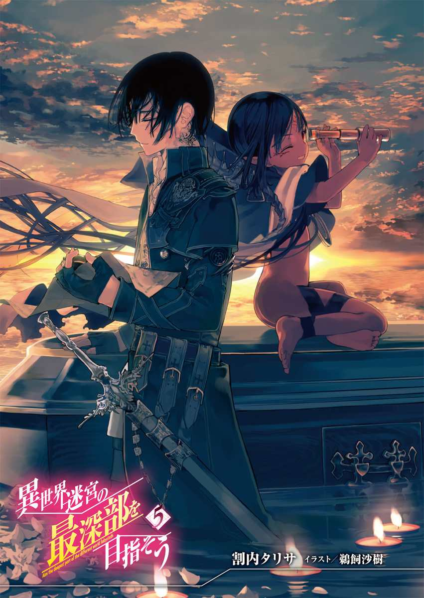
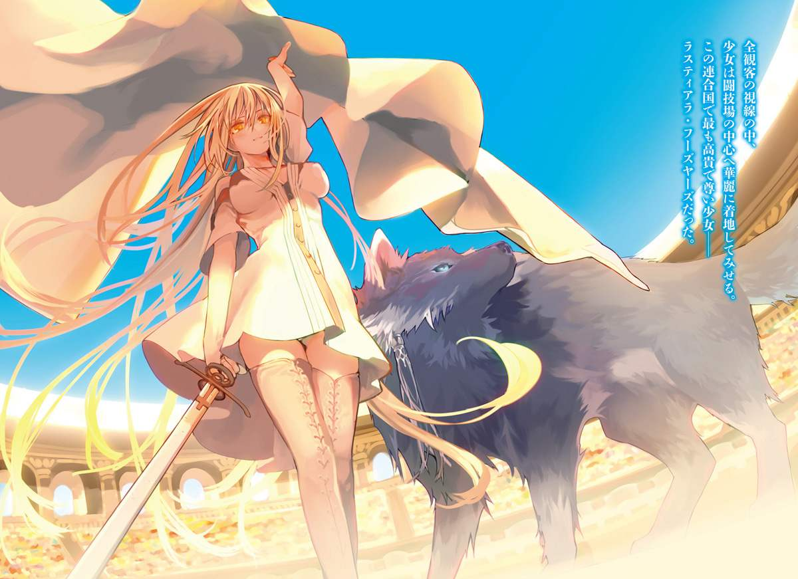
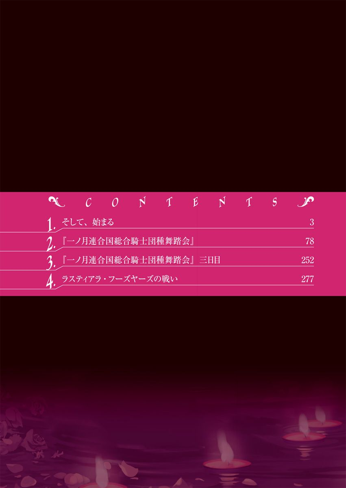
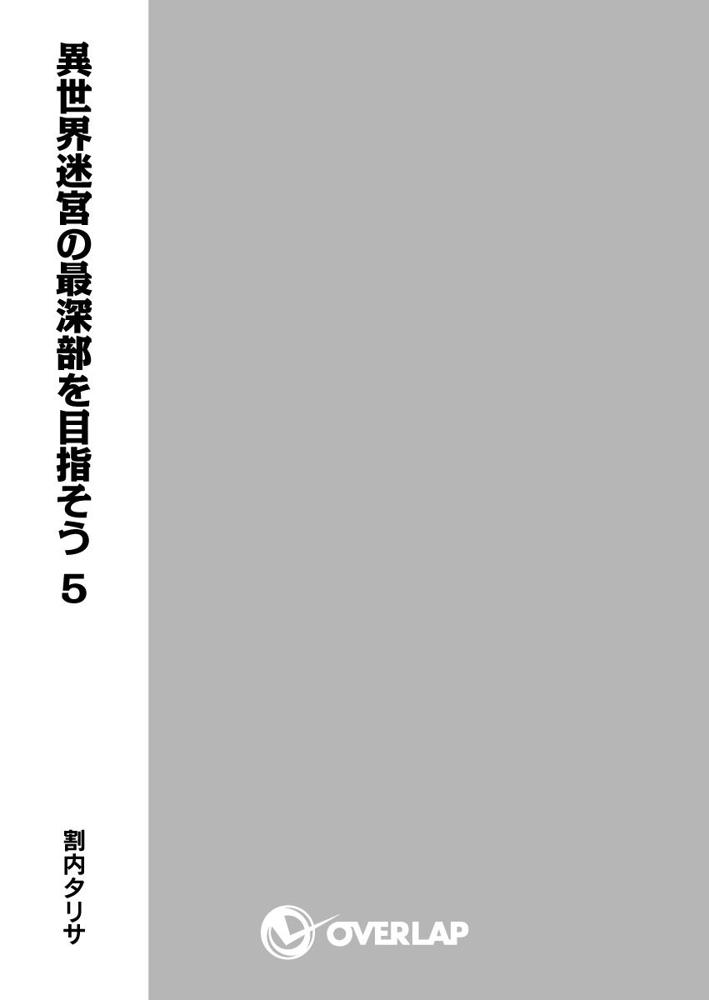
イラスト／鵜飼沙樹
城の外は、内の喧騒とは正反対に静まり返っていた。
僕たちが休ませて貰っている城のバルコニーも同様で、冷たい風の吹く音しか聞こえてこない。その風に当たり過ぎてしまったせいか、僕は少し身震いをしてしまう。そして、そのバルコニーに設置された長椅子に向かって、ちらりと目を向ける。
そこには貴族の男女――『兄妹』がいた。
涼しげな青い髪に桜色の瞳の少女がスノウ・ウォーカー。赤銅色の髪に茶色い瞳の青年がグレン・ウォーカー。見た目は正反対だが、確かに二人は『兄妹』だ。
項垂れて椅子に座るスノウの背中をグレンさんが謝りながらさすり続けている。その光景は僕の知っている『兄妹』に他ならない。
いま僕もグレンさんと同じように、スノウのためにできることはないかと考えているところだ。当然だが、先の唐突過ぎる求婚に応えることはできない。一番楽だからなんて理由で結婚するのはおかしいというのもあるが、裏にパリンクロンの策略を感じるのだ。
間違いなく、パリンクロンは僕とスノウをくっつけようとしている。いまのスノウの豹変から、それは間違いない。
ただ......だからと言って、このままスノウを拒否し続けていいとも思えない。
――二度と選択を間違えたくはない。
そう、先ほど僕は思った。『失敗』しないとも誓った。
だからと言って、そう簡単にスノウのためにできることなんて見つけられはしない。慰めるにしても『噓』だけは絶対に駄目だ。それでは誰も幸せにはなれない。
もっと別の方法を僕は探さないといけない――と必死に考え込んでいると、座り込んでいたスノウが急に立ち上がった。
少しよろめきながらも僕の方に近づいてきて、申し訳なさそうに声を出す。
「......変なこと言ってごめん、カナミ。......もう落ち着いたから、大丈夫」
いつもの様子で謝った。
先ほどの興奮状態のスノウでもなければ、独り言を続けるスノウでもない。
「いや、気にしないでいい。ずっと婚約のことで思いつめていたんだろ？ なら、ちょっとくらい取り乱しても仕方がないさ」
いつも通りに戻った彼女に合わせて、僕もいつも通りの自分で答えていく。
「......そ、そうだね。思いつめて......色々と焦ってた。結婚しろ結婚しろって繰り返されて、頭が茹だってたみたい。あはは」
スノウは取り繕いながら、乾いた笑顔で謝罪を繰り返す。
「ははは......。ごめん。さっきのは忘れて。私、何を必死になってたんだろ。必死になったって、上手くいかないに決まってるのに......」
そして、いつものように何もかもを諦めようとしている。それはスノウらしくはあるが看過できないことだった。僕は何も全てを諦めろって言っているわけではない。
「スノウ、そこまで卑屈にならなくていい。さっき協力するって言ったろ。嫌なことを無理強いされそうになったら、僕に言ってくれ。絶対になんとかする。僕が絶対に！」
「......ん、ありがと」
全力で協力の意思を見せたが、スノウから返ってきたお礼は、余りにそっけなかった。
間違いなく、心底からは喜んでいない。本当に欲しい言葉はそうじゃないと言わんばかりだ。スノウはお礼もそこそこに、僕のすぐ近くまでにじり寄ってくる。そして、僕の両手を握って、下から見上げるように見つめて、似合わない作り笑顔で願ってくる。
「ね、ねえ、カナミ。一応......、一応だよ？ 一応、『そういう道』もあるんだって覚えてて？ それだけで、私は十分だから......。ねっ？」
スノウの言う『そういう道』とは、つまり『僕とスノウが結婚する道』のことだろう。
「あ、ああ......。覚えておくだけなら......」
僕は頷いた。それを見たスノウは安心したように笑う。
そこで遠くで見守っていたグレンさんが僕たちに近づいてくる。僕とスノウが問題なく話しているのを見て、確認してくる。
「仲直りできたよね......？ もう大丈夫だよね？」
「ええ、もう大丈夫です。グレンさん」
その確認に、スノウも僕も頷いたことでグレンさんは一安心する。
「はぁ、よかった。本当によかった。......で、その、申し訳ないんだけど、もう僕は挨拶回りに行かないといけないんだ。スノウさん、本当に大丈夫......？」
どうやら、自分のせいで僕たちが喧嘩したのかと思って、気が気でなかったようだ。胸を撫で下ろしたあと、本来の仕事に戻ろうとする。
「大丈夫。兄さんこそ、忙しいのにごめん」
「謝るのはこっちだよ、スノウさん。......それじゃあ、行ってくるね」
その言葉を最後に、グレンさんは城の大広間の中に入っていった。バルコニーからでも、すぐに彼が多くの人に囲まれ始めたのが見えた。その量は僕たちが大広間で処理した量の何倍もある。『最強』と呼ばれるほどの『英雄』となると、こういった場で取り入ろうとする輩は数え切れないほどいるようだ。
「うわぁ。本当に忙しそうだね、グレンさん」
「......あんなのでも五国が誇る『英雄』様だからね。どこへ行ってもあんな感じ」
「どこへ行ってもか。それは嫌だな」
「......うん、私も嫌。絶対に嫌」
スノウは心の籠もった声で拒否した。
「なあ、スノウ。今日はどうする？ もう帰らないか？」
その様子から、まだ疲れは抜けきっていないと思って提案する。
「......帰りたい」
考えることもなく意見が合い、舞踏会から出ることが決まった。
スノウの体調が悪いのは本当だ。頭を下げながら、今日は上手く逃げ出そう。
彼女の手を引いて先導して、僕たちは大広間に戻る。言い方は悪いが、グレンさんを囮にしての脱走だ。貴族たちの喧騒の中、《ディメンション・決戦演算》を使って誰とも目を合わさないように出口へ向かう。
しかし、出口の扉まであと少しというところで見知らぬ女の子に話しかけられてしまう。
「――あれ、お兄さん？ うわー、久しぶりっすー」
髪の短い快活そうな女の子だった。場にそぐわぬ拙い敬語を使い、少し遠くから僕に手を振ってきている。
僕は戸惑う。このまま無視したいところだが、もしかしたら冗談にもならない上流階級の娘かもしれない。仕方なく足を止めて、女の子に目を向ける。
そこへ、さらに別の声がかかる。次は年季の入った低い声だった。
「む......。君はジークフリート・ヴィジター......？」
先の女の子と違い、異様に背の高い女性だ。妙に声が低く、まるで男の人のようだ。その上、僕よりも身長が高く、凜とした表情をしているためか、美青年に見えなくもない。その女性は栗色の長い髪を後ろで結い、尻尾のように垂らしていた。
その特徴的な二人と向かい合い、すぐに只者ではないと察する。
足の運びだけでわかる。二人とも静かで無駄がなく、戦うための足運びをしている。特に髪の短い少女のほうは、ローウェンに似ていると思った。
強者との邂逅に、僕は咄嗟に『注視』する。
【ステータス】
名前：ペルシオナ・クエイガー HP430/434 MP105/105 クラス：騎士
レベル27
筋力10.99 体力9.73 技量8.55 速さ10.09 賢さ9.32 魔力6.56 素質1.56
先天スキル：なし
後天スキル：剣術1.89 神聖魔法1.95
【ステータス】
名前：ラグネ・カイクヲラ HP158/161 MP36/36 クラス：騎士
レベル17
筋力3.40 体力4.42 技量12.05 速さ6.62 賢さ7.52 魔力1.62 素質1.12
先天スキル：魔力操作2.12
後天スキル：剣術0.57 神聖魔法1.02
髪の短い女の子がラグネ・カイクヲラ、高身長の女性がペルシオナ・クエイガーというらしい。その畏まった装いと『表示』のクラスから騎士であるとわかる。
二人とも、かなりの腕だ。ラグネ・カイクヲラにいたっては、あのローウェンに「人生を賭けて覚えるもの」とまで言わせたスキル『魔力操作』を身につけている。
だからこそ、無視して帰りたい。声をかけられなかったことにして逃げたい。
しかし、この名のあるであろう騎士たちを無視できるほどの度胸は、まだ僕になかった。
「いえ、人違いだと思います......。僕はそんな名前じゃありませんので......」
「へ？ 私たちがあのジークのお兄さんを間違えるわけないじゃないっすか。あんだけ激しく一方的にやられたんっすから、もう夢にでるレベルっす。いやぁ、あのときは意表をつかれたっすけど、次は負けないっすよー？」
「いや、だから人違い――」
顔を近づけてくるラグネ・カイクヲラに対し、両手を広げて壁を作って距離を取る。
「ふむ」
それを見たペルシオナ・クエイガーは得心がいったとばかりに頷き、ラグネ・カイクヲラの後ろ襟を摑んで引き戻してくれる。
「......確かに人違いということにしないといかんな。......ラグネ、そのお方の仰る通り人違いだ。あの男の罪状は、フーズヤーズとラウラヴィア間の取引で清算を終えている。よって、このお方とあの不届き者は別人だ」
「えっ、そうなんすか？ 私は何も聞いてないっすよ」
「おまえは口が軽い上に、まだ立場も弱い。ゆえに詳しく聞かせていなかった」
「ま、まじすか......」
二人は僕を置いて話し出す。
どうやら、例の『ジーク』とやらは罪人の疑いまであるらしい。嫌なタイミングで嫌なことを聞いてしまった。そして、二人は顔をしかめる僕に自己紹介を始める。
「ラウラヴィアの勇士アイカワ殿、我が部下の無礼を謝罪する。私はフーズヤーズの『天上の七騎士』序列一位を務めているペルシオナ・クエイガーだ。よろしく頼む」
「同じくラグネ・カイクヲラっす。序列は棚ボタで三位になったっすね」
こうも丁寧に名乗られては仕方がない。仕方なく僕も名乗り返す。
「......ラウラヴィア直属ギルド『エピックシーカー』のギルドマスター相川渦波です。こっちはサブマスターのスノウ・ウォーカーです。ただ、いまは急いでいるので、この場は失礼させて――」
「ただいま戻りましたわ！ 総長！」
場を去るための文句を、さらなる新手の少女に遮られてしまう。
その少女は舞踏会の中でも特に高貴な雰囲気を持っていた。異様に目立つ金髪のツインテールに、金と銀の刺繡で彩られた豪奢なドレスを着ている。
「丁度いい、紹介しよう。新しく『天上の七騎士』に入った、序列六位フランリューレ・ヘルヴィルシャインと序列七位ライナー・ヘルヴィルシャインだ」
ペルシオナ・クエイガーは間髪いれずに同僚の自己紹介を行い――そのツインテールの少女と僕は目が合う。
「へ、え？ ジ、ジーク様......？」
少女の瞳がきゅっと小さくなり、口を大きく開けて『ジーク』と呟いた。
「――っ！」
その後ろで、執事服を着た少年も驚いていた。しかし、その驚きは少女とは別物だった。少年は驚愕のあと、突き刺すような敵意を見せる。軽く身構えつつ、少年を『注視』する。
【ステータス】
名前：ライナー・ヘルヴィルシャイン HP142/172 MP23/50 クラス：騎士
レベル12
筋力6.12 体力4.52 技量5.01 速さ6.92 賢さ6.53 魔力3.88 素質1.89
先天スキル：風魔法1.12
後天スキル：剣術1.23 神聖魔法1.02
そこそこの才能はある。しかし、特別警戒するほどの相手ではない――はずだ。
そして、そのステータスを見終える頃には、少年の敵意は霧のように消えていた。
表情を消して、少女の後ろへ控える。合わせて僕も構えを解いた。
「え、え？ なぜ、ジーク様がここに？ それもスノウと一緒に......」
フランリューレ・ヘルヴィルシャインは先のラグネ以上に、僕の傍に詰め寄ろうとしてくる。しかし、その間にスノウが割り込んで、距離を離してくれる。
「久しぶりです、フランリューレ様。フーズヤーズ最上位の騎士に叙任されたと聞きました。おめでとうございます」
「スノウ！ 学院を休学してギルドをやっていると聞いてはいましたが......！ あなた、ジーク様には興味ないって言っていたじゃありませんか！」
「成り行き上で」
「な、成り行きですって！ 成り行きでジーク様と一緒になれるなら苦労しませんわ！」
聞く限り、学院の知り合いのようだ。他の貴族と話すときよりも気楽そうなので、黙って任せることにする。ただ、その言い争いは舞踏会に似合わないものだったので、すぐに年長者のペルシオナ・クエイガーから制止がかかる。
「それ以上はやめろ、フラン。そのお方は、あの『ジーク』ではない」
「ジーク様！ わたくしです！ いつかの学院試験でお世話になったフレンリューレ・ヘルヴィルシャインです！ 覚えていらっしゃいませんか!?」
「だから、それをやめろと言っている」
制止をかけても止まらないフランリューレ・ヘルヴィルシャインに対して、ペルシオナ・クエイガーは彼女の首根っこを摑んで止める。
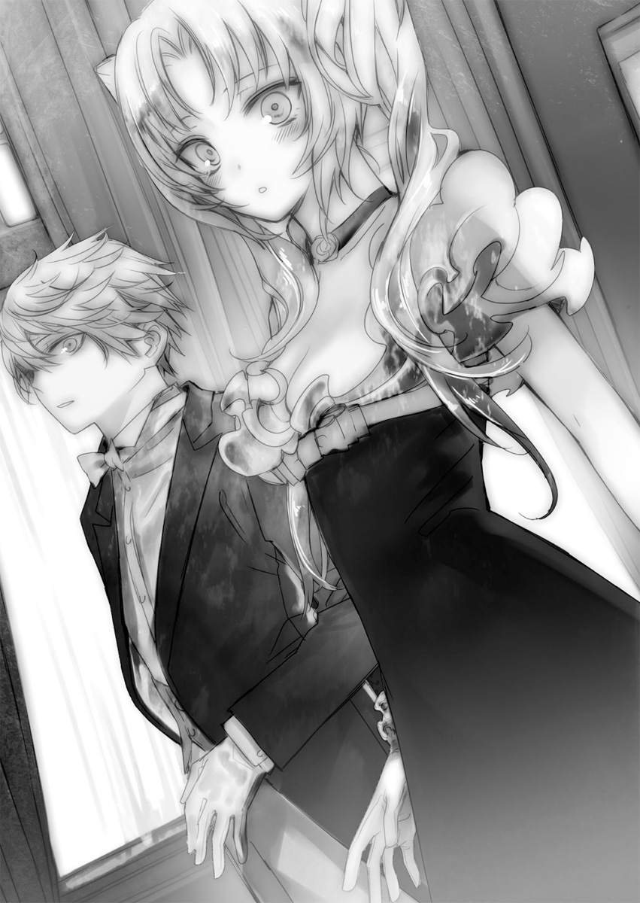
「――ぅがっ！」
乙女らしくない声と共に、フランリューレ・ヘルヴィルシャインは後方へ下げられ、念入りに忠告がされる。
「いいか？ おまえはフーズヤーズの『天上の七騎士』で、彼はラウラヴィアのギルドマスターアイカワ・カナミだ。そうなってる。......おまえは私情を挟み過ぎだ」
「くぅっ......！」
やけに元気だった少女は窘められ、すごすごと引き下がっていく。ライナー・ヘルヴィルシャインも一緒だった。その後、ペルシオナ・クエイガーは咳払いを一つして、何事もなかったかのように話を続ける。
「アイカワ・カナミ殿。このように、空いた『天上の七騎士』の席は、ハイン・ヘルヴィルシャインの親族が埋めてくれたわけだが......しかし、まだ席が一つ空いている状態だ。いや、本当に困ったものだ。騎士の象徴たる『天上の七騎士』がいつまでも六人では、他の国に示しがつかぬ。......そこで我らは、かのハインの遺志を継ぐ優秀な騎士を探しているところなのだよ」
少し芝居がかった物言いでペルシオナ・クエイガーは距離を詰めてくる。
「ハイン――？」
ハイン・ヘルヴィルシャイン。
その名前を聞いたとき、心がざわついた。自分の意思と関係なく、拳が握り締められる。
「そこで『天上の七騎士』の総長である私は、最後の一席にアイカワ・カナミ殿を推薦してもいいと思っている。誘うだけならタダだからな。......どうだ？」
ラウラヴィアの保護下に居る以上、『天上の七騎士』とやらに入るつもりはないが、ハインという人の話は少し聞きたいと思った。だが、その返答をする前に背後の部下たちが興奮し始める。
「そ、それはいい話ですわ！ ナイスな考えです、総長！」
「ええ!? 三席共、お兄さんのせいで空いたようなものっすよ？ そんなこと、上が納得するんっすかー!?」
陽気な黄色い声が二人分。この二人の反応は可愛らしいだけで、全く問題ではない。問題があったのは、その後ろに隠れる少年――ライナー・ヘルヴィルシャインだった。
突如、少年ライナーの敵意が膨れ上がる。ローウェンとの訓練を繰り返し、研ぎ澄まされてきた感覚が訴えかけてくる。
この無表情の少年は下手をすれば、いま、この場で僕に攻撃してくる可能性すらある。
それに気づいているのかいないのか、ペルシオナ・クエイガーは話を続ける。
「おい。だから二人とも、少し黙っていろ。......それで、アイカワ・カナミ殿、返答は？」
「えっと――」
とりあえず、僕は詳しい話を聞くべきかと思い、答えようとして――
「駄目です。カナミは私のマスターで、パートナーです。フーズヤーズには渡しません」
代わりにスノウが断った。僕の前に出て、ペルシオナ・クエイガーを睨む。
ペルシオナ・クエイガーは急に割り込んできたスノウを、興味深そうに見つめる。
「......ほう」
「カナミはラウラヴィアの一員です。どんなことがあろうと、カナミは『エピックシーカー』から離れることはありません。ねっ、カナミ......？」
スノウの肩が少し震えているような気がした。
「......そうだね」
スノウのためにも早めに切り上げた方がいい。僕は素直に頷く。
暗に勧誘を拒否した僕に対して、ペルシオナ・クエイガーは鋭い目を向ける。
「ふむ。ならば『舞闘大会』にて口説こうか。『天上の七騎士』はフーズヤーズの推薦枠を与えられている。ラウラヴィアの推薦枠である君とは相見える可能性は高い」
そして、『舞闘大会』を口にする。
毛ほども諦めていないペルシオナ・クエイガーにスノウは言い返す。
「言っておきますが、私も『舞闘大会』には出ます。そう易々とカナミと戦えるとは思わないでください」
「なるほど......。かの『最強』の妹君と剣を交えるならば、我ら『天上の七騎士』も心してかからねばならないな。ウォーカー家の『竜の化身』、スノウ・ウォーカー殿」
二人は睨み合う。いくらかの時間が過ぎさったあと、先にペルシオナ・クエイガーが息をついて笑った。
「ふっ、いい挨拶ができた。......呼び止めてすまなかったな、また会おう。アイカワ・カナミ殿、スノウ・ウォーカー殿」
その言葉を最後に、ペルシオナ・クエイガーは背中を見せる。騒ぐ同僚の『天上の七騎士』たちも連れてだ。そして、僕たちだけが大広間の出口前に取り残される。
僕はスノウの行動に違和感を感じて、名前を呼ぶ。
「スノウ......？」
スノウはびくっと肩を震わせ、目をそらしたまま、取り繕うように話し出す。
「あ、あの人たちには悪いけど。......カナミは私のカナミだから」
「え......？」
「――い、いや、『エピックシーカー』のギルドマスターって意味でだよ？ カナミは私たちのカナミってこと。簡単に引き抜かれたら、ギルドのみんなが悲しむからねっ」
慌てて言葉を足していく。それが建前であると、その様子から僕は感じ取ってしまう。
――おそらく、スノウは僕との結婚を全く諦めていない。
それを理解し、迷いながらも、ゆっくりと頷く。
「心配しないでいいよ。どんな条件を出されても、僕はフーズヤーズに行かない。せっかく、ギルドメンバーたちと仲良くなってきたところだからね......」
「そうだよね。えへへ、よかったぁ......」
スノウは僕の返答を聞いて、ぱあっと顔を明るくする。
それを見て僕は安心すると共に、違和感も膨れ上がっていく。
スノウが笑っているのならば、それはパートナーとして嬉しいことだ。しかし、その一方で彼女の新しい一面に戸惑っているのも確かだった。
「とりあえず、帰ろう......。僕もちょっと疲れてきた......」
「うん、一緒に帰ろう」
僕たちは逃げるように大広間から出ていく。
こうして、僕の社交界デビューは終わった。
その帰路――いつもよりもスノウとの距離が近くなっている気がした。いつもよりもスノウが女の子らしいとも思った。けれど、その裏にあるのは彼女の「結婚したい」という願望だと思うと、自然と僕は一歩退いてしまっていた。
◆◆◆◆◆
舞踏会の夜を越え、『舞闘大会』はあと二日まで迫る。
昨夜の舞踏会で、僕は色々なことを知った。まず、僕の抱いていた『英雄』というイメージは反転した。『最強』という称号を持った『英雄』は、酷く疲れた顔をしていた。目の下に積年の苦労が滲み出る隈を作って「死にたい」とまでぼやいていた。
そして、スノウが想像以上に追い詰められていたこともわかった。彼女が苦しんでいる理由の一端を知り、僕は貴族という存在がより嫌いになってしまった。正直なところ、あの舞踏会には二度と行きたくない。煌びやかな世界だったが、鼻の曲がるような不快な異臭もしていた。
あの大広間に居た誰もが、一般市民にはない『名誉』を持っていた。確か、ローウェンは『名誉』と『栄光』が欲しいと言っていた。あの大広間にあった世界が欲しいというローウェンの『未練』に、少しだけ疑問を抱く。
本当に多くを知り、多くの問題を見つけた。
そして、未だに僕は『腕輪』に触ることができていなかった。パリンクロンが用意した『腕輪』が重要であるのは間違いない。外せば記憶が戻る可能性はある。しかし、外せば同時に『不幸』も待っている可能性があると考えると身体が硬直する。僕だけならまだしも......マリアとスノウが『不幸』になるとわかっていて、迂闊に動くことはできない。
スノウやローウェンのことだけでなく、自分の記憶のことも考えながら、僕は『エピックシーカー』内を歩く。『舞闘大会』までの二日間、自分がすべきことは何かを考えつつ、とりあえず執務室に向かっていく。
いまは早朝だ。きっと執務室には誰も居ないだろう。そこでスノウ、ローウェン、リーパーたちを待つ間に、これからの指針を決めようとして――
「カナミっ、おはよ！ 今日も頑張ろう！」
スノウが元気な声で僕を迎えた。
「お、おはよう......。随分とやる気みたいだけど、どうかしたの......？」
来ている時間もそうだが、そのテンションの高さに僕は戸惑う。
「そう？ いつも通りだよ？」
スノウ自身は本気でそう思っているみたいだが、僕から見ると違和感しかない。あの物臭の代名詞とも言えるスノウが、約束の時間の半刻も前に待機しているなんて......。
その高いテンションのまま、スノウは話を続ける。
「ね、今日は迷宮探索する？ それとも、ラウラヴィアのお仕事？」
「いや、ちょっと考え中で......」
「私は国の依頼をしたいかな。ほら、色々と持ってきた。よりどりみどり」
笑顔で机の上に色々な書類を広げていく。どうやら、ラウラヴィアがギルドに発注している依頼の資料集のようだ。軽く僕は資料を眺める。そして、その依頼たちの難易度の高さに目を見張る。どれもがトップクラスの探索者たちが命を賭けて挑戦するようなものばかりで、とても片手間にできるようなものではなかった。
「スノウ。『舞闘大会』まであと少しだし、もっと手軽なものの方が......」
「あっ、これなんていい。西部の開拓地に住むモンスターの討伐。西の山脈は竜が出るみたい。やり応えある」
スノウは僕の意見を無視して、似合わない台詞と共に資料を手渡してくる。
「竜の討伐......？ できれば、大事になるようなのは嫌なんだけど」
「でも大事をこなさないと、『名誉』が得られないし......」
「め、『名誉』......？ 別に僕は『名誉』なんて......」
いままでスノウは『名誉』に拘ったことなんて一度もなかった。明らかにおかし過ぎる。
「ローウェン・アレイスの目的は『名誉』と『栄光』。なら『竜殺し』なんて『名誉』は大変喜ぶと思う。それに『エピックシーカー』のためにもなる」
スノウは微笑んでいた。本当にみんなのためになると確信しての提案のようだ。確かに、ローウェンの未練解消の意に添っている話だ。誘えば、きっと手伝ってくれるだろう。
しかし、いまは別のこと――記憶の問題や『舞闘大会』に集中したいのが本音だった。
「......それなら、ローウェンと一緒に考えた方がいい。ちょっと呼んでくる」
断る理由を考えるため、僕は時間を稼ごうとする。
「そうだね。ローウェン・アレイスを呼ぼう。ここで待ってるから、カナミ、お願い」
スノウは微笑んだまま、頷く。
すぐに僕は《ディメンション》を展開し、ローウェンを探しに行く。執務室から出て、扉を閉める。その直前、スノウの声が僕の耳に届いた。とても小さな声だったが、はっきりと聞こえた。
「うん。カナミも『竜殺し』をすれば、きっと......。きっと――」
スノウの声は弾んでいた。仕事にやる気を見せてくれるのはいいが、危ういと感じる。目の前のことしか見えておらず、視野が狭くなっている。そんな印象だ。
そして、その『目の前のこと』とは――おそらくだが、僕の名声だろう。
それは『エピックシーカー』のためなのか、僕のためなのか、自分のためなのか......。
悪いことではないと思うのだが......、いいことだとも思えない......。
僕は不安を抱えたまま、ローウェンを探し出す。そして、大した時間もかからず、《ディメンション》が彼を捕捉する。街外れの孤児院で、朝っぱらから子供たちと遊んでいた。確か、ラウラヴィアの治安維持活動を手伝ってもらっている内に仲良くなったと聞いた。ローウェンは仕事をしていないときも正義の味方の真似事をしているようなので、市民の――特に子供の人気が高い。
ラウラヴィアの街中を歩き、すれ違う人々と挨拶をしながら孤児院を目指す。
その孤児院の庭には、子供相手に木の棒で剣を教えるローウェンがいた。
「――おっ、君は中々飲み込みが早いな。よし、そのまま剣を振り抜け！」
「はい、ししょー！」
アレイスの剣技が大盤振る舞いだった。子供の目から見ても、ローウェンの技が凄いのはわかるのだろう。子供たちは嬉々とした目で、その剣技を真似している。
「うむ。それがアレイス流剣術の払いの基礎だ。繰り返して、身体に染み込ませるように」
ローウェンは嬉々として、神技の一端を子供たちに教え込んでいた。
「ししょー。早く、次の技を教えてください！」
「できればかっこいいやつ！」
「奥義とかないんですか!?」
その子供たちの声に対し、ローウェンは「仕方がないな」と笑いながら木の棒を構える。
「では、少し早いが奥義を教えようか。なんとだっ、これを修得すれば『世界の理』を理解することができるようになる！ 修得すれば相手の動きが全部わかるという、すごいお得な奥義だ！ ぶっちゃけると、これさえあれば負けない！ 名づけて、アレイス流剣術奥義『感応』だ！」
......いや、ちょっと待て。
「か、かんのう......？」
「変な名前だねー」
「どうやるんですか、ししょー！」
例の技名を聞き、子供たちは好奇心のままに目を輝かせる。
「簡単なことだ。心を無にして、全てのしがらみを捨て、森羅万象の根源に思いを馳せ、世の幸も不幸も享受し、己を殺し、感情を消失させ――」
すぐに僕はローウェンの背後から襲い掛かる。
「馬鹿ローウェン！ 聞くからに危ない!!」
「――っとと！ 何するんだ、カナミ！」
僕の渾身のドロップキックを、すれすれのところでローウェンはかわす。
相変わらず、スキル『感応』の力はすごい。すごいが、そう気軽に子供に教えていいものではないはずだ。聞くからに、洒落にならない『代償』が必要そうだ。
「いや、こっちの台詞だよ。何やってるの、ローウェン......」
「何って、剣を教えてるんだが？ カナミが一日でほとんどマスターしてしまったから、他の弟子を探しているんだ」
「子供に教えるなら、基礎だけにして。スキル『感応』はちっちゃい子には早過ぎる......」
「......しかし、私はスキル『感応』を、この子たちぐらいのときに修得したぞ？」
「それでも駄目」
どうやら、ローウェンは己を殺し感情を殺すようなスキルを子供の頃に修得したらしい。
相変わらず、無駄に悲しい過去を持っている......。
「ふむ、仕方がない。一番弟子のカナミがそう言うのなら、そうしよう」
「本当は自分で気づいて欲しいことなんだけどね」
「それで、カナミ、何か用か？ こんなところまで来たのだから、何かあるのだろう？」
「あ、ああ、そうだ。忘れかけてた。スノウが大きな依頼をしたいって言い出したから、ローウェンの意見も聞こうと思ったんだ」
「む、大きな依頼か......。面白そうだ」
「資料は執務室にあるから、ちょっと来て」
すぐにローウェンは子供たちの方に向き直り、指示を出す。
「すまん、みんな！ 用事ができたから、今日はここまでだ！ 今日教えた払いの基礎を次までにしっかりとマスターしてくれ！」
「えぇー!?」
子供たちは不満そうだった。
こうなると、子供たちの楽しみを奪ったのは僕になる。少しだけ居た堪れない。
「私はラウラヴィアの平和のために忙しいんだ。それじゃあなっ」
ローウェンは強引に別れを切り出し、背中を向けた。
しかし、それでも子供たちは笑ってローウェンを送り出す。
「平和のためなら仕方がねーなー」
「また来いよ、ししょー！」
「ありがとうございました、ししょー」
ローウェンという大人を心から信頼しているのだろう。仕事と聞けば、子供たちが引き止めることはなかった。
「よし、カナミ。行こうか」
「ああ、行こう」
僕よりも『英雄』をしているローウェンに敬意を抱きながら、道を先導しようとする。ただ、それをローウェンは止める。
「あっ、すまない。執務室へ行く前に工房へ寄ってくれないか？ アリバーズに頼んだ私の剣が昨日完成したはずなんだ」
「へえ......、剣を？ うん、わかったよ」
ローウェンの要望を受け入れ、先に僕たちはアリバーズさんの工房へ向かう。
『エピックシーカー』の隅にある煤まみれの建物まで歩き、中に入っていく。
僕が剣を注文して以来、アリバーズさんの工房は大盛況だ。定期的に僕が修理品を頼んでいるのもあるが、僕の剣の出来を見て利用者が増えたようだ。
その熱気の籠もった工房内で叫ぶ。
「アリバーズさん、こんにちはー」
「......お、マスターとローウェンか。こんな汚いところまで、ようこそ」
工房の奥で大粒の汗を垂らすアリバーズさんが歓迎してくれる。
すぐにローウェンは用件を切り出す。
「アリバーズ、私の剣はできてるか？」
「ローウェンか。ああ、もちろんだ。すぐに用意しよう」
そして、いつもの作業台に武具を広げていく。その中には僕が頼んでいた修理品も含まれているので、ついでに回収しておく。
「えっと、これがマスターので......。ローウェンのはこれかな......」
ローウェンの剣を横目で見る。さほど特殊な剣ではない。探索者にはポピュラーな魔法鉄で鍛えられた剣だ。違うとすれば、鞘に無駄な装飾があしらわれているくらいか。
「ありがとう、アリバーズ。いつもカナミから剣を借りてばっかりでは、剣士として格好がつかなかったんだ」
プレゼントを貰った子供のように、ローウェンは嬉しそうに剣を受け取った。
「それなら、僕の剣のどれかをあげたのに......」
「いや、こういうのは自分の稼いだお金を使って、自分で買うからいいのさ。こう......『自分の剣』って気がするからな」
僕は修理してもらった剣を眺めながら、ローウェンの考えを聞く。そこでアリバーズさんが壁に立てかけていた二つの剣を指差す。
「ああ、それと......すまない、マスター。あっちの剣二つだけは、どうしても修理の目処がつかなかった」
どうにか修理できないかと預けっぱなしにしていた剣だ。素材が特殊過ぎて、結局手には負えなかったようだ。その剣を見てローウェンが目と口を大きく開く。
「なっ、その剣は――」
『アレイス家の宝剣』と『ルフ・ブリンガー』を見て驚いているようだ。
ローウェンの姓は『アレイス』だったはずだ。何か知っているのかもしれない。
「は、はははっ。まるで『呪い』――いや、腐れ縁にしておこうかな......」
苦笑しながら、とても懐かしそうに立てかけられた剣二つを手に取ろうとする。
アリバーズさんは慌てて、剣を取るのを止める。
「ま、待って、ローウェン！ そっちの黒い剣は――」
「大丈夫。このくらいなら『感応』で無効化できる」
何事もないように、ローウェンは『ルフ・ブリンガー』を手に取り、その折れた刀身を指でなぞる。剣は瘴気を滲ませているが、全く意に介していない。
「ぼろぼろになったな......。おまえら......」
その精神汚染を苦笑のまま受け入れる。大体の事情を察し、僕は問いかける。
「その剣を生前に見たことがあるの......？」
「ああ、その通り。両方とも知ってる。懐かしくて、ちょっと呆然としてしまった」
眺めていた剣を立てかけ直し、昔話でもするように話を続ける。
「こっちの宝剣は、生前に使っていたことがある。絶対に見間違えはしない。そして、こっちは確か、『ルフ・ブリンガー』だったかな。この剣とは、何度か斬り結んだことがある。懐かしい記憶だ。カナミ、これを一体どこで？」
「え、えっと、迷宮だと思うけど......」
僕は自信なく答える。『ルフ・ブリンガー』は記憶に新しいが、『アレイス家の宝剣』は見当もつかない。
「なるほど。奇妙な運命だな。またこの剣が揃うときがくるとは......」
「その剣、いるならあげるけど......」
語り口から愛着を感じ取り、ローウェンに提案する。
「いいのかい？」
「もちろんだよ。ただ、修理できないから、ナマクラ以下らしいけど......」
「そこは工夫次第さ。鍛冶師の腕の見せ所だね。――アリバーズ、話がある」
ローウェンは顔を輝かせて、アリバーズさんを呼び寄せる。
「お、なんだ？」
「マスターには内緒の話だから、少し耳を貸してくれ」
そして、内緒話を始める。わざわざ「内緒の話」と口にしたということは、《ディメンション》を使わないでくれということだろう。親友の信頼に応えて、魔法を解除する。
それを感じ取ったローウェンは、にこりと笑ってアリバーズさんに耳打ちする。
「――え、え？ ローウェン、本当にそれだけでいいのか？」
その内緒話を聞いたアリバーズさんは驚きの声をあげる。鍛冶師の立場からは考えられない提案だったようだ。
「ああ、『アレイス家の宝剣』はそうしてくれ。『ルフ・ブリンガー』の方は、鞘が特殊になると思うが頑張ってくれ」
「いや、鞘は問題じゃないだろ。ローウェンがそれでいいのなら、そうするけどよ......」
「よし、契約成立だ。あとで金を払いに来よう」
「いまの注文なら一日もかからないから、明日にでも来てくれ」
どうやら、話は決まったようだ。僕にも聞こえる声で、受け渡しの日取りを決める。
「待たせた、カナミ。それじゃあ、執務室に戻ろう」
「一体何を提案したんだよ......」
「それは秘密だ。ちょっとしたサプライズにするつもりだ」
ローウェンは楽しそうに微笑む。
「そっか。なら、楽しみにしてるよ」
深く詮索することなく、僕もそれに微笑んで応える。
そして、僕たちはスノウの待つ執務室に戻っていく。少し寄り道してしまって時間がかかったものの、スノウは機嫌のいい様子のままで待ってくれていた。
スノウは現れた僕たちを見て、開口一番に言う。
「――おかえり。それでローウェン・アレイス、『竜殺し』に興味は？」
「ある。やろう」
「ん、決定。そう言うと思って、資料の準備は終えている」
ローウェンは一切の迷いなく即答し、スノウは机の上に広げた竜討伐の資料を見せる。
「なるほど、辺境の村を襲うはぐれ竜か。これは一刻も早く救いに行かなければな......」
「そう言うと思って、出発の準備は終えている。ウォーカー家の馬車が外に待機中」
「ああ、行こうか......。竜退治......悪くない英雄譚だ！」
そのまま、スノウとローウェンは外へ出ようとする。
「い、いやいや！ 待て！ 早過ぎだっ！ 二人で打ち合わせしてたのか!?」
《次元の冬・終霜》で出入り口を凍らせ、二人の出発を食い止める。
「ん......？ ううん。でもこの栄光馬鹿なら、こうなるとは思ってた」
「断る理由がない。『竜殺し』なんて最高の『名誉』じゃないか。悔しいが、スノウ君の提案には一分の隙もない」
二人は仲がいいような悪いような掛け合いで、僕の疑問に答える。
しかし、ローウェン......。いまの説明で一分の隙もないとまで言っちゃうのか......。
「二人はそれでいいかもしれないけど僕は違うよ。できれば、もっと穏便な依頼がやりたい」
「しかし、カナミ。『竜殺し』だぞ、『竜殺し』」
「うん、そのワードに惹かれたのはわかったから、落ち着いて......」
「しかし――」
ローウェンは食い下がる。仕方なく僕は、危惧していることを問いかけることにする。先ほど、子供たちに教える彼の背中を見て、感じたことだ。
「ローウェン。最近、かなり弱ってきているでしょ？ 竜が相手とか、大丈夫？」
「うっ......。弱っているのは確かだ。だが、『竜殺し』となると話は別で......」
ローウェンは地上での生活で弱ってきている。三十層で出会った頃とは比べ物にならないほど、魔力が薄れている。身体能力にも影響が出ているほどだ。
しかし、それでもローウェンは『竜殺し』をしたいようだ。想像以上にスノウの餌に釣られてしまっている。こんなに彼が楽しそうなら、それを止めるのは憚れる。ローウェンを消すことも、いまの僕の目標の一つなのだから。
「本当に大丈夫？ 負けたりしない？」
「ああ、大丈夫だ。やらせてくれ。アレイスの剣士は竜などに負けはしない」
ローウェンは真剣な顔で頷く。そんな顔をされると、もう何も言えない。
代わりに、その後ろで「かかった！」と心の中で思ってそうなスノウに声をかける。
「それで、スノウ......。なぜ、急にこんなことを......？」
「ん......。いま、ラウラヴィアで『竜殺し』の称号を持っているのはグレン兄さんだけだから。カナミにも必要と思った。この竜を殺せば、一躍有名人」
「いや、だから、僕は有名になんて......」
一ギルドのギルドマスターとして間違っているとはわかっているが、いまやるべきことではないと思ってしまう。苦し紛れに僕は、最後の同居人の名前を口に出す。
「そ、そうだっ。そういえば、リーパーはどうしてるんだろ。あいつを仲間はずれにしたら、ややこしくなりそうだから、ちょっと呼んでみよう！」
「んー......、リーパー？ リーパーなら仕方がないかな......」
リーパーが反対してくれれば、上手く穏便な方向に持っていける。
正直なところ、いまは名声よりも考える時間が欲しい。スノウが頷いたのを見て、すぐに《ディメンション》をラウラヴィアの街に広げる。リーパーの居そうなお店に意識を向け、お菓子の食べ歩きをしていないか確認する。あとは同年代の子供の溜まり場だ。ガキ大将を気取っているところをよく見るので、空き地や川にも展開する。
しかし、見つからない。仕方がなく、強めに《ディメンション・多重展開》を広げ――
――とある一軒家の屋根上で蹲るリーパーを見つける。
震えていた。苦しそうに、自分の首を押さえて震えているリーパーがいた。
「――リ、リーパー？」
彼女の名前を口にしたと同時に、リーパーは僕の魔力に気づく。
何キロメートルも離れたところで気づき――いくつもの障害物を挟みながらも、僕とリーパーは目が合い、彼女はにっこりと笑った。そして、その額にしたたる異常な量の汗を拭い、例の瞬間移動を何度か繰り返し、執務室までやってくる。
「お邪魔しまーっ！」
黒い霧と共に、リーパーは何もないところから元気よく現れる。
その顔に先ほどまでの苦悶の表情はない。いつもの純真無垢な笑顔だった。
現れたリーパーに、まずローウェンが話しかける。
「おっ。来たな、リーパー。いまから、竜を倒しに行くんだが一緒に行くか？ 『舞闘大会』前のいい肩ならしになる。もしかしたら、『舞闘大会』で竜が出るかもしれないしな」
「竜？ おー、いいねっ！ 絵本とかによく出るやつだね！」
「ああ、その竜だ。たぶん、私とカナミがいれば危険もないだろう。どうだ？」
「行くよっ！ 楽しそーだからね！」
リーパーは答えると同時に、スノウの背中へ飛び乗った。
スノウは笑顔でリーパーの参加を認める。しかし、僕は――
「リ、リーパー？ 本当に大丈夫なのか？」
二重の意味で確認する。
「うん、大丈夫だよっ」
それに対し、リーパーは笑顔と『繫がり』からの魔力の逆流で応えた。
逆流する魔力が首の紋様を通って僕に伝える。それは温かな魔力だった。そして、「安心して」とでも言うような優しい感情も含まれていた。
「や、やめたほうがいいんじゃないのか......？ 少なくとも、僕は乗り気じゃない......」
さっきまで、リーパーは一人であんなにも苦しそうだったのだ......。
理由はわからない。わからないが、放ってはおけないと思った。
「カナミは本当に乗り気じゃないんだな......。ならば、私とリーパーとスノウ君の三人で行ってもいいのだが......」
ローウェンは僕の真剣な様子を感じ取り、パーティーから僕を除こうとする。
それにはスノウが慌てて反論する。
「――だ、駄目！ これはカナミのための依頼。これを請け負うには信用が必要。『エピックシーカー』で活躍したカナミがいないと受けられない」
「スノウ君がいればなんとかならないのか？」
「ならないこともないけど、でも......――」
二人の話し合いは続き......その様子をリーパーは温かな目で見つめている。
そして、その目を僕にも向ける。その目から、先ほどのことは忘れて欲しいことが伝わってくる。もしかしたら、ローウェンに心配をかけたくないのかもしれない。
僕はひどく迷った末、その意思を汲むことにする。
ただ、汲んだからこそ、リーパーを放ってはおけない。
「やっぱり、僕も行くよ。みんなが行くなら、せっかくだからさ」
リーパーの傍を離れず、機会を見て、苦悶の表情の理由を聞こうと思う。
仕方がなく、竜討伐の依頼を受ける。
「よかった。ありがと、カナミっ」
一番喜んだのはスノウだ。満面の笑みで僕の手を握る。
「む、カナミが来てくれるならありがたい。これで問題解決だな」
「竜かー、でかいのかなー？ 食べられるのかなー？」
僕は陽気なリーパーを注意深く観察する。しかし、《ディメンション》をもってしても異常は感じられない。やはり、直接聞くしかなさそうだ。
僕がリーパーに集中していると、スノウは握った手に力を込める。
「カナミ、それじゃあすぐにでも行こう！――あ、この部屋に《コネクション》置くの忘れないで。帰りは次元魔法に頼るから」
「あ、うん。わかった......」
言われるがままに《コネクション》を執務室の奥に設置し、そのまま手を引かれて外へ出ていく。ローウェンもリーパーも、その後をついてくる。
『エピックシーカー』の外には豪奢な馬車が数台停まっていた。舞踏会に行ったときの馬車もあることから、ウォーカー家の物であることがわかる。
スノウは仕事に自分の家が介入するのを嫌っていた。いや面倒臭がっていた。しかし、ここにきて積極的に家の力を使おうとしている。
笑顔でやる気に満ちたスノウだが、その裏では打算が満ち溢れている。
手を引くスノウに、僕が力を込め返すことはないまま、僕たちは竜討伐に向かう。
スノウの心変わり。ローウェンの衰弱。リーパーの苦悶の表情。僕自身の記憶。
多くの不安を抱えたまま......。
◆◆◆◆◆
手続きや細かな準備はスノウが全て終わらせていた。いや、正確にはウォーカー家の人たちが分担して行ったようだ。瞬く間に話は纏まり、朝の内に僕たちはラウラヴィアから出て、西部の村に向かうことになった。
思えば、連合国を出るのはこれが初めてだ。馬車の窓から、外の景色をそれとなく眺める。若緑色の平原を下地に、遠くに白い山が見える。連合国の外は開拓地と聞いていたが、本当に何もない。簡易的な道路はあれど、人の手が入っていない自然がほとんどだ。
馬車に揺られながら、一緒に景色を見ているリーパーに話しかける。他の誰にも聞かれないところを見計らい、小声で。
「おい、リーパー。さっきのあれはなんだったんだ......？」
「ん、さっきって？」
「苦しそうにしてただろ......」
「んー、あれね。あれは、そのー......」
リーパーも声の大きさを絞っていく。そして、本当に小さな声で質問に答えていく。
「なんて言うのかな......。ローウェンへの『殺人衝動』？ その『殺人衝動』を無理やり抑えると......、ああなるんだ......」
「さ、『殺人衝動』？ それを抑えるとそんなに辛いのか......？」
「身体が捻じ切れそうなくらい苦しい......。自分の存在意義を否定してるせいかな？」
リーパーは魔法だ。それもローウェン・アレイスという存在を殺すためだけに創られた魔法の可能性が高い。その魔法の術式に抗うということは『影慕う死神』という存在全てを否定することになるのだろう。その苦痛は想像すら難しい。
しかし、リーパーは笑って気丈に振る舞う。
「大丈夫......、負けないから......。――アタシは『ローウェンを殺す』なんて与えられた使命なんかに負けない。誰にもアタシの運命を弄ばせない。偽りの感情には抗い続ける。アタシはアタシだからっ......!!」
小さい声だが、力強い言葉で宣誓する。自分の存在意義に真っ向から反抗し、自分自身の道を選ぼうとしていた。その姿は齢一歳にも満たない子供には到底見えない。
「す、すごいな......。リーパー......」
自然と賞賛が零れた。そのリーパーの宣誓は、どうしてか、僕の心の深くまで響いた。
「......んー、いや、別に凄くないよ。これ、たぶんお兄ちゃんの受け売りだからね」
「え......？ 僕の......？」
思いがけない話に僕は戸惑う。
受け売りと言われても、リーパーにそんなことを説いた記憶なんてない。
「はっきりとした言葉じゃないけど、『繫がり』から流れ込んでくるんだ。『人の運命を弄ぶな』『噓を許すな』『自分の願いを間違えるな』って掠れた声が......。その声は、誰よりも必死で、悲痛で、真剣で......だから、アタシはその声を信じてる」
「流れ込む......？ 繫がってるのは魔力だけじゃないのか、これ......？」
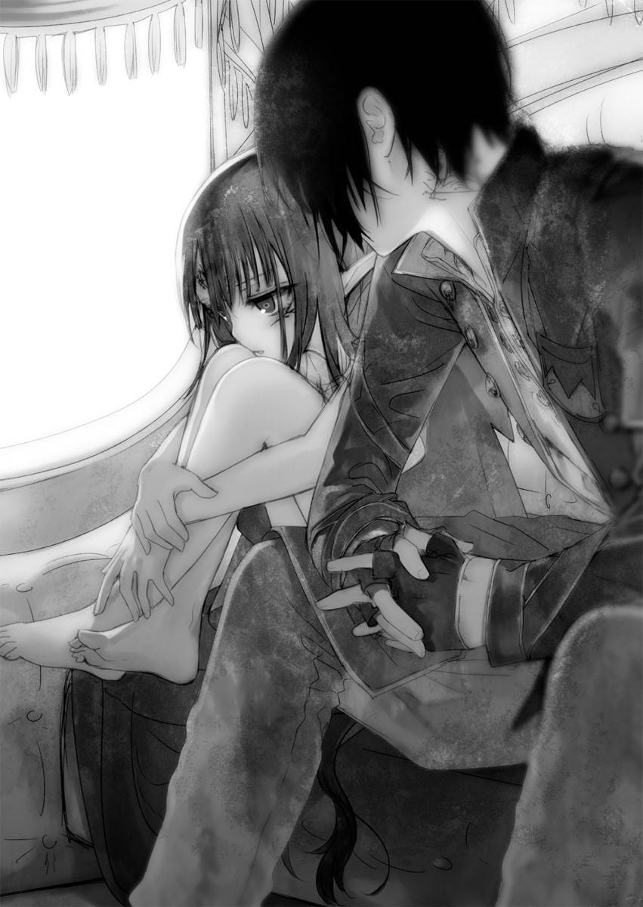
咄嗟に首の紋様に手を当てる。この『繫がり』から魔力だけでなく感情も流れ込んでいるのだとしたら、いまのリーパーの言葉の意味が少しわかる。
「だから、アタシの言っていることは、お兄ちゃんの言葉でもあるんだよ......」
それを最後に、リーパーは目線を外の風景に向け直す。先ほどまでの悟ったような表情は消え、年相応のものに戻る。
――リーパーの言葉は僕の言葉。
先ほどの言葉は彼女だけのものとは思えない。過去の僕の言葉が混ざっているのだと思うと、色々としっくりくるところがある。
はっきり言って、いまの僕に先ほどのリーパーのような強い信念はない。確かに噓や無秩序は嫌いだ。けれど、あそこまでの意思は持っていない。ならば、僕はどのような経緯を経て、そこまでの信念を得て、どういう理由があってそんな言葉を吐いたのだろうか。
『人の運命を弄ぶな』『噓を許すな』『自分の願いを間違えるな』――
西の村へ着くまで、その言葉を頭の中で繰り返し、考え続けた。
そうしているうちに時間は過ぎていき、馬車は西の村に辿りつく。
◆◆◆◆◆
半日ほどかけて辿りついた村は、想像してたよりも随分としっかりしていた。石造りよりも木造りの家が多く、放牧や農耕の様子から辺境の田舎っぽさは感じるが、広さだけならラウラヴィアの街と同じくらいはある。
僕たちは村で暮らす人たちに挨拶しながら、中心部にある大きな館に向かう。
依頼者である村長との顔合わせだったが、ここでもウォーカー家の侍従たちが大活躍する。交渉から契約まで、全ての作業を行ってもらい、遠くの地で依頼をやっている実感が湧く間もなく話は終わる。一応、パーティーリーダーとして立ち会いはしていたものの、口を挟めるような不備は一つもなかったので、本当に立っていただけだった。
すぐに討伐へ出発することが決まり、村長の館から出る。
館の近くでは、またローウェンが子供たちを相手に遊んでいた。村の人たちとの交渉の間、暇だったのだろう。剣技を子供たちに見せては「おぉー」という感嘆の声をもらっている。ローウェンは気分良く、次々と技を繰り返していく。
僕はそんなローウェンを置いて、貰った地図を地面に広げる。
近くで遊んでいたリーパーを引っ張ってきて、一緒に立地の確認を行うことにする。
「――魔法《ディメンション・多重展開》！」
「アタシも魔法《ディメンション》！」
次元魔法を扱う者がパーティーにいれば斥候は必要ない。そして、迷子とも無縁だ。
魔力を村全体――近くの山全体――そして、目的の廃城にまで浸透させ、その地形情報を収得していく。僕の隣のリーパーは「むむむぅ」と唸る。どうやら、リーパーの魔力では僕ほどの広範囲は探れないようだ。山の麓までといったところだろう。
それを見守りながら、さらに《ディメンション・多重展開》を広げ、廃城の構造を把握し、住み着いた竜を探す。枯れた巨大な庭が特徴的な城だ。以前にお邪魔したラウラヴィアの城の三倍の大きさはある。この城の持ち主は緑が好きだったのかもしれない。
そんなことを考えながら、さらに奥深くまで魔法を飛ばす。
竜はすぐに見つかった。堂々と玉座で眠り込んでいたのだ。
人間用の玉座を座り潰し、上座で丸まっている。周辺には村から略奪したのであろう作物が大量に転がっている。それ以外には何もない。
見栄えの悪い光景だ。おとぎ話ならば、色鮮やかな竜が金銀財宝を守っていることが多いが、こいつは光り物を一切持っていない。
黄土色の鱗に汚れきった身体。いまにも崩れそうな廃城を根城にし、財宝は皆無。周囲の根野菜たちが、その質素さに拍車をかけている。
【モンスター】ドラヴドラゴン：ランク26
どうやら、迷宮外のモンスターにも『注視』はできるようだ。
ランク26という情報に安心する。数値的に、三十層まで潜っている僕の敵ではない。
「くすんだ竜......、発見......」
「え、え？ お兄ちゃん。どこ、どこ？」
リーパーは僕の発見報告を聞いて、あたりをきょろきょろ見回しながら聞いてくる。
仕方なく、彼女の《ディメンション》を僕の魔力で手助けする。普通の魔法使い同士ならばできない芸当だが、僕たちならば可能だ。僕とリーパーは『繫がり』がある上に、魔力の属性と質が似ている。《ディメンション》の共有くらいは可能だ。
「リーパー、そっちじゃない。北北西の方に広げて......そうそう」
「お、こっちか。おぉー、なんかすごい城がある！ でかいトカゲも発見！」
リーパーの《ディメンション》を誘い、竜を確認させる。
僕とリーパーが確認したのを見て、スノウは意気揚々と出発を宣言する。
「ん、よし。あっちの方か。それじゃあ行こう。――ローウェン・アレイス!!」
ローウェンはスノウに呼ばれて、子供たちとの交流を止める。すぐに別れを告げると、最後に「頑張れ、ししょー」と見送られていた。どうやら、ローウェンはここの子供たちにも『師匠』と呼ばせたようだ。
こうして、僕たちは山の中に入っていく。
本来ならば大掛かりな準備が必要とされる竜討伐だが、僕たちは軽装も軽装だ。遠征に必要な道具は全て『持ち物』に入っているので、さくさくと進行する。
山道を歩きながら、討伐対象の情報を見直すため、スノウに話しかける
「このペースだと、本当に一日で終わりそうだな......。ドラヴドラゴン討伐......」
「ん、そういうのを探して選んだからね」
「しかし、こんな近場の竜が今日まで倒されていなかったのは不思議だな」
「不思議でもなんでもない。ドラヴドラゴンが討伐されなかったのは、むしろ当然」
「当然ってどういう意味だ......？」
「割りに合わない竜だから。強いくせに懸賞金がとにかく低い。だからずっと余ってた。他の典型的な欲深い竜と違って、とにかく欲がない。必要最低限の作物を奪う以外の悪行をしない。その奪う作物すらも本当に最低限。そのせいで、倒しても雀の涙ほどの報酬しか得られない。それでいて竜自体の強さは変わらないのだから、誰も倒そうとしない」
どうやら、残っているのにはそれなりの理由があるらしい。
国としては排除したいと思っているものの、その被害の少なさのせいで優先順位が低いようだ。それはつまり――
「――賢い竜だな」
「違う。小賢しいんだよ」
僕の竜への賞賛は、スノウの忌々しげな声で否定されていく。
「他の竜が死んじゃったから、誇りを捨てて引きこもってる。小賢しいやつ」
「えっと、昔は他に竜がいたのか......？」
「うん。開拓地には、他に三体いた。まあ、どれもグレン兄さんが殺したんだけど......」
最後、グレンさんの名前を出すとき、スノウは少しだけ目を泳がせた。
いま僕は、臨戦態勢に入っていたため、《ディメンション》を研ぎ澄ませていた。そのせいで、スノウが噓をついたとわかってしまう。
「その三体は危険度が高かったんだね」
「典型的な欲深い竜たちだった。村を焼き、街を襲い、人を食らい、財宝を奪う。すぐに目をつけられて、高額の賞金がついた。たくさんの賞金稼ぎや騎士を返り討ちにしたけど、それでも最後は無様に死んだ」
「人間対竜か......。おとぎ話みたいだ。どんなに強い竜でも、いつかは負けるんだな」
「......そうだね」
スノウは少しだけ悲しそうに頷き、静かになる。その身に流れる竜の血のせいで、死した竜に同情しているのだろうか。
「それで、このドラヴドラゴンとはどう戦う？ かなり強そうだけど......」
「真っ向勝負する。たぶん、それで一方的に終わる」
「いや、そうかもしれないけど......。もっと、こう作戦とか......」
「このパーティーは全員が前衛だから......。そうするのがベスト」
スノウも真っ向勝負をしたくてしているわけじゃないようだ。
僕はパーティーのアンバランスさに頭を痛める。
「そっか......。できれば魔法に特化した人が欲しいところ――」
「それは必要ない。私たちには私たちだけでいい」
しかし、その悩みはスノウにばっさりと否定される。
「え、どうして......？」
「えっと、そ、それは――」
スノウは困った様子で次の言葉を探す。勢いで邪魔者は要らないと遮ったものの、理由までは用意していなかったようだ。その反応に僕も困り果てる。
「スノウ......」
「ち、違うよ？ ごめん、そんなつもりじゃなかったんだ。......お、怒ってる？ 怒ってないよね？」
そして、僕が少し厳しい顔をしただけで、スノウは態度を豹変させる。その卑屈な姿は、グレンさんとよく似ている。血は繫がっていないが、兄妹であることがわかる。
「いや、そこまで怒ってない。怒ってないから、落ち着いて」
「よかった......。さっきの必要ないっていうのは『エピックシーカー』には優秀な魔法使いが十分いるからって意味だからね。そ、そうだ！ 次はテイリを呼ぼう？」
「そうだね。テイリさんがいれば戦いの幅が広がる......」
「うん、そうしよっ」
必死に言い繕うスノウに、僕は同意する。
その返事を聞いて、彼女は嬉しそうに笑って頷いた。僕と意見が合ったことが嬉しいようだ。......先ほどから、苦笑いが止まらない。時々見るこの媚びた態度が、スノウなりのアプローチであることはわかる。けれど、その態度こそ、最も僕が苦手としているものだ。
それをはっきりとスノウに伝えた方がいいのかを迷う。
しかし、強く言えば、また舞踏会の夜のようになるかもしれない。
スノウに関しては、問題を元から絶たないと解決しないだろう。貴族との婚約、ウォーカー家の責務、スノウの弱さ――いや、それ以前にあるであろう根本を......。
「はぁ......」
問題が上乗せされていくばかりの状況に溜息をついてしまう。
「カナミ......、どうかした？ 大丈夫？」
スノウは心配そうに寄り添ってくる。初めて出会ったときと真逆のその姿は、可憐で女の子らしい。しかし、その姿に違和感を覚えてしまう。
簡単に言ってしまえば、可愛らしいスノウはスノウらしくない。
いまのスノウは無理をしている。その笑顔が卑屈過ぎて見ていられない。
それが、いまの彼女を受け入れられない一番の理由なのかもしれない。
「大丈夫。それよりも、ドラヴドラゴン戦の作戦を詰めよう。真っ向勝負にも色々ある」
「ん、わかった。それじゃあ――」
スノウと作戦を煮詰めながら、僕は『並列思考』で違うことを考える。
どうすれば、スノウを元に戻せるか。
婚約問題さえ片付ければ、彼女の余裕は戻るだろう。
しかし、この世界の貴族の仕組みに疎い僕には難しい問題だ。思いつくのは僕が婚約者の振りをして時間を稼ぐくらいだ。それが本当に有効かどうかの判断すらもできない。そのまま、なし崩し的にスノウと結婚させられてしまう可能性だってある。
婚約者の振りは最終手段だ。僕はスノウと話しながら、もっと別の方法を考えていくが......結局、良い案を思いつくことなく、ドラヴドラゴンが待つ廃城に辿りついてしまう。
険しい山道だったが、僕たちに疲れはない。
僕たち四人の体力は普通ではないし、もっと厳しい迷宮に慣れているからだろう。リーパーに至っては、休むどころか興奮して周囲を飛び回っていた。
雰囲気のある廃城を前に、辛抱できないようだ。僕はリーパーの首根っこを摑み押さえて、城の敷地内に入っていく。少し歩くと、すぐに例の巨大庭園まで辿りついた。
色鮮やかな花々は一つもない。端から端まで緑色だ。ただ、色あせた深緑から明るい黄緑までの様々な緑が織り交ざった庭園には、独特の美しさがあった。
寂れているものの、不思議な統一感がある。
その生い茂る緑の世界を抜けて、城の入り口につく。その巨大な門は破壊されており、巨体の竜でも出入りできるようになっていた。
攻撃魔法に特化した魔法使いがいれば、この位置から《ディメンション》を使って攻撃できるのだが、今回は普通に入るしかない。最後に陣形の確認を行い、『持ち物』から取り出した各々の武器を装備する。ちなみに、今回はアリバーズさんの助言を活かし、スノウには大斧と丸太の二つを持たせている。
準備を整えた僕たちは警戒しつつ城内に侵入する。壊れた門をくぐり、カビと苔だらけの玄関を越え、大階段を上がり、玉座の間に入っていく。
――そして、ドラヴドラゴンと邂逅する。
僕たちが玉座の間に入ると同時に、ドラヴドラゴンは翼を広げた。僕たちが城内に侵入した時点でもう起きていたようだ。そのことから、鋭敏な感覚を持っていることがわかる。
まず僕は、その巨大な体軀に圧倒される。いままで様々なモンスターと戦ってきた僕だが、ここまで大きなモンスターは初めてだ。姿は西洋のおとぎ話に出てくる竜そのもので、翼の生えた巨大なトカゲだ。体長は十五メートルほどだが、その巨大な翼を広げることで数字以上の存在感がある。硬そうな黄土色の鱗に覆われ、身体のあちこちに古傷がある。数々の死線を乗り越えてきたことが、その外見から見て取れる。
威圧され足を止めてしまった僕たちに、ドラヴドラゴンは首を向けた。
巨大な頭だ。頭だけでも僕たち四人を丸呑みできそうなほど大きい。
爬虫類に似たドラヴドラゴンの目と僕の目が合う。そして、その竜の視線は少しずれて、なぜか隣のリーパーに向けられる。
僕とリーパー。この二つの存在に竜は強い興味を示していた。
ドラヴドラゴンは喉の奥を鳴らす。打楽器を連打したかのような音を鳴らしながら、僕とリーパーだけを見続ける。その姿に疑問を覚え、小さく声を漏らす。
「え......？」
敵意を感じない。それどころか、竜の双眸からは確かな知性が感じ取れる。
この竜は、僕とリーパーのことを――
「――カナミっ!!」
呆然と突っ立っている僕に、スノウの叱責が飛ぶ。
一番前にいたローウェンは、すでに腰の剣を抜いていた。慌てて僕は『クレセントペクトラズリの直剣』を握り直す。事前の計画だと、僕とローウェンが最初に突貫することになっていた。スノウとリーパーは、その後ろから不意打ちを狙う形だ。
ローウェンの戦意にドラヴドラゴンは表情を変える。理知的な双眸を獰猛なものに変えて、巨大な口を開けた。そして、万の体鳴楽器を鳴らしたかのような咆哮をあげた。
その咆哮に追い立てられ、僕は左前方に駆け出す。ローウェンは右前方だ。
敵は駆け出した僕たちに対し、その翼を大きく羽ばたかせることで風を起こした。
ただの風ではない。最上位のモンスターであるドラゴンが起こした風――『竜の風』だ。膨大な魔力が籠められた突風が、僕の全身に叩きつけられる。
凶悪な突風だ――しかし、僕にとって、風に魔力が加わっていることは隙でしかない。
「――魔法《次元の冬》！」
僕は突風に含まれた魔力をずらす。ドラヴドラゴンの魔力運用は雑に見えて、実のところ緻密だ。ただ羽ばたいただけでも、緻密な魔法術式が編みこまれ、発動している。
流石の竜の神秘だが、緻密であれば緻密であるほど、それをずらされたときの影響は大きい。僕を襲う『竜の風』は『ただの風』になり、身体の筋力だけで突風に耐えきることに成功する。ただ、反対側のローウェンは対応できず、大きく吹き飛ばされていた。やはり、魔法で攻撃されるとローウェンはどうしようもないようだ。
しかし、魔法が弱点といえども、ローウェンは『最強の剣士』だ。飛ばされながらも玉座の間の石柱や壁を蹴って、超人的な身体能力で後方に押し戻されるのを拒否しきる。
風を乗り切った僕とローウェンに、ドラヴドラゴンは爪を振るう。その殺人的な膂力の乗った爪を、僕たちはかわす。間髪いれずに、ドラヴドラゴンの尻尾が石柱を倒しながら振り払われる。――その狙いはローウェン。
ローウェンは高速で近づいてくる尻尾の上に一瞬だけ手を置き、フェンスを乗り越えるかのように跳び越える。
こうして顔合わせは終了し、僕たちの陣形は完成する。
ドラヴドラゴンから見て前方にスノウ。右側面に僕。左側面にローウェン。
そして、後方に――
「――背後、取ったぁ!!」
リーパーの大鎌が竜の背中を裂く。しかし、浅い。
ドラヴドラゴンの巨体に対して、武器の鎌が小さ過ぎたのだ。それでもダメージはダメージ。竜は怒りで喉を鳴らしながら、後ろを振り向く。
「ひひっ、振り向いたね！ なら、おまえは『影慕う死神』の獲物だ！――魔法《ディメンション・黒泡沫》！ 魔法《フォーム・深淵》！」
いつの間にか、リーパーも成長していたようだ。見たことのない次元魔法を使って、大鎌に黒い魔力をまとわりつかせた。解析したい欲求にとらわれるが、いまはボス戦中なので我慢する。
すぐにドラヴドラゴンは爪と尾を使ってリーパーに反撃したが、瞬間移動を繰り返す彼女を捕らえることはできない。そもそも、僕が《ディメンション》で確認している限り、リーパーは実体がない。直撃してもノーダメージだ。しかし、その特性をドラヴドラゴンが知るはずもなく、無駄な攻撃を繰り返す。
「――魔法杭《インパルスブレイク》」
ドラヴドラゴンの前と後ろが完全に入れ代わったのを確認して、今度はスノウが渾身の魔法を敵の背中に向けて打ち出した。
とはいえ、振動魔法を纏わせた丸太をぶん投げるだけの技だ。ドラヴドラゴンの緻密な魔法と比べると、かなり原始的と言える。しかし、原始的であるからこそ、確固とした力強さがある。スノウの馬鹿力で放たれた丸太は竜の巨体を揺るがすほどの威力があった。
体勢を崩したドラヴドラゴンの隙を突いて、続いて僕とローウェンが斬りかかる。
「――『魔力氷結化』」
「――『魔力物質化』」
巨体の敵に合わせて、剣の刃渡りを伸ばす。そして、その長剣でドラヴドラゴンの腕や脚を斬りつける。小回りの利かない竜は四方からの連携攻撃に対し、なす術がなかった。
続いて、止めと言わんばかりにリーパーがどす黒い魔力を纏わせた大鎌を振るう。その瞬間だけ、僕は《ディメンション》でリーパーを追うのをやめる。
ドラヴドラゴンの背中が裂かれる。傷は左の翼まで達しており、もう少しで翼が千切れ落ちそうなほどの深手だった。
「ガッ、ガァアアァアアアアアアア――!!!!」
絶叫と共に倒れこんでいくドラヴドラゴン。そして、蹲ったまま、浅い呼吸を繰り返すだけになる。致命傷を与えたと判断した僕たちは攻撃の手を緩める。
もちろん、臨戦態勢は解いたわけじゃない。ただ、相手の攻撃に合わせて、背後の者が隙を突いて攻撃する作戦だったので、手を出すタイミングがなくなったのだ。
誰も動かなくなり、玉座の間に静寂が満たされていく。
ドラヴドラゴンは浅い呼吸のまま、首を少しだけ動かし――その双眸を僕に向ける。
じっと僕だけを見つめ、喉の奥で微かに何かを吼えている。
この竜は僕に何かを伝えようとしている。そんな気がした。
しかし、僕には何もわからない。どれだけ技量と観察能力があろうと、この場で竜の言葉を理解するなんてできるはずがない。
それでも僕は、竜の意思を汲み取ろうと剣先を下ろして、一歩だけ近づく。
もし、この竜を殺さなくても、依頼を達成する道があるのならば――
「違う、カナミ。こんな雑種竜に差し伸べる手はない」
少し遠くに立つスノウの冷たい声が玉座の間に響いた。
その声はドラヴドラゴンへの宣告に聞こえた。その巨大な斧を振り上げて、いまにも止めを刺そうとしている。
「あ、待てっ、竜の首は私が頂く！『竜殺し』は私が――！」
ローウェンは竜の止め役を貰おうと、剣を持って前に出る。
そして、リーパーは――彼女だけは違った。僕と同じように武器を下ろして、神妙な顔でドラヴドラゴンを見つめていた。
......この差はなんだ？
それを知るために、もう少しだけ僕は竜とコミュニケーションを取りたかった。
しかし、全ては遅い。スノウとローウェンの攻撃がドラヴドラゴンに届く。
頭部に大斧が打ち込まれ、頭蓋が砕ける。首に剣が食い込み、大量の血が噴き出す。
これによって、ドラヴドラゴンは絶命――しなかった。
「え――？」
驚きの声をスノウはあげる。その恐ろしい生命力でドラヴドラゴンは、大斧が打ち込まれたまま、頭部を振り回してスノウを突き飛ばした。
「ぐぅっ！」
さらに、首が千切れそうになりながらも、翼を動かしてローウェンを吹き飛ばす。
「なっ!?」
スノウとローウェンはドラヴドラゴンの攻撃が直撃してしまい、容赦なく壁と床に打ち付けられた。余りに予期せぬ反撃に、二人は反応が遅れしまったようだ。
幸い、スノウは竜人だ。その頑丈な身体のおかげで、大事には至っていない。
しかし、ローウェンは違う。三十層のボスモンスターである彼だが、その身はほとんど生身の人間と変わらない。血反吐を吐いて蹲っている。
ドラヴドラゴンはダメージを負った二人を見比べて、追撃にローウェンを選んだ。
僕は咄嗟に走り出す。《次元の冬》に魔力を注ぎ込み、竜の動きを少しでも遅らせようとする。ドラヴドラゴンより先にローウェンのところへ行こうとして――しかし、間に合わない。絶望的に位置が悪かった。このままだとローウェンが――
「――お兄ちゃん、ローウェン！ アタシを見ないで!!」
そのとき、リーパーの叫びが耳に届く。
僕は彼女のやろうとしていることを理解し、次元魔法を解く。玉座の間に充満していた僕の魔力が失われ、リーパーの魔力だけになる。
そして、目すらもローウェンから逸らす。これから起きることは認識してはいけない。
認識さえされてなければ、リーパーの独壇場となる。
「頼むっ、リーパー!!」
「わかってる、お兄ちゃん!!」
リーパーの返事と共に、轟音が響く。
ドラヴドラゴンがローウェンの蹲っていたところへ体当たりしたのだとわかる。
一拍を置いて、僕は再度《ディメンション》を展開する。
玉座の間の隅でリーパーとローウェンが倒れているのを見つける。
リーパーは例の瞬間移動で近寄り、実体化している僅かな時間を使ってローウェンをなんとか助けることができたようだ。
「リーパー、後は任せろ！――魔法《次元の冬》!!」
僕はローウェンから目を逸らしている間も、ずっとドラヴドラゴンを目指して駆けていた。向こうも僕の接近に気づき、迎撃しようとこちらに身体を向ける。
他三人の援護は期待できない。一対一で打ち勝つしかない。
『魔力氷結化』で伸ばした剣を横に構えて突っ込む。
ドラヴドラゴンはその身を震わせて、身体の底から魔力を搾り出す。そして、命を削るように息を吸い込み、その口から燃え盛る炎を吐き出した。
「――魔法《フリーズ》！」
冷気の障壁を張って、炎の中を突き進む。
この程度の炎ならば平気だ。炎に耐性を持つ『レッドタリスマン』を僕は身につけている。何より、もっともっと恐ろしい炎を僕は知っている。
肌を焦がし炎をくぐり抜けた先には、ドラヴドラゴンの巨大な爪が待ち構えていた。
その攻撃を剣で受け止める。もちろん、ただ受け止めれば吹き飛ばされるだけだ。これに耐えられるのは馬鹿力のスノウだけだろう。
『魔力氷結化』を使って剣の形を変える。盾のように表面積を広げ、その氷の上を滑らせる。ローウェンの『魔力物質化』ではできない、『魔力氷結化』ならではの芸当だ。
氷が削られ、白い火花が散った。
そして、ドラヴドラゴンの懐に潜り込むことに成功し、再度剣を伸ばす。
その剣の振るう先は首だ。ローウェンの一撃によって、あと一息で完全に切断できそうなのだ。狙うならそこしかない。
ドラヴドラゴンの爪を跳び避け、その腕の上に乗る。これで高さは稼げた。あとはこの剣先を、いまにも千切れそうな首へ伸ばすだけ――！
その僕の狙いを感じ取り、ドラヴドラゴンは翼を羽ばたかせる。魔力の籠もった強風と共に竜は低く飛翔する。玉座の間を飛行することで、僕を振り落とそうとしたのだ。
しかし、それは予想していた反撃の中でも、容易に対応できる反撃だった。先ほどドラヴドラゴンは風を扱うのに魔力を使っていた。予想通り、飛行するのにも魔法を使っている。この巨体に作用するほどだ。かなり高位の魔法なのは間違いない。
その飛行の魔法を《次元の冬》がずらし崩し、ドラヴドラゴンは体勢を崩す。
十分すぎる隙だった。僕は跳躍しつつ剣を『魔力氷結化』で限界まで伸ばし、今度は躊躇なくドラヴドラゴンの首を斬り落とす。
ローウェンが作った傷口を狙うことで、剣は竜の肉を斬り裂くことができた。
宙でドラヴドラゴンの頭部と胴体が離れる。
血の雨が降り、王のいない玉座の間が鮮血に染まっていく。
続いて、ドラヴドラゴンの巨体が地面に落ち、轟音が鳴り響く。
僕は着地と共に、入念に敵の生死を確かめる。
完全に絶命していた。生気も魔力も感じない。しかし、ドラヴドラゴンは光となって消え去りはしない。光となって消えるのは迷宮だけの現象だから当然だ。そういう魔法術式が迷宮には組み込まれているらしい。
僕はモンスターの死体をまじまじと見るのは初めてだった。
確かな死の気配。生が潰えた証拠がそこにある。敵がいなくなったのを確認し、仲間たちの安否へ意識を向ける。まず、スノウが心配そうにこちらへ歩いてきていた。
「カナミ、大丈夫!?」
「ああ、大丈夫。無傷だよ」
「流石カナミ......。ドラゴンが相手でも無傷」
スノウは蕩けた目を僕に向ける。まるで『英雄』を見るかのような目だ。できればそんな目で見るのはやめて欲しいが、いまの僕にはそれよりも彼女に言いたいことがあった。
「......なあ、スノウ。もしかして、スノウはあの竜と意思疎通できたのか？」
勘違いでなければ、スノウの言葉を聞いて竜が怒ったように見えた。
「......え？ う、ううん。そんなことできないよ」
「そう......」
それが噓であるかどうかを確認するため、《ディメンション》を強めようとして思いとどまる。仲間に対してすることではないし、それを確認したからといって何かが変わるわけでもない。――もう、あの竜は死んだ。
スノウとの会話を終えて、リーパーとローウェンの状態を確認する。
リーパーは玉座の間の端でローウェンの無事を喜んでいるところだった。
「よかった......、ローウェン......」
しかし――彼女の右足の膝から先がなくなっていた。それをローウェンは青ざめた目で見て、震える。
「リ、リーパー......。そこまでして、なんで私を......」
「なんで？......ローウェンが教えてくれたんだよ。自分で決めろって。だから、アタシは決めてたんだ。これからは、何があってもローウェンを助けるって」
「私を、助ける......？」
「『ローウェンを殺す』なんて使命は無視だよ、無視っ！ アタシの使命は『ローウェンを助ける』って、アタシが決めたの！ だから言葉通り、命を使っても助けるよっ。ローウェンはアタシの大事な遊び友達だからね！」
「リーパー......」
リーパーは笑っていた。
僕は彼女と繫がっているため、その状態をぼんやりとだが理解している。
リーパーは魔法だが、人間の少女をベースに作られている。人間を忠実に再現しているため、痛覚だって僕たちと一緒だ。つまり、彼女は足をもがれた痛みに耐えながら、ローウェンのために笑っている。見ていられず、僕は叫びながら二人に近寄る。
「リーパー、大丈夫か！ 魔力で足を元に戻せるか!?」
「大丈夫。あと少しすれば元に戻るよ。お兄ちゃんが一杯魔力くれてるから楽だね」
「そうか......。遠慮せずに僕の魔力を使っていいからな......」
命に別状はないとわかり安心したものの、『繫がり』から僕に伝わる痛みはかなりものだ。その横でローウェンはふらつきながらリーパーに手を伸ばす。
しかし、その手はリーパーの身体に触れることができない。
「くっ、情けない......。この身が弱っているとはいえ、なんて、情けない......っ！」
すり抜けた手を地面に突いて、ローウェンは苦々しく呟く。
確かに先の醜態はローウェンらしくない。対人戦闘に特化している守護者とはいえ、あの程度の竜の不意打ちに反応できなかったのはおかしい。
僕と稽古していたときは、未来予知に近い先読み能力を持っていた。
ここ数日の度重なる未練解消によって、思った以上にローウェンは弱くなっていたのかもしれない。今朝の自分の甘い判断を後悔しながら、リーパーたちを魔力と『持ち物』のアイテムで回復させていく。その途中、気づく。呟き続けるローウェンの異変に――
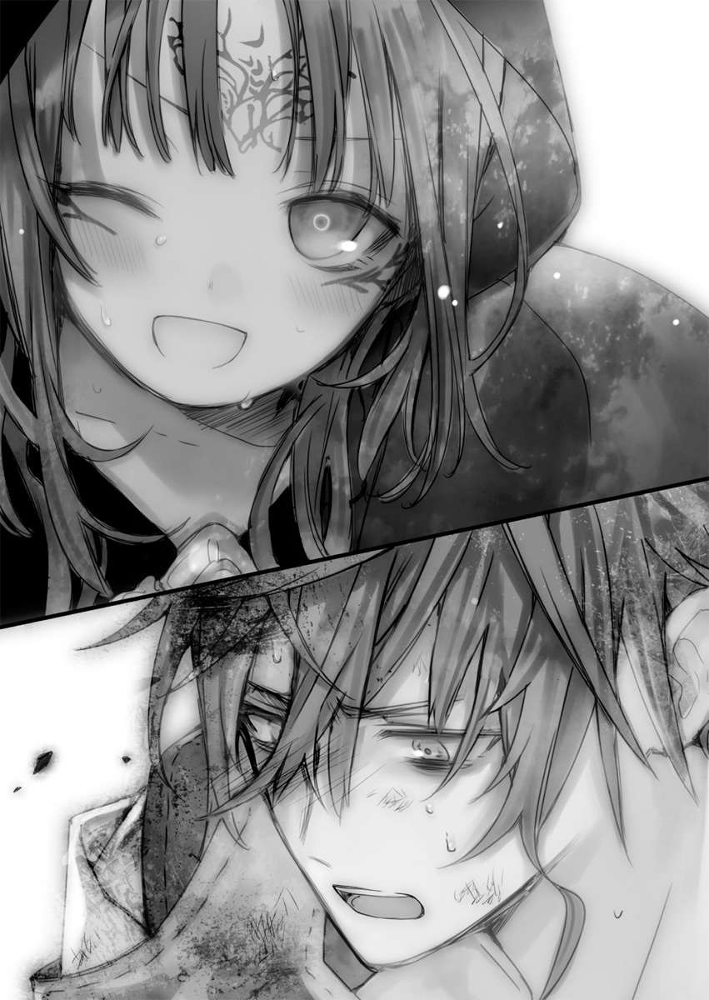
「あと少しで死ぬところだった......！ 死ねば『モンスター化』して、みんなをっ、みんなを......!!」
ローウェンは地面に突いた拳に力をこめる。
石造の地面に亀裂が入り、その身体から異常な魔力が湧き始める。
恐ろしい重圧だ。敵でないとわかっているのに、冷や汗が流れてくる。
衰弱していたローウェンの力が、徐々に戻ってきているのだ。
つまり、いまローウェンは『未練』になるほど悔やんでいる――
「ロ、ローウェン。そんなに気に病まなくていい。こういうこともある」
「いや、致命的な失態だ！ 私の『モンスター化』は、私だけの問題じゃないんだ！『モンスター化』したては理性がなくなるっ。モンスターそのものになると言っていい。こんなところで『モンスター化』してしまえば、もっと恐ろしいことになっていた！」
自分の失態をローウェンは責め続ける。何度か地面を叩いたあと、両手で顔を覆う。
そんなローウェンの姿を、リーパーは優しく受け入れる。
「もう、ローウェンは心配し過ぎだよ......。もしローウェンが『モンスター化』しても、アタシたちなら止められるよ。友達なんだから、そのくらい信用してよ」
「リーパー......」
その言葉を受けて、ローウェンは口を結んで黙り込む。
リーパーのためにも、これ以上の弱音は吐かないと決めたようだ。
そして、玉座の間に静寂が訪れ、全員一緒に城から出ていく。
僕たちは竜討伐の依頼を果たした。強敵を倒し、みんな無事だ。
しかし、仲間の二人に――ローウェンとスノウに言い表せない不安を感じる。
ローウェンは守護者の力を強め、スノウは朝以上に拙い笑顔を作っている。
その不安を抱えたまま、僕たちは村へ帰っていくしかなかった。
◆◆◆◆◆
討伐の証拠にするため、ドラヴドラゴンの頭部をスノウと僕の二人で担いで下山した。大き過ぎたせいか、僕の『持ち物』に入らなかったのだ。
正直、ドラヴドラゴンとの戦闘よりも下山の方が疲れた。そして、下山した僕たちが村の中心部にドラヴドラゴンの頭部を置くと、次々と村の人たちが集まってくる。大きな口を開けて驚き、口々に喜びの声をあげ出す。中には踊り出す人までいたので、この竜がいかに村を苦しめていたかわかる。
村の人たちは感謝の言葉を絶え間なく贈りながら僕たちを囲んだ。
老若男女の村人が涙を目に浮かべて、賞賛し続ける。その賞賛の声は何重にも重ねられていき、村中へ響き渡っていく。その中心に立つ僕たちは、その熱に圧倒された。
「こ、これが『英雄』の扱いか......」
「ん、カナミは『エピックシーカー』の『英雄』。よーし――」
そして、スノウはここぞとばかりに宣伝を始める。
「あなたたちの村を荒らすドラヴドラゴンは、我らが『エピックシーカー』のギルドマスターアイカワ・カナミが討ち取ってくれた！ 彼こそが『竜殺し』の『英雄』だ！ 我らが『英雄』に労いの喝采を頼む!!」
スノウは竜人の肺活量を活かして、全員に聞こえるように叫ぶ。
それを聞いた村人たちは、さらに盛り上がり、口々に僕の名を讃え始める。
「あの方が『エピックシーカー』のギルドマスターか！」
「カナミ！ アイカワ・カナミ!!」
「あの若さで『竜殺し』とは！ まさに『英雄』だ!!」
その熱量の高さに、眩暈がした。
舞踏会で貴族や商人を相手にしたときと似たものを感じる。裏であくどい計算がされていないとはいえ、過度な期待と賞賛を前に緊張してしまう。そして、いまそれを誘発したのが、あれだけ舞踏会を嫌がっていたスノウだということに眩暈は加速する。
僕は愛想笑いをしながら、村人たちに手を振る。どうやら、根っからこういったことに向いていないようだ。逃げるように、村の責任者のところへ竜討伐の報告に向かう。
その途中、僕は小声でスノウを非難する。
「――スノウっ、あんな宣伝はいらない。『竜殺し』も、ローウェンがもらってくれて良かったのに......」
その声に、すぐにスノウとローウェンは答える。
「それは駄目、カナミ。いまのは必要なことだよ。村人たちも喜んでたでしょ？」
「あの竜の首を落としたのはカナミだ。私なんて失態を犯し、リーパーに迷惑をかけただけだ。残念ながら、『竜殺し』はカナミのものだ」
二人とも、どうしても僕を『竜殺し』にしたいようだ。僕は溜息をつきながら歩くしかなかった。その後ろでスノウとローウェンは話を続ける。
「カナミ、もっと『英雄』らしくして。きっと、それが皆のためになるから......！」
「文句なく、今回の『栄光』はカナミのものだ......。だが、次こそは私が『栄光』を手に入れてみせる......！」
息巻く二人を理解しきれない僕は、何も言わず村長の館に入っていく。
そこにはウォーカー家の人たちがずらりと並んでいた。僕たちが現れたことで、事の成果を察したのか、すぐに依頼の精算を始めてくれる。
相変わらず手際がいい。そのおかげで、また僕は立っているだけになる。
そして、討伐の確認作業と報酬の受け渡しが終わったあと、村長から宴を催すことを伝えられる。よければ参加して欲しいと言われる。ゲームならばよくある展開だと思ったが、僕は参加する意味はないと判断して遠慮しようとする。しかし、僕以外の三人が強く参加を希望してしまい、断りきれなくなる。
急遽、村は宴の準備に取り掛かり始め、慌ただしくなる。スノウはスピーチを考えると言って馬車にこもり、ローウェンとリーパーは子供たちのところへ遊びに行った。
置いてけぼりになった僕は、一人で近くの平原を歩く。単純に村人から質問攻めに合いたくなかったのもあるが、昨日の『舞踏会』と今日の『竜討伐』について一人で考えたかったのだ。
――そして、時は過ぎ、夜を迎え、宴が始まる。
開拓地の西の果てにある村が、篝火で宵闇に輝き始める。村の高台にドラヴドラゴンの首が掲げられ、その周囲では様々な楽器をもった人たちが陽気な音楽を演奏し始める。その音楽に合わせて人々は歌い、踊り出す。
大量の料理がテーブルに並べられていた。どうやら、それをビュッフェ形式で自由に食べていいようだ。みんながみんな、酒や肉を食らって陽気に笑っていた。
少ない時間で準備された宴だが、想像以上に本格的だ。元々、こういった宴を定期的に催す習慣が村にあったのかもしれない。
その宴の一席で僕は、多くの人に囲まれて愛想笑いを浮かべていた。
村人の一人が、目を輝かせて話かけてくる。
「――カナミ様！ どのように竜を倒したのか教えてくださいませんか!?」
それに合わせて、他の人たちも口々に僕の武勇伝を聞こうとしてくる。
むず痒いことこの上なかった。下手をすれば、舞踏会のときよりも胃が痛い。
遠くで吟遊詩人のように竜討伐を誇張して演説しているスノウが憎くてたまらない。あれを真に受けた人が、流れるようにこっちへやってくるのだ。手の込んだ嫌がらせだ。
「いえ、僕は皆が弱らせたところを、剣で止めを刺しただけですので......」
正直に答えていく。だが、スノウの大仰な話を聞いた人たちはそれを信じてくれない。
「ご謙遜を、カナミ様。一対一で空を舞う竜の首を斬ったと聞きましたよ」
本気で厄介だ。僕は愛想笑いを浮かべながら、仕方がなく何度も説明を繰り返す。
ただ、四人全員の勝利であることを主張すればするほど、謙虚で誠実な『英雄』として見られてしまうだけだった。そういう風にスノウが誘導しているのは明らかだ。いっそのこと、いまからでも傍若無人なキャラクターを装って、全てを台無しにしたい。
しかし、それはギルドマスターとしてできない。目の前の女性の期待を裏切ってしまうし、周囲には子供だっている。子供たちは僕を『英雄』だと思い、目を輝かせているのだ。
僕は《ディメンション》で自分の表情を客観的に見る。
......疲れた顔をしていた。
舞踏会のときと同じ顔。あの日のグレンさんに近い顔。
もしかしたら、グレンさんもいまの僕と似たようなことを考えていたのかもしれない。
その感情を悟られぬように、僕は話を続ける。その最中、少し遠くにローウェンを見つける。僕と同じように、村の人たちに囲まれていた。
ただ、僕と比べると随分と顔色はいい。
なので、申し訳ないと思いながらも、僕はローウェンの話を持ち出す。
「――あそこにいるローウェンは僕の剣の師匠なんですよ。僕がモンスターと戦えたのは彼の教えがあってこそ。剣の話ならば、彼に聞いた方が面白いですよ？」
今日一番の笑顔でローウェンの存在を推すと、人々の興味がローウェンに向けられた。続いて、僕は噓をつく。
「すみません。少しの間、失礼しますね。村長さんの方に挨拶しないといけないので」
周囲の人たちが不自然さに気づく前に、急いで包囲網から抜け出す。
しかし、どこを歩けど人々の目は絶えず僕に向けられている。このままでは、また囲まれてしまうのは火を見るよりも明らかだった。
「――魔法《ディメンション・決戦演算》」
なので僕は魔法を使って、この場の視線から逃げ出しにいく。人々の目の動きを捉え、常に逆へ歩き続ける。そして、周囲の全ての視線の裏をかいた瞬間、音もなく跳躍する。
誰にも気づかれず、館の屋根上への移動に成功した。そして、《ディメンション》を切ろうとして――その前に、同じように屋根上にいるリーパーを見つける。
気になって、屋根上を飛び移って近づく。
「......どうした、リーパー？ まだ苦しいのか？」
ぼーっと星空を見つめていた。余りにも大人しかったので、具合が悪いのかと心配する。
「......ううん、違うよ。ちょっと考え込んでただけ」
唐突に現れた僕に対し、リーパーは動じることなく答えた。彼女も《ディメンション》で僕を捉えていたのかもしれない。
「せっかくのお祭りだ。下で遊ばないのか？」
いつものリーパーならば、うるさいくらい騒いでいるだろう。静かに空を見つめるのは彼女らしくないと思った。
「大丈夫、見てるだけで楽しいよ。それで、何？ お兄ちゃん」
リーパーは微笑みながら、用件を聞いてくる。しかし、なんとなく心配になって話しかけただけで用なんてない。僕は話題を探し、ぐるりと頭の中をひっくり返す。
昨日から、ずっと考えていたことがある。気になってるものがある。
まず、僕自身のこと。そして、スノウ、ローウェン、リーパー、みんなのこと――
その果てに、出てきた言葉は――
「なあ、リーパーは『英雄』ってどう思う？ いいものだって思うか？ 誰もを『幸せ』にできるような......そんな都合のいい存在だって思えるか？」
それはあやふやで遠まわしだったが、現状の核心を突いた問いだと我ながら思った。
「......え、『英雄』？ いきなりだねー。......うーん、そうだなー。アタシはそんなにいいものとは思ってないかなー」
そのリーパーの答えを聞き、僕は顔を明るくする。
「そうだよな......。英雄なんて、決していいものじゃない。よかった、リーパーがそう言ってくれて。ちょっとスノウとローウェンについていけなくて不安だったんだ......」
スノウとローウェンは『英雄』という存在を盲信しているように感じる。
『英雄』を必死に得ようとする二人に、僕は全く共感できていなかったのだ。
「そうだね。スノウお姉ちゃんとローウェンはちょっと変だね」
「だろ？」
共感できる相手を見つけ、心が休まるのを感じる。名声を追いかけ続ける二人に付き合っていると、少し疲れる。しかし、リーパーはそういったものを盲信していない。
価値観が僕と似通っているのだ。
そう思い、さらに話を続けようとして――リーパーの冷静な一声に遮られる。
「でもアタシから見ると、お兄ちゃんも同じだよ？」
「え......？ 僕が同じ......？」
僕もスノウとローウェン側であると、リーパーは言った。
理解し合えると思っていた僕の熱が冷めていく。
「ローウェンは『アレイス家に与えられた使命』に囚われてて、スノウお姉ちゃんは『ウォーカー家に与えられた使命』に囚われてる。そして、お兄ちゃんも『誰かに与えられた使命』に囚われてる。その中でお兄ちゃんは『英雄』が必須じゃないから、ちょっと疎外感があるのかな？......私から見ると、みんなやっていることは同じだと思う」
正直、すぐに理解できなかった。そのリーパーの言葉の意味を反芻することで、それが本質を見抜いた思慮深い言葉であることを理解し、その慧眼に驚く。
最近、リーパーは一歩下がって一人で考え込んでいることが多かった。しかし、後ろで僕たちを見ながら、そんなことを考えていたとは思いもしなかった。
「『誰かに与えられた使命』ってどういうことだ......？」
意味深に、繰り返し『与えられた使命』という言葉を使った。その深い意味を知りたくて、言葉を繰り返す。
もしかしたら、リーパーならばいまの僕の悩みを、全てを解決してくれるかもしれない。
そんな僕の意を、リーパーは――汲んでくれなかった。
「アタシは、『誰かに与えられた使命』に抗うからね。お兄ちゃん」
リーパーは誰も見ていなかった。ただ、空だけを見つめて、自分のことを話す。
どこか苦しそうに自分のことだけを話し続ける。
「絶対に『自分の願いは間違えない』から――」
その表情に余裕なんてなかった。その様子からリーパーは自身のことだけで一杯一杯であることがわかる。先の言葉は、自分自身の答えを探し続けた副産物なのかもしれない。
ずっと......、リーパーは自身の問題と向き合っているのだ......。僕と違って......。
僕はリーパーに頼ろうとしていた自分を情けなく感じた。彼女は一人で悩み、一人で戦っていたというのに、僕は自身の悩みの答えを他者に求めようとしていた。
いま、リーパーは魔法である自分の性に苦しんでいる。それでも、自分の生きる意味を自分で決めて、それを守り続けようと頑張っている。
僕は考え直し、リーパーの助けになろうと一歩近づく。
「なあ、リーパー。その『殺人衝動』ってやつが苦しいなら僕が――」
「いいよ、お兄ちゃん。これはアタシの問題。アタシがなんとかするから」
言い終わる前に、リーパーは断わる。
その表情は、複雑に織り交ざった様々な感情を孕んでいた。
助けは欲しいけど、それを欲するわけにはいかない。答えは欲しいけど、その答えを僕から聞いてはいけない。救われたいけど、救われてはいけない。――そんな多くの相反するものを含んだ表情だった。
リーパーから見れば、僕は『自分の願いを間違えている』ように見えていて、他人よりもまず自分のことをなんとかしろと思われているかもしれない。単純にずっと『間違えている僕』を信用できないというのもあるだろう。
「......わかった」
歯嚙みしながら頷く。そのまま視線を少しだけずらして、『腕輪』に目を向ける。
ずっと逃げ続けてきた問題だ。全ての原因は、これであると確信していながら考えないようにしてきた。時間はあるのだから、ゆっくりと確認していけばいいなんて考えていた。現状維持が一番だなんて言って、後回しにしてきた。
目の前の幼い少女は苦しみながらも自分自身の問題と向き合っているというのに、僕は向き合おうとすらしていなかった。
リーパーの言葉を思い出す。
『人の運命を弄ぶな』『噓を許すな』『自分の願いを間違えるな』。
それは自分の言葉のように、僕の心に染み込んでいく。
いまの僕自身のどんな言葉よりも、僕らしい言葉だと思った。その感覚は、ある推測を裏付ける。頭の隅で考え続けていた推測が現実味を帯び始め、その原因と根本について考えないといけなくなる。
いつの間にか、僕はリーパーの隣に座って熟考していた。
自然と視線が下に落ち、村の宴に向けられる。『並列思考』の隙間で、宴に参加するローウェンを捉える。その状況を見て、僕は言葉を零す。
「あっ。あそこ......。ここへ着いたとき、ローウェンが剣を教えてた子供たちが......」
ローウェンは多くの人に囲まれていた。
そのさらに遠巻きに、子供たちが困った様子でいた。
「うん、いるね」
リーパーは上の空な様子で答えた。彼女も僕と同様に、自分のことを熟考しているのだろう。それでも僕は、言葉を零し続けた。確認するように――
「ローウェンが色んな人に囲まれて、辿りつけなくなってる......」
「そうだね」
大人たちに囲まれているため、子供たちはローウェンと話したくても話せない状況になっていた。
「ローウェンからは子供たちが見えないのかな......？」
「立ち位置が悪いのかもね......」
その光景が全ての答えのような気がした。
そして、気づく。いや、気づいたんじゃない。リーパーが僕に教えてくれた――いや、それすらも違うのかもしれない。推測が正しいのならば、教えてくれたのは僕自身。
隣のリーパーの表情を盗み見る。
......苦しそうだ。
しかし、それは僕の表情でもあるのだ。リーパーが僕の本当の感情を、僕に伝えてくれている。だから、僕はリーパーに倣う。
「リーパー、決めたよ......。僕も『自分の願いは間違えない』ようにする......」
それを聞いたリーパーはゆっくりと頷いた。少しだけ嬉しそうに。
――やっと決められた......。
僕は僕の問題を直視する。もう後回しにはできない。してはいけなかった。だって、その問題の解決法も、取るべき行動も、自分の答えも、もうすでにわかっていたのだから。
おそらく、最初からわかっていた。あの日の朝、『エピックシーカー』で目を覚ましたときから、ずっと身体中の全細胞が叫んでいた。けれど、それを僕は無視していた。気づかない振りをしていた。
――そこはとても居心地が良かったから。とても『幸せ』だったから。
『マリアという妹』がそこにいるという状況が、僕を繫ぎ止めていた。
その非の打ち所のない時間が、疑うことを放棄させていた。
――それが一番楽だったから。その先に『栄光』まで約束されていたから。
しかし、それはまやかしだ。
スノウを見て、ローウェンを見て、それが大事なものではないと気づいた。
リーパーを見て、本当に大事なものにも気づいた。
今日までの全てが、僕の自由を奪う鎖だった。その鎖をかけたのはパリンクロン・レガシィ。おそらく、あいつは僕の命の恩人じゃない。それどころか......『敵』だ。
――気づいていた。けど、その鎖が壊れるのが怖かった。
『噓では誰も救われない』ってわかっていながら、その『真実』に手を伸ばせなかった。
レイルさんの話によると、僕の過去の記憶は『不幸』らしい。マリアが身体の一部を失ったことに匹敵するほどの『不幸』が僕にあるらしい。
いや、らしいじゃない。聞いたときから、その『不幸』の正体はわかっていたんだ。
記憶を奪われたどころじゃないのだろう。妹の名前が違うどころじゃないのだろう。
――ああ、これで、みんなの『幸せ』な時間が終わる。
僕の優先順位は『自分の命』よりも『妹の幸せ』の方が上だ。それを含めて考えてみれば、『不幸』の答えは一つしかない。たった一つ。
――僕の妹は異世界にいない。
それが答え。
それ以外にないはずだ......。マリアという名前の女の子は僕の妹じゃない......。
「うっ......」
ずっと目を背けていた答えと向き合い、酷い吐き気に僕は襲われる。
胃が裏返り、心臓が喉から這い出そうになる。
もし、この答えが真実ならば、僕はこんなことをしている場合じゃない。ギルドマスターなんてしている場合じゃない。いますぐにでも妹を助けに行かないといけない。
帰らないといけない。命を使っても、妹だけは幸せにしないといけない。
いま、『真実』を取り戻さないといけないという決意は確かなものとなった。
しかし、代わりに激しい悪寒がする。上と下が入れ代わるような眩暈がする。
命よりも大切なものが手の届かないところにあるという事実が、ただただ苦しい。
けれど、その苦しみから逃げるわけにはいかない。
隣に座るリーパーだって同じなのだ。彼女も命よりも大切なものを勝手に決められ、自分が決めた大切なものに手を伸ばそうとして苦しんでいる。
僕よりも幼いリーパーが逃げていないのに、僕が逃げるわけにはいかない。
「お兄ちゃん......？」
そのとき、隣のリーパーが僕の異変に気づいて、目を向けてきた。
未だ苦しさは変わらない......けど、彼女と同じように心配は要らないと笑ってみせる。
ただ、もう僕はリーパーのことを考えている余裕はなくなった。他のことにかまけている余裕なんてない。きっと、それはリーパーも同じだろう。当然だ。自分のことに全力であれば、他人の意を汲める余裕など、そうそうあるはずない。
先ほどまでの自分の浅はかさを笑いながら、熱で脳が溶けるほど必死に思考し始める。
早く解決することは、みんなのためにもなる。早く終わらせれば、僕はリーパーを助けてあげられるようにもなるだろう。
スノウもローウェンも、本当の意味で助けてあげられるはずだ。
僕はリーパーと一緒に、宴と夜空を眺め続ける。
主賓が消えたことで下の宴が慌ただしくなっていたが、全てを放置して僕たちは屋根上で考え続けた。リーパーと二人で、ずっと――
宴の夜を終え、翌日の朝――僕たちは《コネクション》を使って連合国へと戻る。
とうとう『舞闘大会』の前日だ。『竜討伐』の事後処理が色々とあったが、僕は大事な用があると言って、一人で『エピックシーカー』を抜け出した。誰も居ない郊外の空き地に移動して、昨日決めたことを実行する。
「壊せるか......？」
『持ち物』から『クレセントペクトラズリの直剣』を取り出して、『腕輪』に刃を押し当てる。この剣はあのクリスタルゴーレムさえも斬り裂いた代物だ。『腕輪』にどんな鉱物が使われていようと、壊すことは可能なはずだ。
『腕輪』に当てた剣へ力をこめて、一気に切り抜こうとする。
――しかし、剣が『腕輪』を傷つけることはなかった。
『クレセントペクトラズリの直剣』の切れ味が『腕輪』の硬度に負けているわけではない。
単純に、剣を扱う僕が『腕輪』を斬ろうとする直前に力を抜いたのだ。
意思と関係なく、身体が勝手に力を抜いていた。舌打ちをしながら、再度力をこめ直す。
「――っ!!」
しかし、『腕輪』は傷一つつかない。
何度繰り返しても同じだった。呪われたように、『腕輪』は無傷でそこに在りつづける。
それどころか、無理に壊そうとすることで体調が悪くなっていくのを感じる。
抗おうとする力を奪うように、吐き気と倦怠感が襲ってくる。
まるで『呪い』のように......。
「くっ、やっぱりか......」
推測していたことだが、ショックは大きい。
つい最近まで、『腕輪』なんて壊そうと思えばいつでも壊せると楽観していた。しかし、現実は逆だ。断固たる決意をもってしても、傷一つつけれらない。
「......仕方ない。次だ」
気持ちを切り替えて、次の行動へと移る。
昨晩の熟考のおかげで、このケースの覚悟はできていた。早足で『エピックシーカー』に戻り、誰にも気づかれず執務室の《コネクション》から迷宮の中に入っていく。
十一層へ移動して、モンスターを探す。
それなりの攻撃力があれば、どいつでもいい。焦燥感に突き動かされて歩き回る。
そして、ゴリラの姿に似た扱いやすそうなモンスターを見つけ、徒手空拳で近づいていく。獲物を見つけたモンスターは咆哮と共に、僕に襲い掛かってきた。
「――魔法《ディメンション・決戦演算》」
空間全てを把握し、強い意志を持ってその場に留まり、モンスターの豪腕に対して『腕輪』で防御しようとして――次の瞬間、モンスターは真っ二つに斬り裂かれていた。
光となって消えていくモンスターを見届けながら、冷や汗を垂らす。
いつの間にか、手には剣が握られていた。
わかってる。《ディメンション》で把握できている。その過程を記憶できている。
僕が『腕輪』で防御する直前――正体不明の感情に襲われ、『持ち物』から剣を抜くと同時に敵を斬った。それだけの話だ。
「モンスターに壊させることもできないのか......？」
直面した事実に震えながら、いま感じた正体不明の感情を分析する。あの瞬間、僕は恐怖を感じていた。とても大切なものを失う恐怖だ。
恐怖が僕を突き動かし、『腕輪』を壊そうとする敵を無意識の内に屠った。
それはわかる。わかるが、その感情が生まれる理由が不明すぎる。
これでは、この『腕輪』を、まるで僕は妹と同じように大事にしているみたいだ。
こんな厄介な『腕輪』が妹と並ぶ存在なわけがない。それだけは断言できる。
つまり、これは自分の意思とは関係なく、自分の感情を弄ばれているということの証明だった。分析を終えると同時に、淀んだ感情が沸き起こる。
それは自分自身が別の誰かによって弄ばれていることに対する怒りだ。
リーパーの言葉の一つを思い出す。
――『人の運命を弄ぶな』。
本当の意味でその言葉を理解できた。叫び続けていた全細胞と、ようやくわかり合う。
怒りのままに握りこぶしを作り、手のひらから血を垂らす。そして、その握りこぶしで『腕輪』を殴ろうとして――逸れる。拳は腕の肘あたりに当たり、痛みを全身に伝える。
「くそっ......！ もう一度だ。今度はもっと......！」
僕は決意を固め直す。
今度は何があっても動かない。そう決めて、新たなモンスターを探す。
そして、同じモンスターを数匹ほど見つけ、囲まれるように身をさらけ出す。
「来い！」
ゴリラに似たモンスターたちの豪腕が四方から襲い掛かる。
その全てを生身で受けると心に決め、攻撃の一つに『腕輪』を合わせようと試みる。
その場を動かない僕にモンスターの豪腕は直撃していく。直撃して、直撃して、直撃して――しかし、『腕輪』にだけは絶対に直撃しない。
そこだけは身体が勝手に避けてしまうのだ。
「ぐっ、うぅっ!!」
どれだけ身体を痛めつけられても、身体が勝手に『腕輪』だけは守ろうとする。
頭部を殴られ視界がちらつく。腹部を切り裂かれ意識が遠のく。手足が打撲で上手く動かなくなった。それでも、『腕輪』だけは無傷だ。
このままでは死んでしまうと思い、僕は仕方がなく囲んでいたモンスターを斬り倒す。
散り舞う光の中で、流れる血を拭う。『持ち物』から回復アイテムを取り出し、最低限の止血を行う。
「これも駄目か......。なら、次だ......」
生傷ばかりとなった身体を引きずって、十層の《コネクション》から『エピックシーカー』に戻っていく。すぐに執務室から《ディメンション・多重展開》を広げ、僕の無意識の防御を破れそうな実力者を探す。
まず、ローウェンを見つける。街を散策していたところだった。
街中を歩く彼と接触し、強引に最初の空き地まで連れ出す。
少し驚かれたものの、素直についてきてくれた。そこで僕は率直に頼む。
「――ローウェン、この『腕輪』を壊してくれないか？」
その言葉をローウェンは聞き、次に僕の傷だらけの姿を見て、全てを理解したようだ。
理解したローウェンは顔を歪ませた。
「『腕輪』を......？ なぜだ。なぜ、いまこのタイミングで......？」
「......噓を許しちゃいけないって、やっと気づけたんだ。リーパーが教えてくれた」
「リ、リーパーが？」
思いもしなかった名前だったのだろう。ローウェンは驚く。
「だから、全て思い出そうと思ってる......。何もかも、遅過ぎたくらいだ......」
友達として、飾ることのない意思をローウェンに伝える。
しかし、それを聞いたローウェンの顔は暗い。とても暗かった。
「悪いが......できない。それだけはできない」
ローウェンは目を逸らして、僕の頼みを断わる。
「できない......？」
「カナミの心身の不一致を感じ取ったあと、私はレイル・センクスに事情を聞きに行ったんだ......。おそらく、カナミ以上に詳しい話を聞いている......」
その事実に今度は僕が驚く。しかし、ローウェンも友達として、噓なく話していることも感じ取る。僕が言葉を飾らなかったように、ローウェンも言葉を飾っていない。
「それを聞いた上で私は判断した。カナミの『腕輪』は外さない方がいいと。私もレイル・センクスと同じ考えだ。カナミは記憶を戻さない方がいいと思っている。その方がずっと『幸せ』だ。――誰もが『幸せ』になれる」
ローウェンの答えを聞き、顔をしかめる。
「ローウェン！『幸せ』だとしても、許されないことはあると僕は思う。噓にまみれた『幸せ』なんて間違ってる。記憶はなくても、過去の僕が怒っているのがわかる。だから、僕は絶対に記憶を戻す。いますぐ戻すべきなんだ......！」
「だ、駄目だ......！ その『腕輪』を外せば、カナミは私の願いを叶えようとしなくなる可能性が高い。きっと、私どころではなくなる。だから、外すことに協力しない。したくないんだ......！」
弱々しい声だった。自分の都合で首を振っている自身を恥じているようにも見える。
「そんなことはない！ 僕はローウェンの未練を果たすことに協力する！ 記憶が戻っても、絶対にっ!!」
「そんなこと、記憶を戻していないカナミにはわからないことだ......。記憶が戻ればどうなるかわからない。それなら私は、いまのままのカナミを選ぶ......」
「僕の心と身体がバラバラだって言ったのはローウェンだろ！ そんなバラバラのままでいいって、ローウェンは本気で思ってるのか!?」
「そ、それは......」
ローウェンは口ごもる。その様子から、いまのままでいいとは本気で思っていないことがわかる。しかし、それでも譲れない何かがあることもわかる。
さらに問い詰めようと僕は身を乗り出す。しかし、それは遮られてしまう。
「――すまない、カナミ。『舞闘大会』が終わるまで待ってくれ」
ローウェンは自分が筋の通っていないことを言っていると自覚している。それでもなお、自分自身の望みを通そうとしていた。謝罪と共に、簡潔な言葉で話を纏めていく。
「あらゆる意味で『舞闘大会』は都合が良すぎる。あそこへ行けば、私は確かめることができる。カナミを超えることで、『英雄』に至れる予感がある。――そして、その『腕輪』をつけたままなら、全てを知るためにカナミは私と全力で戦ってくれるという確証がある。そういう取引をレイル・センクスとしているのだろう？ だから、私は『腕輪』を壊したくない。壊すわけにはいかないんだ......」
ローウェンは自身の望みと計画を吐き出しつくした。
「ローウェン......、そこまでして『英雄』になりたいのか......？」
「ああ、それが私の夢だ。ずっと子供の頃から、それだけを願ってきた。ああ、千年も前からずっと......。ずっとだ......」
ローウェンは何かに追われるように言葉を紡ぐ。紡ぎ続け、果てに叫ぶ。
「それを諦めるってことは、自分の人生を裏切ることになる！ アレイス家の悲願を果たさなければ、生まれた意味がわからなくなる！」
叫ぶローウェンは苦しそうだった。
僕やリーパーのように強がって笑うことすらできず、顔を歪ませている。
その差はなんとなくわかる。
僕とリーパーは『自分が願いを間違えている』ことを受け入れている。しかし、ローウェンは『自分が願いを間違えている』ことを受け入れられない。
「そんな辛そうな顔で、心残りが消えるわけないだろ......。きっと、『英雄』になってもローウェンは救われない......。ローウェンを救うのは、もっと別のものだよ。そのくらい、いまの僕でもわかる......」
「ああ、そうかもしれない......。しかし、思い出してしまったんだ。それだけがアレイス家に生まれた嫡男の宿命で、私は『英雄』になるために生まれてきたってことを......」
ローウェンは静かに首を振った。それを最後に一歩遠ざかる。
「もう『舞闘大会』の前日だ......。『エピックシーカー』に案内が来ていた。出場者は今日中に移動巨大劇場『ヴアルフウラ』へ行かないといけないらしい。私は先に『ヴアルフウラ』に向かう。大会で会おう、カナミ。......それで、全て解決する」
僕は考える。
いま、ここで全てを決する選択肢を思い浮かべる。自分自身のことだけ考えるのならば、ここで三十層の守護者を倒して、レイルさんに記憶を返してもらう道を選ぶのもありだ。
しかし、その『与えられた道』に乗るのは嫌だった。それを選べば――負けると思った。だから僕は、ローウェンの望み通りに『舞闘大会』で全て決することを選び、見送る。
「わかった......」
それを最後に、ローウェンは背中を向けて去っていく。
その背中は、いつかと違って弱々しくはなかった。風前の灯のようだったローウェンは、いつの間にか濃い魔力を身に纏っていた。
『舞闘大会』を目前にして、確かな未練を取り戻していた。
その未練の正体は、おそらくローウェンの考える『英雄』なんてものではないだろう。
『英雄』も『栄光』も『名誉』も、ローウェンを助けなんかしない。
薄々と感じていたことだが、昨日の竜討伐で確信できた。
それでも、ローウェンは望むだろう。
アレイス家のためか、生前の知り合いのためか、何かの約束があったのか、それはわからない。わからないけど......優しすぎるローウェンは自分以外の誰かのために、『舞闘大会』の頂を目指すだろう。
――誰かが止めなければ、ローウェンは間違い続ける。
そして、それを止められるのは僕だけだという予感がした。それが三十層へ至った者の義務のような気がした。
けれど、まだ無理だ。リーパーのときも感じたことだが、まずは自分自身のことを解決しなければ何もできない。自身の大切なものすら思い出せない自分が、他人を正しい道に導けるはずがない。
僕はローウェンのためにも、自分の『腕輪』破壊を急ぐ。《ディメンション》を広げて、後回しにしていた彼女を探す。
不安だが仕方がない。他に僕の『腕輪』を壊せそうな知人はいない。
僕は『エピックシーカー』にいるスノウのところへ向かって歩き出した。
◆◆◆◆◆
僕がスノウの部屋にお邪魔すると、彼女は嬉しそうに歓待してくれた。慣れない手つきでお茶を用意してくれて、僕の機嫌を窺ってくる。
終始、スノウは笑顔を崩さない。しかし、舞踏会の夜の言葉のせいで、その笑顔を受け止めることができない。いま彼女は「楽をしたい」という理由から媚を売っている。それを理解してしまうと、僕の心は冷めていく一方だ。
スノウは話題を探して、以前に編んだマフラーたちを見せてくれた。他にも編み物道具や裁縫道具を取り出し、趣味を共有しようと積極的に話しかけてくれる。
言いたいことは沢山ある。けど、いまはもっと大切なことを確かめないといけない。
僕は意を決して、話を切り出す。
ローウェンのときと同じく、『腕輪』の破壊の協力を率直に頼みこんだ。
それを聞いたスノウは、ローウェンと同じように表情を歪ませる。
「――え？」
「限界まで僕の意思は抑える。スノウには全力で『腕輪』を破壊して欲しい」
『腕輪』と聞いた途端、スノウは表情を崩した。
部屋の中は一瞬で静まり返り、僕たちは見つめ合い......スノウは目を逸らして呟く。
「......い、嫌」
震えた声で拒否した。
出会った頃は壊すことを勧めてくれていたので、笑顔で協力してくれるかもしれないという淡い希望を持っていた。しかし、その希望は潰え、スノウは首を振り続ける。
「駄目......！ 絶対に駄目だよ......!!」
目を地面に向けて、子供のように首を振る。
ずっとスノウに抱いていた不安は的中した。できれば、杞憂であって欲しかった。
「そんなっ......！ そんなの、ここまできたら無理だよ......！ その『腕輪』を壊したら、きっとカナミは『エピックシーカー』を抜けるもん！ ラウラヴィアから去る！ カナミのいない生活なんて考えられない！ それはっ、それだけは絶対に嫌ぁ......!!」
「ス、スノウ......」
そのスノウの本心を前にして気圧される。
必死だった。あの物臭だったスノウが、ここまで必死になってしまっている。
それだけで言葉を失ってしまう。
「ね、ねえ、カナミ......。いまのままじゃ駄目なの？ なんの不足もないよ？ 地位も名誉もお金も安全も、何もかも手に入るよ？ これ以上、何をどうするの？ お願いだから、やめて......。やめてよぅ......」
歪な笑顔を作って、僕に考え直すこと懇願してくる。
「スノウ、いまのままじゃ駄目なんだ。『真実』が不足してるんだ。......もしかしたら、その『真実』は僕の命よりも大切なものかもしれない。だから、僕は『腕輪』を壊す」
前もって用意していた言葉を返す。
即答されたスノウは「えへへ......」と無理に笑って、説得を続ける。
「私、いいお嫁さんになるからさ......！ 絶対にいいお嫁さんになる！ だからっ、このままでいて、カナミ！ そのままのカナミが私はいい！ ずっと、一緒に騙されようよ！ お願い、カナミ！ ここにみんなが『幸せ』になれる世界があるんだよ!?」
「......ああ、『幸せ』にはなれると思う。そうなってるらしい。けど、それは駄目なんだよ。スノウも、いま『騙されよう』って言ったじゃないか。騙されているとわかっていて、それを受け入れることなんてできない。僕は『自分の願いを間違える』わけにはいかないんだ......!!」
僕を正しい道に戻してくれたリーパーの言葉を借りて、スノウに訴えかける。
「それでも、私は騙されていたいの......。ずっとずっと、いつまでも騙されていたい。だから、カナミも一緒に騙されて......。お願い......」
「ごめん。それはできない」
冷徹に首を振る。その決意の固さを知ってスノウは表情を変える。
「......な、ならさっ！ あと少しだけ待って！『舞闘大会』で優勝して、『本当の英雄』になって私を助けて！ それだけでも――」
「それも違うよ、スノウ。どれだけ叫んでも都合のいい『英雄』は助けに来ない。......来ないんだ」
『英雄』という言葉を聞き、昨夜辿りついた答えをスノウへ伝える。
「え、え？ こ、来ない......？」
「僕は『英雄』になんてならない。その道は間違っているってわかったから......。だから、スノウの望む『英雄』は絶対に現れない......」
これを伝えるのは記憶が戻ったあとの方が良かったかもしれない。しかし、いま諭さずにはいられなかった。できれば、『舞闘大会』が始まる前に、スノウには自分の本当の願いに気づいて欲しかった。
「う、うぅ......。ぅ、うううぅ......」
とうとう、スノウの目じりに涙が浮かぶ。
ずきりと心が痛んだ。けれど、僕は冷徹さを保つ。
「僕は本当の願いを見つけたよ。まだ何一つ思い出せないけど、それが僕の願いなのは間違いないってわかる。僕は記憶を――『真実』を取り戻す。そして、これ以上、誰の心も弄ばせないようにする。......だから、スノウも道を間違えないで欲しい。ウォーカー家の願いじゃなくて、スノウ自身の願いを叶えるんだ」
またリーパーの受け売りだが、それをはっきりとスノウに伝える。
スノウは膝を突いた。内股で座り込み、両手で顔を覆う。
「あ、ぁぁああ、カナミ......。私のカナミが......」
「違う。僕はスノウのものじゃない......」
それだけは違うと返す。するとスノウは俯いたまま、乾いた笑いを零し始める。
「――は、ははっ。ははははは。......やっぱり、駄目なんだね。私じゃあ駄目なんだ」
「スノウは『英雄の僕』が好きかもしれないけど、僕は『英雄の自分』なんて好きになれないよ......。きっと、僕とスノウが混じり合うことなんて、最初からなかったんだ......」
勘違いだけはして欲しくないと思い、はっきりと否定する。
それを聞いたスノウは拗ねたように返す。
「......カナミは私が嫌いなんだ。......私にエルミラードと結婚しろって言うんだ」
「そうは言ってない......！ スノウの結婚はスノウが決めないといけないことだ。僕が決める話じゃない......！」
誰かに強制されるものでもないし、嫌々するものでもない。
そして、「楽だから」という理由で結婚するのだけは間違っている。
「で、でも！ カナミが決めてくれるって！ パリンクロンはそう言ってたよ!? 私を導いてくれるのはカナミだけだって言ってた！ 言ってた......、のに......」
「誰かに言われたからじゃない。自分で考えて、自分で決めたことだけを信じるんだ」
リーパーのように自分の願いを見つけて欲しくて、僕は「自分で決めろ」と言った。
「そ、そんなの私にはできないよ......。難しいよ......」
しかし、叶わない。
その言葉を聞いたスノウは、ローウェンと同じように絶望の表情を見せる。
そして、弱々しく呟き続ける。
「パリンクロン......。カナミは私を捨てたよ......。そして、相変わらず、誰も私を助けてくれない。誰もっ、誰も私を助けてくれない！ ぅぁあっ、ううぅ......!!」
「誰かじゃない！ 自分の願いを自分で探してっ、自分自身を助けるんだ！ その力がスノウにはある！ スノウがスノウのために本気で生きればいいんだ!!」
リーパーや僕のように、自分の力で前に進んで欲しい。
「......そんなの、できない」
しかし、スノウは一考することもなく諦め、否定する。
諦めるなと言う僕に、スノウは淡々と答えていく。
「......やだ。だって、ちょっと必死になったら、これだもん。本気で生きるなんて無理に決まってる。本気でカナミを欲しがったせいで、捨てられたことがこんなにも悲しいんだよ？ 死にたくなるほど悲しいんだよ？ やっぱり、本気になんてなるんじゃなかった。本気になんてならなきゃよかった......。本気になると本気で苦しい......!!」
虚ろな表情で愚痴を零し続ける。
そして、なんとか僕に考え直してもらおうと、名前を呼びながら近づいてくる。
「カナミ......。苦しいよ、カナミ......。ねえ、なんとかして......」
スノウは手を伸ばして、僕にすがりつこうとしていた。
その弱音ばかりの姿を見て、僕は愕然とする。
「もう何もしたくない。何も決めたくない。何も考えたくない......。お願い、カナミ......」
スノウを見誤っていた。
僕の想像を遥かに超えるほど、彼女の精神は弱い。すがりつく何かがなければ、スノウ・ウォーカーという少女は一人で歩くことすらできないのだ。
だからと言って、ここで僕が手を伸ばしたところで、スノウは何も変わらないだろう。
同じことの繰り返しになる。さらに心が弱くなってしまう。
だから、僕はスノウから距離を取る。絶対に手の届かないところまで後退し、深呼吸をして落ち着く。そして、最後の言葉を告げる。
「......僕は自分の道を決めたよ。だから、スノウも自分の道を決めてくれたら嬉しい」
僕は背中を向ける。そして、振り返ることなく扉を開け、部屋を出た。
「あ......、カナミ......――」
後ろから、僕の名前を呼ぶ声がする。
スノウの震える声が聞こえる。けれど、ここで振り返ってはいけない。スノウがここまで弱ったのは、僕が甘やかし過ぎたせいだ。僕という存在のせいで、スノウは本来存在しない希望に期待してしまい、こんな当然の結末に心が折れかけている。
これ以上スノウを甘やかせば、二度と彼女は自分自身で何かを決めることができなくなるだろう。もし、彼女に手を伸ばすときが来たとしても、それは少なくとも彼女自身の力で決断をしたときだ。
僕は断腸の思いで、スノウを置いて部屋を出る。
無言で『エピックシーカー』の中を歩きながら考える。これで仲間の内で僕の『腕輪』を壊してくれそうな人はいなくなった。『エピックシーカー』で一番の実力者であるヴォルザークさんでも、僕に掠り傷すら負わせられないだろう。
別の実力者を探すしかない。
ただ、幸いにも、いまならば探すのは容易い。都合良く、今日、世界各地から腕に自信のある者が一箇所に集まるからだ。
連合国の『舞闘大会』――巨大移動劇場『ヴアルフウラ』に行くしかない。
しかし、そこへ行く前に僕には挨拶しなければいけない相手がいる。真っ直ぐ『エピックシーカー』の最上階まで歩き、部屋の扉を開ける。
「――マリア、おはよう」
精一杯の笑顔で、妹かどうかわからなくなってしまった少女に声をかける。
「あ、兄さん......」
マリアはベッドの上に座ったまま、こちらに顔を向けた。
その姿を見るだけで愛おしいと感じる。だが、この黒髪の少女が自分の妹でない可能性は高い。いや、きっと妹ではないのだろう。その状況証拠が揃ってしまっている。
よって、いま感じている愛情は、この『腕輪』によるものだと判断する。記憶を操作されているのだから、そのくらいはお手の物だろう。
僕は湧く感情を抑えつけ、しばしの別れを彼女に告げる。
「聞いてると思うけど、明日から『舞闘大会』ってイベントがあるんだ。僕はそれにラウラヴィアの代表として出てくる」
「......聞いてます。それじゃあ、私はここで待っていますね。目の見えない私では観戦もできませんし、邪魔にしかなりませんから」
「そうだね......」
この目の見えない少女の素性が気になった。パリンクロンに協力する演技の上手い子かと一瞬思ったが、その腕についた『腕輪』がそれを否定する。おそらく、この少女も僕と同じ状態なのだ。
少女の『腕輪』の破壊について悩む。破壊してしまえば、少女は本当の自分を思い出すだろう。そこから新しい情報が手に入る可能性は高いが、それに僕は踏み出せない。
目の前の少女も僕と同じ決意をしているわけではない。
恐ろしい『不幸』の記憶を、僕の判断で少女に思い出させるのは躊躇われた。
これもリーパーたちの問題と同じだ。まず僕の記憶を戻すのが先だ。
笑顔のまま、マリアに告げる。
「それじゃあ、数日ほど行ってくるね。マリア」
「え、もう行くんですか......？」
「うん、ちょっと急用があるんだ。ごめん」
「......それなら仕方ありません。行ってらっしゃい、兄さん」
マリアは僕が出ていくのを名残惜しそうにしていたが、その彼女の感情も本物かどうかわからない状態だ。楽しい会話なんてできるはずもなく、会話もそこそこに部屋を出る。
顔を歪ませながら、また『エピックシーカー』を歩く。
そして、ギルドマスターに届いていた『舞闘大会』の資料を、ギルドメンバーから貰う。そこには『舞闘大会』の案内と宿泊先が書かれていた。
宿泊先は、とある高級宿泊船の一等室だった。見晴らしのいい最上階の一室だ。
移動巨大劇場『ヴアルフウラ』の全容を資料で見て、その異様な構造に驚く。
大きな船が一つあるだけかと思っていたが、それは間違いだった。『舞闘大会』の時期になると、連合国中の大きさ自慢の船が集まってくるらしい。護衛の戦闘船はもちろんのこと、サーカスや見世物を行う船やレストランを内包する船もあると書かれていた。
宿泊専用の船だけでも十隻を超え、さらに世界各地の貴族を乗せた船も来るわけだから、その合計数は凄まじいことになる。
もう前日なので、全ての船が鎖で繫がれ、船団内を歩きで移動できるようになっていることだろう。巨大劇場船『ヴアルフウラ』を中心に組まれた船団は、文句なしの世界最大規模の船団のはずだ。そして、その船団のことを人は今日から『ヴアルフウラ』と呼ぶ。
その『ヴアルフウラ』を歩けることに、少しの興奮を覚える。しかし、その熱は一秒も持たずに冷えた。もしも、隣に誰か一人でも思いを共有できる人がいれば、その興奮は消えなかっただろうが、いまや――僕の傍には誰もいない。
一人、ラウラヴィアの北へ向かって歩いていく。
寂しさは誤魔化し切れなかった。少し前まではスノウ、ローウェン、リーパーの三人と一緒に、お祭り感覚で『舞闘大会』に参加できると思っていた。
しかし、現実は逆......バラバラだ。
寂しいという感情と共に、自分が情けなかった。そして、ふと思ってしまう。
「『ジークフリート・ヴィジター』ってやつなら......、もっと上手くできたのかな......？」
ここに来て、僕は過去の自分が気になった。『英雄』なんてふざけた名前を名乗り、毅然と迷宮に挑戦していた彼ならば、もっと上手くやれていたかもしれない。
スノウ、ローウェン、リーパーの悩みを解決し、いま四人で歩いていたかもしれない。
「......いや、違う。僕がっ、『相川渦波』がやるんだ！」
首を振る。
『ジークフリート・ヴィジター』は誰も彼も助けられるような立派なやつだったかもしれない。けれど、いまここにいるのは僕だ。ここにいない幻の存在に頼ってはいけない。
存在しないものを頼っても、スノウのように前へ進めなくなるだけだ。
スノウに道を示すためにも、身体に力を入れ直して『ヴアルフウラ』へ向かう。
きっとそこには居るはずだ。いま、僕と完全に利害の一致している二人が。
記憶がない以上は仲間として信頼できないけれど、記憶を取り戻すという一点においては信用できる少女たち――ラスティアラ・フーズヤーズとディアブロ・シス。
僕は歩みを速める。一秒でも早く、『真実』を取り戻すために――
◆◆◆◆◆
北西の国エルトラリューと南西の国ラウラヴィアを区切る川の名前は『フウラ』。
海と見紛うほどの広さに美しい透明な水質を持ったフウラ川は、この連合国では国宝扱いだ。そのフウラ川へ近づくにつれ、すれ違う人が爆発的に増えていく。そのほとんどが『舞闘大会』目当てであるのは間違いない。少し温度が上がっているような気もする。
『いつかの祭り』のときと比べても遜色のない人数だ。
――いつかの祭り......？
咄嗟に思った言葉だが、そんな祭りの記憶はない。しかし、もうその正体はわかっている。おそらく、失われた過去の僕の記憶だろう。慣れた感覚で、その違和感にともなう頭痛を振り払って進む。
そして、僕はラウラヴィアの北端にある小さな入り江から、川渡しの小船に乗る。
数十人ほどの客を乗せた小船はゆっくりとフウラ川の中心へ向かっていく。その川には、これから戦争にでも行くのかと思うほどの量の船が並んでいた。
その中にある一つの巨大船の横に小船をつけると、上からロープが落ちてきて船体が持ち上げられていく。どうやら、こうして人々は『ヴアルフウラ』に乗り込むようだ。
少しばかり敷居の高い祭りだと思った。いつかの祭りのときは無料で見て回れたが、今回は『ヴアルフウラ』に入るだけで船代がかかる。
人々に紛れて『ヴアルフウラ』に乗り込んだ僕は周囲を見回す。
まるで陸地の上にいるようだった。隙間なく無数の船が並んでいる上に揺れも小さい。そのせいか、海上に居るという実感が湧かない。どちらかといえば、『ヴアルフウラ』という島に上陸したような気分だ。
『ヴアルフウラ』には身なりの良い人間の方が多いような気がした。やはり、入場料にも似た船代が敷居を高くしているのは間違いない。
すぐに僕はお祭り気分を搔き消し、《ディメンション》を広げる。とりあえず、強そうな人を片っ端から『注視』する。そうしている内に、目的のラスティアラたちも見つけることができるだろう。
資料を片手に歩き、船と人を把握していく。その資料によれば、『ヴアルフウラ』は四つの区域で分けられているらしい。地図によると、いま僕は東西南北に分けられた船団の『北』エリアに居るようだ。
『舞闘大会』の出場者たちも四グループに分けられており、各エリアで勝ち抜いたチームのみが中央にある最も大きな劇場船で戦えるようだ。
ちらりと目を中央へと向ける。
そこには巨大な豪華客船が砦のようにそびえ浮かんでいた。
材質も大きさも段違いの中央の船は、他と纏う空気が違う。正確には魔力の密度が違う。
船内の魔石の使用量も多いというのもあるだろう。だが、それ以上に、そこに乗っている人の質が高いのだ。
「――魔法《ディメンション・多重展開》」
中央を中心に調査を続ける。
だが、まだラスティアラたちは見つからない。そして、僕と戦いになりそうな人も見つからない。そもそも、『エピックシーカー』のヴォルザークさんよりも強い人すら稀なのだ。他国から集まった猛者たちだが、迷宮探索を生業にする連合国の人たちと比べると錬度が低い。よくよく考えれば、本当に腕に自信があるのならば『舞闘大会』以前から連合国へ来ているだろう。
ため息をつきながら、『舞闘大会』の資料の方から猛者を調べていく。
一番可能性がありそうなのは『最強』の名を冠する男、グレン・ウォーカー。
いまは中央の船内にある貴族たちが集まるホールで挨拶回りをしている。ただ、彼は僕と妹のスノウをくっつけたがっている節がある。それにパリンクロンとも仲が良さそうだったので、『腕輪』破壊の協力をしてくれる可能性は低い。
次に可能性がありそうなのが『剣聖』の名を冠する男、フェンリル・アレイス。
彼もグレンさんと同じホールに居た。ぱっと見たところ初老のお爺さんといった感じだが、その身体が全く衰えていないのは間違いない。《ディメンション》がなくとも、その身体の筋肉の厚さを服の上から見て取れる。そして、その鋭い眼光は多くの貴族たちを畏れさせている。グレンさんに負けず劣らない実力者だろう。
ただ、正直なところ、この人も望みは薄い。常に貴族たちに囲まれ、護衛の数も多い。地位の高い人となるとお金で軽くお願いすることもできない。どう二人きりになって、どう話を切り出せばいいかもわからない。
やはり、ラスティアラ・フーズヤーズとディアブロ・シスを頼るのが現実的だろう。
しかし、そう都合よくは見つけられない。フウラ川全域を《ディメンション》で探しているが、どこにも姿はない。
そして、とうとう日が暮れてしまっても、彼女たちは『ヴアルフウラ』に現れなかった。
仕方なく僕は《ディメンション》を展開したまま、与えられた部屋に移動する。
資料によるとラスティアラたちのチームは、明日の朝に西のエリアで試合があると書かれている。そのときを狙って話しかけるしかない。
予想よりも難航する人探しに気を落としつつ、僕は与えられた豪華な部屋に入っていく。おそらく、本来は国賓レベルの人のための部屋なのだろう。魔石を使った高級家具ばかりで、そのどれもが単品で一般市民の年収ほどの価値はある。そんな部屋の中央で剣を抜き、刃を『腕輪』に当てる。
ラスティアラが現れるまで、ただ時間を消費するわけにもいかない。
色々と試して、条件を確認しようと思う。例えば、身体を自分で拘束して、右手だけ自由にしている場合だ。その状態で右手だけに集中していれば、どうなるのか。他にも眠気で意識が朦朧としている場合なども試してみたい。
すぐに『持ち物』から拘束できそうな縄を取り出して、両足を縛り始める。
《ディメンション》でラスティアラの到着を待ちながら、あらゆる方法を試し続ける。
ただ、結局――ラスティアラは現れず、『腕輪』を破壊することもできず、一日は過ぎていってしまう。
◆◆◆◆◆
鈍い痛みを頭部に感じて、泥のような眠気を振り払う。
目を開けると、見えたのは見知らぬ天井だった。
ゆっくりと身体を起こそうとして、両足が動かないことに気づく。昨夜、実験を限界まで挑戦していくうちに意識を失ってしまったようだ。
もう『舞闘大会』の当日だ。左腕はロープでベッドにくくりつけられているので、唯一自由になっている右手を動かして、急いで固く縛られたロープを解いていく。
「人に見られたら誤解されるな......」
その途中、部屋にノックの音が響く。
「すみません。アイカワ・カナミ様、よろしいでしょうか？」
《ディメンション》で確認したところ、『舞闘大会』を管理する係員と思われる人が部屋の前に立っていた。慌てて拘束を解き、すぐに身なりを整えて、扉を開ける。
「お、お待たせしました。相川渦波です」
白色のフォーマルな服装の女性が深々と礼をしていた。
係員の女性は、すぐに事務的な口調で説明を始める。
「『一ノ月連合国総合騎士団種舞踏会』出場者であるアイカワ・カナミ様に御連絡です」
「あ、はい。お願いします」
「ラウラヴィア国の代表であるアイカワ・カナミ様は初戦を免除されています。いわゆるシードです。よって、午前ではなく、午後に北エリアの闘技場船までお願い致します。御連絡は以上です。アイカワ・カナミ様の御健闘を祈っています。それでは」
簡潔に用件だけ伝え、女性は去っていった。その背中を見ながら、《ディメンション》を広げて情報を集め、いまの時間と状況を把握する。
空はすっかり明るくなっていた。気持ちの良い晴天の朝だ。
どの船上も、多くの『舞闘大会』の客たちで賑わっている。
どうやら、あと少しで一回戦が始まるらしい。
僕のいる北エリアとは逆の南エリアの闘技場船では、ローウェンが試合に備えていた。
リーパーは船団の中にはいない。もしかしたら、『舞闘大会』には全く参加しないつもりなのかもしれない。
スノウは『エピックシーカー』のテイリさんと一緒にいた。西エリアの闘技場船控え室でテイリさんに慰められている。近くには居心地悪そうな顔のヴォルザークさんもいた。
少し前に聞かされていたが、ギルド『エピックシーカー』の代表としてこの三人も『舞闘大会』に参加することになっている。昨日のこともあってかスノウのことが心配だったが、テイリさんとヴォルザークさんに任せていれば、ひとまずは大丈夫そうだ。
すぐに目的の少女たちも探す。資料によれば、ラスティアラたちの初戦は西エリアで行われる。しかし、いくら《ディメンション》で探せども姿を見つけられない。
当日になっても、まだラスティアラたちが現れないことに焦りを感じる。船団全体を探したが、それでも影も形もない。しかし、朝の一回戦の間、僕は他に行くところもないので西エリアに足を運んで待つことにする。
ラスティアラたちの試合が行われるはずの闘技場船の中へ入っていき、周囲を観察する。
闘技場船は他の船と造りが大分違っていた。
見るからに丈夫に造られており、その物々しさから元は戦艦であることがわかる。その巨大戦艦の甲板を改造して、円形の闘技場を上に載せたようだ。
闘技場の造りは僕の持っていたイメージと大差ない。全体が円筒のような形になっていて、内周に階段状の客席が並んでいる。中央に運動場ほどの砂地の舞台があって、どの客席からもそれが良く見える。ただ、一つだけ違うとしたら、それは装飾だろう。
闘技場には宝石の装飾がされており、下を見れば多くの『魔石線』が引かれているのがわかる。これは僕の世界の闘技場では見られない特徴だ。
客席は全て埋まっていた。時間ギリギリにやってきた僕は立ち見するしかなさそうだ。
端の壁に背を預けて、試合開始まで待つ。資料によればラスティアラの試合は初戦だ。あと数分も過ぎれば、ラスティアラたちの不戦敗になってしまう。
そして、観客たちがざわめく中、とうとう時間は試合開始時刻を過ぎてしまう。時間になっても試合は始まらず、観客たちのざわめきが強くなる。
本当にラスティアラは『ヴアルフウラ』にいないようだ。なんらかの手段で《ディメンション》から逃れているのかと思い、ここまで足を運んだが無駄足だったようだ。
すぐにでも『ヴアルフウラ』外へ探しに行こうとしたところで、闘技場内に司会と思われる声が響いた。
「――ご来場の皆様、申し訳ありません。予定していました『一ノ月連合国総合騎士団種舞踏会』西エリア第一試合ですが、まだラスティアラ・フーズヤーズチームが到着しておりません。よって、十五分の猶予時間の後、ラスティアラ・フーズヤーズチームを不戦敗として第二試合を行わせて頂きます」
遅刻しているラスティアラの処遇を知らせるアナウンスが闘技場全体に響いた。
その爆音の仕組みが気になり、《ディメンション》で注意深く周囲を観察する。
中央の舞台にいる司会がスタンドマイクに似たものを握っていた。それの材質は鉄ではなく宝石。その刻まれた緻密な細工から魔法術式の仕込まれたアイテムであるとわかる。そして、その魔法道具は闘技場には張り巡らされた『魔石線』と繫がっていた。
スノウの振動魔法に似ている。高価な魔法道具と『魔石線』という環境があれば似たことができるらしい。司会が喋るたびに、足元の『魔石線』が振動している。
便利なものがあると感心しながら、司会のアナウンスを聞き続ける。
どうやら、ラスティアラは即失格ではないようだ。猶予時間が少しだけあるらしい。せっかくなので、ギリギリまで待とうと思う。
もしかしたら、あの陽気な少女は、狙ってギリギリのタイミングに登場する可能性がある。そんなことを考えながら、僕は待ち時間を使って他のエリアの試合を観戦することにする。僕の《ディメンション》があれば、東西南北の全試合を同時に見ることも可能だ。
まず南の方へ意識を集中させる。
参加者の中で最も強いであろうローウェンの試合の観戦だ。
《ディメンション》で見たところ、南エリアの闘技場船も、ここと変わらぬ造りだった。
そして、同じように席は満杯となっている。西エリアは進行が手間取っているが、南エリアはつつがなく進んでいるようだ。
「――では！『一ノ月連合国総合騎士団種舞踏会』南エリア第一試合、開始します！」
丁度、南エリアの第一試合が始まるところだった。
悠然と立つローウェンの前方に、三人の男女が武器を構えている。
僕は手元の資料に目を通しながら、三人の男女の詳細を把握する。どうやら、名の通った探索者たちのようで、闘技場の観客たちの声援も多い。いや、多いどころか、下手をすれば観客全員が探索者たちを応援しているかもしれない。
この連合国から見れば、ローウェンは無名に近いので仕方がないだろう。
そして、それをローウェンが気にしている様子はない。楽しげな表情で対戦相手の出方を待っている。それに対し、探索者たち三人は堅実に攻撃の準備を進めていた。
探索者のパーティー構成は、その陣形と外見から簡単に見て取れる。魔法使い然とした男が後方で詠唱を続け、剣と盾を持った男女二人が魔法使いの壁となっている。
基本に忠実な戦術だ。長い詠唱の大型魔法を主軸にした迎撃陣形だろう。
時間をかければ大型魔法が飛んでくる。しかし、無策に魔法使いを狙っても、前衛の二人によって隙を突かれる。基本にして王道、ゆえに隙は少ない。
「――けど、相手はローウェンか」
素晴らしい戦術だが、無意味だろう。
そう思わせるほど、いまのローウェンは気力が充実していた。
相変わらず、魔力は少ない。しかし、その存在感と重圧はかつてないほど濃い。下手をすれば、出会ったときよりも調子が良さそうだ。
そのローウェンは薄い笑みを張りつけたまま、全く前に出ようとしない。
それを見た観客たちは、ローウェンを小馬鹿にした野次を飛ばす。
それもそうだ。素人目から見ても、ローウェンの戦い方は愚かだ。
後方で魔法使いが詠唱している以上、時間をかければかけるほど不利。ローウェンがもたついている間に魔法使いの大型魔法が完成してしまう。
「――『荒れ狂う智よ』『時を結べ』！ 《フェティアリティ・ウッズ》！」
そして、いま、その後衛の魔法が完成してしまった。
完成と共に、魔法使いの杖から光の粉が舞い散る。《ディメンション》で魔法を解析していたため、その光の粉の正体が僕にはわかる。あれは魔法の種子だ。恐ろしく緻密に練り上げられた木属性の魔力の結晶。
魔法の種子が闘技場の砂地に撒かれ、瞬時に草木が芽吹き、空をも覆いそうな大樹に成長する。そして、その無数の大樹たちは生命を持った人形のように蠢き動き、ローウェンに襲い掛かった。
四方八方から人をも呑み込む大きな樹木の突撃――常人から見れば、その圧倒的質量にローウェンが圧殺されたとしか見えないだろう。
しかし、僕には彼がその身のこなしだけで全ての攻撃を捌いていくのが見えている。
ローウェンは面白そうに微笑を顔に張り付け、木々の動きを避けていく。襲い掛かる枝の先端を鼻先でかわし、鞭のように払われた太い幹を跳んでかわす。かわした幹を足場にして、四方八方からの攻撃をも、さらにかわす。裏をかいた地面からの根による攻撃も、未来が見えているかのようにかわす。――かわし続ける。
その異常な状況を、僕から数秒遅れて観客たちは理解し、同時に熱狂する。ローウェンは体術だけで観客全員を魅了しようとしていた。
会場の盛り上がりを確認したローウェンは、近くに落ちていた小枝を拾う。大樹同士が擦れ合い、散らばった欠片の一つだ。
その小枝を右手でしっかりと握り、ローウェンは立ち止まる。
当然、足を止めたローウェンに大樹たちは殺到する。それを見た観客は声をあげる。その中には悲鳴も混じっている。いま足を止めれば、大樹たちの攻撃によって圧殺されるのは間違いないと、観客たちは理解していたからだ。
探索者三人も勝負が決まったと確信して笑う。
そして、次に訪れるであろう凄惨な光景に誰もが目を覆おうとした瞬間。
――スパッと軽い音が鳴り、無数の大樹たちが横にずれる。
全ての大樹が横に真っ二つとなって、次々と崩れ倒れていく。
「――え？」
司会が呆けた声を出す。それは闘技場全員の心境を代弁していた。
誰も何が起こったのか理解できていないのだ。
しかし、答えは単純な話。ローウェンは拾った小枝に『魔力物質化』で刃を作り、それで全てを軽く払っただけだ。
ただ、その一連の動作が速すぎた。そして、現実味がなさすぎた。ゆえに、誰も理解が追いつかない。追いついているのはローウェンと、それを遠くで見る弟子の僕だけだろう。
闘技場を支配していた全ての樹木が倒れていく中、ローウェンは悠然と歩く。
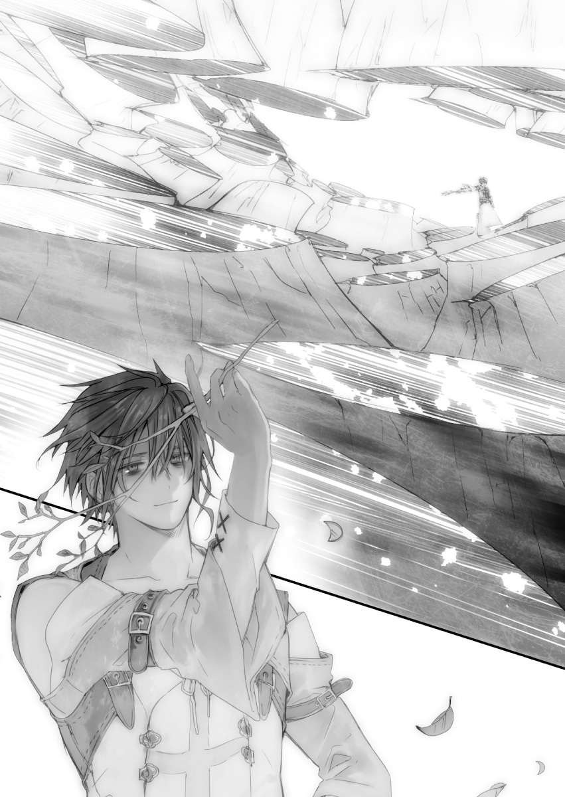
それは幻想的で、酷く恐ろしい光景だった。
対戦相手は我に返り、近づこうとするローウェンに前衛の二人が襲い掛かる。
剣を持った前衛二人がローウェンと接触する。だが、『史上最強の剣士』であるローウェンに接近戦を挑めば結果は明白。接触した次の瞬間には、前衛二人は手の甲から血を流し、剣を地面に落としていた。
その二人を置き去りにして、ローウェンは後衛の魔法使いの傍まで歩いて辿りつく。
自らの渾身の木魔法を払ってみせた小枝を眼前に突きつけられ、魔法使いは冷や汗と共に笑った。その圧倒的な力の差の前に、笑いながら杖を地面に捨てるしかなかった。
「――は、はははっ。降参だ」
「ああ、その降参を受け入れよう」
それを聞いたローウェンも小枝を地面に放り、笑顔で観客たちに向かって手を挙げた。
その瞬間、闘技場全体が歓声に包まれる。見応えある大魔法に、それを正面突破した無名の剣士。誰もが満足できる試合内容だった。
その大歓声に負けぬように、司会も声を張る。
「ロ、ローウェン選手が勝利条件を満たしました！ ローウェン選手の勝利です！ 優勝候補にも挙がっていた強豪チームを無名の剣士が降し、二回戦進出――!!」
そのアナウンスに合わせて、さらに歓声は大きくなる。
まさしく『栄光』と呼ぶに相応しい賞賛の嵐だ。『栄光』の頂上ではないが、その麓にローウェンは足を踏み入れた。それは間違いない。
けれど、その光を浴びるローウェンの異常な存在感は薄まらない。
未だに濃いままだ。
確かに、いま、ローウェンは笑顔だ。闘技場の中心で、笑顔を振る舞っている......けど、どこか寂しそうに見えた。心の底からの笑みではないと思う。観客たちに手を振って応えるローウェンは少し息苦しそうにも見えた。
その勝利を見届けた所で、僕は《ディメンション》内で高速に移動する生物を感知する。
「――っ!?」
試合に集中していたため、気づくのが遅れてしまった。
巨大な狼が一人の少女を乗せて、川を行き来する小船を足場にして、こちらへ急接近してきている。大道芸にも似た方法で川を跳び越えた狼は、船団に飛び移り、さらに速度を上げて船上の建造物の屋根上を走る。
そして、最後に大きく跳躍し、西エリア闘技場の壁さえも跳び越える。
僕は《ディメンション》でなく肉眼で、狼の姿を捉える。その猛獣の出現に、近くの観客も気づき、悲鳴をあげた。正規のルートを無視して闘技場内に現れた狼は、その悲鳴をも無視し、疾風のように客席を駆け抜け、戦いの場に飛び込むために跳躍した。
狼が跳び、滞空している間――背中に乗っていた一人の少女も跳ぶ。
少女は晴天の白い太陽を背にして跳び上がった。その姿を西エリア闘技場で待っていた観客たちが目にする。
全観客の視線の中、少女は闘技場の中心へ華麗に着地してみせる。
そして、その着地で舞った砂埃を、その身を包んでいた外套を振り回して払い、流れるような動きで外套を投げ捨て――少女は姿を露にする。
姿を現したのは、金の髪を羽のようになびかせた少女。見る者全てに畏怖の念を抱かせるほど美しく、その場に立つだけで周囲を現実から幻想に塗り替える異質の存在。
この連合国で最も高貴で尊い少女――ラスティアラ・フーズヤーズだった。
ラスティアラは腰の剣を流麗に抜いて、空気を裂いた。
それはまるで劇のワンシーンのような登場で、その豪快な登場シーンに、観客は興奮と共に沸き出す。雪崩のような大歓声が西エリア闘技場を満たした。
状況を把握した司会は慌てた様子で声を出す。
「――ま、間に合いました！ 見間違えようがありません！ レヴァン教の現人神にて、フーズヤーズの天上の姫！ ラスティアラ・フーズヤーズ様のご入場です！」
宣言と共に客席の歓声は最高潮に達する。
ラスティアラは笑顔で手を振って、歓声に応えた。
すぐに運営の係員は試合の準備を進める。この盛り上がりのまま『舞闘大会』を進めたいのだろう。急いで対戦相手が門から現れて、ラスティアラと向かい合う形になる。
対戦相手は、三十から四十頃の年の男性が三人。厳めしい面構えをしていて、軍服に似た黒い服を着ている。自由な冒険者や探索者ではなく、なんらかの公的機関の人間に見える。
古傷が多く、歴戦の戦士であることは一目でわかった。ただ、それでもラスティアラの相手は厳しいだろう。それほどまでに彼女は異質で優遇された存在だ。
両チームの準備が整ったことを確認した司会は進行を開始する。
「――それでは試合方式の決定を行います」
僕は手元の資料を眺めながら、試合前の取り決め方法を確認する。どうやら『舞闘大会』の試合方式は毎試合違うらしい。両チームの話し合いが基本となっていて、そこで決闘のルールと賭けるものを決めると書いている。
ただ、話が長引きそうになれば、司会の判断でスタンダードルールが適用されるという注意書きもある。
対戦相手の内の一人が前に出て、ラスティアラへ深々と頭を下げる。
「お初にお目にかかります、ラスティアラ様。私はヴァルト本国の方で軍職につかせて頂いているファーレ家のシェイドです」
その声を近くにいる司会が魔法道具で拾い、会場全体に聞こえるようになる。
ラスティアラは笑みを崩さず、フランクに対応する。
「よろしく、シェイドさん。でも、ここでは立場なんて関係ないから気楽にね」
「もったいないお言葉です」
「ま、そうは言っても、どうしようもないか。それで、勝負方法はどうするの？」
「『一ノ月連合国総合騎士団種舞踏会』のスタンダードルールである『胸花落とし』、もしくは『武器落とし』を希望します」
初めて聞く単語だ。慌てて資料から、ルールの詳細を確認する。
「花で飾った方が見栄えがいいから、『胸花落とし』にしようか。司会さん、お花頂戴」
『胸花落とし』。胸部に花を飾り、散らし合う戦いと資料では説明されている。
ラスティアラは司会からバラのような色の濃い花飾りを受け取って胸に挿す。
対戦相手も同様だ。
「――そして、我々が勝利した暁には、フーズヤーズの大聖堂にお帰りいただきたいと思っています」
「うん、わかった。それでいいよ」
戦いの準備を終えて、対戦相手は決闘の報酬を提案する。
それをラスティアラはあっさりと了承し、逆に男の方が戸惑っていた。
「構わないのですか......？」
「構わないよ。それを覚悟で参加してるから」
「負ければ即送還を覚悟しての出場ですか......。良い覚悟です。ならば、ラスティアラ様が勝利した際は......」
「そのときは私たちの新たな門出を祝福して」
男の簡潔な要望に対して、ラスティアラの要望は曖昧なものだった。
「協力も応援も要らない。祈ってくれるだけでいいよ」
祈りの要求。対価としてはゼロに等しいだろう。しかし、ラスティアラはそれを望んだ。
「......わかりました」
「対戦方式もそっちで決めていいよ。遠慮せず三対一でかかってきてもいいからね」
「いえ、こちらの代表である私との一対一で全てを決めましょう。無駄がありません」
「わかった。なら、それでやろっか」
それを最後に、二人は距離を取る。
思った以上にすんなりとルールは決まった。あとは戦うだけだ。
司会は話し合いが終わったことを確認し、その詳細をわかりやすく観客に知らせる。
「恐れ多くて口を挟めませんでしたが......どうやら対戦方式が決まったようです！ ラスティアラ・フーズヤーズ様の大聖堂への送還を賭けて、単純明快な代表者同士の決闘のようです！ ここでファーレ卿が勝利すれば、その時点で聖誕祭の一騒動は解決です！」
司会の口上に合わせて、会場の歓声は激流のように鳴り響く。
会場の盛り上がりはローウェンの試合と比にならない。
ラスティアラはこの世界の有名人だ。僕の世界ならば、トップアイドルがオリンピックに出ているようなものかもしれない。
「――それでは『一ノ月連合国総合騎士団種舞踏会』西エリア第一試合、開始します！」
司会が宣言すると同時にラスティアラと軍人さんは駆け出し、剣が結ばれ、開始の合図が打ち鳴らされた。慌てて司会は戦場外まで退避する。
闘技場の中央で剣を打ちつけ合った二人は、弾かれるように一歩ずつ下がる。
軍人さんは驚愕の表情を浮かべたが、すぐに厳しい表情に戻して詠唱を始める。それに対し、ラスティアラは微笑みながら歩いて距離を詰めるだけだった。
――この時点で、僕は試合の終わりまでの流れが見えた。
そもそも、あのラスティアラと剣を打ちつけ合って、両者が弾け飛ぶなんてことはありえないのだ。彼女の圧倒的な膂力の前では、もっと一方的な結果にならないとおかしい。
間違いなく、ラスティアラは観客のために互角を演出している。
「――『敵を切り裂け』！ 《アルト・ゼーア》！」
軍人さんは風の魔法を放つ。ラスティアラはその魔法の出来をよく見てから、独楽のように回転して風を斬り払った。かわすこともできたのだろうが、四散する風の方が見栄えがいいと判断したのだろう。わざわざ、剣で防いでみせた。
その魔法の風と共に、軍人さんは突進していた。魔法の方は目眩ましで、本命は接近戦なのだろう。それをラスティアラは悠然と迎え撃つ。
軍人さんの振るう豪快な剣戟を、ラスティアラが華麗に受け捌いていく。
その剛と柔の競演に、観客は沸き立つ。
しかし、僕から見れば出鱈目なこと、この上ない。ラスティアラの剣技は滅茶苦茶だ。実のところ、柔でもなんでもない――柔っぽく見える別のふざけた何かだ。
ローウェンから剣の基礎を教えてもらったからこそわかる。むしろ、軍人さんの剣技の方が理に適っている柔の剣だ。
ラスティアラの剣技は真逆で、理なんて二の次。ただ格好良く見えるように剣を振っているだけ。
それでも戦いになっているのは、ラスティアラの動体視力と反射神経が化け物じみているせいだ。何より、剣の速度が段違い過ぎる。ラスティアラがどれだけ無駄な動きをしようと、その遅れを身の速度だけで取り返せてしまう。僕は軍人さんに深く同情する。
ほどなくして、ラスティアラは呟いた。
「良い太刀筋、威力も申し分ない――」
明らかに格好つけている。
まるで演劇のようにわざとらしく、その涼やかな声を響かせ、華麗に踏みこむ。
「けど、まだまだ舞台には上がれないかな」
そして、ラスティアラの容赦ない一閃によって、軍人さんの剣は弾き飛ばされる。
同時に胸花も散らされ、闘技場の空に銀の剣と赤い花が舞った。
ふわりとラスティアラの髪も舞う。踏み込んだ際に舞った砂埃は、まるで絵画の縁のようだった。その幻想的なまでに美しい結末を見て、観客たちは今日一番の歓声をあげた。
爆発音のような歓声を搔き分け、司会は試合終了の合図を出す。
「いまっ、ラスティア・フーズヤーズ様が勝利条件を満たしました！ 勝利ですっ！ 見事、二回戦に進出!!」
勝利宣言に合わせて、ラスティアラは剣を収め、手を差し出す。
軍人さんは苦笑いと共に手を差し出して応えた。
「シェイドさん、ありがとうございました」
「見事でした、ラスティアラ様。まさか、ここまで手も足も出ないとは......」
「いえいえ、良い勝負でしたよ？」
ラスティアラは笑って軍人さんの健闘を讃える。確かに、互角の剣戟が長く続いていた以上、観客から見れば『良い勝負』に見えただろう。
しかし、それがラスティアラの演出であることが相対していた軍人さんにはわかる。ゆえに、彼は笑って応えることしかできなかった。
こうして、ラスティアラの第一試合は終わる。
次の試合が始まるため、ラスティアラは奥に控え室があるであろう門まで歩いていく。最後までファンサービスを忘れずに、笑顔を振りまきながらだ。
出口の門と観客席の距離が近いのを見て、僕は観客たちの合間を縫って最前列まで出る。そして、多くの人の声が行き交う中、ラスティアラに呼びかける。
「――おい、ラスティアラっ!!」
声を張り上げて、僕はラスティアラの名前を呼ぶ。
ラスティアラは声に反応して、きょろきょろとあたりを見回したあとに僕を見つける。
「......んん？ あれ、カナミ？ 応援してくれてたの？」
まるで旧知の友を見つけたかのように話し返してくれた。
その対応に僕は心温まる。しかし、周囲の音で彼女の声が聞き取りづらい。《ディメンション》があるからなんとか聞こえる状態だ。
「ラスティアラ！ このあと、話せる時間はあるか!?」
とにかく、簡潔に用件だけ伝えることにする。
「え？ う、うーん。初日は二戦目があるから、そのあとなら大丈夫かな？」
ここまで話したところで、観客たちがラスティアラと話している人間がいることに気づく。あのラスティアラ・フーズヤーズと親しげに話すやつは誰なのかと、多くの目が向けられる。
「よし、二戦目のあとだな！」
「うん。あ、でもカナミも、ちゃんと勝ち進んでてよー？ 約束だからねー！」
「ああ、わかった!!」
目立つのを避けるため、すぐに会話を切り上げて、その場から逃げ出す。
色々と不安は一杯だったが、なんとか目的は達成した。あとは時間が過ぎるのを待つだけだ。観客たちの好奇の目を振り切って、僕は急いで西エリアの闘技場から出ていった。
◆◆◆◆◆
ラスティアラの試合を見たあと、僕は船上レストランの一つに足を運んだ。
午後の二回戦が始まるまでの時間を使って、食事を摂るためだ。
立派な船上レストランだ。ただ、どこまでも船が連なっているためか、船上レストランなのに船上で食べている気がしない。遥か遠くの地平線まで目を凝らして、やっと綺麗な青色が見えるくらいだ。
その中途半端な景色を見ながら腹を満たして、自室に戻る。この自室で待っていれば、また係員が案内をしてくれるはずだ。
ラスティアラとの約束通り、『舞闘大会』の二回戦には勝とうと思っている。
確か、以前に聞いたラスティアラの予定では試合中に『腕輪』を外すことになっていたはずだ。『エピックシーカー』のギルドマスターとしての責務もあれば、ローウェンの『未練』の問題もある。ここで棄権するという選択肢はない。
そして、太陽が完全に昇りきり、正午となったところで自室の扉がノックされる。係員に案内されるがまま、僕は北エリアの闘技場に赴き、専用の控え室に入っていく。
控え室は当たり前のように個室だった。宿泊するための個室といい、『舞闘大会』の出場者にはお金がかけられている。
そのことから、この本選ではかなりのお金が動いているとわかる。
......あと少しで僕の初試合が始まる。
個室にあった椅子に座って《ディメンション》を展開する。
試合が始まる前に、対戦相手を把握しようと思ったのだ。感覚を広げ、対戦相手と思われる名前を見つける。さらに癖のように、細かな情報を取得するために『注視』もする。
【ステータス】
名前：アニエス・クルーナー HP143/147 MP156/156 クラス：魔法使い
レベル15
筋力3.31 体力3.15 技量1.89 速さ1.26 賢さ6.23 魔力8.23 素質1.42
リーダーの名はアニエスという名前の少女だった。その子を中心にした魔法使いの少女たちが、僕の対戦相手らしい。
その制服と会話内容から北西の国エルトラリューの学院生であることがわかる。
彼女たちは最後の時間まで、真面目に戦いの作戦を確認していた。
「――いい？ 相手はあの『エピックシーカー』のギルドマスターだよ。油断せず、最初から全力で行くよっ！」
「うん、わかってる。氷結魔法を得意とするらしいから、火炎魔法を中心にね」
「私は一番後ろで火炎魔法を撃ち続けるわ。開始から全力でやるから、援護をお願い」
試合前の最後のミーティングが筒抜けだった。これはひどい。
フォーメーションの確認まで行い始めたところで聞いていられなくなり《ディメンション》を切る。試合前に全てが終わってしまうところだった。フェアじゃないにも程がある。
仕方がなく、僕は最後の時間を精神集中に費やして過ごしていくことにする。
焦る心を静める。すぐにでも『真実』を知りたい衝動を、仲間たちを助けたい欲求を、理性的に抑え込む。
半刻ほど過ぎたところで、係員が闘技場へ入るように促してくる。
僕は頷き返して、『持ち物』から『クレセントペクトラズリの直剣』を取り出し、ゆっくりと闘技場内に続く道を歩く。
十数メートル続く暗い通路を通り、入場門をくぐり――僕が闘技場に入った瞬間、空から刺すような光と共に歓声が降り注いだ。
腹の底に響くほどの轟音の嵐。
咄嗟に足が硬直する。朝にローウェンとラスティアラの試合で聞いた歓声とは別物だった。余りに、声の方向性が違うのだ。
数千人もの観客たちの大歓声が、確かな質量を持って出場者である僕だけに向けられている。観客席の後ろから聞いた大歓声と別物なのは当然だろう。
なんとか止まった足を動かして、全観客の声と視線を受けながら、砂の地面を進む。
過度なプレッシャーのせいで喉が渇く。胸の動悸が速まり、緊張で体が固くなっていく。
それを悟られぬように無表情で、対戦相手の三人のいる中央まで歩く。どうやら、僕はあとからの入場だったらしい。
「――そして、彼こそがラウラヴィアの代表！ いまをときめくギルド『エピックシーカー』、そのマスター！ アイカワ・カナミ選手だぁ！ それもっ、なんと今回は単独での出場だ！ この本選を一人で出場している勇者は彼だけ！ それは絶対的な自信の顕れか、それとも別の思惑があるのか――!!」
司会の声が響く。その紹介内容が思いの他に恥ずかしく、顔を俯けて耐える。
できることなら僕だって三人で出たかった。僕が一人なのはパリンクロンの思惑だ。
スノウやローウェンの他に、誘える人がいなかったんだよ......。
なんとか試合前の口上を耐え切ったところで、対戦相手がこちらに近づいてくる。
「それでは両チームで試合方式を決めてください」
司会は僕たちに試合前の相談を促す。学院生の三人も僕と同じく緊張している様子だ。年は僕と同じくらいに見える。十代の女の子に、この会場の熱気は耐え難いだろう。
しかし、リーダーと思われる女の子が、意を決して前に出てくる。
僕も覚悟を決める。予定としては賭け事なしのスタンダードルールを押し通すつもりだ。断固として相手のルールを受け入れるつもりはない。
「――え、えっと、ファンなんです！ 握手してください！」
絶対に受け入れるつもりはなかったが......そんな僕の覚悟は脆かった。
目の前の女の子は顔を赤くして深々と頭を下げて、右手を僕の方に差し出してきた。
「え、え......？ あ、はい」
その惚れ惚れとする低姿勢に圧倒され、つい僕は握手をしてしまう。
そして、女の子にペースと手を握られたまま、話しかけられ続ける。
「ラウラヴィアでの噂は聞いています！ 私たちと同年代でありながら、ギルドの長として活躍しているなんてっ、とても尊敬しています！ 戦う姿も拝見したことがあります！ その、すごく格好良かったです!!」
「はあ、どうも......」
思ってもいなかった展開にたじろぐ。
僕のファンとやらに出会うのは二人目だ。まさか、対戦相手がそうだとは思わなかった。
「私たち、卒業後は連合国のギルドで働くことを希望しているので、各国のギルドを調べていたのですが......やはり、一番は『エピックシーカー』でした！ 中でもアイカワさんは別格です！」
「あ、ありがと......？」
「恥を忍んでお願いします！ 私たちが勝ったら学院まで一度来てくれませんか!?」
「え、学院まで？ なんで......？」
「はい！ アイカワさんは熟練の魔法使いであり、探索者でもあると聞いています！ 臨時教師――いや、できれば、私たちの家庭教師として来て頂きたいのです！ そして、ギルドと迷宮について私たちに教えてくださいませんか!?」
思いもしない要求をされて僕は混乱し、同じ言葉を繰り返すしかできない。
「家庭教師......？ 僕なんかが......？」
「はい、お願いします。同じ出場者のフランリューレ先輩から、迷宮での戦いも凄まじいと聞きました。憧れのアイカワさんに来ていただけたら、とても嬉しいです」
フランリューレ......確か、舞踏会で出会った少女騎士だ。彼女は僕を『ジーク』と呼んでいる。もしかしたら、思い出せない過去の中、彼女と迷宮探索を共にしたことがあるのかもしれない。そして、同じ学院生で出場者である彼女たちと情報交換を行ったのだろう。
......予想外だ。
有り金を賭けたりすることは覚悟していたが、まさか教師になって欲しいと言われるとは思わなかった。ただ、可愛らしい要求だとは思う。サッカー少年がプロサッカー選手にコーチしてと願うようなものだろう。要求自体は許容範囲だと僕は判断する。
誰かに知識を教えられる自信はないが、もし負けたとしても致命的なものではない。
「え、えーっと......」
その要求を呑むか呑まないか僕は悩む。
そんな僕の姿を見て、女の子は焦った様子で言葉を叫び足した。
「――も、もし、私たちが負けたらなんでもしますので！」
顔が引き攣る。これ以上放っておくと、もっととんでもないことを言い出しかねない勢いを感じた。『舞闘大会』受付のお姉さんから色々と洒落にならない例を聞いている僕は、状況が悪化する前に了承することを決める。
さっさと勝って、何も要らないと言って終わらせるのが一番のはずだ。
「ん、んー......。か、勝ったらね？ 君たちが勝ったら、別にそれでいいよ」
「ありがとうございます！」
お互いの要求が決まったことで、会場の声が大きくなった気がする。
女の子が「なんでもする」というのを聞いて、その賭け金の大きさに興奮しているのかもしれない。しかし、残念ながら僕が勝っても何も要求するつもりはない。あるとすれば『エピックシーカー』を贔屓にしてくださいと言うくらいだ。
僕は盛り上がる観客を置いて、勝負方法を決める。
「その代わり、ルールは『胸花落とし』にしてね。怪我をしたくないし、させたくもないから。あと三対一でも構わないよ。それが基本ルールらしいし」
「はいっ、私たちも『胸花落とし』にしようと思っていました！ 人数も、遠慮なく三人でやらせてもらいます！ 胸をお借りしますね！」
女の子は笑顔でルールを了承して、僕から距離を取る。そわそわしながら、司会から胸花を受け取る。かなり緊張しているように見える。
その様子を不審に思いながら、僕も同じように胸花をつける。
そして、司会が大声で状況を説明する。
「――なんとっ、アイカワ選手!! 恐ろしい条件を、軽く引き受けてしまったぁ！ 言葉は柔らかいが、これはお互いの身柄を賭けているということに彼は気づいているのか!? それともこれは彼の圧倒的自信の顕れなのか!?」
それは僕の勘違いを正すのに十分な説明だった。
「え？ 身柄？」
「やはり、気づいていない！ 巷の噂通り、腕は立つもののかなりの天然だ！」
いつの間にか、大事になっていた。
家庭教師という平和な単語に騙されていたが、この目の前の顔の赤い女の子は自分の身体を賭けて、僕の身体を手に入れようとしているということに、やっといま気づいた。
それを僕は軽く受けてしまった。
受付のお姉さんに注意されたにもかかわらず、この失態である。そりゃ観客も興奮するだろう。闘技場の空気はさらに熱され、いまかいまかと試合開始を待ち望んでいる。
「ちょっと待ってくだ――」
「それでは『一ノ月連合国総合騎士団種舞踏会』北エリア第二試合、開始します！」
そして、僕が制止をかける暇もなく試合は始まってしまう。
同時に闘技場内に木霊するのは魔法の詠唱――
「――『柱よ、連なれ』！ 《フレイムピラー》！」
「――《フレイム》！ 《フレイム》！ 《フレイム》！」
「――『炎の犠牲を重ねろ』『時間を焼べろ』『決意を奏でろ』――」
女の子たちは試合開始に合わせて魔法を展開した。前衛、中衛、後衛と陣取っているにもかかわらず、全員が魔法を選択したのだ。ただ、後衛の女の子だけは詠唱が長そうだ。
もう文句を言う暇はない。
僕も同じく魔法を展開しながら、一番近くの女の子に近づく。
ちなみに剣は収めた。女の子相手に傷をつけでもしたら大変だ。
「――魔法《次元の冬》」
全魔法に対して干渉を始める。幸い、いまの僕は火炎魔法に対して理解がある。ずらすどころか、魔法を霧散させることも容易だろう。
まず前衛の《フレイムピラー》を霧散させ、後衛の長期詠唱を邪魔して、中衛の連続の初級魔法《フレイム》を解体しようとして――その内の一つへの干渉に失敗する。
「消せない......？」
中衛の唱えていた《フレイム》に干渉する隙が全くなかったのだ。
その原因を即座に理解する。中衛の女の子は多くの指輪をはめていた。そして、高価そうな赤い指輪がいくつか砕けているのを確認する。僕は砕けていない指輪を『注視』する。
【魔石『散炎』の指輪】『散炎』の力を宿した指輪――
特定の魔法が組み込まれた魔法道具であることがわかる。
僕の《次元の冬》では魔法道具内に完成されていたものに干渉できなかったのだ。
すぐに戦術を見直し、前衛の胸花を摘もうとするのをやめる。このまま攻撃しても、あと少しのところで《フレイム》が邪魔をして手が届かない。
仕方がなく、いま向かってきている《フレイム》に対応する。
僕は状況を分析していきつつ、選択肢が限られていることに気づく。
僕自身は炎を問題としていない。もし直撃したとしても、さほどＨＰは減らないだろう。僕の身体はレベルの上昇によって、耐久力が人間を超えつつある。
けれど、胸花は僕のように丈夫ではない。火の粉の欠片でも燃えてしまう。それが問題だった。その事実が僕に過剰な防御を選択させる。
「くっ、――魔法《フリーズ》！」
魔法の冷気を展開しながら、身体能力を駆使して全ての《フレイム》をオーバーなアクションでかわしていく。このルールでは掠ることも許されないからだ。
こうして試合の一手目が終わり、中衛にいるリーダー格の女の子が指示を出す。
「これが噂の『魔法相殺』！ みんなっ、予定通り魔法道具中心に!!」
発動しようとした魔法を失敗したことに対する動揺が少ない。どうやら、僕の《次元の冬》の効果をある程度は知っていたようだ。流石、僕のファンだ。
女の子たちは身につけたアクセサリーを砕きながら魔法を展開していく。
どれもが『胸花落とし』というルールに向いている広範囲の火炎魔法だ。
多種多様な火炎魔法が襲い掛かってくるのを《次元の冬》で減衰し、時には一瞬の《過密次元の真冬》で消失させて防ぐ。
見るからに高価な魔法道具たちが次から次へと破損していく。女の子たちはそれを気にも留めていない。おそらく、家が金持ちなのだろう。学院はそういった貴族が多いと聞いている。
炎を防ぎながら、彼女たちが手馴れていると感じた。一連の流れに澱みが一切ない。エルトラリュー学院とやらで『胸花落とし』の訓練があったと推測される。
彼女たちはルール内で最善の手を打っている。僕とは大違いだ。
彼女たちの手腕に感嘆しつつ、すぐに剣を抜く。次に『持ち物』から布と水を取り出す。
そして、自分の傲慢さを戒める。正直なところ――
負ける可能性はゼロだと思っていた。だから、試合前の取り決めが適当になった。
怪我させないように武器を持たなかった。そのせいで、一手目で前衛を倒しそびれた。
どんな相手でも一方的に勝てると確信していた。それが情報収集の怠慢に繫がった。
「――魔法《過密次元の真冬》、『魔力氷結化』！」
僕の最大の魔法名を呟くと共に、濡らした布で胸の花を包んで、周囲に氷の膜を創る。
これで、数秒は持つ。
「もう油断はしない――！」
僕は全力で火炎魔法の吹き荒れる中を駆け出す。
服と表皮を焦がされながら距離を詰めていく。
一瞬の内に近づいてきた僕を見て、まず前衛の女の子が驚きの表情を見せる。しかし、その表情を見せる前に勝負は終わっていた。
僕の剣によって彼女の胸花は散り、その背後まで僕は駆け抜け終えていた。
それを見た中衛と後衛の二人が防御の体勢を取ろうとする。しかし、その防御の体勢が取られる前に、中衛の女の子との勝負も終わっていた。『魔力氷結化』によって伸びた剣先が、彼女の胸花を散らし終わっている。
そして、最後の一人だけが、僕と勝負する時間を許される。
後衛の女の子は杖を正眼に構え、魔法道具を砕いて急造の火炎魔法を放った。
「フ、《フレイム》!!」
「――魔法《氷結剣》――連結、魔法《過密次元の真冬》」
一瞬だけ、氷の刃に《過密次元の真冬》を這わせる。そして、放たれた《フレイム》を剣で撫でた。
氷結属性の振動を抑制する魔力が《フレイム》に浸透し、火炎は消失する。
火炎が失われたのを確認し、躊躇いなく距離を詰めに行く。
近づく僕を迎撃しようとした後衛の女の子の杖は空を切り、同時に胸花は空に散り舞った。敵全員の胸花が散ったのを確認し、僕の胸にかけてある布を放り捨てる。
僕の胸花は無事、焦げ一つ付いていない。すぐに対戦相手の女の子たちの花が散っていることを指差しながら、僕の姿を見失っていた司会に呼びかける。
「えっと、司会者さん。僕の勝ちでいいですよね？」
司会は何が起きたのか理解できていなかったようだ。
しかし、現に女の子たちの花は全て散り、僕の花だけが残っているのを見て、慌てて実況を再開させる。
「――い、一瞬です！ まさに刹那の攻防！ 学院生チームが優位に戦っていたかと思えば、次の瞬間には全員の胸花が散っていました！ これが『エピックシーカー』のマスターアイカワ・カナミの実力なのかぁ!?」
大げさな司会の煽りで、闘技場は興奮の渦に包まれる。
「アイカワ・カナミ選手、勝利条件を満たしました！ 華麗に三回戦進出!!」
無事に試合を終え、安堵の溜息を漏らす。
――こうして、僕は三回戦へ進出した。
その後、妙に恥ずかしそうな女の子たちが負けた場合の要求を確認してきたが、要求は何もないと首を振る。すると、それを見た観客たちからブーイングの嵐が巻き起こった。
そして、僕に対するヘタレコールまで鳴り響く中、すごすごと僕は闘技場を後にしたのだった。
◆◆◆◆◆
試合を終えて、約束通り、僕はラスティアラに会いに行く。
《ディメンション》で探したところ、国の用意した宿泊施設に姿はなく、とある高級ホテルのワンフロアを貸切にしていたのを見つける。彼女たちには懸賞金がかかっているため、できうる限り所在を誤魔化そうとしているのかもしれない。
高級ホテルの最上階にある一室をノックする。
すぐに返事がされ、扉は開けられる。
「ようこそ、カナミ。とりあえず、中に入ってよ」
「わかった」
警戒を解くことなく、中に入っていく。部屋の内装は僕の部屋とあまり変わらない。最高級の一室だ。違う点を挙げるとすれば、奥の部屋に繫がっているであろう扉に背中を預ける美しい女性が居ることだった。
【ステータス】
名前：セラ・レイディアント HP259/263 MP108/108 クラス：騎士
レベル22
筋力6.59 体力8.22 技量9.52 速さ11.00 賢さ5.72 魔力7.98 素質1.57
先天スキル：直感1.77
後天スキル：剣術2.13 神聖魔法0.90
その名前から彼女がラスティアラと共に参加した狼の獣人であるとわかる。
スノウに似た青い髪が特徴的だ。身に着けている服と装飾品のセンスもスノウと似ていて、民族的な物が多い。ただ、スノウと比べると彼女のほうが濃いイメージだ。全体的に少し派手で、髪の色も深みのある暗い青だ。
鋭い目でセラ・レイディアントは僕を睨んでいる。
ラスティアラやディアブロ・シスとは違い、彼女からは敵意が感じられる。
僕がセラ・レイディアントを警戒していることに気づき、ラスティアラは薄く笑う。
「そんなに警戒しなくてもいいよ。ここは安全だから」
「ほんとに......？」
「セラちゃんも仲間だから大丈夫。ちょっと『ジーク』と仲が悪いのは確かだけど」
「そ、そう......」
ラスティアラが間に入ったことで、セラ・レイディアントは鼻を鳴らしてそっぽを向いた。同時に彼女の敵意は霧散する。
この場で交戦する意思はないみたいだ。ただ、この場を離れる気もないらしい。
彼女の存在が少し気になるが、すぐに本題を切り出す。
「それで、話なんだけど......。ラスティアラ、すぐに僕の『腕輪』を破壊して欲しい」
「......『腕輪』の破壊？」
ラスティアラは不思議そうな顔をする。
それもそうだろう。数日前は頑として『腕輪』を守ろうとしていたのに、今日は全く逆のことを言っているのだ。怪しまれるのも仕方がない。
「ああ。色々とあって、記憶を取り戻すべきだと判断したんだ。おまえは僕の『腕輪』を破壊する意思があって、実行に移せる実力もある。どうか協力して欲しい。頼む」
「色々とあって、ね......」
ラスティアラは丸めた手を顎に当てて、真剣な表情で思案する。
説明を端折り過ぎたかもしれない。この僕の唐突な心変わりに対する説明がなければ、話を信頼してくれない可能性がある。
「本当に色々とあったんだ。そして、色々なことが積み重なって、大事なものがないって気づいたんだ。いまからそれを説明するから、聞いてくれ――」
ここでラスティアラの信頼を勝ち取れなければ、頼る相手が本当に限られてくる。僕は包み隠さず話すことに決める。
まず、ずっと違和感と焦燥感に苛まされていたこと。ラスティアラたち以外にも、僕を『ジーク』と呼ぶ人たちと出会ったこと。周囲からの情報と僕の記憶とに齟齬があること。最後に、僕の深層心理を読み取れるリーパーから注意を受け、自分のやるべきことを確信したこと――
「――あのときは邪険にして悪かった。けど、いまの僕なら『腕輪』破壊を拒否しない」
「ふーむ。んー、なるほど。ちょっと引っかかるけど、それなら私たちも協力するのはやぶさかじゃないよ。元々、私たちはカナミの記憶を戻すために動いていたわけで......」
「よかった......。それなら――」
「あ、でも、悪いけど条件があるよ」
すぐにでも『腕輪』破壊をお願いしようとするが、ラスティアラはばつの悪そうな顔でそれを遮った。
「......ちょっと、うちのディアの機嫌をとってくれないかな？ 体調は戻ってるんだけど、精神面がやばいんだよね。下手に突けない状態なんだ」
ディアという少女を、僕は記憶から呼び起こす。
初めて会ったときに大泣きしていた子で、さらにはレイルさん宅を更地にした危険人物だ。
「えっと、この前、僕を見て泣いちゃった女の子だよな......？ 僕が会えば逆効果なんじゃないのか？」
「いや、悪化はしないと思うよ。『ジーク』はディアの最も信頼している人間だからね。お互いが最初のパートナーで、すごく仲が良かったって聞いてる。だから、カナミが優しくしてあげたら、ころっと機嫌も直るはずだよ。......たぶん」
「え、そんな間柄だったのか......？ あの子と......？」
思いもしない事実を知る。
あんな爆弾娘を最初のパートナーに選んだ過去の僕の正気を疑う。
「うん、そんな間柄。ただならぬ仲だったせいで、私も色々と苦労したよ......」
ラスティアラは何かを思い出しながら、疲れた溜息をつく。噓をついているようには見えない。そして、さらに愚痴を零していく。
「日に日に目の光を失っていくディアは、ほんと洒落にならなかったよ。暴走したあの子を抑えた私ってば、まじ英雄。連合国は感謝状を私に千枚は出すべき。私が止めてなかったら、連合国の領土が物理的に削れてたよ？」
「あの子、そんなにやばいのか......？」
「でも、彼女が『腕輪』破壊に協力してくれたら百人力だよ。あんなだけど、神聖魔法の専門家だから」
「......そっか。わかった、話してみる」
ラスティアラの要求を吞む。
話通りならば、僕の『腕輪』破壊に有益な人物であることは間違いない。
「よかった。それじゃあ、ディアは隣の部屋でいじけてるから。いってらっしゃーい」
そして、セラ・レイディアントが立っている方向を指差した。どうやら、彼女の背中にある扉の奥に居るようだ。
ただ、僕が扉に近づくと、セラ・レイディアントは口を出してくる。
「お嬢様、いいのですか？ いまのディア様は危険です。下手をすれば、出会い頭にこの男が死ぬかもしれません。......まあ別に、私はこの男が死んでも構わないのですが」
とても物騒なことを言い出した。気軽に向かっていた僕の足が止まる。
「カナミなら大丈夫。いや、カナミ以外にはできないんだよ。このタイミングで現れたことに、私は運命を感じてる」
「......現実はお嬢様の好きな物語とは違いますよ？ タイミングがいいからと言って、成功するとは限りません」
「わかってる。それでも私は大丈夫だって確信してるんだ。......だからセラちゃん、道を空けてあげて」
ラスティアラが懇願すると、セラ・レイディアントは仕方がないといった様子で道を空けた。隣の部屋への扉が見えるようになる。しかし、目的の扉を前にして、まだ僕の足は前に進んでくれない。死を予感させるほどの恐ろしい魔力が扉から漏れていたからだ。
「ジークフリート・ヴィジター。もし死ぬとしても、ディア様を正気に戻してから死ね」
さらにセラ・レイディアントの言葉が僕を不安にさせる。
その辛辣な態度から、僕は過去の自分と彼女の関係が少し気になった。
「......過去の僕は、君に何かしたのかな？」
「ああ、した。屈辱を味わわされた」
「それは、その、すみませんでした......」
立ち止まっていては、この獣人の女性との関係も何もわからないままだろう。意を決して、僕は扉に近づく。そして、その扉のドアノブに手をかけたところで最後の確認を取る。
「えっと、ディアって子は正気じゃないの......？」
「常人から見れば正気でないように見えるかもね。ま、私はディアの気持ちがわかるから意思疎通できるけどね。......もしかしたら、カナミじゃ会話すらできないかも？」
「え、えぇ......？ それって、機嫌の取りようがないような......」
「それでも、カナミなら大丈夫。そう私は信じてるよ」
ラスティアラは無駄な信頼を僕に持っていた。なんの不安もなく僕を送り出そうとしている。対して、僕は不安だらけのまま、扉のドアノブを捻り入っていく。
――暗く狭い部屋だった。
全ての出入り口が塞がれ、窓からの光はカーテンに遮られている。
その暗い部屋の隅にあるベッドの上で、一人の少女が壁に向かって体育座りをしていた。
しゃっくりを繰り返しながら、鼻をすすっている。どうやら、たくさん泣いたあとのようだ。その原因が僕――過去の僕とやらであることはわかっている。不本意だが、その責任を負い、いまは目の前の少女を助けることだけに集中しよう。
「大丈夫......？」
しかし、怖いものは怖い。少女を『注視』することで見えてくる情報は、物騒なことこの上ない。『状態』は錯乱に近く、魔力は街一つを軽く吹き飛ばせる数値。場合によっては、この船団全てが吹き飛ぶ可能性すらあるだろう。
ディアちゃんは声をかけた僕の方に顔を向けることなく、鼻声で呟き続ける。
「――ああ、わかってる。わかってるラスティアラ。大丈夫。大丈夫だって、わかってる。わかってるわかってるわかってるわかってる――」
うん、普通にやばい......。
僕は慎重に言葉を選んでいく。
「ディアちゃん、落ち着いて......。落ち着いて、僕の話を聞いて欲しい......」
その僕の言葉を聞いたディアちゃんは、呟くのをやめる。
「ディア、ちゃん......？ おまえ、誰だ......――」
そして、こちらを向いて僕の存在を確認して、固まった。
「――ジ、ジーク......？」
呆けた顔で僕の顔を見つめている。その間に僕はディアちゃんに近づこうとする。
しかし、それは軽率だった。僕の接近を見て、彼女は赤く充血した目を見開く。
「ぁ、ぁあ、ああぁああっ......！ げ、幻覚なのか？ ああ、くそっ、また幻覚だ！ ははっ、駄目だな俺は......。すぐに都合のいい幻想を作って、そこに逃げ出そうとしてる。それじゃ駄目だ。駄目なんだ。そんな弱さじゃ、ジークの力にはなれない。あの男からジークを取り戻せない。わかってる、ラスティアラ。俺のやるべきことはわかってる!! もっと強くならなきゃいけないんだろ......？ ジークの仲間に相応しいくらい、もっともっと強くっ！ 誰よりも強く――！」
狂ったような独白と共に、禍々しい魔力がうねる。
強力な魔法構築の波動を感じ取り、咄嗟に僕は身をよじる。
「――《フレイム・アロー》！」
ディアちゃんの口から魔法が紡がれ、暗い部屋が真っ白に染まる。そして、僕の身体があった場所に閃光が奔った。
比喩でもなんでもなく、暴虐な熱量をもった光線が通り抜けたのを確認する。
僕は服の端がこげているのを見て、冷や汗を垂らす。
背後の壁に穴が空いているのを《ディメンション》で感じ取る。凄まじい貫通力だ。
ここは最上階にある個室なので、その光線は上手く空に駆け抜けてくれていた。ラスティアラたちがワンフロアを貸し切りにしたのは、ディアちゃんの魔法で関係のない人に被害を出さないようにするためだったと、いま理解する。
「え、え......？ あれ、避けた......？」
ディアちゃんは僕の回避を見て、きょとんとした顔を見せる。
「ディアちゃん、落ち着いてくれ......。本当に話をしに来ただけなんだ......」
辛抱強く優しく、ゆっくりと語りかける。
しかし、僕が近寄れば寄るほどディアちゃんの表情は歪んでいく。
「な、なんでだ......？ ぅ、ぁあ、ああぁああ！ 幻覚が、その顔でっ、その声でっ、俺に話しかけるな！ 話しかけるな話しかけるな話しかけるなぁあアア――!!」
そして、また先ほど同じように禍々しい魔力が部屋の中に充満していく。
その波動は先ほどよりも強く大きい。このままでは、この船が落ちてしまう。
僕はどうすれば目の前の少女を止められるか、思考を急速に回転させる。
「ジークは俺をディアちゃんなんて呼ばないっ！ おまえは偽者だ！」
ディアちゃんの全発言を思い返す。
そして、いまの彼女が怒っている理由は僕が偽者であることだと判断する。
「ああっ、僕は偽者だ！ ディアちゃんにとって、僕は偽者だ！ でも、だからって攻撃なんてしなくていい！ 僕は君の味方だ!!」
あえて僕は偽者であることを認める。その代わり、味方であることを強く印象付ける。
「み、味方だって......？」
「そう、味方だよ。君の『ジーク』を取り戻すのに協力する味方だ。さっきラスティアラと約束したところなんだ。信じて欲しい」
「俺を惑わせるな......！ そんな顔して、ジークみたいなことを言うな......！」
「確かに僕は『ジーク』みたいな顔をしているのに『ジーク』じゃない。けど、僕は君の敵じゃない。敵意があって、君の前に立っているわけじゃないんだ」
できるだけディアちゃんの立場に立って会話を選ぶ。そして、彼女に足りないものを推測する。いまの僕なら、その気持ちがわかるはずだ。きっと、彼女も僕と同じく、大切な人が遠くに居る状態なのだ。話しながら近づき、手を差し伸べる。
「......大丈夫。きっと君の大事な人は、すぐに戻ってくる。僕が協力するから」
「う、うぅう......。うぅ、も、戻ってこないんだ......。ジークが俺たちのところに帰ってきてくれないんだ......。こんなに頑張ってるのに、いつまで経っても戻ってきてくれないんだよ......」
項垂れるディアちゃんの腕を取る。
「僕が『ジーク』を取り戻すって約束する......。だから、落ち着いて......」
「は、離せ！ こら！ 俺に触れるなぁ!!」
ディアちゃんは僕の手を振りほどこうとする。しかし、その力は弱々しい。ステータス的に筋力が低いのもあるが、体調的に力が入らないのだろう。
僕は彼女の腕を握ったまま、もう片方の手でディアちゃんの頭を撫でる。
「......大丈夫。落ち着いて」
いま、彼女に必要なのは安心感だと思った。
彼女と同じく大事な人のいなくなった僕が、いま最も求めているものがそれだからだ。
そして、『ジーク』によく似た僕に撫でられてディアちゃんは気が緩んだのか、涙をこぼし始める。
「う、うぅあぁああああ......」
そのまま、頭を僕の胸に預け、しゃっくりまじりで弱音を吐き出していく。
「うぅ、ジークぅ......。『私』、すごいがんばってるのに、ラスティアラが苛めるんだ......。悪いやつらをやっつけようとしてるのに、あれも駄目これも駄目って言うんだ......。もうどうすればいいか、わかんない......。わかんないよ......」
泣き続ける。
その涙に何も返すことのできない『相川渦波』は、ただディアちゃんの弱音を聞き続けるしかなかった。
◆◆◆◆◆
「――も、もう大丈夫だ。ジーク......じゃなくてカナミ......」
こうして、小一時間ほどディアちゃんの話を聞き続け、ようやく僕は解放された。
その甲斐あってか、ディアちゃんは少しだが冷静さを取り戻してくれた。
ラスティアラの要求を果たしつつ、僕がジークの記憶を失ったカナミという別人であることもなんとかわかってもらった。隣の部屋にディアちゃんを連れて戻り、僕とラスティアラは本題の続きを話し始めるところだ。
「ナーイス！ それじゃあ、『腕輪』破壊の話を進めよっかー」
「あ、ああ、それはいいんだけど......。ディアちゃんはあのままでいいのか......？」
ディアちゃんは部屋の隅のベッドの上で、毛布に包まった状態でこっちを見ている。どうやら、先ほどの醜態が大変恥ずかしかったようだ。
落ち着いてくれたのはいいが、こうも距離が遠いのは困る。
僕が目を向けると、さっと毛布で顔を隠す。
なんだか小動物みたいだ。猫とかリスとか、そんな感じの。
「落ち着いて聞いてくれてたら、なんでもいいよ。というか随分と女の子らしくなってくれて、私的に美味しいね。すっごくいいっ」
「あ、そう......」
ラスティアラはいやらしい顔でディアを見る。いまにもよだれを垂らしそうだ。
その僕の目線を感じて、ラスティアラは表情を真剣なものに戻して咳払いをする。
「ごほんっ。......『腕輪』は私とディアに任せてくれていいよ。カナミをボコボコにしたあと、ゆっくりと取り外す予定」
「取り外す？ そんな生温いこと言わないで壊してくれていい。遠慮はいらない」
「ん、んー......。遠慮じゃなくて、単純に壊すのが怖いんだよ。何が仕込まれているかわからないからね......。あのパリンクロンの用意した『腕輪』だし......」
「前に言っていた、自殺する術式とかのことか？ けど、そんなのを気にしていたら何もできないぞ？」
「そこは大丈夫。連合国の全魔法知識の詰まった私と世界最強の神聖魔法の使い手ディア――この私たち二人が力を合わせれば、時間さえあればどんな術式も解体可能だよ。安全な方法がある以上、時間をかけてでもそれを選びたいんだ。......万が一にでも失敗したら、ディアがやばいからねっ！」
ラスティアラは最悪を考えて作戦を練っている。例えば、この『腕輪』が爆発物の可能性だって考えているだろう。だから、破壊ではなく取り外すことにこだわっている。
「......わかった。取り外す方向で行こう。それじゃあ、いますぐお願いするよ」
ラスティアラの方針に同意して、すぐに僕は取り外しを頼む。
けれど、彼女の表情は芳しくなく、答えを言いよどむ。
「あ、あぁー......。えーっと、いますぐは無理だね」
「え？」
「だって、いまここでやれば絶対に邪魔が入るから」
「邪魔？ 誰が？ ここには誰もいないだろ？」
「スノウがいるよ。たぶん、いま、この瞬間もスノウに話を聞かれてる」
「え......？ ス、スノウ......？」
思いもしない人物の名前を聞いて驚く。
「スノウの能力なら、この『ヴアルフウラ』全てを盗聴することが可能なんだよ。おそらくだけど、いまもカナミの音を延々と追いかけていると思う」
「僕の音を追いかける......？ スノウの魔法はそこまでできるのか......？」
「無属性の振動魔法を極めたスノウなら、音に対してなんでもありだよ。この船団が高級船ばかりなのが痛いね。媒介にできる魔石が多いから、スノウの特殊な魔力をいくらでも浸透させられる。おそらく、どこに居ようが聞かれると思うよ」
「た、確かに、そう言われればできそうだけど......」
スノウからは例の魔石から魔石へ振動を伝える魔法しか聞いていない。しかし、物臭な彼女が自分の魔法を出し惜しみしていた可能性は高い。
「この場で『腕輪』を取り外そうとすれば、すぐにスノウは邪魔しに来るだろうね。いまのスノウってばカナミに相当依存しているから、邪魔のついでに私たちを亡き者にする可能性だってあると思うよ。いや、ほんとに」
ラスティアラはいつの間にかスノウの状況を把握していた。そして、その事態を僕よりも深刻に受け止めている。いまのスノウならば殺人をも犯す可能性があると思っている。
「でも、スノウ一人くらいなら、僕たちで押さえれば......」
「一人じゃないから困ってるんだよね。私が『エピックシーカー』のギルドマスターを襲えば、自然と『エピックシーカー』のギルドメンバー全員が相手になるよ。それを命令する権限がスノウにはある。大義名分を与えてしまえば躊躇しないと思う。それだけじゃないよ。カナミがラウラヴィアの保護下にあるのも痛い。正直、どんな横槍が入ってもおかしくないかな。スノウには私とカナミの戦いを察知し、全員に知らせる能力があるからね」
スノウの能力の厄介さを再確認する。
まるで僕の《ディメンション》を相手にしているような感覚だ。
僕の『腕輪』を破壊するには、僕を戦闘不能にする必要がある。しかし、それは第三者から見れば、まるで僕を襲っているように見えることだろう。ギルドメンバーどころか、国の警備兵や善意の第三者まで僕を守ろうとするかもしれない。
下手をすれば、あのローウェンとも戦うことになるかもしれない。ローウェンも『腕輪』破壊には反対している。スノウが声をかければ、誰よりも早く駆けつけることだろう。
その質と量のともなった敵たちを相手に、ラスティアラとディアちゃんが集中して『腕輪』に取り掛かれるはずがない。『腕輪』の『呪い』で僕が抵抗する可能性もあるのだ。
「なら『ヴアルフウラ』を離れて、スノウの能力が届かないところまで逃げるのは？」
「そうなれば、スノウは手段を選ばないだろうね。迷いなくウォーカー家の力を使い、他の四大貴族にも協力を仰ぐと思う。場合によってはラウラヴィア国とフーズヤーズ国が動くかもしれない。国が動く理由が、私たちに一杯あるからね」
「そこまで......、本当にスノウはそこまでするのか......？」
「あのスノウなら、絶対にするよ。だから、『舞闘大会』を利用しようって言ってるんだよ。前も言ったけど『舞闘大会』の試合中なら邪魔が入らない。このまま『舞闘大会』が進めば、私のチームは四回戦でスノウと当たって、準決勝でカナミと当たれる。上手くいけば、準決勝で何もかもが解決する予定」
ラスティアラは『舞闘大会』の資料を広げて、トーナメント表を指差す。
確かに順調に勝ち進めば、その通りになる。
「――おそらくだけど、向こうも同じことを思ってるはず。でしょ、スノウ？」
そして、ラスティアラは誰もいない宙に向かって、確信を持って話しかけた。
「ス、スノウ......。聞いてるのか......？」
僕も同じく宙に問いかける。
すると、少しの静寂のあと、部屋の魔石であしらったインテリアの一つが震えた。
『――うん、カナミ。ずっと聞いてた』
声帯のように震え、人語を発した。間違いなくスノウの声だった。
「スノウ......」
本当は信じたくなかった。
僕は苦い顔で、ずっとパートナーだった少女の名前を呼ぶ。
スノウは僕を置いて、ラスティアラに話しかける。
『......レヴァン教の現人神。私はあなたを超えます』
そして、宣戦布告する。その声は雪のように冷たい。
「受けて立つよ、スノウ」
『私はカナミと結婚したい......。噓の世界でも、用意された世界でもいい。今度こそ『幸せ』になりたい......。それだけが私の望みです......』
「わかってる......。スノウはカナミが欲しいんだよね......」
『賭けてください。もし、私が試合で勝てば、私たちの結婚を祝福すると』
「やっぱりそういう話に持っていくか......。いいよ、負けたら大人しくしてるよ。負けたら、ね。けど、私たちが勝ったら、そっちもこっちの門出を祝福してよ？」
ラスティアラは困ったような顔で、けれど軽く請け合う。当然、布団の中のディアちゃんも文句を言いたそうに立ち上がる。しかし、その前に僕が叫ぶ。
「やめろ、スノウ！ 僕には僕の意思がある！ おまえがラスティアラたちに勝ったからって、僕が本当におまえと結婚するって思うのか!? おかしい話だろ!?」
『......私も私の意思があるって昔は思ってた。けど、現実は違ったんだ。たった一人の意思なんて、簡単に潰れる。潰れるんだよ、カナミ』
忌々しげにスノウは呟き続ける。
『どう足搔こうとカナミは私と結婚することになる。選択権なんて簡単に、国から取り上げられる。カナミの立場が、その拒否を許してくれない。あのパリンクロンが描いた絵図だから間違いない。きっと、『舞闘大会』が終われば逃げ場はなくなる。最終的には否応なく、カナミは私と『幸せ』になる。――絶対に』
その強引過ぎる理論に、僕は返す言葉がなくなる。破綻している理論としか思えない。けれど、スノウは本気でラスティアラを倒せば、僕と『幸せ』になれると信じている。
『――準決勝で会おうね、カナミ。逃げないで。ずっと聞いてるから』
そこで会話は終わった。
もう僕の言葉は届かない。声は届けども、彼女の心には届かない。そんな気がした。
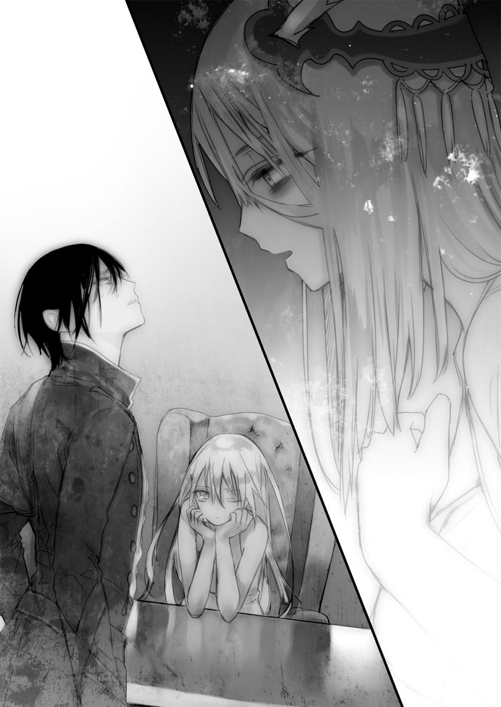
昨日の説得がなんの意味も成していないことがわかり、僕は愕然とする。
「あいつ......！」
もう一度スノウを説得しに行こうかと思った。そう思わせるだけの狂気を、先ほどの会話からは感じ取れた。しかし、すぐに思い直す。
いま会えば、穏便にことがすまない可能性は高い。ラスティアラはそれだけの覚悟がスノウにあると見ている。
ならば、ラスティアラたちの予定通り、『舞闘大会』に勝利してスノウに誓約を守らせるのが最善かもしれない。いまだけは、安全に互いの想いをぶつけ合える場があるのだ。
「ごめん......、ラスティアラ、ディアちゃん。どうか、スノウに勝ってくれ......。勝って、あの馬鹿を止めて欲しい......」
身内の恥をさらしているようで情けない。僕は真剣な表情で呟いた。
しかし、その恥を忍んだ懇願に、言葉は返ってこない。
よく見れば、いまにも噴き出しそうな顔でラスティアラは黙っていた。ディアちゃんは拗ねたように頰を少し膨らませている。セラ・レイディアントは呆れた顔になっている。
「......あれ？ みんな、何？」
真剣な顔をしていたのは僕だけだった。まずディアちゃんが、おずおずと僕に聞く。
「......なあ、カナミ。俺たちが負けたら、いまのスノウってやつと結婚するのか？」
「え、えっと、まだわからないけど、そうなる可能性は高い、かも？」
「へ、へえー。そっか、そっかー......」
ぬるりと――静まっていたはずのディアちゃんの魔力が漏れてくる。
彼女は毛布を被って「そっかー」と繰り返し続け始める。
「いやぁー、カナミってば、相変わらず面白いね。私は嬉しいよ。ぷふっ」
そして、ラスティアラに笑われ。
「死ね」
セラ・レイディアントには永眠を求められた。
「え......、あれ......？」
みんなの反応が思っていたものと違うことに戸惑う。
もっと真剣に憤る場面かと思っていたが、妙に空気がおかしい。
そして、この僕だけが理解できない妙な空気は、その後も長く続いた。
◆◆◆◆◆
スノウと話したあとも、準決勝で腕輪を外すための計画を僕たちは練り続けた。
セラ・レイディアントとも、話していくうちに少しずつ仲が良くなってきた気がする。なんとか、セラさんと呼ばせてもらうまで許可してもらった。
順調に僕の記憶を取り戻すための準決勝までの計画が詰まっていく。ただ、一つだけ不安があるとすれば、その全てをスノウに聞かれていることだろうか。
そして、話の最後に、ラスティアラは不安が増すようなことを言ってくる。
「――それじゃあ、カナミ。ディアと一緒に遊んできて」
「は？」
「デートとも言う」
「いや、いやいや、待て。そんなことしてる場合じゃないだろ？」
「『腕輪』を破壊するのに必要なことだから、ほら早く準備して。私たちとの試合までに、カナミには疲労困憊になってもらうって決めたでしょ？ だから、デート」
先ほど、『腕輪』のせいで勝手に反撃するなら、反撃できないまで弱らせるという案があった。それを実行したいらしい。
ラスティアラは『腕輪』の影響力を甘く見ていない。たとえ、僕が意識を失っても、『腕輪』が危険になれば装備者は勝手に動くと考えている。
それを考えれば筋は通っている。狙いもわかった。
それでも、大会というやり直しできない場で、強敵に合わせて体調を整えるのではなく、体調を崩していくという行為に抵抗を覚える。
「けど、それをすると僕が三回戦と四回戦で負ける場合もあるぞ。大丈夫か？」
「うーん、トーナメント表を見る限りは大丈夫かな」
ラスティアラはトーナメント表を眺めながら、気楽そうに話す。
「注意すべきはスノウと守護者ローウェン。この二人だけだね。スノウは私たちと当たるし、ローウェンは出場エリアが完全に反対側。カナミが順当に進めば......『天上の七騎士』チームとギルド『スプリーム』チームと当たるのかな、これ。どっちも大したことないから、カナミ弱体化作戦はありだよ」
僕もラスティアラと同じく表を見る。
両チームとも顔見知りだった。リーダーはペルシオナ・クエイガーとエルミラード・シッダルク、フーズヤーズの最高位騎士チームとラウラヴィアの最高位ギルドチームだ。
「大したことないって......。どっちも国の最高レベルだぞ......？」
「確かに人間の中では最高クラスだろうけど。人間やめてない相手なら平気平気」
ラスティアラは両チームとも、本気で相手にならないと思っているようだった。
「えっと、それはつまり......僕たちは人間やめてるって言ってるのか？」
「......まあね。立っている舞台が違う。結局、この大会は人間をやめてる四チームの戦いでしかないんだよ。私たちか、カナミか、スノウか、守護者ローウェンの四チーム。間違いなく、この内の誰かしか優勝はできない。いやぁ、今年参加した人たちは悲惨だねぇ」
「ローウェンはわかるけど、スノウも......？ それよりも『最強』と名高いお兄さんのほうが危険じゃないのか？」
グレンさんの何をしてるかわからないスキル群は脅威だ。それに『最強』にまで上り詰めた経験も侮れないだろう。反対エリアにいるものの、十分に注意すべき相手だと僕は思っていた。
「まあ、次点でグレンもそこそこ強いけど......んー、あれ？ もしかして、カナミってスノウの本気を見たことない？」
しかし、ラスティアラのグレンさんに対する評価は低かった。
続いて、スノウの強さについて認識の違いがあることを気にした。
「本気......？ いや、ないけど......」
今日までのギルドでの生活で、僕は常にスノウの代わりをしてきた。その愚かな行為のせいか、彼女が本気で戦っているのを見たことはない。
「なら、この『舞闘大会』でわかると思うよ。スノウだけが、私たちに届きうる存在だということがね」
ラスティアラは珍しく真剣な表情だった。
ステータスだけ見れば、スノウよりラスティアラの方が高い。それでも、ラスティアラから余裕を消すほどの何かがスノウにはあるということらしい。
「だから、スノウと戦うときまでに万全のディアを用意して欲しいわけで。ほら、さっさと気分転換に行ってこーい」
すぐにラスティアラは表情を崩して、僕たちを送り出そうとする。
いつの間にか、ディアちゃんは隣の部屋に移動してお出かけの準備を始めていた。遊びに行く理由はわかっていないが、遊びに行くことは賛成だったようだ。
「え、だからなんで気分転換に......？」
「......ディアの機嫌も取れて、カナミも疲れる。一石二鳥でしょ？ スノウ戦のときに、ディアの精神状態が万全であることはとっても大切なんだから。魔法が精神状態に影響されることくらいは知ってるでしょ？」
ラスティアラは顔を寄せて、小さな声で僕に言う。
「心を落ち着かせるだけなら、もっと別の方法があるんじゃないのか......？」
「ううん。これがディアにはベストの方法。『カナミ』にはわからないと思うけどね」
ラスティアラは『カナミ』を強調した。僕が『ジーク』でない以上、返す言葉はない。
ディアちゃんや『ジーク』と付き合いが長いであろう彼女の言葉を信じることにする。
「――それに上手くスノウが釣れれば、本戦の前に失格にできるしね」
悪そうな顔でラスティアラは笑う。もしかしたら、それが本命なのかもしれない。
「そこまで言うならそうする。おまえが一番状況をわかっているのは間違いないからな」
「よし、決まり。それじゃあ、私はディアの服をコーディネートしてくるね」
そう言ってラスティアラは隣の部屋へ嬉しそうに移動した。
そして、僕はセラさんと二人きりになる。
セラさんは盛大な溜息をついたあと、僕に近づいてくる。
「仕方ない。ならば、私がおまえのコーディネートをしてやろう。ディア様のエスコートをするのだから、それに相応しい格好でなくてはな......」
「あ、はい。お願いします」
「はぁ......。なぜ私が男のコーディネートなどしなくてはならないのだ......」
その後、セラさんの見事なコーディネートによって僕は、まるでフーズヤーズの騎士のような格好になる。武器は持っていないが、清廉で高価そうなもので統一された姿は、誰が見ても上流階級の人間だろう。
こうして、僕はディアちゃんと二人で遊びに出ていくことになったのだった。
◆◆◆◆◆
遊びに出た僕とディアちゃんは、『ヴアルフウラ』にある劇場船の一つを訪れる。
『ヴアルフウラ』は闘技場だけが全てではない。各国から訪れる人々を持て成すため、ありとあらゆる娯楽施設がある。劇場も、その一つだ。
遊びに出る前、絶対に一人で行動しないようにラスティアラから念を押された。スノウの件がある以上、最低でも二人一組で動くべきらしい。なので、常にディアちゃんから目を離さないように気をつけて歩き回っている。
妙に僕に懐いてくれているので、それ自体は楽だ。
ただ、ずっとディアちゃんが僕の手を摑んだまま離そうとしないことに困っている。彼女の右腕が義手であることは、事前にラスティアラから聞いている。その逆の左手が、ずっと僕の右手を握り締めているのだ。
二人で手を繫いで劇場船を歩く様は、ラスティアラの言ったデートそのものだろう。
それとなく手を離そうとすると、ディアちゃんはとても悲しそうな顔をするので、ずっとこのままだ。こんな純真そうで危うい女の子をここまで懐かせた過去の僕は、一体何を考えて行動していたのだろう。すごく気になる。
ディアちゃんの服装は、ラスティアラの好みでワンピースに似たパーティードレスに変わっている。部屋を出る直前まで、そのフリフリの服を彼女は嫌がっていたが、最後にはラスティアラの強引さに負けていた。
その白に統一されたコーディネートは見事と言わざるを得ない。ディアちゃんの白い肌と金の髪によく似合っていて、多くの人々の注目を浴びている。義手の継ぎ目はラスティアラのコーディネートが上手く誤魔化してくれているので、服をめくり上げでもしない限り、彼女が隻腕であることに誰も気づけないだろう。
そんな美少女と常に手を繫いでいる僕は、嫌でも目立つ。髪の色からして家族と言い訳はできないだろう。
そして、僕たちは劇場船で行われていた演劇を一つ見終える。劇場から出ながら、ディアちゃんは満面の笑みで話しかけてくる。もちろん、ずっと手を繫いだままだ。
「――いやあ、熱かったな、カナミ！」
「熱い......？ ああ、劇のことかな。そうだね、王道で熱い物語だった。戦士の人生というのがよくわかる面白い劇だったと思うよ」
「気に入ってくれて良かった。俺の知ってる中でも、お勧めのやつだったんだこれ」
「へえ、ディアちゃんは英雄譚が好きなんだね」
可愛らしい外見に似合わない趣味だと思った。しかし、遊びに行くと決まったあと、ディアちゃんは英雄譚の演劇を即決した。他にも、女の子の好きそうな恋愛劇が揃っていたのに全く迷いはなかった。
「ディアちゃん――か」
僕の呼び方を聞いて、少しだけ彼女の笑顔が曇る。
「ちゃん付けはまずかった？」
「できれば呼び捨ての方が――......いや、いいか。いまはこれでいいんだ」
「......わかった。そうするよ」
過去の僕は『ディア』と呼び捨てにしていたのかもしれない。
ディアちゃんなりに区別しようとしているのを邪魔するわけにもいかないと思い、素直に『ディアちゃん』と呼び続けることにする。
「それじゃあ、ディアちゃん。次はどこに行く？」
「えーっと、次は......」
ディアちゃんは「むむむ」と顔をしかめながら、次の行き先に悩む。
その姿は子供っぽくて可愛らしい。外見の美しさも相まって、先ほどから道行く人々の目に留まりまくっている。その上、隣で手を繫いでいる僕の方は『舞闘大会』の出場者だ。憧れや嫉妬、様々な好奇の目に晒され、本当に落ち着かない。
逆にディアちゃんは全く周囲を気にしていない。その生来の美しさからこういった目に慣れているのかもしれない。
正直、目立つのは苦手なので、もう少しディアちゃんには大人しくしてもらいたかった。しかし、楽しそうに『ヴアルフウラ』の資料を眺める彼女の姿を見ていると何も言えなくなる。ぶっちゃけると、ちょっとしたことで発狂されそうで怖いというのもある。
「――あっ、あの物語も劇になってるんだな！ カナミ、次はこっちへ行こう！ これも面白いぞ!!」
「待って、ディアちゃん。その前に夕食にしない？ この劇場船、食堂船とも繫がっているみたいだよ」
劇を見続けて時間感覚が狂い掛けていたが、船外を《ディメンション》で確認するとすっかり暗くなっていた。小休止に食事を提案する。
「そうだな。ここらで夕食を摂ってもいいな。そういえば、カナミは食事してもいいのか？ 限界まで弱くなるってラスティアラと決めたんだろ？」
「あ、そういえばそうだね......。なら、僕は水だけしておこうか......」
「なんだか悪いな......。やっぱり、他のところに行くか......？」
「いや、気にしなくていいよ。僕は『腕輪』のことを頼んでいる側だからね。これくらいは我慢するよ」
「それは違うぞ、カナミ！ 俺たちは頼まれたからやってるんじゃない。俺たちがカナミを助けたいからやってるんだ！」
そこはディアちゃんにとって間違えてはならない点だったらしい。
彼女は出会ったときから、ずっと『ジーク』を助けようとしている。誰に頼まれることなく、自分の意思だけで。その偽りない好意を感じ取って、少しだけ温かい気持ちになる。
「ありがと、ディアちゃん......。本当に僕と君たちは仲間だったんだね......」
「ああ、俺と『ジーク』は仲間だった。お互い、迷宮の一層で痛い目に遭って、二人で協力し始めたんだ。俺にとって『ジーク』は最初の仲間で、最高の仲間だった......」
「二人......。ねえ、そのとき、僕に家族はいた......？」
「家族？ いや、カナミは一人で遠くから連合国に来たって聞いてたぞ？」
「そっか......」
聞いたところ、ディアが最初の仲間らしいが、そこに妹の影はない。
僕は一人で異世界に迷い込んでいたことがわかる。
「カナミ、どうかしたか？」
「ああ、やっぱり『ジーク』は一人だったんだなって思って......」
「『ジーク』は一人じゃないぞ。俺たちがいる。何があっても、俺だけは絶対に隣にいる！」
「......そっか、僕は幸せ者だったんだな。こんな可愛い子に慕ってもらえて」
「かっ、可愛い？ え、いや、それは違うぞ、カナミ！ 俺は、その――！」
ディアちゃんは可愛いと褒められ、顔を赤くして首を振る。
彼女に釣られて、僕も顔が熱くなっていくのを感じる。
気が緩んで口説くような台詞をこぼしてしまった。どう誤魔化そうかと考え始めたところで、僕は聞いたことのある声を《ディメンション》で捉える。
「――ラグネさん、はしたないですわ！ もっと淑女らしく、節度を持ってください！」
どちらかといえば、聞いたことのある口調と言った方が正しいかもしれない。
「えぇ？ 買い食いも駄目っすか？ それだとここでの楽しみがなくなるんすけど......」
それに答える声も特徴的な口調だった。その特徴的な二人が口論しながら、こちらに近づいてくる。
「お腹が空いたのでしたら、わたくしが美味しいお店を紹介しますわ。そこまで我慢してくださいませ」
「いや、こういうのは目に付いたやつをその場で食べるから美味しいんすよ？ というか、それ以前に高級店のお行儀のいい料理は苦手なんすよ......」
「それはラグネさんが上流階級の空気に慣れてないからですわ。良い機会です。いまからわたくしがラグネさんに上流階級のマナーを叩き込んでさしあげますわ」
「え、え？ それはちょっと、勘弁してもらいたいかなぁーって......」
「さあ、行きますわよ！ ここからならすぐですわ！」
「――ぐ、ぐぬぬ、聞いてねぇー。セラ先輩も厄介だったけど、フランちゃんも負けず劣らず厄介っす」
金髪ツインテールのお嬢様が、髪の短い女の子の手を引っ張っていた。
その二人の名前を僕は知っている。フランリューレ・ヘルヴィルシャインとラグネ・カイクヲラだ。確か、彼女たちも僕を『ジーク』と呼ぶグループだったはずだ。
交流すれば『腕輪』か記憶について進展があるかもしれない。
......ただ、あの金髪ツインテール少女を見ると、なぜか身体が動き難くなる。無意識レベルで距離を取りたくなるのは、過去の僕と彼女の間に何かあったのだろうか。
声をかけるべきか迷っていると、ラグネ・カイクヲラがこちらに目を向ける。
「――ん？」
この人ごみの中、彼女は的確に僕たちを見つけた。
僕は驚く。《ディメンション》を使って、ようやく見つけられる距離だったのだ。
ラグネ・カイクヲラの魔力が動いていないのは《ディメンション》で把握している。まるでローウェンみたいな勘の良さだった。ステータスを見れば、彼女もスキル『魔力物質化』を持っている。あと、どことなくローウェンと雰囲気が似ている気もする。もしかしたら、ローウェンの遠縁にあたるのかもしれない。
ラグネ・カイクヲラは顔を明るくして、逆にフランリューレ・ヘルヴィルシャインを引っ張ってこっちへやってくる。そして、親しげに挨拶をする。
「やー、どうもっす。人攫いのお兄さん」
「また会ったね。けど、その人攫いのお兄さんって呼び方は止めてほしいんだけど。えっと......ラグネちゃん？」
とりあえず、ディアちゃんと同じように軽く「ちゃん」を付けて呼ぶ。
「冗談っす。なんだか、聖誕祭のアレはなかったことにされてるみたいっすからね。どうやら、上は面子と実益を優先したみたいっすね。というわけで、私はいま、お兄さんと気兼ねなく話せるわけっす。どうっすか？ せっかく会ったんすから、一緒に夕食でも行かないっすか？」
「一緒に夕食か。えっと......」
そんなに悪い話じゃないと思ったが、少し言いよどむ。彼女たち『天上の七騎士』は次の対戦相手だったということを、いま思い出したのだ。
「あぁっ！ ジーク様、わたくしです！ フランリューレ・ヘルヴィルシャインです！」
そこに二人目の少女の声が挟まれる。
「え、えっと、久しぶりでいいのかな......？ フランリューレさん？」
彼女が僕を『ジーク』と呼んでいるのは、もう訂正しようとは思わない。それと、彼女は良家のお嬢様である可能性が高そうなので「さん」を付けるのを忘れない。
「ああ、あぁっ......！ やはり、ジーク様はわたくしのことを覚えてくださっていたのですね！ 感激ですわ！」
目じりに涙を溜めて、フランリューレは喜ぶ。口が裂けても覚えていないとは言えなくなり、少しだけ冷や汗が流れる。
「ジーク様。よろしければ、これから一緒に食事でも頂きませんか？ この『ヴアルフウラ』で最上の料理をご馳走しますわ！」
「い、いや、遠慮しとくよ......。いまは連れがいるから......」
「遠慮なさらずに。さあさあっ、こちらへ！」
明日の試合のことも考えて、やんわりと断わろうとしたが、聞いてくれはしなかった。
見かねたディアちゃんが、用事を捏造して間に入る。
「――待てよ。何勝手に決めてんだ。カナミはこれから俺と劇を見に行くんだ」
必然と二人は睨み合う形になる。
「あら、あなたは......？」
「ただのディアだ。家名はない」
「そうですの。......あら？ あなた、どこかで見たことがあるような、ないような」
「俺はおまえみたいな愉快なやつ、見たことないけどな」
「む、失礼な子供ですわね......」
「こ、子供じゃねえよ！ たぶん、おまえと同じくらいだっての！」
「それにあなた、言葉遣いがなってませんわ。まるで男の子みたいですわよ？」
「俺はこれで合ってるんだよ！ というか、おまえに言葉遣いについてとやかく言われたくねえ！」
僕から見れば、この場でまともな言葉遣いをしているのは自分だけだ。だが、ここにいる全員が、自分だけはまともだと思っている気がするので怖い。
「いいえ、全く合ってませんわ。せっかくの綺麗な顔が台無し......よろしければ、わたくしが正しい言葉遣いを教えてあげてもいいですわよ？」
「その妙な口調を、俺にもしろと......？」
「大変優雅な言葉遣いでしょう？」
「――カナミ、行こう。次の劇を見に行こう。こいつと話してると頭が痛くなる」
ディアちゃんは僕の手を引いて、この場を離れようとする。
僕は軽く頭を下げながら、別れを告げる。
「これから二人で劇を見に行こうとしていたところなんだ。だから、食事はまた今度ということで......」
「ならば、その演劇鑑賞にお付き合いしますわ！ 思えば、大してお腹も減ってません！」
しかし、反対側の手を取られて止められてしまった。
「あっ、離せよ！ ついてくんな！」
反射的にディアちゃんは叫ぶ。
その様子を見ていたラグネちゃんが静かにフランリューレを諭し始める。
「......フランちゃん。私たち、今日は中央の舞踏会に呼ばれてるっすよ？ すぐに夕食を摂って、真っ直ぐ向かわないと間に合わないっす。劇なんて見てる時間はないっす」
「あそこにはライナーがいるから大丈夫ですわ！ それよりも、いまはジーク様です!!」
「え、ええっ？ 本気っすか？」
「いまは総長がいないから、チャンスなんです！ 同じ乙女として、協力してくださいラグネさん！」
「ん、んー。向こうはライナー君がいるなら大丈夫、なのかなぁ......？」
「ライナーは器用だから大丈夫ですわ。さあ、ジーク様。私たちも時間が空きましたので、ご一緒しますわ」
用事をライナー君に押し付けて、このままついてくる気満々のようだ。
その輝く目からは、何があっても去らないという気概が伝わってくる。
「ま、まあ......、目的には反していないか......？」
このかしましい少女と一緒に歩いていれば、それだけで疲れることだろう。
そういう意味では、いまの僕に必要な人なのかもしれない。
僕が同行を承諾しようとして、ディアちゃんの手を離した瞬間――
「――『ジーク』」
隣にいる僕だけがわかる範囲だったが、ディアちゃんの様子が大きく変わる。
ディアちゃんは小声で名前を呼び、僕の服の裾を摑む。危うく後ろに倒れそうなほど強い力だった。ぎょっとして彼女の顔を見る。
俯いているが《ディメンション》でわかる。目は虚ろになり、先の狂乱していた状態に戻りかけている。そして、本当に小さな声で呟き続ける。
「『ジーク』は俺が守らないと......、今度こそ『私』が......――」
すぐにディアちゃんの手を握り直して、彼女だけに聞こえるように小声で話しかける。
「お、落ち着いて......！」
「――ああ、俺が守らないと。『ジーク』を守らないと。でないとまた、遠くに行っちゃう......。嫌だよ。遠くに遠くに、また『ジーク』が――」
「ち、違うっ。いまの僕は渦波っ。渦波だから、落ちついて......！」
「......カナミ？」
ディアちゃんはとても不思議そうな顔で答える。そして、少しだけ考えたあと、とても悲しそうな顔になって、深呼吸を繰り返し、少しずつ冷静さを取り戻す。
「そ、そっか......。いまは『ジーク』じゃないんだよな。『ジーク』じゃなくて、カナミだ......」
ディアちゃんは僕の手をゆっくりと離す。
――彼女の一つしかない手が、摑むものを失った。
それがとても寂しそうに見えて、いまからでも僕が『ジーク』だと言いたくなる。しかし、それはできない。そんなその場しのぎの噓をつくことだけは、二度としたくない。
ディアちゃんは顔をあげて、無理に笑う。
「ははっ、ちょっと混乱してた。ごめん、カナミ。でも、もう大丈夫。大丈夫だ」
そして、なんでもないようにフランリューレたちの同行を認める。
「おい、そこの金髪。仕方ないから、ついてきてもいいぞ。ただ、あんまり調子に乗るなよ？」
「ふふふっ、心配なく。このわたくしが調子に乗るなんて、ありえませんわ。さあっ、どこの劇場へ行くのですか!? よろしければ、わたくしのお勧めを案内しますわよ！」
気の早い彼女は背中を見せて、先頭を歩き出す。
それにディアちゃんは舌打ちしながら続き、さらにその後ろをラグネちゃんが微笑みながらついていく。
こうして、僕たちは四人で演劇を見ることが決まった。
ディアちゃんとフランリューレが先頭でいがみ合いながら、劇場船の人ごみの中を突き進む。二人の会話をよく聞けば、見る劇について揉めていることがわかる。
まず、ディアちゃんが「俺たちは英雄譚を見に来たんだ。英雄譚を見るぞ」と主張すると、すぐにフランリューレが「遅れてますわ、ディア！ いま、貴族の間では男女の恋愛劇が流行っているのだから、それにするべきですわ！」と返している。
その口論のせいで、演目を選ぶのに大変時間がかかってしまう。
結局、僕が二人の案の間を取った劇を見つけて、それをみんなで見ることになる。
その演劇のチケットを買おうとしたとき、どこからかフランリューレが貴賓席を確保してくる。名前から予測はしていたが、やはり相当のお嬢様のようだ。
僕たちは特等席で劇を見始める。最初はディアちゃんもフランリューレも不満そうだったが、すぐに劇へのめりこんでいった。二人とも演劇ならばなんでもよかったのだろう。
少し安心する。手を離したことでディアちゃんがどうなるか不安だったが、さほど変わらない様子だ。フランリューレと一緒に目を輝かせて観劇している。
ただ、そのすぐ後ろで観ているラグネちゃんは大して楽しそうではない。
劇の内容は、田舎から出てきた一人の青年が騎士として大成し、貴族の娘と恋に落ちながらも、最後には戦場で命を散らす物語――それをニュースでも見ているかのように、ぼうっと眺めているだけだった。どうやら、演劇は趣味じゃないのかもしれない。
温度差のはっきりとした時間が、ゆったりと過ぎていく。
劇が終わったあと、ディアちゃんとフランリューレは興奮して立ち上がり、大きな拍手で出演者を讃えた。さらに退出しながら、二人で劇について討論まで始める。
「――しかし、ディア。あそこで主人公が命を投げ出したのは頂けませんわ。待っている愛しい人がいるのなら、どんなことをしても帰るべきでしたわ」
「違うぞ、フランリューレ。あれは男として絶対に引けない場面だった。だからあれでいいんだ」
「いいわけありませんわ。あれでは残された女性が不幸すぎます。あれは、ただの男の独りよがりです」
「わかってないな。それもロマンなんだ。そういう恋の終わりも美しいとは思わないか？」
「ディアとはわかり合えませんわね。確かに美しいことも大切ですが、それが全てじゃありません。というか、想い合う二人がハッピーエンドじゃないとわたくしは納得いきませんの！」
「そうか？ 人生、上手くいかない方が多いんだ。ハッピーエンドじゃない方が説得力があって俺は好きだけどな――」
同じ趣味を通じて、いつの間にか仲が良くなっていた。
出会ったときとは打って変わり、和気藹々としている。
ディアちゃんは『ジーク』に依存している危うい子という印象だったが、少しずつ印象は変わっていく。僕が関わっていなければ、ちょっと強気な普通の女の子に見える。
僕がそれを後ろから眺めていると、いままで無言だったラグネちゃんが声をかけてくる。
「――お兄さん」
前にいる二人に聞こえない程度の絶妙な声量だ。
どうやら、僕にだけ聞いて欲しい話のようだ。
「お兄さん、明日の試合について話があるっす......」
「明日の試合？」
急に『舞闘大会』の話を振られて驚く。
「明日の試合、絶対に油断しないで欲しいっす。本気でお願いするっす」
「......いきなり真剣な話だね。そっちは次の対戦相手が僕だって気づいていないのかと思ってたよ」
「そんなわけないっす。こちとら、お兄さんに二連敗中っすから。この『舞闘大会』の対戦相手の中では、お兄さんしか眼中になしっす」
「へ、へえ......」
どうやら、僕は目の前の少女に二連勝中らしい。
そのおかげで、好敵手認定されているようだ。その過去の僕の所業に、また頭を悩ませながら僕は頷く。
「そこで明日の試合をスムーズに進めるために、ここでルールを決めておかないっすか？」
「明日のルールを、いま？ 別に構わないけど......」
「おそらく、私のチームのリーダーである総長は遠慮なく三対一でやるつもりっす。あと、希望ルールは『武器落とし』っすね」
「両方とも別に構わないよ。スタンダードなルールだから、文句のつけようがない」
「よかったっす。で、これが一番重要っすけど、絶対に何も賭けないでくださいっす。お兄さんは気が弱いから嫌な予感がするんっすよ。きっと、あの手この手を使って、総長はお兄さんから言質を引き出そうとするっす。そうなる前に、はっきりと何も賭けないと宣言して欲しいっす。万が一があるので、どんな挑発をされても無視する感じでお願いするっす......」
「そういえば、前に言っていたな。僕をフーズヤーズの騎士にするって」
「きっと、上からアイカワ・カナミをフーズヤーズまで連れてこいって指示が来てるんだと思うっす。お兄さんがフーズヤーズに来たらえらいことになるっす。だから、どんな条件でも吞んじゃ駄目っす」
あっさりとラグネちゃんはフーズヤーズの裏話を僕にばらした。それに僕は首をかしげながら答える。
「わ、わかったよ。けど、君も『天上の七騎士』ってやつなんだろ？ 上司のクエイガーさんに協力しなくていいのか？」
「私は『天上の七騎士』である前に、お嬢やセラ先輩の友達っすからね。お兄さんがフーズヤーズに捕まるとあの二人が困ると思うから、忠告させてもらったわけっす」
おそらく、お嬢とはラスティアラのことだろう。
少しずつ、目の前の少女の事情が見えてきた。
「......なるほど。あの二人と仲が良いんだ」
「幼馴染みたいなものっす。ただ、いまは立場が変わって敵同士っすけどね」
彼女にとってラスティアラとセラさんは、上司であるクエイガーさんに反抗してでも助けたい友達ということだ。その温かな友情を感じ取り、僕は力強く頷く。
「わかった。クエイガーさんの思惑には絶対に乗らない。ラスティアラとセラさんを困らせない。約束するよ」
「ありがとうっす」
その返答を聞いたラグネちゃんは安心した様子で、僕の前を歩き始める。
ずっとこの話をするタイミングを窺っていたようだ。重荷を一つ下ろしたかのような軽い足取りだ。そして、ラグネちゃんとの話が終わったところで、先頭の二人の話が変なところに飛んでいるのが聞こえてくる。
「――あら、本当にそんな小さな身体で剣が使えますの？」
「舐めるなよ、これでも昔はアレイス家で習ってたんだ。お前にも負けないぜ？」
「あのアレイス家で？ それは面白そうですわね。それじゃあ、次は空いてる闘技場にでも行きましょうか？」
「ボコボコにしてやるぜ、金髪」
「あなたも金髪でしょうに......」
すっかり意気投合していた二人は、闘技場に向かい出していた。夜に試合はないため、空いているところを借りられるようだ。
どうも、劇の話が飛びに飛んで、剣技の話に落ちてしまったらしい。
「あっ、そうですわ！ ジーク様！ よろしければ、ジーク様の力も見せて欲しいですわ！」
「え？ ああ、別にいいけど......」
唐突に話を振られて、思わず頷いてしまう。
「よかったですわ！ あれから、ジーク様がどれほど強くなったのか気になって仕方ありませんでしたの！」
「私はやめとくっす。手の内をさらすと極端に弱くなる騎士っすから」
さらっとラグネちゃんは辞退する。
僕は自分の軽はずみな発言を反省しながら、苦笑いと共に闘技場へ向かっていく。
隣ではディアちゃんも目を輝かせていたので、いまさら断わることなんてできなかった。
誰もいない闘技場までやってきて、刃を潰した剣で模擬戦を始める。
試合前に怪我はしたくないので本当に軽い模擬戦だ。談笑を交え、観客のラグネちゃんに冗談を飛ばされながら、お互いの技を自慢し合う程度のもの。
ただ、そんなお遊びの試合でも、ディアちゃんの戦績は酷いものだった。無残な全敗の上に、勝ち目が最後まで全く見えてこない。
ステータス的にはフランリューレとさほど変わらないのだが、圧倒的な差がそこにはあった。ディアちゃんの剣からは努力の跡が見られるが、剣を扱うセンスに絶望的な差があり過ぎるのだ。あのフランリューレがかける言葉を選ぶほどに。
「ディア......。その、ドンマイですわ......」
「う、うるさい！ もう一回だ！ カナミには勝てなくても、おまえにだけは勝つ！」
――しかし、この異世界で才能の差は絶対過ぎる。
結局、ディアちゃん対フランリューレの模擬戦は十回以上行われたが、ディアちゃんの剣が届くことは一度もなかった。悔しがったディアちゃんは他にも槍などでフランリューレと競ったが、どれも全敗だった。
薄々と感じていたことだったが、ディアちゃんは身体を使うことが壊滅的に下手だ。
「くそっ、なんで勝てないんだ......!?」
ディアちゃんは悪態をつきながら、へとへとになった身体で尻餅をつく。
どうやら、ようやくこの長い戦いも終わりのようだ。
フランリューレは座り込んだディアちゃんに手を差し伸ばしながら、珍しく真面目そうな顔で話しかける。
「ふふっ。あなた、わたくしがヘルヴィルシャインと知りながら、最後までその態度を全く変えませんでしたわね」
「当たり前だ。おまえみたいな我がまま女に見せる礼儀なんてない」
「なかなか見所がありますわね。その幼稚な剣では生活していけないと悟ったら、わたくしを訪ねなさい。わたくしの侍女にしてあげますわよ？」
「それだけは絶対にないな。おまえの侍女になるくらいなら、死んだ方がましだ」
悪態をつき合っているものの、二人とも笑っている。
それは僕とラスティアラの関係と似ている気がした。
妙な感覚に囚われながら二人を見ていると、横からラグネちゃんが呆れたように呟く。
「......フランちゃん、結局最後までシス様がレヴァン教の『使徒』だって気づかなかったっすね。遠目で見たことはあるはずなんすけどねー」
「『使徒』......？」
ラグネ・カイクヲラはディアちゃんを「シス様」と呼んだ。確か、ステータス画面ではディアブロ・シスとなっていたので間違いではないだろう。
しかし、そのあとの単語、『使徒』というものは聞いたことがなかった。
「ありゃ、もしかしてお兄さんってば、何も知らずにシス様と一緒に居るんすか？」
「いや、何も知らずに一緒に居るわけじゃないと思う......」
おそらく、過去の僕は知っていたはずだ。
その妙な言い回しから、ラグネちゃんは色々と察してくれる。
「ふーむ。お兄さんにも事情があるんすね。とにかく、お嬢とセラ先輩によろしく言っといてください。いまでも私はお二人のことが好きだと――それだけは伝えて欲しいっす。あ、一応、お兄さんのこともそこそこ好きっすよ？」
「別にそんなフォローは要らないよ。......伝言の方は確かに伝えておいてあげる」
ラグネちゃんが人懐っこい笑顔で好意を伝えてきた。
その笑顔は月明かりに照らされ、他の少女たちにはない魅力を纏っていた。彼女は絶世の美人というわけではないが、身近な可愛さというものがある。
少し照れてしまい、顔を背ける。
その目を背けた先には夜の闇が広がっていた。闘技場の端が見えないくらい暗くなってきている。そろそろ深夜に突入しそうだったので、僕たちは解散することを決める。
「そろそろ帰ろうか......。明日は試合もあるからね」
「そうですわね。それではジーク様、ディア！ またですわ！」
フランリューレの元気な声で締めくくられ、『天上の七騎士』の二人と別れる。僕たちもラスティアラたちの待つ部屋に帰っていく。
帰り際、隣を歩いていたディアちゃんはフランリューレのことばかりを話してきた。内容のほとんどが文句ばかりだったけれど、そこには親愛の念もちゃんとあった。
友達が少なそうな子だと心配していたが、ちゃんと人付き合いはできるようだ。彼女の将来に安心しつつ、僕は月光の照らす劇場船の甲板を歩いた。
◆◆◆◆◆
デートのような何かが終わり、ラスティアラたちと合流する。
ディアちゃんは遊び疲れたのか、帰ってすぐに眠ってしまった。その満足げな寝顔を見届けたあと、僕とラスティアラは二人で夜風を浴びに船の甲板に出る。
高級宿泊船の甲板は、もはや普通の船の甲板とは別物だ。
その異常な広さを生かし、大量の観葉植物で飾られ、中央には巨大な噴水まで設置されている。まるで大きな公園のようだ。
その噴水の隣にある長椅子に僕たちは腰を下ろしていた。
すっかり暗くなった空を見上げながら、『舞闘大会』の二日目突入を確認する。
「――さて、カナミとディアには日付が変わるまで遊んでもらったわけだけど......。どう？ ちゃんと疲れた？」
「ああ、疲れたよ......。慣れないことはするものじゃないな......」
「それはよかった。......で、ディアはおかしくならなかった？」
「少しだけ危うかったときもあったけど、基本は大丈夫だったよ」
「やっぱり、カナミが傍にいれば大丈夫みたいだね。いや、カナミの前だと虚勢を張るのかな......？ うーん」
ラスティアラは真剣な顔でディアちゃんの状態を確認してくる。
「僕には普通に見えたけど......？」
「それならいいんだけど......。そこは少しずつ確かめるしかないかな......」
途中でフランリューレが交ざってくれたおかげか、最後は普通の女の子としか感じなかった。しかし、ラスティアラには引っかかるところがあるようだった。
「それで、カナミの体力の限界まで、あとどれくらい？」
「まだ余裕あると思う。疲れたのは確かだけど戦闘に支障が出るほどじゃないかな」
「むむぅ、その無尽蔵に近い体力を減らすだけでも厄介だね。仕方ない。とりあえず、朝まで適当に運動でもしてみる？」
そう言ってラスティアラは立ち上がりながら、シャドーボクシングのような真似をする。
どうやら、組み手でもして僕の体力を削るつもりのようだ。
「構わないけど......。でも、それだとラスティアラが疲れないか？」
「大丈夫、大丈夫。カナミは寝ちゃ駄目だけど、私は寝るし。それに単純な身体のスペックだけなら、カナミより私の方が上なんだから」
「確かに、おまえの体力、馬鹿みたいな数値してるよな......」
ラスティアラのステータスを『注視』して納得する。数値だけなら、この『ヴアルフウラ』の誰よりも身体能力が高い。あの鍛え抜かれた肉体を持つヴォルザークさんの倍近くあるのだから、この異世界の異常さがよくわかる。
「ふふー。長距離走したら誰にも負けない自信あるよ？」
「そうか......。なら、準決勝の予行演習でもするか......」
『持ち物』から訓練用の剣を取り出して、ラスティアラに放り投げる。
「お、いいの持ってるね」
「ギルドで訓練に使ってるやつを貰ったんだ」
刃が潰れているため、よっぽどのことが起きなければ安全だ。
「それじゃあ、寸止めで遊ぼうか。とりあえず、即死さえしなければ私が治せるから安心して打ち込んでいいよ」
「へえ。おまえ、回復魔法も使えるのか」
「あ、記憶がないから知らなかったのか......。準決勝まで隠しとけばよかった。まあ、言ってしまったものは仕方がない。さあ、びしばし戦ろうか！」
「ああ、遠慮なくやらせてもらう」
僕はローウェンを相手にするくらいのつもりで剣を構える。
それほどまでに目の前の少女は規格外だ。そう確信できるだけのステータスとスキルを持っている。
僕たちは噴水の隣で、剣を構えて向き合った。
そして、深夜の静寂に包まれ、いまにも両者が飛び出そうとしたとき――
――船の甲板内に、一人の少年が入ってくるのを感じる。
ラスティアラの探索を終えていたため、《ディメンション》は必要最低限しか使っていない。しかし、それでもはっきりとわかる明確な敵意。確かな凶兆を纏った少年が僕たちの前に姿を現す。
少年は抜き身の銀の剣を両手に持ち、ゆったりとした外套でその身を覆っている。しかし、《ディメンション》を使っている僕にはわかる。その外套の中には多くの凶器が隠されており、体中に魔法道具が仕込まれている。
その姿を見たとき、僕の心臓の鼓動が速まり、頭が痛んだ。
懐かしい感覚がする。その懐かしさの正体は僕の失くした記憶のせいだろう。
すぐに頭痛を振り払い、その物騒な少年の名前を口に出す。
「ライナー・ヘルヴィルシャイン......？」
いつかの舞踏会で僕に敵意を持っていた少年ライナーだ。
「――る、さない」
僕の呼びかけに対して、ライナーは歪んだ声を返す。
そして、その言葉を繰り返し続ける。今度は僕たちに聞こえるほどの声量で――
「――ゆるさない、許さない許さない許さない......！ ああ、絶対に許さない、ジークフリート・ヴィジター、ラスティアラ・フーズヤーズ......!!」
ライナーは敵意と共に、僕たちを睨む。それに対して、ラスティアラは一歩前に出る。
「君......、確かハインの弟......？」
僕も前に出て応戦体勢を取ろうとしたが、ラスティアラが視線で制止を促してきた。
記憶のない僕には下がっていて欲しそうだった。
僕は無言で頷いて、ラスティアラに任せる。
「ああ、僕はハイン兄様の弟、ライナー・ヘルヴィルシャインだ......。だからこそっ、あんたたちを僕は許せない！ 誰が許そうとも、僕だけは許すものかっ!!」
肌を刺すような魔力の風がライナーから吹き流れてくる。
そのステータスを見るからに、彼が風の魔法を使っているのは間違いなさそうだ。
「なるほどね。兄の敵討ちでもしに来たの......？ それなら、まずはパリンクロンのところへ行って欲しいんだけど？」
「当然、あの男も許しはしない。けどっ、兄様を犠牲にして、平気な顔で生きているあんたたちも許しはしないっ！」
「......いやあ、別に平気な顔で生きてはいないんだけどねえ。これでもわりと苦労してる途中なわけで」
「そのへらへらした顔をやめろ、現人神......！」
ライナーは剣先をこちらを向けて、ラスティアラの態度を咎める。
その突きつけられた剣をラスティアラは見て、眉をひそめる。
「それ、ハインの剣......？ いや、剣だけじゃない......」
「ああ、そうだ！ 僕が兄様に代わっておまえたちを討つ！ フーズヤーズが何を考えていようと関係あるものか！ 罪は償わせるっ、絶対に！」
「......私たちに償うほどの罪ってないと思うけど？」
「いけしゃあしゃあとっ！......兄様は完璧な騎士だった。誰もが憧れ、羨み、敬う、理想の騎士だった。あの完璧な兄様が反逆したのは、全部あんたたちのせいだ！ あんたたちが兄様を唆したからだ!!」
「ちょっと待って。少しはこっちの言い訳も聞いて欲しいかな。ハインはずっと私を騙していて、それをずっと気に病んでいた。だから、私たちを助けようとした。......それじゃあ納得いかない？」
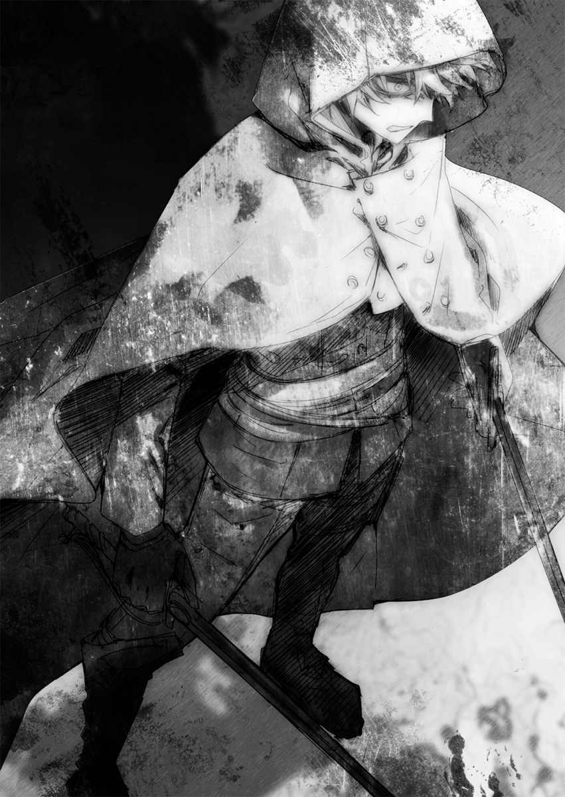
「納得いくか！ 兄様に非はなかった！ 国のためにあんたを教育していただけだ！ なのに、なんでっ！ なんで命を賭けてまで、あんたを助けないといけなかったんだ!!」
「うーん、よく知ってるね。で、全部君の言う通りなんだよねー......」
「現人神！ あんたが唆した以外にありえないんだ！ 兄様はあんたたちに利用されて、捨てられた！ そのせいで、反逆者の汚名を着せられている！ あの誰よりもフーズヤーズに尽くした兄様をよってたかって誰もが蔑んでる！ そんな理不尽なことがあってたまるか！」
興奮するライナーに対して、ラスティアラは冷静に答える。
「......吹聴したくないけど、ハイン・ヘルヴィルシャインは私という少女のことが好きだったんだよ。そして、ジークという少年のことも好きだったと思う。だから、その少年少女のためにハインは命を賭けた。騎士としてではなく、一人の人間として――」
粛々と故人の弟に、物語の顚末を告げる。
「きっとハインはその汚名を誇りに思ってる。そこに君が入り込む余地はないよ、弟君」
はっきりとライナーの怒りが不当であると断定した。それを聞いた彼は激昂する。
「その理由が一番納得いかないんだ！ もし、そうだとしても、それは唆したのと同じことだろうが!!」
「う、うーん。そうなのかな？ 聞き様によっては私たちが誑かしたようなものかも......」
ラスティアラはライナーの暴論に押されていた。あれだけはっきりと断定したのに、すぐに自信を失ってしまっている。
もしかしたら、そのハインという人に引け目でもあるのかもしれない。
その無茶苦茶な暴論を受け入れないように、僕は前に出ようとする。
しかし、その出鼻をライナーは挫く。
「ジークフリート・ヴィジター！ さらにおまえは僕の姉様までも奪おうとしてる！ また同じことを繰り返すつもりか!? そんなこと許すものか!!」
「え、えぇ......？」
僕が何かを言う前に妙なところを突かれてしまう。
ライナー君の姉様――おそらくはフランリューレ・ヘルヴィルシャインのことだろう。彼女の僕に対する異様な執着は知っている。そのせいで、言葉に詰まってしまう。
「ん、それは知らないなぁ......。カナミ、そうなの？」
その発言を聞き、ラスティアラは興味深そうに確認を取る。
「心当たりはあるような、ないような......」
「あるんだね......」
「ご、ごめん」
なんとなく自分に非があるような気がしたので、謝っておいた。
「まず、姉様を誑かすジークフリート・ヴィジターだけはここで消す！ 明日の試合の前に、いま、ここで!!」
ライナーはこちらに歩み寄る。そして、その手に持つ剣は凶器。僕たちの刃の潰れたものとは違う。
隣のラスティアラは困った様子で周囲を見回す。
「むう、こんな場所で殺し合いするのはまずいかな......」
深夜なので警備兵はいないが、もう少し騒げば人が駆けつけるのは間違いない。そうなったら面倒だ。
「仕方ない、ちょっと大人しくしてもらおうか。カナミ、素手でいけるよね？」
「ああ。たぶん、素手でもいけると思う」
ライナーのステータスは確認済みだ。はっきり言って『天上の七騎士』最弱だろう。
「とりあえず殴って、拘束しよう。頭を冷やせば、もう少しまともな会話ができるでしょ。なんだか偏った情報を吹き込まれているみたいだから、そこを正せば納得してくれるはずだよ。納得してくれたら、協力者になってくれるかもしれないしね」
僕とラスティアラは敵の力を測る能力がある。それゆえに、素手でも十分だと判断した。
刃の潰れた剣二つを『持ち物』に戻して、ライナーと相対する。
狙うのは昏倒だ。
「舐めるなよ......」
剣を抜こうとしない僕たちを見て、ライナーは手を抜かれていると解釈したようだ。別に手を抜いているわけじゃない。単純に『舞闘大会』の出場者として、闘技場外での抜剣を避けているだけだ。
そして、十分に距離を詰めたところで、ライナーは忌々しげに魔法を唱える。
「――《イクス・ワインド》」
ライナーの足元から突風が巻き起こる。一応、《次元の冬》は展開している。しかし、その魔法は魔法道具によるものだったため、邪魔することができなかった。
その突風に乗って、ライナーは宣言通り、まず僕に向かって飛び掛かる。
まるで大砲から放たれた砲弾のような異常な加速と飛翔だ。
飛来してくるライナーの手首を取ろうと僕は身構える。隣のラスティアラも横から手を伸ばそうとしている。どれだけ速かろうが、僕たち二人には全て見えているのだ。
「――《イクス・ワインド》！」
だが、ライナーもそれは承知の上だった。
空中で彼は風の魔法をもう一度唱え、無理やり方向転換を行う。直角に曲がったライナーはラスティアラに双剣で斬りかかる。
「え、こっち!?」
ラスティアラは驚きながら伸ばした手を引っ込めて、咄嗟に敵の剣を避ける。
しかし、続くライナーの身体ごとの蹴りまでは避けきれず、腕を十字に組んで受け止めるはめになってしまう。
すぐさまライナーは、ラスティアラを足場にして上空に跳び、逃げる。そして、空中で外套の中から数本のナイフを取り出し――
「――《カノン・ワインド》！」
魔法を唱え、下へ向かって放つ。先ほどの移動魔法よりも濃密な魔力だ。彼のつけていた指輪の一つが弾け壊れ、その手のひらから暴風が発生した。
「くっ、――《過密次元の真冬》！」
暴風によって落下速度の増したナイフたちに対し、最高の魔法を一瞬だけ展開しながら走り寄る。
敵の風を弱め、速度を緩め、ラスティアラに向かって降り注ぐナイフを摑み取る。しかし、ナイフは防げども、暴風の魔法自体は避けきれずに体勢を崩してしまう。
すぐに体勢を整え、次に落ちてくるであろう彼の身体を待ち構えるが――
「――《イクス・ワインド》！」
ライナーは風の魔法を使って、僕たちから離れていく。
最初に立っていた位置まで戻り、着地する。
その華麗な一撃離脱を前にして、僕とラスティアラは感嘆の声を漏らす。
「んー、厄介だなー。相変わらず、私たちって飛行タイプに弱い......」
「すごいな、風魔法って。こんな戦い方ができるのか......」
すぐにライナーを捕まえられると思っていた僕たちだが、風魔法の予想以上の力に考えを改めていく。
「いや、普通はできないよ。そもそも風魔法《イクス・ワインド》は移動用の魔法じゃないからね」
ラスティアラは少しだけ心配そうにライナー君へ話しかける。
「弟君、そんな魔法の運用してたら身体を痛めるよ？」
「このくらいの痛み、知ったことか......。僕は誰かの代わりに壊れるために生きている。だから、足の一本や二本壊れるくらいのことで、躊躇なんて......しないっ!!」
その心配を撥ね除け、もう一度ライナーは跳んだ。
彼の風の魔法により後押しされた機動力は厄介だ。それに、ラスティアラの話を聞く限り、自分の身体を痛めながら戦っている。すぐにでも止めないといけない。
僕は《ディメンション》で情報を拾いながら、ライナーの猛攻を迎撃しにかかる。
上空からの風魔法、双剣の斬撃、ナイフの投擲――絶え間なく続く全ての攻撃をいなしていく。隣のラスティアラも同じだ。
ただ、防げはしても一向に反撃ができない。
ライナーは徹底して、僕たちの手が届く距離で戦おうとしない。僕たちが近づけば、すぐに空へ逃げてしまう。
このまま耐えていれば彼が自滅するのはわかっている。けど、できればそれは避けたい。ラスティアラとの話を聞く限り、和解の目はあるはずだ。
僕は罠をしかけるしかないと考え、ラスティアラに指示を出す。
「ラスティアラ、ちょっと手伝ってくれ！――魔法《フォーム》！」
魔法の泡を大量に生成する。
当然、ライナーは正体不明の魔法の泡を、身に触れさせないように警戒し始める。
それを見て、ラスティアラは僕の狙いを察してくれたようだ。僕の魔法の泡に合わせて駆け出す。
次元魔法《フォーム》。正直、単体では意味のない魔法だ。つまり、この魔法の泡はライナーの動きを制限する囮。それをラスティアラもわかっている。
そして、僕とラスティアラは上手く魔法の泡を使って、ライナーをある場所に誘導する。
「かかった！――魔法《次元の冬・終霜》！」
一瞬だけだが、ライナーは噴水のある池に足をつけた。
その瞬間に、僕は池の水に冷気を浸透させ、ライナーの足ごと凍らせる。
池全てを凍らせるまでは叶わないが、彼の動きを止めることならばできる。
「ちゃーんす！」
そこへ近くで待機していたラスティアラが飛びかかる。
ライナーは慌てて魔法で離脱しようとするが遅い。
「《イクス・ワイン――っぐぅ！」
容赦のないラスティアラのボディーブローによって魔法は中断される。そして、そのまま関節技に移行される。ライナーはラスティアラに肩を外され、声を漏らした。
「うぅっ！」
そのまま、ラスティアラに背中から抱きかかえられ、とうとうライナーは身動きが取れなくなった。
「ふうっ。やっと捕まえた......。ほんとすばしっこいやつ......」
ラスティアラは馬鹿力でライナーの身体を締め上げる。
もはや、あの状態から巻き返しはできないだろう。
僕も安心して近づこうとして――《ディメンション》が異常な速度でこちらへ接近する人影を捉え、背筋が凍る。
「弟君も、ハインみたいに奇襲してれば勝機はあったのにねー。ハインと比べると、まだまだ稚拙だったね。それじゃあ、このまま――」
「ラスティアラ！ 危ない！」
安心しきっているラスティアラに僕は叫ぶ。
そして、見覚えのある剣がラスティアラの腕に向かって飛来する。
「――っ!?」
ラスティアラは僕の声を聞き、飛来する剣を察知して、ライナーを突き飛ばしつつ、その場を跳び離れる。
かつんと赤い剣が噴水の縁に突き刺さった。
同時にライナーは噴水の池に膝を突き、その隣に一人の青年が降り立つ。
その姿を見間違えようはなかった。
「――確かに少年だけでは足りないな。ならば、私が手を貸せばどうだろう？」
三十層の守護者ローウェン・アレイスだ。
ローウェンは投げつけた魔法鉄の剣を拾い、僕たちに突きつけながら笑った。
「ローウェン!?」
予期せぬ人物の登場に声をあげる。
ローウェンはそんな僕を見て、手を振る。そして、突き飛ばされたライナーを抱き起こして、外された肩を入れた。
「っ痛――！......あ、あんた、一体何者だ？」
「味方だ、双剣使いの少年。安心していい、私たちは利害が一致している」
そして、ライナー君の味方であることを宣言する。それはつまり、僕たちの敵であることを宣言したのと同じだ。ローウェンは話を続ける。
「二対一では分が悪いだろう？ ラスティアラの方は私が受け持ってあげよう。君はゆっくりカナミと戦うといい」
「な、どういうことだ......？」
ライナーは予想外の第三者の介入に驚き困惑している。だがローウェンは、そのライナーの疑問に答えることなく彼に背中を預け、ラスティアラの方を向いた。
――最悪の状況になった。
僕とラスティアラの間に、ライナーとローウェンが挟まっている。完全に分断されてしまった。このままでは、本当にローウェンとラスティアラがぶつかってしまう。
この状況をラスティアラも嫌ったのか、ローウェンに問いかける。
「なんのつもりかな、守護者......。あんたとは大会で戦うものだと思ってたけど......？」
「思ってもいないことを言う。このトーナメント表では、私はカナミともラスティアラとも戦えない。私は決勝までスムーズに上がっていけるが......君たちが準決勝で当たるのはまずい。非常にまずい」
「心配しなくとも勝った方が、あんたと戦うと思うけど？」
「噓だね。もし、準決勝でラスティアラが勝てば、ラスティアラは決勝に現れない。現れる理由がない。そして、君たちは二人でラスティアラが勝つための計画を立てている。......見過ごせない。ああ、その計画だけは見過ごせないな」
どうやら、ローウェンはトーナメントの配置が気に入らないらしい。
確かに、ローウェンが『最強』のグレンさんたちを倒して勝ち上がってきても、決勝には誰も現れない可能性が高い。ラスティアラは『腕輪』のことが解決すれば『舞闘大会』を戦い続ける理由がないのだ。
「だが、ここでラスティアラがリタイアすれば話は別だ。『腕輪』を破壊する術のなくなったカナミは、決勝で守護者ローウェンを倒さざるを得なくなる。それも本気で、だ」
しかし、あのローウェンがこんな強行手段に出るとは思わなかった。
「ここでラスティアラを倒し、決勝でカナミと戦う。それが私にとって最も好ましい形だ」
ローウェンは誠実な男だ。ルールに背くような人間じゃない。
その彼が不意打ちに近い真似までして、試合外で戦おうとしている。
「少し早いが、状況がいい。なぜか、この少年の居るところでは『魔石線』が機能していない。――全てを決するには丁度いい」
ローウェンが僕の記憶よりも、自分の願いを優先していたのはわかっていた。
しかし、こんな真似をするほど切羽詰まっているとは思っていなかった。
いや、僕が親友と呼んだローウェンならばそんなことはしないと信じていたかっただけなのかもしれない......。
「ローウェン......」
自然と名前を零してしまう。
「すまない、カナミ。これが私の決めた道だ」
ローウェンは振り向くことなく、僕に答えた。
そして、ライナーは背中を預けた正体不明の剣士に、怪訝そうに話しかける。
「信用はできないけど......――」
「別に信用は要らない。利用してくれるだけでいい」
「信用はできないけど、利用できるものは利用するさ。僕はジーク、あんたはラスティアラ。それでいいのか？」
「ああ、それでいい。行くぞ、双剣の少年」
二人は顔を合わせることなく、協力し合うことを決めた。
僕は焦りと共に、余裕がなくなったことを理解する。
「――魔法《ディメンション・決戦演算》！ 魔法《次元雪》！」
全力で魔法を構築しながら駆け出す。
同時にもう一方の戦闘も開始される。ラスティアラは腰に下げた剣を使って、ローウェンの剣を受け止めていた。
一刻の猶予もない。本気になったローウェンが相手なら、いつ何が起きるかわからない。
全力疾走でラスティアラの援護に向かおうとするが――
「あんたの相手は僕だ！ ジーク！」
ライナーが立ち塞がる。
「悪いが、もう手加減はしない！ ライナー！」
『持ち物』から『クレセントペクトラズリの直剣』を取り出しながら、叫び返す。
ライナーの双剣が僕に襲いかかる。それに対し、僕は全魔力を解放する。
「――魔法《過密次元の真冬》!!」
敵の魔法を妨害するのではなく、敵の動作の阻害に全魔力を費やす。
そのかつてない魔力の消費に、僕の動いた跡から魔法の粉雪が発生し始める。白い飛沫を散らしながら、僕は全力で剣を振る。
それをライナーは双剣で防ぎつつ、魔法の粉雪が地面に落ちるのを見て表情を変えた。
粉雪が落ちたところから、氷柱が上り立っている。先ほどの魔法の泡とは段違いの魔力がこめられていると理解したようだ。
さらに僕は魔力を強めていく。《次元雪》を生成して、敵の動きを制限する。《過密次元の真冬》で手足の動きを鈍化させる。
その多様な氷結魔法によって動きを鈍らせたライナーを倒すのは容易だった。
彼の双剣を最小限の動きでかわし、その内の一本を真横から斬りつける。『クレセントペクトラズリの直剣』という世界最高峰の魔剣を腹に受けた剣は、氷が砕けるように破壊される。
「なっ、兄様の剣が――！」
いとも容易く剣が壊れたことにライナーは動揺する。
その隙を突いて、もう片方の剣を握った彼の腕を取る。そして、剣の柄で腹を殴打し、そのまま背負い投げをしようとしたところで――《ディメンション・決戦演算》がライナー以外の魔力を感知する。
遠くから飛来してきたのは魔力でできた剣先。
それが、いまにも僕の足を刺そうとしていた。
「――っ!?」
背負い投げを諦め、僕はライナーから離れ、その剣先を飛び避ける。
そして、その魔力でできた剣先の発生源を確認する。
片手でラスティアラと切り結んでいるローウェンが、こっちを確認もせずもう片方の手から魔力の剣を伸ばしていた。
「ローウェン!!」
ライナーの無力化を邪魔されたことよりも、あのラスティアラを相手にそんなことをする余裕があることに恐怖する。やはり、単純な近接戦闘においてローウェンは最強だ。
「――が、ぁあっ！ ジークゥウ!!」
解放されたライナーは残った剣を握り締めて、再度僕に飛びかかろうしていた。
「少年、これを使え！」
こちらの状況を全て把握してたローウェンは、腰に下げていた別の剣を彼に投げる。
その剣を僕は知っていた。それを拾ったのは僕だ。
「おいっ、ローウェン！ それは！」
【ルフ・ブリンガー】
攻撃力７。精神汚染+2.00
折れた魔剣『ルフ・ブリンガー』――それがローウェンの魔力で見事に接着されている。いつもの『魔力物質化』とは違って、地属性の魔力を感じる。守護者特有の特殊な方法で修復しているようだ。
「少年、君ならば合うはずだ！」
ローウェンの投げた剣を、ライナーは空中で受け取る。
「厄介なものを！」
僕はローウェンに文句を言いながら、風を纏って飛び掛かってくるライナーを迎撃する。
「ジークゥウウ――!!」
『ルフ・ブリンガー』の魔力と風の魔力が混ざり合い、ライナーの魔力が凶悪なものとなっていく。ただ、《ディメンション》とステータスで感じ取る限りでは、不思議と彼は剣の魔力を制御下に置いている。僕が手にしたときのように、精神異常には陥っていない。少し興奮が増している程度だ。
――だが、それはそれで厄介だ。
禍々しい風と共に、ライナーは斬りかかってくる。『ルフ・ブリンガー』を『クレセントペクトラズリの直剣』で受け止め、もう一つの剣は身をかがめて避ける。
まだ彼の攻撃は終わらない。その勢いのまま、右足による蹴りが放たれる。
捕まえるチャンスだと思い、余っていた左手でその足を摑む。
蹴りの衝撃で手は痛んだが、これで投げ技に移れる。
そう思った瞬間――
「――《ワインド》!!」
足を摑んでいた左手が弾けた。
暴風が彼の足から発生し、僕の左手の薬指と小指が逆方向に折れ曲がる。その激痛に顔をしかめる。しかし、いまは戦闘中だ。すぐに痛みを頭の隅に追いやる。
「くっ......！」
そして、ライナーはその暴風を利用して、僕から距離を取った。
完璧なタイミングでの魔法だ。僕に摑まれると確信していたに違いない。
しかし、無茶が過ぎる。
「ぐぅ、ぁあ......！」
僕だけでなくライナーも痛みで呻く。僕の指だけでなく、彼の足も被害は甚大だ。
暴風で肉が刻まれ、おびただしい血が流れている。
それでも、ライナーは止まらない。再度、風の魔法を編み、僕に向かって突進してくる。足は損傷していても、その風の魔法がある限り、彼の機動力は損なわれない。
「滅茶苦茶だ......!!」
いますぐにでもラスティアラへ駆けつけたいが、目の前の決死の覚悟をした少年は下手をすればローウェンよりも厄介だ。
打開策を考える暇もなく、再三、ライナーの空中からの襲撃を受ける。
今度は『ルフ・ブリンガー』を鼻先でかわし、ライナーのもう一つの剣を『クレセントペクトラズリの直剣』で破壊する。しかし、彼に動揺はない。
すぐに壊れた剣を投げ捨て、自由になった手で殴りかかってくる。
それを左の肘でガードする。当然――また、風が弾ける。
「――《ワインド》ォオ！」
凄まじい衝撃が左腕を襲い、腕全体が痺れる。指が折れていることも含めると、もはや左腕は戦闘に使用できなそうだ。
いまの風の一撃で、また距離を取ったライナーを見る。いや、正確には自分の風の魔法でぐちゃぐちゃになった彼の拳を見る。
「その馬鹿な魔法の使い方は止めろ!!」
「それがどうした!? あんたを殺せたら、死んでも本望なんだ！ こっちはァア!!」
ライナーは同じ特攻を繰り返そうとする。
その繰り返す理由が僕にはわかってしまう。
僕とライナーの実力差は天と地の差ほど離れている。それを彼もわかってる。
だが、いまの特攻ならば、実力差を無視して僕にダメージを与えられる。自分の被害なんて二の次であるとライナーが思っている以上、それが彼の最善手になってしまうのだ。
ライナーは風魔法で急襲し、強引な素手の攻撃からゼロ距離での風魔法――それを繰り返す。
右手を代償に、左手を代償に、右足を代償に、左足を代償に――僕を攻撃し続ける。
血を撒き散らしながら死に自ら向かうような戦い方に、僕は吐き気がした。
正体不明の嫌悪感。さらに慣れしたしんだ頭痛。
僕の我慢は限界に達した。
「そんな軽々とっ、自分の生き死にを口にするな！ ライナァアア!!」
そして、僕も彼と同じように自分の身を省みない攻撃を選択する。『クレセントペクトラズリの直剣』を捨て、自由になった手で彼の身体を摑む。
「――ワ、《ワインド》！」
当然、ライナーはゼロ距離の風魔法を選択する。選択せざるを得ない。それだけが彼の通用する攻撃手段だからだ。
――風が弾ける。
僕の残った右手までも、指が逆方向に折れ曲がっていく。
薬指と小指、そして人差し指までもが折れる。
しかし、僕は残った親指と中指に力をこめて、ライナーを離さない。
「捕まえた！」
そのまま、身体ごとライナーにぶつかる。その勢いのまま、彼ごと近くの池に飛び込む。
「――魔法《次元の冬・終霜》!!」
すぐにライナーの身体ごと、池の水を凍らせていく。自分の身体が氷で拘束されていくのを感じた彼は、水から上がろうとする。しかし、僕は渾身の頭突きでライナーの頭を打ち、鳩尾に肘を落として止めた。
「グァッ、ハァ！」
ライナーは脳みそを揺らされ、肺の中身を全て吐き出す。彼の力が抜けていくのを確認し、僕は氷結魔法を完成させる。腰までの深さしかない浅い池だったが、ライナーの手足を束縛するには十分だった。
脳震盪を起こした彼を置いて、すぐに池から出る。
予想以上に時間を食ってしまった。命を賭けて特攻してくる相手がこんなにも厄介だとは思わなかった。親指と中指しか動かないため、軽いものしか持てなくなってしまったので『持ち物』から剣でなく短刀を取り出しながら、ラスティアラの救助に向かう。
「ローウェン!!」
名前を叫びつつ、人外の速度で斬り結んでいる二人に近づく。
声に反応して、ローウェンは後退した。スキル『感応』で、こちらの状況は把握できていたのだろう。目はこちらに向けず、残念そうに呟く。
「タイムオーバーか。ラスティアラ・フーズヤーズ、思っていたよりも手強い。いや、相性が悪いと言うべきか......」
「カナミっ、早くこっち！ ヘルプ！ こいつと戦うのは楽しいけど、今日はまずい！」
大量の斬り傷を負ったラスティアラが手招きする。
彼女の隣に移動して短剣を構える。それを見たローウェンは剣を鞘に収めていく。
「いいタイミングだと思ったが、少し焦っていたか......」
ローウェンは池に落ちたライナーに目を向ける。そして、こちらの警戒をしたまま、じりじりと彼の方に移動する。
その動きから、これ以上の戦闘を望んでいないことがわかった。
ラスティアラはそれを追おうとはしない。僕も追いたくない。
追えば、この場の誰かが死んでしまう。そう思わせるほどの力がローウェンにはある。
「もし、リーパーがいれば......。いや、スノウ君にさえ嫌われていなければ......」
ローウェンは呟く。
その姿は昨日の試合のときに見たものと同じだ。どこか弱々しく、寂しそうだ。
しかし、その表情をすぐにローウェンは消して、大きく跳び退く。噴水の池に着地して剣で氷だけを砕き、呻くライナーを肩に抱えて、その場から去ろうとする。
「待て、ローウェン！」
それを呼び止める。戦う気はないが、言いたいことは沢山あった。
その全てを要約して叫ぶ。
「――これで！」
僕は両手を広げて、この惨状を突きつけるように示す。
人外同士の斬り合いのせいで滅茶苦茶になった公園。凍りついた池と噴水。折れ曲がった僕の指。切り傷まみれのラスティアラ。重傷で動けない少年。
その全てを指して、僕は叫び続ける。
「本当にこれでいいのか!? ローウェンの望む『栄光』には、ここまでやる価値が本当にあるのか!?」
ローウェンを責める。その良心に訴えかける。
心優しいローウェンは僕の意図を全て読み取り、歯を食いしばる。
顔を歪ませ、申し訳なさそうに......しかし、真っ直ぐと僕の目を見て、答える。
「カナミ、手に入れてもいないものの価値なんてわかるはずがないさ。その価値を確かめるために私は戦うんだ。ああ、そうだ。全て確かめる。この大会の決勝で『英雄』と戦えれば、きっとその答えがわかる......」
僕の言葉は届いていた。けれど、それでも同じ道は歩めないと教えられる。
「悪いが、少年は私が貰っていくよ。放っておいたら、君たちか警備兵に捕まるからね」
ローウェンはライナーを抱えて、その場をあとにした。
それを僕たちは見送るしかなかった。《ディメンション》で南エリアまでローウェンが移動したのを確認して、身体から力を抜く。
隣のラスティアラも安全を確認してから、僕に話しかけてくる。
「あ、危なぁ......！ 何あれっ、守護者ローウェンは大会の優勝が目的じゃないの!?」
「いや、優勝が目的だよ。ローウェンは『名誉』や『栄光』といったものを望んでる」
「なら、なんで邪魔してくるの？ 私たちがいない方が、優勝しやすいのに」
純粋にラスティアラは不思議そうだった。
ローウェンが邪魔してくる理由を、僕は今日までのみんなの発言や行動と照らし合わせて導き出し、わかりやすく説明する。
「たぶん、ローウェンは僕を『英雄』と信じてるのかもしれない......。『舞闘大会』で『英雄の僕』を超えることだけが、自分の『未練』を晴らす唯一の方法だと信じてるんだ......」
事あるごとにスノウは僕を『英雄』扱いしていた。そして、ローウェンはそれを一度も否定したことはない。
三十層に辿りつき自分を召喚した僕を、いつもどこか期待したような目で見ていた。自分を召喚した相川渦波が『英雄』なのは当然だと言わんばかりだった。
どれだけ僕が違うと口で言っても、あの二人にとって僕は『英雄』なのだろう。
だから、こうもすれ違ってしまう......。
「ローウェンは周りが見えていないんだ。あいつの本当の願いは、もっと単純でささやかなものなのに......。きっと、それに自分だって薄々気づいているだろうに......！ それでも、ローウェンは『英雄』になるという使命感に振り回されて、僕に勝つことしか見えなくなってる......！」
今日の襲撃が、僕の推測を確信へと変えた。
もう間違いない。ローウェンは周りが見えていない。
竜討伐の宴のときのように、大切なものを見失っている。
「わかった。ローウェンの狙いは『舞闘大会優勝』と『カナミに勝つこと』の二つなんだね。......そんなに複雑じゃないから安心した」
僕の感情に任せた言葉をラスティアラは冷静に要約し、その対応策を考えてくれる。
「うーん、『舞闘大会』の管理者にいまの襲撃を訴えて、ローウェンを反則負けにでもしようかと思ったけど、やめた方がいいかなぁ......。あれの目的を完全に潰したら、逆に何してくるかわからなくなるし......」
彼女にとってローウェンは、ただの敵でしかないのだろう。僕のように感情に惑わされることもなく、淡々と対応策を考えていく。
「――よし、守護者ローウェンはこのまま『舞闘大会』に執着させとこう。で、ハインの弟君だけはリタイアさせよう。いまの戦いを管理者に訴えれば、『舞闘大会』中は『ヴアルフウラ』から追い出せるはずだし」
「そうだね。できれば、彼ともゆっくり話したいけど......。できれば『舞闘大会』のあとがいい......」
「『魔石線』が一杯の船で襲ってきた以上、言い逃れはでき......――あれ？」
ラスティアラは腰を落とし、床に延びている『魔石線』に手を当てて何かを探っていた。しかし、その表情が急に固まり、当てが外れたような表情になる。
「どうした？」
「あ、あれ？ 何も記録が残ってない？ いや、さっきまで『魔石線』が機能してなかったのかな......？」
「そういえば、ローウェンが『少年のいるところでは『魔石線』が機能していない』って言ってたね」
「弟君が事前に細工してたのかもね。はあ、道理で堂々と襲撃してくるわけだ......」
ラスティアラは溜息をつきながら立ち上がる。
そして、「帰ろ、帰ろ」と僕に帰室を促す。ローウェンの襲撃に備えて、ディアちゃんとセラさんを含めた四人で固まっておくつもりのようだ。
「そうだね。外は危険だから、部屋に戻ろう......」
また新手の敵が襲ってこないとは限らないので、急いで部屋に戻っていく。
その後、僕たちは朝まで警戒することを決めて、外出を控える。
ラスティアラは僕の指を治療したあと、当然のように警戒の任を僕に押し付け、ふかふかのベッドで眠りについた。
計画的にはそれが妥当とはいえ、少しだけ腹が立つものがある。
気持ちよさそうに眠るラスティアラ、ディアちゃん、セラさんを妬ましく思いながらも、僕は眠気と戦いながら《ディメンション》を展開し続け、一日を終えた。
◆◆◆◆◆
『舞闘大会』二日目の朝。
朦朧とした意識の中、ラスティアラたちが目を覚ますのを確認する。元気のいい挨拶と共に食事を取る彼女たちの横で、僕はぐったりとテーブルに突っ伏し続ける。
ラスティアラたちは十分に睡眠をとり絶好調だろう。
もちろん、僕は空腹と寝不足で絶不調だ。
二日目の午前中は、四人で準決勝までの行動計画を詰めていった。基本的には試合を早く終わらせ、すぐに合流して待機する予定だ。
入念な話し合いを終えて、僕は北エリアへ、ラスティアラたちは西エリアの闘技場へ向かう。
昨日と同じように、控え室に入り、係員に呼ばれたあと、闘技場に続く回廊を歩き出す。
あと少しで第三試合が始まる。
しかし、余り身体に力が入ってくれない。たった一日の徹夜だったが、想像していた以上に辛い。特にライナーとローウェンとの戦いが身体に疲れを残している。
手に持つ剣が何倍も重く感じられる。
身に纏う服は、まるで水を吸っているかのようだ。
歩いているだけで嫌な汗が流れ、喉が渇いて仕方がない。
さらに身体の魔力も頼りない。おそらく、ＭＰは枯渇寸前だろう。
この試合で使える魔法は限られている。
僕は少しの不安と共に、闘技場内に入っていく。
「――それではっ、『一ノ月連合国総合騎士団種舞踏会』北エリア第三試合！ 両チームのご紹介を行います！」
そして、司会の元気過ぎる声が聞こえてくる。
燦々と輝く太陽。僕を歓待する声。鳴り響く喝采。
そのどれもが、いまだけは煩わしかった。
「まずはフーズヤーズの代表、『天上の七騎士』チーム！ 今年は女性騎士のみの構成で参加し、話題独占中！ 見目麗しい彼女たちの試合の席は即日完売っ、集客においては完全独走状態です！『舞闘大会』運営側は嬉しい悲鳴をあげています！ さあ、舞台を彩る戦乙女たちは、どこまで勝ち進めるのか!?」
対戦相手の紹介が行われている。
向かいでは、三人の騎士たちが周囲に手を振っていた。
双剣を腰に下げた金髪ツインテール少女、フランリューレ・ヘルヴィルシャイン。
民族衣装のスカートを何重にも着こんだ女の子、ラグネ・カイクヲラ。
黒の全身鎧を身につけフルフェイスの黒兜を手に持った長身の女性、ペルシオナ・クエイガー。例の三人だ。
「対するはラウラヴィアの代表、『エピックシーカー』ギルドマスター、アイカワ・カナミチーム！ しかし、チームと言っても彼一人だけです！ 三対一になることさえも厭わない彼は、はたして愚者か英雄か！ 今大会のトリックスターとして注目されています！」
続いて、僕の紹介が行われていく。僕は苦笑いで、周囲に力なく手を振った。
「――そして、ここでニュースがあります！ なんとっ、つい先日、アイカワ・カナミ選手が西の竜を討伐したという情報が私の手元まで届いたのです！ この男は大会前に一体何をやっているのか!? やること全てが天然！『竜殺しの英雄』となった彼は、果たして逆エリアにいるもう一人の『竜殺しの英雄』グレン・ウォーカーまで届くのか!?」
ノリでろくでもない個人情報が流出されているのが聞こえてくる。
ことあるごとに僕を天然キャラ扱いするのはやめてほしい。甚だ心外すぎる。
しかし、そんな僕の気持ちとは裏腹に、『竜殺しの英雄』と聞いた観客たちはさらに歓声を大きくする。僕は顔を歪めながら、闘技場の中央に歩く。
「――それでは、両チームで試合方式を決めてください！」
反対側から近づいてきたペルシオナさんと向き合い、声を掛け合う。
「トーナメント表に恵まれたな、アイカワ殿。こうも早く当たるとは」
「今日はよろしくお願いします、ペルシオナさん」
「さて、試合のルールについてなんだが......」
「それについでですが、スタンダードルール以外を僕は認めたくありません。三対一の『武器落とし』でやりましょう」
ラグネちゃんとあらかじめ決めたルールを先に提示する。
それを聞いたペルシオナさんは少しだけ眉をひそめた。
「......知らない仲じゃないんだ。そんな味気ないルールではなく、もっと凝った趣向でも私は構わないのだが？」
「いいえ、必要ないです。何も賭けず、スタンダードな試合を望みます」
「しかし、せっかくのお祭りだ。国に貢献するギルドのマスターとして、このお祭りを盛り上げようと思わないか？」
やけに食い下がってくる。ラグネちゃんの言っていた通り、僕から何かを引き出そうとしている節がある。
「すみません。僕はギルドの代表としてこの『舞闘大会』に参加してるわけではないんです。とても私的な理由で戦っているだけですので......」
「ふむ。では私たちが勝っても――」
「何もありませんね」
言い切る。それを聞いたペルシオナさんは困ったような顔をする。
こうも僕が頑ななのは予想外だったようだ。先の二回戦のせいで、流されやすいやつだと思っていたのかもしれない。
僕とペルシオナさんの間に沈黙が流れる。
そこへフランリューレが残念そうな表情で割って入ってくる。
「そこまで言うのでしたら、無理強いはできませんわね......」
しかし、すぐに明るい顔に切り替えて、びしっと手をこちらに伸ばしながら宣言する。
「――ただ、こちらは三人で斬りかかっておいて何もなしというのは心苦しいですわ！ ですので、もしそちらがわたくしたちに勝てれば、なんとっ、フーズヤーズの騎士に叙任してあげますわ！ ふふっ、とても誉れ高いことですわよ!!」
「それ、勝っても僕が損するよね......？ 丁重にお断りさせて頂きます......」
「えっ!? だ、駄目ですの!?」
「駄目です」
むしろ、どうしてそれで僕が頷くと思うのだろうか。やはり、この子は苦手だ。
「で、でも、勝っても負けても何もなしだなんて、そんなのつまらないですわ！」
苦手だけれど、フランリューレ・ヘルヴィルシャインにはどうしてもやってもらいたいことがある。僕は妥協する振りをして、朝に考えた条件を出す。
「けど、確かに何もなしってのはつまらない話かもしれないね......。なら――」
せっかく摑んだペースを目の前の彼女に持っていかれる前に、話を片付けに行く。
「僕が勝ったら......あとで僕の部屋まで来て欲しい。君に話したいことがあるんだ」
「え、わたくしがジーク様の部屋に......？」
姉である彼女に、昨夜のライナーの襲撃を話しておきたい。そして、できれば二度と襲撃のないように抑制してもらいたい。彼女の好意を利用する形での誘いに良心は痛むが、それでもライナーの一件を迅速に解決するためには必要だと思った。
「い、いいでしょう！ それでいきましょう！ やりましょう！ むしろ、ウェルカムですわ！ さあ、早く試合を――!!」
その条件を理解したフランリューレは、突然興奮し始める。
「あ、うん。早くやろうか」
彼女のテンションの急上昇具合に少しだけ怯んでしまうが、賭けの内容が決まったことに一安心する。変な条件を突きつけられる前に戦えそうだ。
「勝手に了承するな、フラン......」
後方で見守っていたペルシオナさんがため息をつきながら、部下の頭をはたく。その一撃で我に返ったフランリューレは、気まずそうな顔でラグネちゃんの後ろに逃げる。
ペルシオナさんはそれを見逃し、こちらに話しかける。
「......しかし、面白い提案をする。ならば、アイカワ殿。私たちが勝てば、私の部屋で話を聞いてくれるのかね？」
「それが妥当なところでしょう」
「悪くないな。小一時間ほど君を口説く時間ができると解釈していいか？」
「ええ。こちらも小一時間ほど、フランリューレさんを借りるということで」
「よし、決まりだ。一対一では敗れたが、『天上の七騎士』の真価は多人数で発揮されることを教えてやろう」
どうやら、僕はペルシオナさんとも戦ったことがあるらしい。過去の僕は一体何をやっていたのか、本当に気になる。
こうして、全てのルールは決まり、司会はそれを全体に伝える。
「――なっ、なんとっ、カナミ選手！ あのヘルヴィルシャイン家のご息女を部屋に連れ込もうとしています！ 前試合で天然ヘタレの称号を手に入れた彼ですが、どうやら事情があったようですね！ 意中の女性が大会に参加していたのなら、あれも仕方ないことでしょう!!」
ルール決定を確認した司会は、それを全会場に改めて伝えていく。
「というか、カナミ選手！ ペルシオナ選手からもアプローチされている気がします！ いやあ、彼、大人気ですねっ！ では負けた方がお持ち帰りされるという条件の上、スタンダードルールの『武器落とし』で試合を始めましょう！」
お、お持ち帰りって......。
司会の言葉の選択から悪意を感じる。盛り上げるのが仕事とはいえ、それでももう少し自重して欲しい。
ほら、あのお堅そうなペルシオナさんが顔を赤くして怒ってる......。
その後、僕たちは『武器落とし』の条件に当てはまる武器を司会に伝えていく。それぞれが愛用の剣を手に持っているので決めるのは早かった。そして、僕は油断なく、相手の武具を『注視』する。
【装飾用の宝石剣】
攻撃力１
驚くことに、ラグネちゃんの剣は張りぼてだった。
しかし、ペルシオナさんとフランリューレの剣は文句なしの名剣だ。僕の自慢の『クレセントペクトラズリの直剣』にも匹敵する。
さらに、その名剣たちよりも異常な力を纏う武具もある。それは――
【黒鎧アルフェンリイト】
防御力６ 対魔力７
装備者の速さに−10％の補正がかかる
ペルシオナさんの鎧だ。間違いなく、この世界で最高レベルの代物だろう。普通に剣で戦っていては、彼女にダメージは与えられないかもしれない。
他にも細かい武具を挙げればきりがない。三人とも、大量の魔法道具を服の中で身に着けている。おそらく、僕の初戦の情報から対策を練っているのだろう。
これからの戦いは全て、魔法道具を使われると思った方がよさそうだ。
そう『注視』しながら戦術を練り直していると、途中でラグネちゃんと目が合う。
「お、お兄さーん、せっかくの私の忠告をー......」
ラグネちゃんは自分の努力が無意味になったことを嘆いていた。
僕が主体になって決めたとはいえ、結局賭けが行われてしまったことを謝る。
「え、えっと......本当にごめん。ちょっと事情が変わったんだ。まあ、大丈夫だよ。忠告通り、本気でやる。だから――」
昨日と違い、この試合に一切の油断はない。
負けられない理由がある。アイカワ・カナミとしての全てをぶつけて勝利するつもりだ。
「――僕は絶対に負けない」
ゆえに断言する。
もちろん、絶対に負けない戦いなんて存在しないことも認識している。それでも、僕は絶対に負けないと誓った。
その僕の固い意思を感じたのか、ラグネちゃんは不承不承といった様子で頷いて引き下がっていく。
それを最後に試合前の話は終わり、僕と『天上の七騎士』チームは距離を取り、
「それでは『一ノ月連合国総合騎士団種舞踏会』北エリア第三試合、開始します！」
三回戦が始まる。
「――魔法《次元の冬》!!」
試合開始と同時に、僕は魔法を構築しながら更に距離を取る。
開始と同時に攻めて一瞬でけりをつける自信はあった。しかし、この試合は万全を期して慎重に戦うつもりだ。
ラグネちゃんは僕との戦いの経験があると言った。ならば、奇襲は通用しない確率が高い。情報収集を選択する方が安全だろう。
遠くから『天上の七騎士』チームの様子を見る。
彼女たちも、僕と同じく補助魔法をかけていく。
ステータスを再度『注視』して、彼女たちの『状態』の変化を確認する。
【ステータス】
状態：身体強化0.70
全員に同じ強化魔法がかけられていく。その魔法はペルシオナ・クエイガーによる《グロース》。内部に浸透するタイプの魔法のため、妨害はできない。
彼女たちの身体能力の上昇具合を数値で細かく把握していく。
戦う前に相手の力量を推測できることは大きなアドバンテージだ。僕の世界のゲームでも、ボスのＨＰや攻撃力を知っているのと知らないのとでは、難易度が大きく変わる。
僕の武器は剣と魔法だけじゃない。『注視』による情報収集能力、『持ち物』システムによる対応力。パリンクロンすら驚く思考速度と分析力に、ローウェンが人外と評した観察力と理解力。これらも全て、僕の武器なのだ。使わない手はない。
「――《グロース》。これで全員だな。あとは例のフォーメーションで攻めるぞ」
ペルシオナさんを中心に三人は陣形を組み始める。
「了解ですわ」
「了解っす」
ペルシオナさんが一番前に出て、その斜め後ろに残りの二人が並んだ。
そして、歩調を合わせ、三人は同時に走り出す。
その全てを観察し、分析し、記憶していく。三人の筋肉の収縮、重心の推移、眼球の動き、発した言葉、細かな表情の変化、体温、動悸――どんな些細なものであろうと、彼女たちが発した信号の全てを拾い、記憶していく。
ローウェンの技を真似たときと同じ要領だ。ただ、今回は真似るのが目的じゃない。攻略することに集中する。
僕は向かってくる三人に対し、剣を構えて迎え撃つ。
「――《レイス・ワインド》！」
まず、フランリューレが風の魔法を放ってきた。かまいたちに似た真空の刃だ。
普通ならば視認できない魔法だが、僕の次元魔法ならば正確に捉えられる。
僕は余裕を持って風の刃を避ける。さらに、その魔法の陰から走ってきていたラグネちゃんの追撃――スキル『魔力物質化』で伸びてきた魔力の剣も避ける。
一度、ローウェンに同じスキルを見せて貰っていたおかげで余裕を持って避けられた。やはり、事前に相手のスキルがわかるというのは強い能力だ。
そして、最後に待っているのはペルシオナさんの黒い大剣。彼女は筋力に特化したステータスの持ち主だ。その一撃をまともに受ければ、ただではすまない。
横に振りぬかれた黒い大剣を、僕は顎を引いてスウェーバックのように避ける。
「――ふうっ」
僕は息を吐きながら、後方に逃げる。
見事な三連撃だった。確かな訓練の跡を感じさせる阿吽の呼吸だ。
何より、その三連撃が終わったあとの追撃が速い。
後退した僕に、目の前の三人は新たな三連撃を繰り出す。
今度はラグネちゃんの魔力の剣が最初だった。僕の動きを彼女が制限し、そこにペルシオナさんの重い一撃が加わる。今度の横薙ぎは僕の足を狙っていた。しかし、明らかに当てるつもりのない攻撃だ。おそらく、僕を空中に跳ばせることが目的で、そこへフランリューレの魔法を直撃させる予定なのだろう。
僕は大きく跳ばず、三連撃目の魔法を綺麗に避ける。
《ディメンション》によって得られる情報を吟味し、最善の選択を取り続けることで回避を成功させ続ける。そして、彼女たちの連撃を受けていくうちに、少しずつ不眠で淀んでいた思考力が研ぎ澄まされていくのがわかる。
疲れが一周回って、逆に清々しい気さえしてきた。
徹夜明けの妙なハイテンションに似ている。どこまでも戦いの読みが冴え渡っていく。
敵の攻撃を避けていくうちに、観察していくうちに、僕の分析能力が戦いの勝率を引き上げていくのがわかる。時間をかければかけるほど、敵の動きを正確に予測できるようになっている気がする。
避け続けて、時間をかけて勝率を百パーセントに近づけていく作業を地道に行っていく。
三人の連携攻撃は、本当に見事なものだ。後のためにも、ずっと見ていたい衝動に囚われそうになる。
けど、そうもいかない。
本気でやると宣言したし、ラスティアラに時間をかけるなとも言われている。
――敵三人の分析を終えて、勝率百パーセントを確信し、僕の反撃の時間が訪れる。
「これで詰める」
僕は勝利宣言を呟き、防戦から一転し、一歩前に出る。
当然、目の前の三人は互いに目を合わせることもなく、一歩近づいた僕に新たな連携で攻撃してくる。そこに淀みもズレも一切ない。
『天上の七騎士』チームの最大の強み。それは高度な訓練によって構成されたチームプレイだろう。逆に言えば、そこを崩すことができれば確実に勝てる。
「――魔法《次元の冬》」
なけなしのＭＰを使って、魔法の冬を展開する。
《次元の冬》の空間把握能力は限界まで削いで、空間を冷やすことだけに特化させる。そして、その冷気をフランリューレだけに集中していく。
動きを阻害するまでには至らない冷たさだろう。だが、違和感は感じるはずだ。
例えば、剣を抜く動作ならば、愛剣でなく新品の剣を触っていると錯覚する程度の違和感。その違和感は剣を訓練していれば訓練しているほど大きい。
結果として、三人の連携が僅かに崩れる。
僅かにフランリューレの動きのリズムが遅くなっただけだったが、見事な連携ゆえに、それが目立ってしまう。
「おい、フラン！」
「い、いえ、総長、妙に冷たくて――！」
当然、周囲がフォローしようとする。
ペルシオナさんはフランリューレの状態を把握し、僅かに遅れる彼女に合わせて立ち位置を変えた。ラグネちゃんも僅かに攻撃のテンポを遅らせて、周囲に合わせる。
それはチームプレイとして理想的な対応力だった。
けれど、残念ながら、僕の魔法と絶望的に相性が悪い。
フランリューレに合わせて二人が速度を落としたところで、彼女への《次元の冬》での干渉を全て打ち切る。
すると、阿吽の呼吸で動いていたからこそ、今度はフランリューレが突出してしまう。
そこを僕は狙う。
当然、慌てて他の二人が前に出て助けようとする。
しかし、次はラグネちゃんだけ遅れている。
それも当然だ。今度は彼女だけに《次元の冬》の冷気を当ててるからだ。
「ラグネっ！」
「今度はこっちみたいっす！」
ラグネちゃんは叫びながらも冷静に、ずれた動きを速めようとする。
彼女たちの綺麗なフォーメーションが崩れていく。
当然だが、次に僕はフランリューレとペルシオナさんのリズムを大きく遅らせて、上手くラグネちゃんだけを突出させる。まず倒すべきは底知れないラグネちゃんからだ。
「――げ」
僕の傍に一人だけで飛び込んでしまったラグネちゃんは女の子らしからぬ声を出す。そこに渾身の一閃を放って、『魔力物質化』で作った剣を下から跳ね上げる。続いて、ローウェンから教わった武器弾きの技で、ラグネちゃんの張りぼての剣を叩いて落とす。
――これでラグネちゃんは終わり。
「ちっ――！」
「ああっ、ラグネさんが！」
味方がやられたのを見た残りの二人が、左右から斬りかかってくる。それに対し、僕は地面に落ちたラグネちゃんの剣を拾って、双剣で二人の剣を受け止めた。
片方にはありったけの魔力を注ぎ込み、もう片方にはありったけの筋力をこめる。
《次元の冬》の冷気をペルシオナさんに襲わせて動きを鈍らせ、フランリューレの方は力任せに遠くへ弾き飛ばす。
すぐに僕は重装備のペルシオナさんを置いて、遠ざけたフランリューレに向かって駆け出す。ペルシオナさんを放置して、先に彼女を終わらせるつもりだ。
僕は遠くで体勢を崩していたフランリューレに肉薄し、素手で剣を奪おうとする。しかし、彼女の手首を摑んだ瞬間、まるで引き込まれるように僕の身体のバランスが狂った。
最低限の《ディメンション》が、その全ての動きを捉えている。フランリューレは腰を落とし、手の力を抜き、沈み込むことで、僕の力を利用してバランスを崩してきたのだ。フランリューレはもっと魔法使い寄りの騎士かと思っていたが、やはり騎士と名乗る以上は最低限の体術を持っているようだ。
この力の流れのままに動けば、次の瞬間には一本背負いのように投げられてしまうだろう。咄嗟に僕は《ディメンション・決戦演算》で、その力の流れを分析する。そして、投げられる勢いに逆らわず、力の流れに乗って、宙で一回転して地面に着地してみせる。
「え？ そ、そんな!?」
フランリューレは奇妙な動きで投げをいなされたことに驚く。
その隙を突いて、僕は左手だけの力で彼女を上空に放り投げる。こっちは体術も何もないステータスの『力』の暴力だ。
「え、ええぇええ――!?」
驚きの声をあげて、フランリューレは空を飛ぶ。
力に任せた強引な投げ飛ばしだったが、かなり有効だったようだ。フランリューレの手首を強く握ったため、その痛みで彼女は剣を手放していた。
単純な分断策のつもりだったが、これでフランリューレもリタイアだ。
フランリューレは投げた僕も引くくらい、天高く飛び上がっている。それを見届け、背後から迫る最後の騎士、ペルシオナさんを迎え撃つ。
もう完全に一対一だ。もはや小細工は必要ないだろう。
その僕の気概を、正面のペルシオナさんも理解しているようだ。
獣のような雄たけびと共に斬りかかってきた。
「――《ディメンション・決戦演算》！」
黒い大剣と僕の剣がぶつかり合う。
無論、後ろに弾かれるのは僕だけだ。
いまの僕では彼女の11.00もある『筋力』に対抗できない。大きな隙を作ってしまう。
体勢の崩れた僕に、二撃目が襲い掛かってくる。
一対一ならば、どう避けても問題はない。身を限界まで捻って、それをかわす。
そして、その捻る勢いのまま、真下から剣を斬り上げる。
黒鎧の腹を叩き、鈍い金属音が鳴った。衝撃で彼女の身体が少しずれたものの、鎧自体は無傷だ。やはり、この黒鎧を破壊するのは楽なことではなさそうだ。
すぐに僕は狙いを鎧そのものでなく、鎧の隙間に変える。攻撃してくるペルシオナさんの剣を紙一重でかわしつつ、隙間に剣を刺す。
「くっ――！」
ペルシオナさんは呻く。しかし、それでも僕は手を止めない。
指を守るグローブのようなものの隙間、籠手と鎧の隙間、肩の関節の隙間――剣を持っている右腕を執拗に斬りつける。
そして、止めにペルシオナさんの大振りに合わせて剣を叩いた。斬り刻まれた右腕では支えきれず、彼女は大剣を手放してしまう。
「......くっ。やはり、一対一では敵わないか」
剣を弾かれたペルシオナさんは苦々しく呟き、膝を地面に突いた。
最後の仕上げに、僕は意識を空へと向ける。時間にして数秒ほど滞空していたフランリューレが帰ってくるところだった。
「フランリューレ！」
叫んで声をかける。
少し涙目になっているフランリューレと目が合う。
僕は剣を地面に突き刺し、受け止める意思を伝える。彼女も頷いて応えてくれた。
《ディメンション》で着地点を割り出し、僕は全力で走り――そして、落ちてきたフランリューレを両手で柔らかく受け止め、お姫様抱っこの状態でくるりと一度だけ回って、走った勢いを殺した。
「ふう」
一息つくと共に、腕の中のフランリューレと目を合わせる。
できるだけ柔らかく受け止めたつもりだが、どこか痛いところがあるのかもしれない。フランリューレは潤んだ目をこちらへ向け続けていた。
「えっと、大丈夫......？」
とりあえず、確認を取る。
「ジ、ジーク様ぁ......――痛ぁ！」
唐突に抱きつこうとしてきたので、とっさに手放してしまった。
「ごめん、つい......」
フランリューレへの苦手意識が身体を勝手に動かしていた。尻餅をついて痛がる彼女に僕は手を伸ばす。
「......い、いえ。大丈夫ですわ。あのまま、地面に落ちるよりかはマシですので」
フランリューレを引き起こしたところで、僕は周囲を確認する。
丁度、状況を確認し終えた司会が宣言するところだった。
「――け、決着！ 速すぎて武器を落とした順番がわかりませんでしたが、厳正な審査の結果、最後に武器を落としたのはカナミ選手とわかりました！ しかも、彼が武器を落としたのは、落ちるヘルヴィルシャイン嬢を抱き止めるためだったみたいですっ！ その紳士的な態度に、会場の全女性が感激しております！」
またもや悪意を感じるアナウンスだった。
抱き止めたあと、すぐにフランリューレを乱暴に落としたのをなかったことにするつもりだ。その方が盛り上がると思っているのだろう。
「文句なしです！ アイカワ・カナミ選手、勝利条件を満たしました！ 四回戦進出！」
そして、試合が終わる。
落ちた武器を鞘に入れたラグネちゃんとペルシオナさんが、穏やかな顔でこちらへ握手を求めてくる。
「いやぁー、見事に負けたっす。三度目の正直はなかったっすねー、くそー」
口では憎まれ口を叩いているものの、そこまで顔は悔しそうじゃない。
「いや、ラグネちゃん、全然本気じゃなかったでしょ......」
僕に本気を出せと言っておきながら、間違いなくラグネちゃんは手を抜いていた。
僕の中で、彼女の評価は高い。目下の強敵であるローウェンに似ているというのもあるが、その飄々とした態度が底知れぬものを感じさせる。言葉にし難いが『数値に表れない強さ』のようなものを感じる。
その僕の追及をラグネちゃんは笑って誤魔化し、ペルシオナさんが健闘を讃えてくれる。
「見事だ、アイカワ殿。まさか、この条件で真っ向から打ち破られるとはな......」
「いえ、そちらも見事な連携でした。崩すのにかなり神経をすり減らしました」
僕たちは手を握り合って、お互いに讃え合う。そのペルシオナさんの誠実な姿勢には落ち着く。妙なわだかまりがなければ、彼女とは仲良くなれそうだ。
「そうか......。では約束通り、うちのフランリューレを連れていくがいい。勝者の報酬だからな......」
「はい。遠慮なく、お話を――」
ただ、残念なことに、僕のペルシオナさんに対する好印象はここまでだった。
「そして、そこでフランに告白するなりなんなり、好きにするがいいっ！ 別に結婚を申し込んでも構わないからな。フーズヤーズが全面的にバックアップする。ラウラヴィアが何を言ってこようと、君を『天上の七騎士』にする準備がこちらにはある！」
「ちょ、ちょっと、そういうのやめてくださいっ！ ほんとに!!」
ペルシオナさんは司会の持つマイクに入るような絶妙な声量で、とんでもないことを言い出した。案の定、それを耳にした司会は興奮して叫ぶ。
「――やはり、部屋に連れ込んで告白するつもりだったのか、カナミ選手！ しかも、なんとお国からの許しが出てしまった！ 流石はラウラヴィアの英雄様だ！」
そろそろ、最大の敵はこの司会のような気がしてきた。
「しかし、この大舞台で勝利した彼を止めることはできませんね！ 彼ほど面白い出場者が彼女持ちになるのは惜しまれますが、拍手をもって送り出しましょう！ さようなら、カナミ君、フランリューレ様！ あとはごゆっくり！」
この司会、たった二試合で妙に親しげだ......。しかも、僕に対してだけ......。
「はあ......」
僕は溜息をついて、この惨状を憂う。
その隣で、ペルシオナさんも溜息をついていた。
「はあ、ラグネ......。これで私はできる限りのことはしたよな......？」
ようやく面倒な仕事が終わったと言わんばかりに愚痴までこぼし始めていた。
「はい、大丈夫だと思うっすよ。不器用なりにやれることはやってたように見えたっす」
「そもそも、こんな任務、私には無理だったんだ......。こういうのはパリンクロンとホープスに任せきりだったから、てんで駄目だ。というわけで、私はフーズヤーズに戻って、騎士の調練に移る。あとは任せた......」
「りょーかいっす」
ペルシオナさんは一足先に闘技場から出ていき、ラグネちゃんがフランリューレの手を引いて僕に声をかけてくる。
「それじゃ、行きましょうっす。カナミのお兄さん」
「え、ラグネさんもついてくるんですの......？ あ、あれ......？」
その後、囃したてる司会を置いて、僕はフランリューレとラグネちゃんを連れて闘技場から出ていく。背中から観客たちのとても不本意な話し声が聞こえたりしたが、その全てを無視して自室まで向かった。
◆◆◆◆◆
三回戦を終え、移動の途中、戦いで高まっていた集中力が切れる。
同時に、いままで陰に潜んでいた不調の全てが返ってくる。高密度の吐き気と眠気が襲い掛かり、眩暈で足元がふらついてしまう。
お腹が空いて堪らない......。
喉も渇く......。早く水が飲みたい......。
胃液が喉に張り付いて気持ち悪い。舌の奥から酸味を感じる。鼻の奥がつんと痛む。
人生で最悪の気分だ。いや、過去の記憶がないから最悪とは断定できないが......しかし、こんなにも苦しいのだ。これ以上の苦しみなんてないだろう。
口元を押さえながら、よろよろと歩く。
隣を歩くフランリューレは、その僕を見て大声をあげる。
「ど、どうしましたのっ、ジーク様！」
「大丈夫......。ちょっと疲れただけだから......」
フランリューレが近づいてくるのを手で制する。
そして、無言で歩き続ける。
僕のただならない雰囲気を感じ取り、誰も何も喋ろうとしなかった。
黙々と歩き続けた僕たちは北エリアの高級宿泊船に辿りつく。フランリューレたちとの話し合いは、最初に訪れた『舞闘大会』側が手配してくれた部屋を使うつもりだ。
後ろのフランリューレが妙にそわそわしているので、早めに話を終わらせよう。
手配された自室の部屋の扉を開ける。
「おかえりだ、カナミ！」
その部屋の中には先客がいた。
ディアちゃんがソファーに座って、僕の帰還を歓迎してくれる。朝、ここでフランリューレと話をする予定だと言ったので、心配してここまで来てくれたようだ。
しかし、異様に早い。
フランリューレたちとの試合に、さほど時間はかけていない。戦う前に少し長話したくらいだ。どうやら、それ以上に早くラスティアラチームは試合を終わらせたようだった。
「ディアちゃん......？ ラスティアラたちは......？」
「ラスティアラはセラと一緒に外を散歩してる。話してる間、警戒するとか言ってた」
「そっか......」
ラスティアラは周囲の警戒を請け負ってくれたようだ。
これで僕はフランリューレとの話に集中できる。
「お話って二人きりじゃありませんのね......」
フランリューレは同席者が居ることに落胆していた。
なぜか、その落胆の声にディアちゃんが答える。
「当たり前だ、金髪」
「というよりも、ディア。なんであなたがジーク様の部屋に居るんですの？ もしかして、一緒に寝泊まりを――!?」
「ふふんっ。俺とカナミは仲間であり、運命共同体だからな。いつも一緒だ」
「そ、そんな......！......けど、なぜかディアなら許せる気がしますわ。なんだか、手のかかる弟か妹みたいですの。絶対に恋愛に発展しないタイプですわ」
「な、なんだとこらぁ......。それは俺の身長を馬鹿にしてるのか......」
放っておいたらこのじゃれあいは終わらないと思い、口を挟む。
「待ってくれ。先に僕に話をさせてくれ......。とても大事なことなんだ」
できれば早く話して終わらせたい。頭痛のせいか、その気持ちはより一層強い。
それに、この話し合いの場には時間制限がある。頼んだら何日でも居座ってくれそうなフランリューレだが、試合の条件では小一時間と決まっている。
「そうだな......。悪い。カナミも金髪もこっちに座って、ゆっくり話してくれ」
ディアちゃんは落ち着いて、席に僕たちを案内する。その殊勝な態度を見て、その怒りの矛先をフランリューレは収める。
「あ、カナミはこっちに来てくれ。回復するから」
自分の隣をぽんぽんと叩いて、ディアちゃんは早く座るように促す。
身に纏う魔力が暖かな光に変質している。どうやら、回復魔法をかけてくれるようだ。
「......いや、別にいいよ。疲労を溜めるのが、いまの僕の役目だしね」
「どうせ、回復魔法じゃ疲労は回復しないんだ。外傷を回復するだけだ。ほら、こっち」
「いや、本当に大したダメージは食らってないんだけど......」
「念には念を入れてだ」
ディアちゃんは拒否する僕の手を摑んで、強引に隣へ座らせた。そして、彼女の魔力が流れ込み、身体のかすり傷が消えていく。
その間、ぎゅっと僕の手を握って離そうとする気配がない。試合の間、ちょっと離れていただけで、また精神状態が戻ってしまっている気がする。
当然のように、回復が終わったあともディアちゃんは手を離そうとしなかった。この状態のまま、話をする気満々だ。
向かいのフランリューレとはテーブルを挟んでいるので気づかれていない。
もう仕方がないので、このまま話に入ろうと思う。色々と考えるのも億劫になってきた。
「それでジーク様。お話ってなんですの？ この様子からすると、私の期待しているものと違うような気がしますが......」
回復が終わったのを見て、フランリューレが話を進める。
「そうだね。えっと、君の弟のライナーのことなんだけど......。最近、彼が何してるか知ってる？」
まず彼の名前を出す。それを聞いたフランリューレは首をかしげた。
「ライナーですか？ ライナーなら『舞闘大会』の警備員をボランティアで行っていたはずですわ。私たちが『舞闘大会』に出ている間、暇だからと言って......」
「警備員としてか......」
その伝手で『魔石線』の機能を停止できていたのかもしれない。だとすれば、随分と前から襲撃を計画していたことになる。
「フランリューレさん、落ち着いて聞いて。実は昨夜、彼に命を狙われたんだ......」
「へ......？」
フランリューレは何を言われたのか、すぐには理解できなかったようだ。
「ライナーは僕がのうのうと生きているのを許せないらしい。それで、兄ハインの代わりに僕を殺そうと襲ってきた」
「え......？ そ、それは本当ですの......？」
「本当だ。僕の知り合いも証言してくれる、間違いない」
「なんてことを......！」
弟の犯した凶行を聞き、フランリューレは震える。その様子を見る限り、本当にライナーからは何も聞いていなかったようだ。
「だから......できれば、フランリューレさんから彼を止めて欲しいんだ」
「それはもちろんですわ！ すぐにでも止めてみせます！」
できれば戦うことなく姉の説得で終わって欲しい。
そう願いながら、フランリューレに頼んだ。そして、話が一区切りついたところで、後ろに控えていたラグネちゃんが質問してくる。
「......お兄さん。本当にライナーはハインさんの仇を討とうとしていたっすか？」
「ああ、本人がそう言っていた」
冷静にライナーの目的を確認してくる。それを聞いたフランリューレは声を絞り出す。
「ハインお兄様の仇......？ しかし、あれは......、どうしようもないことでしたわ......」
「ライナーはそう思っていないみたいだった。彼は僕とパリンクロンとラスティアラの三人を、はっきりと敵視していた」
そこで考え込んでいたラグネちゃんが呟く。
「その三人を......？ ライナーはあの日のことを知っているっぽいっすね。妙っす......」
何か引っかかることがあるらしい。
そして、すぐにフランリューレの手を取って、移動を促す。
「フランちゃん、すぐにでもライナーを探すっす」
「え、ええ。そうしましょう。早く、あの馬鹿を見つけないと......」
身内の凶行を聞き、二人は急いでライナーを探しに行こうとする。
その成功率を少しでも上げるために、僕は助言する。
「あっ、西エリアは僕の感知魔法で見張っているから、ライナーが潜伏しているとしたらそこ以外のエリアだと思うよ」
「わかったっす。ライナーのこと、教えてくれてありがとうっす。ではではっす」
「ありがとうございました、ジーク様！ このお詫びはいずれまた......！」
そして、そのまま扉を荒々しく開けて、二人は飛び出していく。
それを見送り、ほっと一安心する。
これでライナーの件が解決するとまでは思わないが、できるだけのことはやった。
入れ替わるように、外で彼女たちが出ていったのを確認しただろうラスティアラとセラさんが部屋に入ってくる。
「話は終わったみたいだね。これで少しでも危険が減ってくれればいいんだけど......」
ラスティアラと話しながら、合流した僕たちは移動を始める。フロアを貸切にしてあるホテルの方が、何をするにしても便利なのは間違いないからだ。
「そこは運次第だな。ライナーが姉に説得されたからって意志を曲げるとは限らない。やらないよりかはマシだったってところかな」
「あとは明後日の試合まで、ディアを死守しつつカナミを弱らせるだけか......。そういえば、今日の試合はどうだった？ 寝てないと、やっぱりきつい？」
「いや、起きたときは最悪の体調かと思ったけど、戦闘中はそうでもなかった気がする。戦ってる間は脳内麻薬とか出てるのかも」
「ん、のうないまやく？」
僕の言葉にラスティアラは首をかしげる。
何気なく使った言葉だったが、こちらの世界では一般的でない単語だったようだ。
「えっと、死の間際の集中力や火事場の馬鹿力みたいなもののことかな。徹夜明けで妙なテンションになることないか？ あんな感じだ」
「あー確かに、死の間際って最高に集中できる気がする。うん、わかるわかる。そういうのを『のうないまやく』って言うんだ。それのおかげで、今日の試合は余裕だったの？」
「ああ、楽だった。思考がクリアだったおかげか、最低限の魔法だけで勝てたよ」
「思考がクリア、か......。終わるのもかなり早かったし、余力があるみたいだね。ペルちゃんがいたから、もう少し苦戦すると思ってたんだけど」
「僕ももう少し苦戦すると思ってた」
完勝だったと言っていい。ただ、終わって振り返ってみると、フランリューレ以外は本気じゃなかった気もするが......。
「それじゃあ、もっともっといじめて、カナミを弱らせないとねー」
ラスティアラはとても楽しそうに言った。笑顔で言って欲しくない台詞である。
「え、えっと、ラスティアラ......。これから何を......？」
「そんなに怯えなくても、別に変なことはしないよ？」
「戦闘中以外は本当に辛いんで、お手柔らかに......」
「ただ、カナミが寝ないように延々とお喋りを楽しむだけだよ？ ほら、高いお菓子をたくさん買ってきたから、みんなでお茶会しよう」
甘そうなお菓子を片手にラスティアラは笑った。
背中に悪寒が走る。これから始まる時間が拷問に似た何かであると直感する。ローウェンから教わった『感応』の片鱗が、それを感じ取った。
ゆえに身体が、勝手にここから離れようと動く。だが、ディアちゃんと繫いだ手がそれを許さない。先のフランリューレとの話から、この手が離される気配は一向にない。彼女も笑顔のまま、お茶会とやらを楽しみにしているようだ。
そして、ラスティアラたちの部屋に僕は辿りついてしまう。
「さあて、楽しい楽しい時間だね。いやあ、嬉しいでしょ、カナミ。こんなに可愛い女の子たちとパジャマパーティーだよ？」
「......なあ、もっと別の方法にしないか？ 身体を動かした方が体力は削れると思うぞ？」
「ううん。これがベストの方法だよ。間違いなく。カナミの顔を見ればわかる。ふふふっ」
ラスティアラは確信した物言いで部屋の中に入っていき、すぐさまお茶会とやらを行う空間が準備されていく。
僕は成すすべなく、その地獄に踏み込んでしまう。
誇張でもなんでもなく、そこは迷宮よりも辛い地獄だった。
うつらうつらとするたびに叩き起こされ、延々と他愛もない話を聞かされるという地獄だ。眠くて仕方がないのに一睡もできない――似たような拷問方法を元の世界で聞いたことがある。これはそれの亜種の拷問と言っていいだろう。
代わる代わるに僕の話し相手を務めていく三人。
ディアちゃんに迫られ、ラスティアラにおちょくられ、セラさんに責められる。しかも、そのほとんどが身に覚えのない『ジーク』の話。それが次の試合までずっと続くのだ。
こうして、僕は地獄の二日目の夜を越えていく――
◆◆◆◆◆
――延々とお喋りし続け、深夜。
いまはラスティアラとお喋りしているところだ。ちなみにディアちゃんは早々に眠りにつき、セラさんは眠る彼女が一人にならないように付き添っている。
「ふぁーあ......。誰も襲ってこないし、何も起きないね。ちょっと飽きてきたかな......」
話すネタが尽きたのか、ラスティアラは欠伸をして部屋のテーブルに突っ伏す。
「はぁっ、はぁっ......！」
それに対して僕は、心が折れかけていた。
「こ、呼吸が荒いよ、カナミ。なんだか変質者みたい」
「なら、少しだけ一人で休ませてくれ......。頼む......」
「いや、ここで休ませちゃったら全部無駄になっちゃうし......。私たちが確実にカナミに完封勝ちするためには必要なことだから......その、ごめんね、カナミ」
僕の尋常じゃない様子を見て、ラスティアラは少しだけ顔を引き攣らせる。普段の愉快そうな顔ではなく、本当に申し訳なさそうに作戦の続行を宣言する。
「それはわかってるけど......。きついものはきついな......」
「べ、別のことをして気を紛らわせようか？ そうだねぇー、いまは四人で固まっていて、敵襲もなさそうだし、ちょっと感知魔法を広げてみよっ。近くで奇襲の準備してる誰かを見つけられるかも」
「そうだな......。あとスノウがちょっと心配だ。あいつ、ちゃんと食べてるかな......」
時によっては空腹よりも面倒臭さが勝ってしまうスノウだ。
空腹で倒れないといいが......。いや、倒れてくれた方がこっちは助かるのか......。
「ふうん。こんな状態になっても、スノウが心配なんだ」
「あんなのでも、ずっとパートナーだったんだ。そういえば、ローウェンの方も気になるな。けど、南エリアまで広げるのは、いまの僕じゃきついか。とりあえず、――魔法《ディメンション・多重展開》」
この数時間で自然回復していたＭＰを使いきり、魔法の感覚を広げていく。
そして、まず西エリアのスノウを探そうとして――すぐに意外な人物を見つける。
近くの船の甲板の上で話す見知った顔が二つ。
スノウとリーパーが、こんなにも近くで話していたのだ。
何を話しているのか気になり、魔力をそこに集めようとしたところでリーパーに気づかれる。猫のようにびくんと身体を震わせ、リーパーは周囲を見回す。
同じ属性の魔法使いの上、さらに『繫がり』もあるため、リーパーは僕の《ディメンション》を敏感に察知できるようだ。
僕が《ディメンション》で見ているのを知ったリーパーは、何もないところに向かって手招きして「こっちに来て」と言った。
「......ラスティアラ、すぐ近くにスノウと僕の知人がいる」
「え、スノウが？」
「で、こっち来いって僕の知人が手招きしてる」
「えぇええ......？ い、行けないでしょ......。罠じゃないと思うけど、いまスノウに近づくのはまずいでしょ......」
僕とラスティアラは顔を見合わせる。
どうしようかと考え込んでいると、部屋の魔石の一つが震える。
『――警戒しなくていい。私はすぐにここを離れる』
スノウの声だ。
こちらの声を拾っていたのだろう。無駄なく僕たちの不安に答えていく。
『リーパーがカナミの場所を知りたがっていたから、教えてあげただけ。私は明日の試合にしか興味ない......』
「......わかった。僕は信じるよ、スノウ」
ここで無闇にことを荒立てたくはない。本人がここから離れると言うのなら、素直に頷こうと思う。その僕の返答を聞いたスノウは苦しそうな顔を見せる。それは追い詰められた子供のようにも見えた。
じくりと胸が痛む。
スノウが馬鹿なことをしているのはわかってる。その願望を受け入れるわけには絶対にいかない。けれども、共にギルドの仕事をこなしてきたパートナーとして、彼女の苦しそうな顔はできるだけ見たくないと思ってしまう。
『カナミ、えっと、その――』
スノウは何かを言おうとして、もごもごと口を動かす。話はしたいが、話の切っ掛けが摑めない。そんな感じだ。めまぐるしく表情を変化させて、その最後に――
『じゃ、じゃあまた......。カナミ......』
別れを告げ、去ろうとする。
昨日、あれだけの啖呵を僕に切ったのだ。改めて話をするのは恥ずかしかったのかもしれない。けど、僕の音を拾うのは決して止めないだろう。あいつはそういうやつだ。
そのスノウの背中を用心深く見送っていると、部屋の中に黒い魔力が集まり、その中からリーパーが現れる。
「やっほう、お兄ちゃん」
「......やあ、リーパー」
いつものリーパーに見える。しかし、裏で一人考え込む癖があるので油断はできない。
「なあ、スノウはおまえに何か言ってたか......？」
「うん、ちょっとね。協力して欲しいって頼まれたんだ」
「やっぱりか」
「けど、アタシは誰の味方でもないって断ったよ」
リーパーは当然のように宣言する。
ただ、それは僕の味方でもないと予防線を張っているようにも聞こえた。
「ああ、知ってる......」
僕は静かに首肯する。
リーパーは彼女自身のことで一杯一杯であるのは知っている。だから、僕は彼女に協力を仰ごうとは思わなかった。けれど、そんな僕の覚悟とは逆の言葉が返ってくる。
「でもお兄ちゃんたち、いまローウェンの奇襲を警戒してるんでしょ？ それに関してだけは協力してあげるよ。そのために、このでかい船まで来たんだ」
「......いいのか？ リーパーはそれどころじゃないだろ？」
「まあ、そうなんだけどね。けど、ここでラスティアラお姉ちゃんチームが落ちちゃうと、ちょっとアタシが困るんだよ......」
「ラスティアラが落ちると困る......？ いや、そもそもリーパーはローウェンのチームだろ？ ローウェンに協力しなくていいのか？」
「ローウェンのチーム......？ ああ、そうだったっけ。でもアタシには『舞闘大会』なんて関係ないからね。むしろ、いまはローウェンの邪魔したい気分なんだ。あんなせこいローウェンなんて見たくないからさっ」
ローウェンの名前を出すとき、リーパーは本当に残念そうな顔をしていた。
昨夜のローウェンの言葉も合わせて考えると、二人は軽い喧嘩中の可能性が高い。
「そうか。けど、ラスティアラチームが落ちると困るってのはどういう意味だ？」
それがよくわからない。
僕が知る限り、リーパーとラスティアラたちに接点はない。
リーパーは少しだけ沈黙し、軽い調子で自分の都合を話し出す。
「......ラスティアラお姉ちゃんたちは魔法の専門家だからねー。今後のためにも、恩を売ろうと思ってるんだよ。図書館で勉強したり、学院で授業を盗み聞きするのにも限界があるって気づいたんだよ！」
リーパーの身体は魔法で構築されている。だから、その身体の問題を解決をしようとするのなら、熟練の医者ではなく熟練の魔法使いを頼らないといけない。
筋は通っているが、少し違和感を覚える。
「次元魔法は得意だからね、警戒は任せてよ。アタシ、また強くなってるんだよ？」
ふっふーんと鼻息を鳴らしながら、リーパーは自身の黒い魔力に力をこめる。
目に見えて、その闇が濃くなる。
......リーパーの言葉通り、いつの間にか魔力が強くなっている。
それに僕は驚き、見守っていたラスティアラが会話に加わってくる。
「大体話は纏まったかな？ しかし、リーパーちゃんかー。まさか、このタイミングで再会するとはね」
「またよろしくだね、ラスティアラお姉ちゃん」
どうやら、リーパーとは知り合いのようだ。その理由を僕は問う。
「ラスティアラ、リーパーを知ってるのか？ 一体どこで......」
「少し前に街で会ったんだ。そのときは魔法について教えてあげる代わりに、ちょっと人探しを協力してもらったんだ」
それにリーパーが補足するように話を足す。
「ラスティアラお姉ちゃんみたいな明らかに魔力のおかしい人たちを見かけたら、アタシが話しかけないわけないよ。もしかしたら、さくっとアタシの身体の問題を解決してくれるかもしれないからね！」
僕の知らないところで交流があったみたいだ。それなりに仲良さそうに見える。
ラスティアラはリーパーとの再会を喜び、その黒髪の頭を撫でる。
「だから、私もリーパーちゃんの身体のことはよく知ってるよ。よく知ってるからこそ、リーパーちゃんは信用できるかな。......あっ。私は文句ないけど、ディアにはカナミから上手く説明してよね」
「......わかった」
ラスティアラはリーパーを信用したようだ。
その魔法の身体の問題から、リーパーが魔法の専門家である自分たちの機嫌を損ねることはないと思っているのだろう。僕もそこは信用している。
――そこだけは。
どちらにせよ、次元魔法《ディメンション》を使えるリーパーがいれば、誰かに奇襲される可能性はぐっと低くなるだろう。
すぐにラスティアラとリーパーは意気投合して、僕を置いて楽しそうにお喋りを始めた。
天真爛漫なリーパーの陽気さはラスティアラと相性が良さそうだ。
リーパーはラスティアラに自分の身体の話を振って、魔法の専門家の意見をもらっている。その様子から自分の利益になる要素があるから、ここへやってきたように見える。
見えるが――しかし、それだけじゃないと僕にはわかってしまう。僕の首元にある『繫がり』から、リーパーの心の深層にある感情に少しだけ触れてしまう。
「......ん、どしたの？ お兄ちゃん」
じっとリーパーを見つめていたことに気づかれ、不思議がられる。
「いや、なんでもない......。よろしくな、リーパー......」
「んっ、よろしく！」
表面上からは何も察することができない。それは、リーパーが予想以上のスピードで成長しているからだろう。外見は子供のままだが、内面は大人に近づいている。まっさらな赤子が目に見える全てから学んでいくように、恐ろしい速度で成長しているのだ。
――いつの間にか、リーパーを遠くに感じる。
体調が万全で熟考する時間があれば、『繫がり』から何かの取っ掛かりを摑むことができたかもしれない。しかし、いまのヘドロの詰まったような頭では何も摑めそうにない。
ゆえに僕は、リーパーの好意を好意として受け入れる他に選択肢はなかった。
たとえ、彼女の深層心理に隠された感情が、好意からは程遠いものだとしても、僕が彼女を助けたいという気持ちは変わらない。
こうして、リーパーの協力を得た僕は『舞闘大会』三日目の朝を迎える。
少しずつ溜まっていく身体の重みを背負って――
『舞闘大会』三日目の朝。
昨夜、ずっと《ディメンション》展開してくれていたリーパーは、いまから寝ようとするところだった。なので仕方なく、僕のＭＰを使って《ディメンション》を広げ、『ヴアルフウラ』全体を把握する。
スノウは普通に試合へ臨もうとしていたが、ローウェンの様子がおかしい。
彼の隣にライナーがいたのは予想範囲内だったが、周囲の状況が妙に慌ただしい。多くの人に囲まれ、身動きができない状態になっている。
その理由は、すぐに見当がついた。昨日の三回戦で『最強』と名高いグレン・ウォーカーにローウェンが勝利したからだろう。
そのせいで、多くの人がローウェンに次の『最強』としての期待をかけているようだった。単純なファンもいれば、打算によって近づこうとしている者もいる。その様子はまるで、いつかの舞踏会のときの僕と一緒だ。何の伝もないローウェンは宿泊先を変えることもできず、人々に取り囲まれるのを避けることができなかったようだ。
もしかしたら、昨日の試合後からずっとこの様子だったのかもしれない。
それならば、昨夜に何も動きがなかったのもわかる。
「カナミ、体調は......？」
同室のラスティアラが僕の状態を確認してくる。
「......最悪だ。吐き気と頭痛で眩暈がする。意識が朦朧として、わけがわからなくなってきてる」
自分の身体を確認すればするほど、乾いた笑いがこみあげそうになってくる。
正直、視界がまともに機能していない。水の中のようにぼやけている。
バランス感覚は失われ、常に嵐の船の上に居るような感覚だ。
ここまでくると、もうまともな思考能力は期待できないだろう。深く考えようとすると、より辛くなるだけだ。
「うんうん、いいね。明日、立ってられなくなるくらいがベストだね」
女性の甲高い声を聞くだけでイライラしてくる。余裕が失われ、短気になっているのが自分でもわかる。自然と顔もきつくなってしまう。
それを見かねたディアちゃんが声をかけてくる。
「カ、カナミ......。ほんとに大丈夫か......？」
「......ありがと、ディアちゃん。けど、これは必要なことだから心配はいらない。それよりも、僕はそっちの方が心配だ」
僕の体調よりも考えるべきことが別にある。今日の試合――ラスティアラチーム対スノウチームについてだ。ただ、それにはラスティアラが自信満々そうに胸を叩いて答える。
「うん、こっちも心配いらないよ。ディアちゃんもセラちゃんも戦いに参加させて、初っ端から全力でいく。絶対に負けないつもり」
「......そうか」
それはわかってる。僕が心配してるのは逆だ。
「――え。もしかして、心配なのはスノウの方？ 悪いけど手加減はできないよ。もしかしたら、殺さないと止まらない場合もあるし」
ラスティアラは僕の心配をわかってくれた。それでも、殺さない約束はしてくれない。
「......スノウは少し追い詰められているだけなんだ。できれば、大怪我だけは避けて欲しい。頼む」
「無茶を言うよ、ほんと。......ただ、実際のところ、それはディア次第なんだよね」
ラスティアラは難しい顔でディアちゃんを見る。
「俺か!?」
「ぶっちゃけ、スノウが死ぬ場合って、ディアがキレた場合だけだからね。絶対に私が指示するまで全力で魔法撃っちゃダメだからね」
「わかってるって......。戦闘ではラスティアラに従う......」
「よかった。いまディアが冷静なのは、本当に助かるよ」
けれど、ラスティアラはディアが死ぬくらいならスノウを殺そうとするだろう。短い付き合いだが、彼女の優先順位は理解している。
この場で本当の意味でスノウを心配しているのは僕だけだ。その僕が大事なところでスノウと戦えないというのはもどかしかった。
「ここが正念場だね。カナミはローウェンよりも早く試合を終わらせて、私たちと合流。私たちはスノウを完膚なきまで叩きのめす。そして、誰にも邪魔されない準決勝で『腕輪』を破壊。――よっし、やっるよー！」
そして、ラスティアラは話を打ち切る。僕も諦めて、自分の試合に集中し始める。
「ああ、これで終わりにしよう」
僕たちは二手に分かれ、各々の試合会場に向かう。
――『舞闘大会』四回戦が始まる。
◆◆◆◆◆
昨日と同じように係員に導かれ、僕は自分の闘技場までやってきた。
その闘技場の中心で、いま僕は対戦相手である貴族の騎士――エルミラード・シッダルクさんと向かい合っている。
なんとかここまで歩いてこられたが、闘技場に立っているだけで耳鳴りが止まらない。水の中を泳ぐようだった視界は、もはや深海を歩くような感覚になっている。
コンディションは最悪を超えている。昨日の試合の時点で、僕の体調は限界だったらしい。意識は途切れ途切れで、まるで息苦しい夢の中にいるようだ。
闘技場は前よりも大きくなり、観戦する人も増えてきている。この四回戦は準々決勝に当たるせいか、大容量の会場に大音量の歓声だ。
これから始まる戦いに期待し高揚している観客たちで、闘技場は満たされている。
――しかし、その全てがどうでもいい。
それに気を割く余裕が、いまの僕にはない。
身体が重いを通り越して、自分のものじゃないような感覚だ。
もはや、こうやって状態を確認するのも嫌になってくる。
認識すらできない大歓声のど真ん中で、僕は進行に関わる声だけをなんとか拾っていく。
「――さあ！ そして、向かうはエルミラード・シッダルク卿です！ かのシッダルク家の嫡男であり、エルトラリュー学院の主席騎士でもあり、多くの精鋭たちを統べるギルド『スプリーム』のマスター!! 家柄、経歴、文武、外見、全てにおいて完璧といってもいいでしょう！ 今大会、多くの番狂わせが起こっていく中、順調に勝ち進んできた優勝候補チームです！」
シッダルクさんの紹介を聞く。トーナメントも終わりに近づいてきたためか、その前口上も長くなってきている。けれど、特に気になるところはない。いま僕が気になっているのは、違うエリアで行われているスノウとラスティアラたちの試合だ。
「彼の試合が人気の理由はそれだけじゃありません！ この『舞闘大会』の戦いをシッダルク卿は盛り上げに盛り上げてくれています！ 試合毎に婚約者への愛を誓い、勝利を婦人に捧げるというパフォーマンスが観客の話題を独占！ どうやら『舞闘大会』のあと、月の終わりにご結婚を考えているとか！ そのお相手は、なんとっ、あのウォーカー家のご息女スノウ様とのこと！」
スノウという名前を聞き、意識を自分の試合に移す。
「この『舞闘大会』には『ご婦人に愛を捧げる勇士は、勝利をもって褒美を得よ』という伝統があります！ そして、シッダルク卿はそれを正しく体現している騎士様です！ 試合毎にスノウ様への愛を謳い、多くの観客を沸かせてくれています！ いやあ、運営側としては本当にありがたい限りです!!」
シッダルクさんは演説する司会に近づき、その手に持つマイクのようなものを受け取った。司会の代わりに会場全体に叫ぶ。
「僕はシッダルク家のエルミラードだ！ この場を借りて、ここにいる皆に宣言したいことがある――」
そして、先ほど司会の言った『愛の誓い』とやらを紡ぎ、叫んでいく。
......なぜか僕は、その突然の宣誓を聞き取ることができなかった。
『愛』とか『運命』とか、『誓い』とか『名誉』とか、様々な大言壮語が並べられているのはわかった。その宣誓がとても神聖で厳かで、聖職者の祝辞のようなものだということもわかった。
ただ、それ以上のことはわからない......いや、余りに腹が立ちすぎて、その言葉の意味をわかりたくないのだと僕は気づく。
シッダルクさんは最後に剣を掲げて、こう言い締める。
「――この剣に賭けて僕は誰にも負けないと誓おう！ 全ての勝利を、我が愛しのスノウに捧げる！」
彼はずっと前からこんなことをしていたのだろうか......？
もしそうならば、スノウはその能力のせいでこれを何度も聞かされていただろう。『舞闘大会』の以前にも似たようなことが、度々あったかもしれない。スノウが追い詰められているのは、この宣誓のせいだと思うと胸糞が悪くなって仕方がない。
あの舞踏会の日、城のバルコニーで涙目で笑っていたスノウを思い出す。
周囲に追い詰められ追い詰められ、いまの僕のように苦しんで苦しんで、その果てに、あの媚びた笑顔をなんとか作っていたのかもしれない。なんて、そう思うと――
――苛々が止まらない。
責任転嫁はしたくないが、いまの僕にそんな冷静さはないみたいだ。
階段を転がり落ちるように、僕の意識は深い闇の底に進んでいく。
その間も、エルミラードの宣誓と司会の演説は続く。
「――そして！ なんと、ここにいるお二方は同じ女性の婚約者なのです！ カナミ選手も、かのグレン・ウォーカー様に推薦されたスノウ様の婚約者であります！ 恋敵の宣誓を聞いた彼は、いまっ、何を思っているのでしょうかあ!?」
観客の注目が僕に向く。そして、司会の手にあるマイクが僕に向けられる。
それはつまり、僕にも彼と同じことをしろということだろうか。彼と同じように愛を謳って、誓って、スノウに勝利を捧げろということだろうか。
そこで僕の不機嫌は限界に達した。
「......もういい」
口から勝手に言葉がこぼれた。
その小さ過ぎる声は、誰に言った言葉でもなかった。きっと誰にも届いていないだろう。
「そういう押し付けがましいのがスノウをずっと苦しめているって、なんで誰もわからないんだ......？」
しかし、声の内容はわからずとも、僕から発せられる怒気に晒されて、司会は後ずさりする。その間にシッダルクさんが入る。
「そんなことはわかっているさ。僕もウォーカー家も」
あらかじめ用意していたかのように、シッダルクさんは語る。僕の呟きは聞こえなくとも、僕の言うことは最初からわかっていたのかもしれない。
「――けれど、全て当然のことだ」
「当然......？ スノウが苦しむのが......？」
「貴族として生きることは楽なことではない。しかし、スノウはそれを承知で、ウォーカー家という大貴族の養子となった。それでスノウが苦しんだとしても、それは当然だ。彼女は貴族の義務に勤しめることを感謝し、人生を全うするしかない」
いまの僕とは正反対の――とても冷静な言葉が突き刺さる。
僕が黙っているのを見て、シッダルクさんは語り続ける。
「そして、それは僕も同じだ。シッダルク家の嫡男として、どんな苦難も受け入れる義務がある。僕はシッダルク家のためならば、どんなに苦しい道だって進む。その覚悟がある。シッダルク家に望まれるのならば、僕は『英雄』だって目指すだろう」
雄弁に語りながら、彼は僕の剣に対して、自分の剣を向けて呼応する。
引く気はないことが、その声からわかる。
「エルミラード・シッダルクは家の繁栄のために、スノウ・ウォーカーを長く苦しい戦いに巻き込む。しかし、僕はそれを躊躇も後悔もしない」
「そう......ですか......」
シッダルクさんの叫びに対し、弱々しく言葉を返す。
叫び返す気力もない。彼の覚悟が立派過ぎて、ついていけない。その信念の迷いのなさに、全く共感できない。彼の全てが眩しすぎて直視もできない。
――ああ、本当に苛立たしい。
その強い意思は尊敬するし、憧れもする。
ただ、いまだけは、それ以上に苛ついて堪らないのだ。
限界に近かった僕の頭が、さらに熱されていく。思考に火がくべられ、朦朧とした意識が燻されていく。
ねばりつくような不快感。
鈍い痛みが張り付く。
考えが纏まらない。
手足が震える。
視界が霞む。
――ああ、本当にイラつく。
「......なら僕は、いまからあなたの夢も誓いも潰します。何もかも壊します。......とにかく、あなたが気に入らないんです」
「へえ」
シッダルクさんは嬉しそうに受け止めた。その余裕が気に障る。
「......あなたじゃ僕に絶対勝てません」
「......ふ、ふふっ。ふふふっ！ ふははははははっ!!」
シッダルクさんは笑った。その唐突な笑みの理由が僕にはわからない。
顔を顰めて、いぶかしんでいると、その理由に答えてくれる。
「はははっ！ やっと！ やっと僕に本気になってくれたな！ パリンクロンの選んだ『英雄』......!!」
その理由の中に、いま最も聞きたくない言葉が含まれていた。
この数日間、僕をずっと苦しめている言葉。
『英雄』。
「ああ、これでいい......！ これで君に勝てば、僕は『英雄』に――！」
それを境に、僅かに残っていた平静を失う。
「――また！ またそれかっ！ おまえも『英雄』に憧れてるのかよ！」
なんの飾りもなく、本音を叫ぶ。
まさしく、彼の言う通り、やっと僕は本気になっている。
本気で自分の言いたいことを、反射的に吐き出していく。
「ああ、当たり前だろう!? 貴族の騎士たちはみんなそうさ！ 君を倒し、僕は『英雄』になり、スノウを迎えよう!!」
「イライラする！ そういうのが嫌なんだ！ 貴族のそういうところが、本当に嫌いなんだ！」
今日までの鬱憤を全て言葉に変えて、僕にとって貴族の代表である彼にぶつけていく。
「家のためとか、国の利権とか、富や名声とか！ そういうのはもう飽き飽きだ！ 忌々しいっ、面倒くさいっ!!」
人の自由を奪おうとする束縛的な考え方の全てが気に入らない。
そのせいで、僕の仲間たちはみんなおかしくなった。
そんなくだらないモノのせいで、みんなが――！
「もっとささやかで！ 慎ましくて！ 平和的な幸せが世の中にはあるだろ!? なんで、貴族はそれがわからない!? なんで『英雄』にこだわる!? エルミラード!!」
『栄光』なんて望んでも、絶対に良いことなんて一つもない。
なのに、誰もそれをわかってくれない。
僕は不満の全てをぶちまけた。
本当はローウェンやスノウにぶつけるべきだったそれを、エルミラードが代わりに穏やかな微笑みで受け止める。
「......カナミ、本当に君は御伽噺の『英雄』みたいなやつだな。けど、誰もが君のような考えで生きてはいけない。人にはそれぞれの生まれと人生があるんだ」
「ああ、うるさい！ 黙れ！」
話せば話すほど、エルミラードのやつに軍配が上がるのは間違いなかった。僕は会話を拒否して、彼の思惑を潰すことだけを考える。
「貴族なんかとスノウは結婚させない！ 絶対に！」
エルミラードを真似て、宣誓し返す。
「――ここに宣誓する！ スノウ・ウォーカーは僕と結婚したがっている！ 彼女の愛は僕にある！ スノウ・ウォーカーと婚儀を交わしたい者がいるなら、この僕を倒してからにしろ！ この剣が掲げられている限り、誰も彼女と結ばれることはない!!」
『クレセントペクトラズリの直剣』を乱暴に振って、闘技場全体へ伝わるように叫ぶ。
そして、その叫びに対し、何倍にも膨れ上がった轟音が返ってきた気がする。勢い余って、取り返しのつかないようなことをした気がする。
けれど、構わない。
いまは目の前にいる貴族の男が全てだ。
スノウをこれ以上苦しめたくない。
他の事は考えられない。
感情のままに、目の前の敵だけを睨む。
対してエルミラードは武者震いしていた。
「これがカナミの本気か......。なんて魔力、威圧感......。これが『英雄』......!!」
頰を高潮させ、僕を見つめている。その表情が気に入らない。
「僕に勝てば『英雄』になると思っているのなら間違いだ！ 僕は『英雄』じゃない！ いや、それ以前に――！」
全身全霊で敵を潰すと決める。『注視』でエルミラードの力を測り、その差を叫ぶ。
【ステータス】
名前：エルミラード・シッダルク HP198/201 MP280/299 クラス：騎士
レベル20
筋力4.79 体力2.82 技量4.12 速さ7.29 賢さ7.19 魔力18.10 素質1.67
先天スキル：属性魔法1.93
後天スキル：魔法戦闘1.89 剣術0.89
「エルミラード！ おまえじゃ僕に絶対勝てない！ 勝てるわけがない!!」
「ああ、そうかもしれない......。足元にも及ばないかもしれない......！ だが、僕は勝てないと思って戦ったことは一度もない！ それは、いまこのときもだ！ 僕は君を倒して『英雄』になる！ 全てはシッダルク家のために!!」
この会話を最後に、僕は一歩前に出る。同じくエルミラードも、歩を前に進め始める。
その横から不安げな司会の声が、慌てて挟まれる。
「え、えっと、つまり『英雄の名誉』と『スノウ様との婚約権』を賭けて、一対一で戦うということでしょうか？ いまからノールールで？」
僕たちは止まらない。もう目の前の敵しか見えていない。
その不安げな声に答えることなく、距離は縮まっていく。
「――りょ、両者共に合意したとみなします！『一ノ月連合国総合騎士団種舞踏会』北エリア第四試合、開始します!!」
慌てて下された宣言を合図に、僕とエルミラードは戦闘を開始する。
僕たちの間の距離は十メートルもなかった。
「――《アイスファランクス》！」
「――魔法《次元の冬》！」
接触する前に、小手調べの魔法を放ち合う。
当然、エルミラードは僕の魔法対策を行っていた。彼の身につけている魔法道具が砕かれ、妨害することのできなかった氷結魔法がこちらに向かって放たれる。
無数の氷の杭が飛来してくる。
仕方がなく僕は目で見てそれを避け、かいくぐりながら走る。
間違いなく、エルミラードは魔法使い寄りの騎士だ。遠距離より近距離の方が有利に戦えるのは間違いない。強引に距離を詰めて、剣の届く距離まで近づく。
だが、僕の剣が振り抜かれる直前、エルミラードの新たな魔法が放たれる。
「――『ライトニングライン』！」
高速で魔法は成立し、目の前で紫電が弾けた。
身をよじって、その直撃だけは避ける。けれど、電撃を半身で受けてしまい、痺れが身体に奔ってしまう。しかし、構わない。
多少動き辛かろうが関係ない。もともと、ろくに動けない身体だ。
そして、剣と剣が交差し、頭を痛ませる高音が響く。鍔迫り合いになり、力をこめてエルミラードを押し倒そうとする。ステータスの筋力を見る限り、力比べならば僕の方が有利だ。だが、すぐにエルミラードは剣を傾けて、僕の力を受け流す。
その受け流しを僕は《ディメンション》で把握していた。ただ、把握してはいても、身体が反応してくれなかった。
考えた通りに身体が動いてくれない。まるで、異常な粘着力を持ったタールが全身に絡みついているようだ。さらに、いま丁度、一夜で回復していたＭＰの全てが枯渇し、《ディメンション》が解除されてしまう。
僕は体勢を崩して、エルミラードの側面に倒れかけてしまう。
「――《ワインドバースト》！」
倒れかけている僕に、無詠唱の魔法が襲い掛かる。
――速い。
エルミラードの強みは、その柔軟な剣技と高速の魔法が一体化していることだ。全ての動きが理論的にまとまっていて、無駄なく連動している。
「くぅっ！」
強風をまともに受けて、真横に吹き飛ばされる。
それは常人ならば戦闘不能になる衝撃だったかもしれないが、いまの僕のレベルでは決定打にならない。しかし、エルミラードが魔法を使うのに最適な距離が生まれた。
「――《アクアスプレッド》！」
続いて水の魔法が放たれ、水流が地面を這う。
それでも、また僕は最初と同じように真っ直ぐ走り出す。
同じでいい。
先ほどのミスは雷の魔法を避けようとしたことだ。
あんなもの避けなくていい。この程度の即席魔法なら、食らっても大したことはない。
今日までのレベルアップで、僕の耐久力は人間離れしてきている。
あそこは魔法を食らいながら、もっと強引に攻めるべきだったのだ。まだ自分が普通の人間であると考えていたのがいけなかった。
下から襲い掛かる水の魔法を飛び越え、再度接近する。
「――《フレイムアロー》！」
次は炎の矢が放たれる。
それを僕は剣を握っていない左手で握りつぶす。
炎魔法なら食らい慣れているし、首には炎に作用する『レッドタリスマン』を下げている。僕は熱で焦げた左手を無視して、右手で剣を打ち下ろす。
予想外の方法で《フレイムアロー》を防がれたエルミラードは、剣で剣を受け止めるしかなかった。その剣の重さによって、大きな隙ができる。
さらに何度も上から剣を打ちつけていく内に、徐々にエルミラードの剣を持つ手が緩んでいき――すぐさま止めの一撃を横から叩きつける。
その衝撃で彼の剣は宙に弾かれていった。
これで敵に武器はなくなった。あとは喉に剣を突きつけて、終わり――
「このぉおオオオッ！」
エルミラードは倒れながら左足を蹴り上げた。
予期せぬ反撃に反応が遅れる。それを僕は右の腕で受け止めてしまう。
「――《インパルス》ッ!!」
そして、その左足から魔法が放たれる。
足首についていた魔法道具が壊れ、振動の魔法による衝撃が右腕に奔る。
その全魔力を乗せた衝撃によって、握っていた剣を僕も落としてしまう。
予想以上に弱っていた握力が、その衝撃に耐え切れなかったようだ。
身体に力が入らないのはわかっていたが、ここまでだとは思わなかった。
だが、自分の身体を労わっている暇なんてない。すぐ目の前には、僕に殴りかかろうとするエルミラードがいる。その拳に応えるしかない。
敵の右拳が僕の顔面に目掛けて放たれた。それを左腕の側面で受け止める。
続いて、左拳が横腹に目掛けて打たれる。それを後退して避ける。
筋力で劣っているためか、エルミラードは摑みかかろうとしてこない。
徹底して打撃で戦うつもりのようだ。ただ、こちらも殴り合いは望むところだ。
無呼吸の殴り合いの中、魔法を撃つのは難しい。強引に魔法を混ぜようとすれば、見計らって腹でも殴れば止めることができる。エルミラードから魔法を奪うことができれば、勝ったも同然だ。何より、いま僕は目の前の男を殴りたいと思ってしまっている。もしかしたら、目の前の男も同じ気持ちなのかもしれない。
こうして、本能のままに、なんの工夫もなく、ただただ僕たちは殴り合いを始める。
両者とも、両の拳を右から左から、何度も振るう。叫びながら――
「は、はははっ！『英雄』アイカワ・カナミ！ カナミィイイ！」
「喋るなっ、エルミラード!!」
打つ拳が、防御する腕が――痛んで仕方ない。けれど、痛みと共に心地良さも感じていた。身体に詰まった泥が洗われるような不思議な気分だ。
ここは才能溢れる勇士たちが集う『舞闘大会』――剣と魔法が舞うはずの舞台で、泥臭い殴り合いが展開されている。けれど、その泥仕合でも観客の歓声は止まない。それどころか、不思議なことにどんどんボルテージは上がっていく。
その響く歓声に頭を痛ませながら、僕はエルミラードの顔面を殴ろうと躍起になるが上手くいかない。
身体に力が入らないとはいえ、それでも『筋力』と『速さ』はこちらが圧倒的に上のはずだ。きっと反射神経や動体視力も勝っている。しかし、繰り出す『体術』の錬度が圧倒的に向こうの方が上のため、拮抗する。
ローウェンのときのように、その技を理解して真似ようと思ったが、すぐに断念する。
こうも思考力が削がれていては、そんな計算なんてできるはずがない。
結局、いま僕が選べるのは能力差に任せた戦い方だけだ。
ああ、僕は目の前の男を全身全霊で潰すと決めた。ならば――
――魔法《過密次元の真冬》。
無詠唱で僕の最大の魔法が展開しようとする。
その魔法を使うには、何もかもが足りないのはわかっている。けれど、足りなくても使えると、なぜか僕は確信していた。
【ステータス】
HP102/316 MP0/751
HP95/309 MP0/751
HP89/303 MP0/751――
初めて見る『表示』。誰かの最大ＨＰが減っている。
ただ、もう身体は理解している。いま僕は命を削って、魔法を使用しているのだ。
茹だりきった頭の中に火花が散り、炎が燃え盛る。ぷつぷつと脳細胞が焼死していくような感覚と共に、舌の奥から死の味がする。
そして、魔法《過密次元の真冬》の発動は成功し、僕とエルミラードに纏わりついた。
ただ、その魔法で得られる情報を整理して最善手を計算するほどの余裕はなく、反射的にそれを迎え撃つだけだ。
動きを把握し、それを避けては殴り、避けては殴るだけ。
やっていることは同じだったが、反射神経と動体視力が何十倍にも跳ね上がっている。
さらに魔法《過密次元の真冬》がエルミラードの動きを低速化させている。
必然的に、僕の拳だけがエルミラードの全身を打ち始める。
敵の頭部、腕、胸部、腹部――全てを殴り、止めにエルミラードの顎を僕の拳が捉えた。
頭部を激しく揺らされ、とうとう彼は呻きながら膝を折る。
「――ぐっ、うぅあ、あぁあ......」
ゆっくりと前のめりに倒れていくしかなかった。
エルミラードが手足を土に突いたのを見て、僕は魔法を解除する。
彼は全てを出しつくし、ようやく倒れた。『注視』して得られる情報からも、彼が立ち上がれないとわかる。
――僕の勝ちだ。
エルミラードは顔を起こして、僕を見上げる。
まさしく、勝者と敗者の様相だった。
いま僕が、エルミラードの夢と誓いを潰したのは間違いない。恨まれる覚悟はあった。しかし、僕を見上げるエルミラードの目は変わっていなかった。
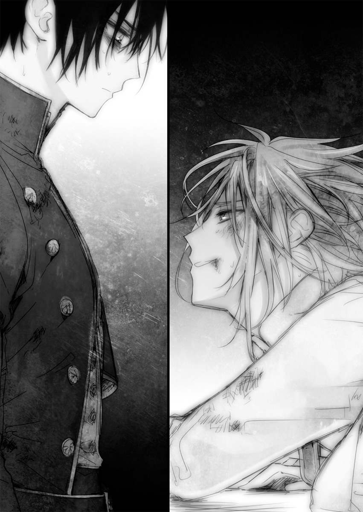
「あ、あぁ、負けたか......。は、ははっ、ははは......」
変わらず、彼は僕を『英雄』として見ながら笑っていた。
その敗北宣言を聞いて、急速に僕の頭は冷えていく。そして、試合に勝てども、戦いに負けたことに気づいてしまう。
結局僕は、その身の異様な才能に任せきって勝っただけだ。そんな勝ち方で『英雄』として見られるのを止めることなんてできるはずがない。僕が真の意味で彼に勝利するには、もっと別の手段――言葉を使って勝たなければいけなかった。
僕が後悔する間も、エルミラードは悔しがる。
「悔しいな......。ああ、『英雄』に勝ちたかった。......本当に勝ちたかったんだ。ずっと昔から待ってたんだ。信じて鍛えてきたんだ......。だけど、僕はここまでか......」
『英雄』になれなかったことを心底悔しがっている。もうそこに試合前の燃え盛るような熱はない。
僕も似たような状態だった。水を浴びたかのように冷静さを取り戻していき、様々な反省点が見えてくる。
記憶も戻っていないのに、勢いに任せてとんでもない宣誓をしてしまった。
冷や汗を大量に流しながら、僕は立ち尽くす。
そこに息も絶え絶えなエルミラードが話しかけてくる。
「......なあ、カナミ。『英雄』の君から見れば、あれなんて取るに足らない子かもしれない。けれど、あれは本当に可哀想な子なんだ。......できれば、助けてやって欲しい」
試合前までの態度とは打って変わり、スノウを慮るような発言だった。
もしかしたら、あの用意したかのような台詞は全て、僕を本気にさせるための演技だったのかもしれない。
いや、それどころか、シッダルク家の嫡男としての彼の全てが――
僕は苦い顔で答える。
「......僕は『英雄』じゃない。確信をもって言えるのは、僕はスノウの仲間で、パートナーだったってことくらいだ。僕にできるのはパートナーとして傍に居てやるだけだ」
記憶が戻ればどうなるかはわからないが、いまの僕に言えるのはそこまでだろう。
「本当に相変わらずだな、『英雄』様は。相変わらず、考え方が合わない」
「だから、僕は『英雄』じゃないって言ってるだろ。止め刺すぞ、エルミラード」
「く、くくっ。ふふふっ、ふふ、ふはははははっ――!!」
僕が睨みつけると、エルミラードは心底嬉しそうに笑った。
初めて見る無邪気な笑顔だった。
そして、そのまま笑いながら仰向けに倒れこむ。完全に降参の体勢だ。
もう世間話をする気はなさそうだ。これで試合も終了だろう。
あとは司会に確認を取って、試合終了の宣言をしてもらうだけだ。
「はあ。エルミラードのせいで、こっちが負けた気分だ。でも試合は勝ったから良しと考えるしかないか......。西エリアのラスティアラはスノウに勝てたか......？」
僕は重い身体を動かし、離れていた司会に近づく。向こうもこちらに向かっている。
エルミラードの魔法の連発のせいで、かなり距離を取っていたようだ。
愚痴をこぼしながら試合を終わらせに行く――その途中、会場全体を揺らすような轟音が鳴り響いた。
「――っ！――――っ!!!!」
それは生物の咆哮だった。
常識ではありえない鳴き声が、地震のように世界を震わせた。
会場の全員が耳を塞ぐ。
そして、僕だけがその声の正体を理解する。
これは数日前、西の廃城で聞いたものと同じだ。
魔力を帯びた――『竜の咆哮』だ。
「ス、スノウ......？」
それを発したであろう人物の名を僕は呟く。
その咆哮は、確かに西エリアの方角からだった。
ラスティアラたちとスノウは試合中だ。
つまり、この声は余波。
ここまで余波が届くほどの激戦が、いま行われているということに他ならなかった。
闘技場の対角線の先、スノウがおっかない目つきで私を――ラスティアラ・フーズヤーズを見ていた。
カナミは私のモノ――なんて、思ってるんだろうな。スノウってば。
「――そして、西から登場するのは！ ギルド『エピックシーカー』チーム！ 知る人ぞ知る伝説の少女っ、あのスノウ・ウォーカー様がリーダーのチームです！ スノウ様を筆頭に、とても安定した構成の万能パーティーの『エピックシーカー』チーム！ かの智竜の末裔は、この『舞闘大会』をどこまで勝ち進めるのか!?」
やっと、『舞闘大会』の本番が始まる。
ここまでは予定調和。本当の意味での戦いはここからだ。
とんとんと軽く跳ね、自分の体調を確かめる。
首を回し、手をぶらぶらと振って身体の凝りをほぐす。
正直、私の体調は万全じゃない。
カナミが自分の身体を苛める一方で、ずっと私は身体を休めてきた。しかし、それでも一度底の底まで落ちた体調は回復し切ってくれなかった。
聖誕祭の日に限界まで魔力を失い、負傷したディアを治しながら逃亡。フーズヤーズとヴァルトの二国からの追っ手を振り切り、南の国グリアードに潜伏。パリンクロンを深追いしようとするディアを力ずくで止め、カナミの動向を把握。『舞闘大会』を有利に進めるため、グリアードから迷宮に入って特訓。そして、どの勢力にも見つからず、『舞闘大会』にギリギリでの参加――『舞闘大会』まで、ろくに休むことなく動き続けてきた。
その無茶の代償が、身体の底に残っている。
不安はまだある。聖誕祭の儀式によって、私を縛っていた魔法の多くが解除された。
それは多くの『加護』と『補正』が失われたということでもある。例えば、いまの私は昔のように恐怖心を無視した戦い方はできない。
つまり、聖人ティアラの器でなく、ラスティアラ個人としての力で戦うしかない。
私は自分の力を冷静に測りつつ、対戦相手たちに目を向ける。
チーム『エピックシーカー』の代表者三名。
サブマスターであるスノウ・ウォーカーに、古株の戦士と魔法使いが付き添っている。
スキル『擬神の目』で実力を測っていると、彼女らの会話が聞こえてくる。
「では、ヴォルザークさんとテイリさんは下がっていてください」
「ま、待って、スノウ......。私たちも一緒に戦うわ」
「駄目です。というよりも、無理です」
魔法使いが試合の参加を訴えかけるが、スノウが冷たく断っている。
その様子を見た戦士は厳しい表情で問う。
「グレン妹......。本気でやるつもりなのか......？」
「ええ、これだけは――この試合だけは本気です。久方ぶりに、限定的な『竜化』もするつもりです」
スノウも厳しい表情で返す。
やはり、本気で私たちを潰すつもりらしい。
『竜化』――血の濃い獣人たちは、身体を変化させる能力を持っている。うちのセラちゃんがやっている『狼化』も同じだ。獣人の一種である竜人スノウもそれができる。
連合国で確認されている限りだが、彼女は世界で唯一人『竜』になれる人間なのだ。
「スノウっ！ 駄目よ、それだけは駄目！ だって、あれを使い続けたら、いつか戻れなくなるんでしょう!?」
『竜化』と聞いた魔法使いは血相を変えて、スノウに詰め寄る。
「戻れるところまでしか変化しませんから大丈夫です。けど、危険なのは確かですね......。でも、今日の私はそれだけの覚悟があるんです。今日だけは覚悟できそうなんです。だから、どうかお願いします」
スノウは乾いた笑いで魔法使いを安心させようとする。その死相にも似た笑みを見て、魔法使いは絶句する。代わりに戦士が話を続ける。
「......つまり、あのお嬢ちゃんらが、あのときの竜と同じくらい強いってことか？」
戦士がこちらを見てきたので、私は適当に笑って応えてあげた。戦士は私の顔を見て、引き気味に苦笑いしていた。失礼なやつだ。
「いえ、竜どころじゃないです。私が『竜の化身』なら、あっちは『神の化身』ですね」
「......はあ、それじゃあ俺たちじゃなんの手助けもできねえな。わかった。俺はテイリと一緒に見学しておく。けど、無理だけはすんなよ？ 戻れなくなるなんてことになったら、全ておしまいだ」
「それだけは注意します」
戦士は魔法使いの腕を引いて、闘技場の隅に移動しようとする。
魔法使いは最後に言葉を残す。
「スノウ、これがあなたの選んだ道ならもう何も言わない。けど、忘れないで。『エピックシーカー』のみんなは、あなたの味方だから」
「......ありがとうございます。こんな私を見守ってくれて」
スノウは驚いた様子で、その言葉を嚙み締める。
けど、次には悲しそうに愛想笑いを浮かべた。
「けど、『エピックシーカー』のみんなじゃ駄目なんです。きっと、簡単に死んでしまうから......」
それは決別の意思を含んだ答えだった。
スノウは『エピックシーカー』の誰も信頼していない。その圧倒的な強さゆえに。
「そうね......。行ってらっしゃい、スノウ......」
魔法使いもそれをわかっているのだろう。悲しそうに笑って送り出した。
「行ってきます、テイリさん。――鮮血魔法《フライソフィア》」
スノウは魔法を唱えながら、闘技場の中央に向かって歩き出す。
『竜化』の始まりが見て取れる。
彼女の手の甲が自然と裂けて、血が零れ出す。その血はすぐに蒸発して、霧となる。
その真っ赤な霧は竜の形となって、その身体を包んだ。
分厚い衣服のせいでわかりづらいが、背中が膨らんでいるように見える。
きっと背中から竜の翼が生えてきているのだろう。
スノウの目の瞳孔が開き、人間とは違う瞳に変わる。
強欲な竜の眼だ。
常人ならば眼が合うだけで凍りつくであろう視線を向けられ、私は薄く笑う。
「......うーん、スノウが本気だ。セラちゃん、絶対に私の後ろから出ないようにね」
「承知しています、お嬢様」
後ろに控えていた自分に仕える騎士に指示を出す。
セラちゃんは理由を聞くことなく頷いた。けれど、その隣のディアは不思議そうだ。
「なあ、ラスティアラ。あいつ、そんなに強いのか？」
「まあね。大陸最強の名は伊達じゃないよ。強いどころじゃない、本当に『最強』だよ」
「『最強』？『最強』って、あいつの兄のグレン・ウォーカーのことじゃなかったか？」
「それは違うよ。グレンは妹のスノウの手柄を横取りして『最強』の称号を手に入れただけ。スノウ・ウォーカーこそが真の『最強』。連合国始まって以来の天才児だったんだよ」
「へえ、そうだったのか」
「あ、あれ？ 反応薄いね。結構驚きの話をしたつもりだったんだけど」
「驚いてるさ。けど、俺のやることは変わらない。相手が『最強』なら『最強』を超えるだけだ。むしろ、そのくらいじゃないとジークの横に並べやしない」
「そういうことか。ふふ、頼もしいなぁ、ディアは......」
ディアは無謀なところがあるけれど、こういうときは頼もしい。ちょっとしたことでは気後れしない。おそらく、スノウの竜の力を見ても怯まないで戦ってくれるだろう。
私は安心して、闘技場の中心に進む。
その途中でセラちゃんには狼形態に変化してもらう。温存しておく必要はない。彼女の役割はディアの移動手段となることだ。試合前からディアを乗せておくことで、少しでも危険を減らす。
そして、私は闘技場の中央へと辿りつき、スノウと向き合う。
「や、スノウ」
「今日は勝たせてもらいます。ラスティアラ様」
スノウは恭しく礼をする。
その背中ではおどろおどろしい魔力が渦巻いている。まるで触れるもの全てを潰してしまいそうな魔力だ。相変わらず――何もかもが重い。
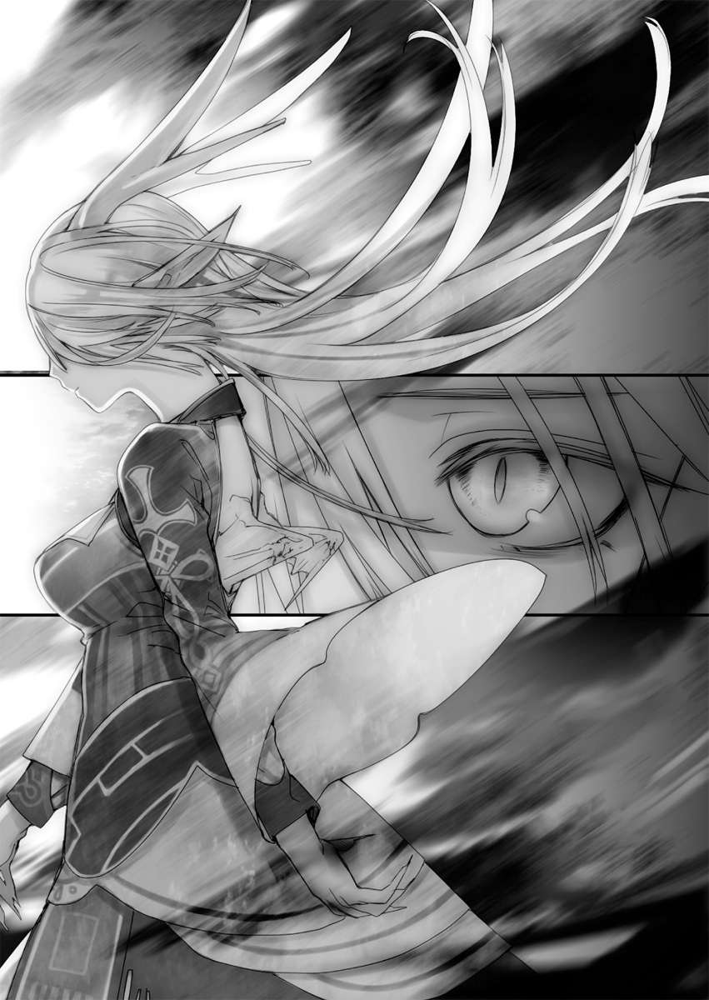
とはいえ、それは私たちの言えたことではないかもしれないが......。
「うーん、前から思ってたんだけどさ。もう敬語はいらなくないかな？ もう本音をぶつけあった仲だしね」
「そうかもしれませんが......、親しくする理由もありません......」
「私はスノウが好きだよ？ いや、わりとほんとに」
「私は......あなたが嫌いです......」
スノウのような不安定で悲劇的な人間は大好きなのだが、その気持ちは全く伝わらなかったようだ。簡単に振られてしまう。
「なんで私が嫌いか聞いていい？」
「そ、それは言いたくありません。いまは必要ない話ですから......」
悪くない反応だ。
私の生き方や性格を嫌っているようには見えない。もっと別の理由だろう。おそらく、くだらない理由だけど、スノウにとって譲れない理由。それが邪魔している。
「それよりも大事なのは『カナミ』のことです。そのためだけに、私は今日ここに居ます」
スノウは真剣な表情で本題に入る。
「わかってる。この試合、賭けるのは――」
「『カナミ』」
「『カナミ』――というか、こっちにとっては『ジーク』なんだけどね」
私たちは前もって決めていたことを口に出して再確認する。
「絶対に『カナミ』はあなたに渡しません......！ あれは私のものなんです！ 私の!!」
「うん、それでいいよ。この戦いに、それを賭けよう」
私が承諾を口にすると、スノウの顔は歪んだ。
そして、その激情のままに私たちを睨む。怖気が走り、腰が抜けてしまいそうになる顔だ。どうやら、ここ数日の嫌がらせが功を奏しているように見える。スノウの頭は、いま熱しに熱されている。
私は笑いながら、その彼女の状態を油断なく測る。
彼女の冷静さが失われているのなら、試合展開は楽なものになるだろう。
スノウと私が各々の思惑で見詰め合っていると、横から司会が口を挟んでくる。
「え、えっと、『カナミ』というのは人の名前なのでしょうか......？」
相変わらず、司会は私に話しかけ難そうだ。
「そうだよ？」
私は軽く答える。隣のスノウは目を逸らしている。
「それは北エリアのアイカワ・カナミ選手のことでしょうか......？」
「もちろん」
「つまり、お二人は同じ殿方を取り合っている......？」
「後ろのディアを含めると三人かな。でも実際のところ、『舞闘大会』で『カナミ』を狙ってるのは三人どころじゃないんだよね。面白いことに」
それを聞いた司会は顔を輝かせる。
「わぁ、これは司会として観客に知らせないといけませんね......」
「構わないよ。お仕事がんばって。私もその方がすっごい楽しい」
カナミが色んな女の子に言い寄られて困っているのを見ると、なぜかとても楽しい。カナミのおかげで一度まっさらになれた私だが、まだまだ悪趣味なところは直っていないらしい。
「――さあ、盛り上がってまいりました！ なんと今回の試合っ、賭けられるのはお互いの意中の男性のようです！ できれば、その方にはこの会場までご足労をお願いしたいのですがっ、残念ながらその方も試合中！ なにせ、その男性の名前はアイカワ・カナミ選手！ ギルド『エピックシーカー』のマスターであり、『竜殺し』として有名になりつつある期待の『英雄』様です！」
司会は状況説明を高らかに宣言する。
私はそれを無視して、スノウと話を進める。
「続行不能になるか、気絶したら負けで。あ、あと死んでも負けでいい？」
「ええ、それでお願いします。できればあなたたちをこの試合で亡き者にしたいので......」
「で、負けた方は『カナミ』に関することの邪魔はしないということで」
「それで十分です」
スノウは背中から大剣を取り出す。身の丈ほどもある巨大な鉄の塊を、苦もなく片手で握っている。
私も呼応して剣を抜く。これも名のある名剣だが、以前使っていたレヴァン教の聖遺物『天剣ノア』と比べると少し心もとない。
スノウの剣と打ち合えば、一方的に壊されるかもしれない。
「――って、え、えぇ!? デスマッチルールじゃないですか......！ できれば他のルールにしませんか......？」
殺気を纏って睨み合う私たちを見て、司会は困ったような顔になっていた。
「駄目。これでやらして。これじゃないと、スノウが納得しないからね」
「しかし、お二人ほど高貴な方が死ぬのは困るといいますか、なんといいますか......。もし、レヴァン教の現人神を死なせた試合を受け持ったなんてことになったら、私の人生が狂うといいますか、なんといいますか......」
「運がなかったねっ。残念っ」
私は満面の笑みで司会を諦めさせる。
このルールだけは変えるわけにはいかない。
慎重に慎重を重ね、スノウを煽りに煽って、辿りついた私に有利なルール。これをいまさら変えられたらスノウ攻略の目処が立たない。
今日、ここでスノウには一日じゃ回復しきれない重傷を負ってもらいたい。できれば、精神の方もぽっきりと折っておきたいところなのだ。
「お二人の凄まじい殺気を前に、一介の司会でしかない私では何も反論できません......。仕方ありませんね......。それではギルド『エピックシーカー』チーム対ラスティアラ・フーズヤーズチーム、『一ノ月連合国総合騎士団種舞踏会』西エリア第四試合――」
司会は項垂れながら私たちから距離を取り、そして――
「開始します!!」
宣言した。
その宣言と同時に、スノウの首が傾き、両目が赤く光った。
さらに分厚い衣服を破って、背中から蒼い翼が飛び出る。絡みつくようなスノウの魔力が渦巻き、膨れ上がっていく。薄紫の魔力が波状となって、闘技場全体に浸透する。
一瞬のことだった。
一瞬で闘技場はスノウの魔力に支配された。
それに対し、私は開始の宣言に合わせて横にずれる。
射線が確保され、背後にいたディアとスノウの視線が絡み合い――
「――《フレイムアロー》!!」
ディアの手から閃光が奔る。
膨大な熱量を持った光線が、目にも留まらない速さで闘技場に線を描く。
その不可避の光速の魔法をスノウは――
「はぁあアアッ!!」
咆哮し、しっかりと目で見て、その手の甲で弾いた。
手に当たった光線は、十数の光線に裂けて散る。そのいくつかが観客席に当たりそうになり、『魔石線』から展開される結界にぶつかった。
世界最高レベルの火炎魔法が直撃したことで結界に亀裂が入る。観戦の安全を担当している係員の魔法使いたちが大慌てで復旧作業に入っていく。
慌てるのも当然だろう。なにせ、この結界は戦争で使われるものよりも時間とお金がかかっている。熟練の魔法使いが集まっても傷一つつくはずがない代物なのだ、本来は。
それが弾かれた流れ弾で、結界に皹が入っているのだから恐ろしいことだ。
どれだけディアが規格外かよくわかる。
そして、それをあっさりと弾いたスノウも普通ではない。
その腕が『竜化』によって、人でなくなっているのがわかる。
空よりも青い――蒼い竜の腕。
スノウは硬い皮膚とぶ厚い魔力で、ディアの魔法を弾いてみせたのだ。表面が少しばかり焼け焦げているが、それだけだ。
「ぁあ、ぁあっ、ぁあああアアアアアアアァ――!!」
スノウは吼え続ける。
ただの咆哮ではない。竜の魔力を纏った振動。もはや、無属性の振動魔法と言っても差し支えない。常人ならば、耳にしただけで失神するだろう叫びだ。
敵の硬さを確認して、私は指示を変更する。
「ディア！ 次からは、あの結界に穴が空かない程度まで出力を下げて！」
「わ、わかった！ けど、それじゃあ決定打にはならなそうだぞ!?」
「大丈夫！ とりあえず、連射で私を援護して!!」
ディアは最初の《フレイムアロー》を撃ったあと、セラちゃんの俊足で大きく後退している。脆い砲台であるディアには最初から最後まで遠距離を保ってもらうつもりだ。
後方に指示を出したあと、すぐに私はスノウに斬りかかるため駆け出す。
スノウは大剣を片手で持ち、地面と水平になるように真横に構えてた。
そして、その美しき青い翼を一度だけ羽ばたかせる。
それだけで闘技場全ての風が支配され、『竜の風』という別の代物に変質する。命を持っているかのように風は蠢き、私の身体に絡み付こうとしてくる。
私はそれを振り切りながら駆け抜け、スノウの身体を斬り裂こうと肉迫する。
まずは、ただの打ち下ろしの斬撃。しかし、私の『筋力』と『速さ』によって繰り出されるそれは、ただの打ち下ろしの枠を越えている。たとえ熟練の軍人でも防ぐことは叶わない一撃だ。
それをスノウは易々と、大剣の腹で受け止める。
すぐに反動のまま、私は後方に跳ぶ。鍔迫り合いとなって、力比べになるのだけは避ける。おそらく、私の膂力は世界でもトップクラスの域だろうが、『竜化』しているスノウは間違いなく、ぶっちぎりの首位だ。競り負けるのは目に見えている。
その空いた距離を詰めるために、スノウは動き出す。
スノウ本人に大した『速さ』はない。しかし、それを補助する『竜の翼』と『竜の風』が、彼女の動きを大砲のような速度に進化させる。
恐ろしく長い一足の歩幅。もはや、それは歩行でなく飛行と呼ぶ方が正しい。
地面すれすれの低空を飛び、後退した私に咆哮しながらスノウは襲い掛かってくる。
「――ァ、アアアァア、ァアアアアアア!!」
肌を叩く振動と共に、噓みたいな重さと速度の大剣が乱暴に振るわれる。
耳を押さえたくなるほどの大声に歯を食いしばって耐えて、大剣を避ける。
雷のような爆発音のあと、闘技場の地面が粉砕された。スプーンで果肉をすくったかのように、大剣は地面の土を抉り取った。土砂が花火のように弾け、砂煙が舞う。
私も負けじと、その豪快な一撃の隙に剣を薙ごうとする。
しかし、振るう腕が、なぜか重い。
振るう腕にスノウの『すがりつく魔力』が纏わりつき、そこへさらに『竜の風』の力が加わり、腕が後ろに押し戻されそうになっていた。
結果、私の剣がスノウへ届く前に、彼女の返しの剣が襲い掛かってくる。
仕方がなく攻撃をやめて、剣を避けるのに専念する。
何度も暴風が吹き荒れ、轟音が鳴る。新たに地面が砕かれてき、足場が平面でなくなっていく。スノウの剣は嵐よりも恐ろしい天災となっていた。
それはまさしく、世界を代表する最悪の象徴。『竜』そのものだろう。
『竜の風』で私の動きを束縛し、乱暴な剣を振り回すスノウ。
避けきれない一撃を受け流していくうちに、徐々に私の剣が傷んでいくのがわかった。 このままだと、剣が壊れてしまう。
すぐに私は次の手札を切る。
スノウが力で押してくるのなら、私は――
「――鮮血魔法《フェンリル・アレイス》！」
魔法に頼るしかない。
数ある手札の中でも、力押しとは正反対の一枚を選んだ。
その魔法の宣言と共に、心臓が跳ねる。ドクンッと強く脈動し、視界が赤く染まる。
スノウの『竜化』と同じように、私の手の甲も裂けて血が流れ出す。血は蒸発し赤い霧となって私の身体を包む。
スノウが『竜化』ならば、私は『人化』と呼べばいいのだろうか。スノウが竜と人のハーフならば、私は人と魔石のハーフ。この魔石で練られた身体を、さらに『人』へ近づける。それが私の鮮血魔法だ。
血に宿る千を超える『人』の記憶の中から、私は剣聖『フェンリル・アレイス』を選んだ。こうして、本当ならば聖人を降ろす予定だった身体は、近代最強の剣士を完全に再現する。
目の色は黄金からくすんだ鈍色に変わり、金色の髪の中に赤毛が混ざり始める。
血から記憶が流れこみ、身に覚えのない剣術の経験が全身に馴染んでいく。
現在、齢六十歳に近い剣聖フェンリル。その世界最高峰の老練なる剣術を、この世界最高峰の若き身体に降ろす。
これこそが、フーズヤーズのフェーデルトや元老院のレキたちが予定していた『魔石人間』の真骨頂。違う『誰か』に転身することだけに特化した私の魔法。その一端だ。
「スノウ!!」
私は反撃に出る。
いままでの自己流の剣術ではなく、研ぎ澄まされた技でスノウの大剣を綺麗に受け流し、そして、見違えるような一閃でスノウに襲い掛かる。
私の激変にスノウは驚きを見せ、すぐに顔を歪める。
驚きとは違う感情――殺し合いの最中、スノウは私を羨ましそうに見た。
スノウは大剣を振り回して、私の技を強引に押しつぶそうとする。しかし、その全てを私は剣技でいなし、逸らし、かわしていく。
ついには大きく大剣を空振りしたスノウに、私の剣が届きかける。
それにスノウは剣でなく咆哮で対応する。
「――《インパルス・ハウリング》！」
スノウの首に竜の鱗が生え、世界が歪む。
「ァ、ァアアアアアアアアアアアッッ――――――――――――!!!!!!」
もはや、声とは言えない声。
凶器の振動と化した咆哮が闘技場内の景色を歪ませた。
囲い込む結界がぐらぐらと震える。
船が、『ヴアルフウラ』が、いや海そのものが震えている。
私は咄嗟に手を耳へ持っていってしまう。私の身体ならば耐えられなくはない。しかし、身体が反射的に聴覚を守ってしまった。
そこへスノウの追撃が加わろうとして、炎の雨が降り注ぐ。
「――《フレイムアロー・散花》！」
不意を突かれたと判断したディアが、後方から援護してくれたようだ。
その援護を利用し、私は大きく後退して仕切り直す。
だが、まだ羽虫が飛ぶような耳鳴りが止まない。後ろではディアとセラちゃんも同じように、顔をしかめている。
距離を取った私に向かって、スノウは追撃してこなかった。
羨ましそうに恨めしそうに、睨む。
「その力......、明らかにあなたのものじゃない......！」
私の剣技が明らかに変化したため、その正体に見当がついたのだろう。鮮血魔法はスノウも得意分野だったはずだ。
彼女のおぞましい魔力がより一層と凶悪さを増していき、腹の底を揺らすかのような波動が闘技場中を波打つ。
その波動は徐々にスノウの目の前で凝縮されていき、球状に変形していく。スノウが翼を羽ばたかせ、『竜の風』でその球形の魔力を安定させているのだ。
「なんでっ、あなたたちは！――《ドラグーン・アーダー》ァア!!」
そして、『竜の風』による圧縮が解かれ、凝縮された振動が解放される。
吹き荒れる風と共に、空間を歪ませるほどの振動がこちらに襲い掛かってきた。
その凶悪な魔法に対し――私は何もしない。安心してそれを見送る。
この距離の魔法戦ならば恐怖はなかった。なぜなら、魔法の撃ち合いにおいて連合国最強の魔法使いが後ろに控えてくれているからだ。
「――《ディヴァイン・ウォール》!!」
ディアによって、神聖なる光の壁が私の目の前に展開される。
恐ろしい魔力の密度で構成された光の壁は、振動魔法を完全に防ぎきる。
「また!!」
スノウは忌々しそうに叫んで、私を妬ましげに睨む。
戦っていく内に、私はスノウの感情が少しずつ理解できてきた。彼女は複数人の力で戦っている私たちを妬ましく思っているのだ。
「スノウ、そんなに私が妬ましいの......？」
距離を取ったまま、私はスノウに問いかける。
「......あなたはいつも、誰かに守られています。いつも、いつもっ!!」
スノウは語りながら、また振動魔法を構築していく。
先ほどの魔法を、今度は複数精製しようとしている。
それでもディアの魔法には敵わないだろう。スノウも世界最高クラスの魔法使いだが、ディアには劣る。なので、私は余裕を持ってスノウと話し続ける。
スノウに勝つのに必要なのは圧倒的な力でなく――言葉だと、私は思うのだ。
「スノウだって、いままでカナミに守られてきたでしょ？」
「大事なのは、いままでじゃなくて、これからです......。これからを守ってもらわないとなんの意味もないです......」
「これからもずっとカナミに守ってもらいたいの？ こんなに強いスノウが？......はっきり言うけど、スノウは誰かに守られるほど弱くないよ。もしかしたら、いま連合国で一番かもしれないくらいの強さがある。それだけの力があれば、大抵のことは一人でなんとかできるのに、なんでそこまで誰かに守ってもらうことにこだわるの......？」
暗にカナミを諦めるように促す。
言葉だけで気勢を削げるのなら、それに越したことはない。
「私一人でなんとかできたら、こんなことになってないです。私みたいな弱虫が一人で生きることが、どんなに辛いことか......あなたなんかにわかるもんか！ 色んな人にちやほやされているあなたに！」
「スノウが一人......？」
私の記憶では彼女が一人だったことは少ない。
いつもウォーカー家の者かギルドの誰かに守られている。
あるとすれば、スノウがウォーカー家から出奔したと噂されていたときだ。一、二年前、グレンから話を聞いたことがある。
「過去にスノウがウォーカー家から逃げたときのことを言ってるの？」
「......知ってるなら、手加減してください」
詳しくは知らない。
けれど、ここがスノウの根幹に関わっていると感じて、話を続ける。
「いや、手加減はちょっと......。詳しくは知らないからね......」
「......単純ですよ。最初から逃げられるはずがなかったんです。世の中、一人じゃ何もできません。ウォーカー家なら私が寝る暇もなく追っ手を出すことだってできる。私が音をあげるまで、策謀を仕掛け続けられる。それに耐え続けることなんてできない。できるはずがありません！ みんなが死んでいく中、たった一人で耐えるなんて......！」
どうやら、過去に出奔した際、かなり惨い方法で連れ戻されたようだ。
言葉の端から全容を予測し、私はスノウの説得を試みる。
「けど、スノウが最後まで抵抗し続けていたらわからなかったと思うよ。採算が合わなくなれば、向こうも諦める。最後まで諦めなければ、スノウの力なら、きっと......」
「その諦めない間に、どれだけの人が死ぬと思ってるんですか!? 敵も味方も、どんどん死んでいくんですよ......？ 私は強いから死にません。私は死にませんけど......一緒に逃げてくれた友達がっ、善意で手助けしてくれた誰かがっ、簡単に死んでいく！ それがどれだけ苦しいことか......！」
「それでも諦めなければいつか逃げ切れたはずだよ。スノウの力なら、きっとみんなを守っていくことだって――」
「誰も守れなかったから！ 誰も守ってくれなかったから！ 私はここにいるんです!!」
そのスノウの叫びに合わせて、用意された大量の振動魔法の球が解放される。
ただでさえ、単発で家の一つもバラバラにできそうな魔法だ。それが大量に、狭い闘技場内を駆け巡る。
「――《ディヴァイン・アロー》！ 《ディヴァイン・ウォール》!!」
ディアが神聖魔法で、スノウの振動魔法を相殺してくれている。相殺し切れなかったものもあるが、そこはセラちゃんが足になって避けてくれている。
スノウの魔法によって闘技場内に敷き詰められた地面は、もはや崩壊寸前だ。荒れた岩山のような地形となり、砂埃で視界が閉ざされている。
その砂埃にまぎれてスノウが突進してくる。
咄嗟に私は剣で迎え撃つ。
剣と剣がぶつかり合い、鍔迫り合いとなる。
スノウの顔が私とくっつきそうなほど、近くにあった。彼女はその可愛らしい口を動かして、卑屈そうに笑い出す。
「だからお願いします、現人神様。お願いですから、『カナミ』を私にください。私と一緒に居られるのは『カナミ』しかいないんです。『カナミ』なら絶対に死ぬことなく私の傍にいてくれます。それどころか、私を助けてくれる。......あなたには後ろの使徒様と、あなたを敬う市民たちがいるじゃないですか。だから『カナミ』は私に分けてください......。お願いします。え、えへへ......」
愛想笑いでも心の底からの笑いでもない、中途半端な笑みがスノウの顔に張り付いていた。その気持ちの悪さに、私は汗を垂らす。
「な、何を、言って......」
「バランスを取りましょうよ。バランスを取って、私は『カナミ』と二人、そっちは使徒様と二人。二人と二人で、丁度いいですよね......？ ラスティアラ様とシス様のお二人はとっても強くて輝いてます。皆さんにも好かれてます。もう十分でしょう？ だから、『カナミ』は私にください。お願いしますから......！ 私にください......!!」
馬鹿げた理論だ。けれど、スノウはそれを本気で提案しているのだろう。
私はスノウという少女を少しずつ理解していく。
「――《フレイムアロー》!!」
スノウの横腹に閃光が突き刺さり、吹き飛ばされる。
「さっきから聞いてたら、この女！」
ディアが魔法を放ったようだ。
前もって、できるだけスノウと会話をしないように言い含めていたが、とうとう限界に達したようだ。元々、好戦的なディアには無理な注文だったかもしれない。
「スノウ・ウォーカー！ ふざけるなよっ！ そんな適当な考えで生きてるお前に『ジーク』は相応しくない！『ジーク』が欲しいなら、それに相応しい強さを身につけろ！」
ディアは吹き飛ばされたスノウを叱咤する。それに合わせて、私も答えを伝える。
「うちのディアは絶対に嫌だってさ。......私も嫌かな」
砂埃の中、スノウはゆらりと立ち上がり、赤い竜の目を光らせる。
「こんなにお願いしてるのに、なんで......？ なんでですか......？」
スノウは不思議がっていた。
なぜ、自分の提案を断られたのか本当にわからないようだ。
そして、ひとしきり不思議がったあと、おぼつかない足取りでこちらに近寄ってくる。
呪詛のような言葉を吐きながら――
「なら、もう殺します。殺してでも『カナミ』を取り返す。返して、もらう......!!」
取り繕っていた全てが剝がれ落ち、敬語でなくなっていく。
スノウの心のままが言葉となっているのだろう。
いままでの卑屈な敬語より、何倍も心に響く声だ。
「ここ数日、ずっと『カナミ』の音を聞いてた。ずっとあなたに聞かされた」
もう交渉するつもりはなくなったことが、様子からわかる。
突き刺さるような殺気と共に、スノウの魔力も変質する。波打つ魔力に粘着性が生まれ、至るところにすがりつこうとしている。
「『カナミ』を『ジーク』に戻そうとするあなたたちが、私は嫌い。――大嫌い」
『竜化』が進み、背中の翼は膨張する。さらに風は強くなり、砕けた地面が震え出す。
いま、スノウは本気で私たちを殺す決意をしたと、周囲の魔力から伝わってくる。
「ここで死んでも事故。『舞闘大会』ではよくあること。あなたたちは私の世界に必要ない。ここで、カナミの過去を断ち切る......！ 全て!!」
もう会話になっていない。
一方的なスノウの宣戦布告だ。
その殺意が肌に刺さる。もはや、交渉の余地はなくなった――ように見える。
「ラスティアラ！ これ以上はもう無理だ!!」
後ろのディアが全力で魔法を放つ許可を求めている。おそらく、『獣化』しているセラちゃんも同じ意見だろう。
「あと少し！ あと少しだけやらせて！ ディア、セラちゃん！」
しかし、それを断る。
英雄譚――夢物語の読み過ぎかもしれない。しかし、いまの本心のぶつかり合いこそ、解決の糸口であると私は信じたかった。
そう思い、スノウを睨み返そうとして――次の瞬間には、スノウが目の前で大剣を振りかぶっていた。『竜の風』を背中で爆発させ、殺人的な加速で跳んだようだ。
同時に、移動した際に発生した衝撃波も、私の身体に襲い掛かってくる。
風と衝撃に耐えながら、剣と剣をぶつけ合う。
剣聖の技で受け流そうとするが、それでも威力を殺しきれなかった。体勢を崩したところに、スノウの蹴りが放たれる。鼻先でなんとか避け、冷や汗が弾けた。
しかし、避けたはずなのに頭が揺れる。蹴りの勢いが衝撃波となって頭部を叩いたのだ。
さらに容赦なくスノウは襲い掛かってくる。
乱暴な剣の打ち下ろし、薙ぎ払い、斬り上げ。ときには打撃や摑み技も交じる。
私はそれを紙一重でかわしつつ――反撃には、剣でなく言葉を選んだ。
「スノウ！ 記憶が戻ろうと、『ジーク』と名乗ろうと、カナミは『カナミ』だよ!? スノウは賢いから、それがわかるよね!? それでも『ジーク』であったことを受け入れないのはなんで!?」
説得のやり方を変えよう。
カナミがスノウに自立して貰いたがっていたので、それに沿った説得を選んでいたが、そんな方法じゃ彼女は間違いなく納得しないとわかった。
この子は根っからの被保護者だ。厳しい言葉なんて、聞き入れるわけがない。スノウは甘やかさない限り、決して止まらない気がする。
スノウの攻撃に耐えながら、私は言葉を投げ続ける。
「それって、カナミの記憶が戻ったら、自分を選んでもらえないって自覚してるってことだよね!?」
私の言葉を聞いて、スノウの表情は強張っていく。
思った通り、現実的な話は聞き入れる様子なんてない。
「もし、ここでスノウが勝ったとして、過去から逃げ続けた生活を送ったとして......最後までカナミが何も思い出さないって本当に思う!? ずっと何事も起きず、平穏に暮らせるなんて本気で思ってるの!? 絶対にありえない！ いつかは記憶なんて戻る!!」
「そんなこと！ 聞きたくない！ カナミを私のものにしてしまいさえすれば!!」
スノウは激昂する。
予定通りだ。
説得の基本は、まず落とすこと。拾い上げるのは後でいい。
「スノウのやろうとしていることは、その場しのぎだよ！ いつかは壊れると決まっている幻を、馬鹿みたいに守ろうとしてる!!」
「でも、私はその幻の中でしか『幸せ』になれない！『幸せ』になれないんです......！ だから私はァアア――!!」
スノウは歯を食いしばって、さらに力を強めて剣を振るう。
私はそれを受け続ける。その乱暴な剣に隙は多い。反撃はできる。
しかし、まだだ。まだ耐えられる。
「私はスノウのことをよく知らない......。けど、自分より強い誰かにすがりつきたいのはよくわかったよ。だったら......、――神聖魔法《グロース・エクステンデッド》!!」
私の全魔力を神聖魔法に注ぎ込む。
光が溢れ、強化の魔法が全身に染み込み、身体にかかる反動と負担を無視して、身体能力が限界まで引き上げられる。
長くは持たない無茶な魔法だ。けど、いま必要なのは継戦能力じゃない。
ここは迷宮じゃなくて、試合会場だ。
一瞬に全てを賭けていい――！
「スノウ!!」
「――現人神、ラスティアラァ!!」
私の叫びに、スノウも呼応する。
私は強化された力で、スノウの剣を払いのける。強化されたいまだけは力比べでも私の方が有利だ。そして、打撃にも打撃で返し、摑み技にも摑み技で圧倒する。
剛剣と剛剣が打ち合い、豪腕と豪腕がぶつかり合う。
互いの肉が抉れ、骨に亀裂が入る。
規格外の存在同士のぶつかり合いは、ただそれだけで互いの命を削っていく。
その状況にスノウは戸惑っていた。洗練された技で対応していたと思えば、突如として力技で対抗してきたのだから無理もない。
その隙を突いて、私は手に持った剣を捨て、スノウの両腕を摑む。そして、全力の頭突きをスノウの額にぶつける。
スノウは突然の頭突きによって、身体をふらつかせた。
そのまま、全力の飛び膝蹴りを腹に打ち、もつれるように二人で倒れこむ。
私はスノウを下に組み敷いた。
また顔と顔が近づく。
口が付きそうな至近距離で私は宣言する。
「どう!? 私は強いでしょ!?」
「――っ!?」
その急な勝利宣言に、スノウは啞然としていた。
しかし、すぐにスノウは気を取り直し、私を振り払おうとする。それを力で押さえ込み、私は彼女を見つめ、優しく囁く。
「ねえ、スノウ。私じゃ駄目かな？」
「――え？」
ふっとスノウの力が少しだけ弱まる。
助かった。私の神聖魔法による強化は一時的なものだ。強引に来られたら、抜け出されていた。
私はこれが最後の説得だと心に決め、慎重に言葉を選ぶ。
いまこそ落としたスノウを拾い上げるときだ。
「そんなに誰かに守って欲しいなら！ 私がスノウの『英雄』になって助けてあげる！」
「あ、あなたが......？ 現人神であるあなたが『英雄』？」
「うん！ 私はヘタレのカナミと違って、重度の英雄症候群だからね！ きっと、カナミよりもスノウの力になってあげられると思うよ！」
「む、無理に決まってる......。あなたはそういうのとは全然違う。現人神として完成し過ぎてて、『英雄』としてなんて見られるはずがない。誰も、あなたを『英雄』なんて思わない！」
「大丈夫大丈夫っ、現人神なんてそのうちやめるからさ！ ラスティアラというただの人として『英雄』になる予定だから安心して！ で、英雄ラスティアラの最初の救出者はスノウ。ほら、これで全部解決してない？」
「ちょ、ちょっと、待って......！ なんであなたが私を......？」
スノウは身体から力を失う。唐突な救いの手に混乱しているのが伝わる。
「スノウの悲痛の叫びが、とっても気に入ったから！『英雄』は不幸な人と合うんだと思う！『英雄』には悲劇のヒロインがつきもの！ きっと相性抜群！ 私とスノウってすごくお似合いだと思うな!!」
やはり、甘やかせばスノウは話を聞いてくれる。
私の言葉がスノウへ届いていると実感できる。
「そ、そうかもしれないけど......。でも、それは、違う気がする。何か、違う――」
「私がウォーカー家からスノウをさらってあげる！ スノウが選択したくないことを、全部私が代わりに選択してあげる！ 追っ手も追い払ってあげる！ スノウに安全と自由を約束してあげる！ スノウの夢の邪魔するものがあるのなら、その全てを私が壊してあげる！ 代価は私のものになるだけでいい!!」
「う、うぅ......」
スノウは顔を赤くして、目を背けた。
かなり効いているように見える。流石は、いつかの私を救い上げた台詞だ。
このまま、カナミから私にスノウの依存先を移せば、色々と解決するはずだ。
「で、できない......！ そんなのできっこない。それは『本当の英雄』じゃない。第一、信用もできない......！」
そう思ったが、スノウは拒否する。私の話に魅力を感じているものの、彼女の中にある『何か』がそれを許さないように見える。
「私にはスノウを救う理由がある！『舞闘大会』を勝ち進むためっ、カナミとディアのためっ、ひいては趣味のため！ 私を信じて!!」
「だ、駄目......。それは駄目......！」
「なんで駄目なの!? 教えて、スノウ！」
「なんで......？ な、なんでだろ？ 私は『カナミ』に助けられたいって思ってる。ラスティアラ様じゃなくて『カナミ』に......。け、けど、それはなんで？ なんで私は『カナミ』に――？」
スノウは顔を歪め、震えながら否定し続ける。
カナミの真似までしてみたが、どうやらそれでも足りなかったようだ。
私とスノウの間に、かつての私とカナミのような絆はない。だから後一歩が届かない。
届きはしなかったけれど、目に見えて隙は生まれた。
スノウは降って湧いた都合のいい逃げ道を見つけ、未知の感情を知り、迷っている。
そこを突いて、今度は注意を戦闘から背けることに集中する。いまこそ、誰もが気づいていながら誰も言わなかったことを暴露するときだ。......ちょっと楽しくなってきた。
「そっか。やっぱり、スノウはカナミが好きなんだね」
「――え？」
スノウは思いがけないことを言われたような顔になった。
その表情を見て、疑心が確信に変わる。
スノウの性格上、「好きだから結婚したいのではなく、楽だから結婚したい」と思っている予感はしていた。反応を見る限り、本人もそう思っていたに違いない。
けれど、そうではない。そんなはずがないのだ。
ここまで執着していながら、それで済んでるはずがない。
方向性は違うが、スノウは私と少し似ている。だからこそ、私はスノウの深層心理を読める。
スノウの心は幼い。
身体は大きくて、誰よりも強い。けれど、心が全く育っていない。
絶望の始まった日から、ずっと心の成長が止まっているのだろう。
私と一緒で、無駄にでかい図体を持っていながら、心は幼子なのだ。
だから、その自分の異常な恋心に気づけないでいる。
「きっと、それはカナミが好きってことだと思うよ。だから、私を受け入れられないんじゃないかな？ かっこいいカナミに、スノウは英雄譚のように助けられたいんじゃないかな？」
「ち、違う......。そんなこと、あるはずない......」
「なら、その執着心はなんで？」
「......た、ただ、『カナミ』は条件を満たしていただけ。そんなはずない。都合が良くて、私に楽をさせてくれるから、私のものにしたいだけ。妙に強いから、利用しようと――」
スノウの意思に歪みが入る。
ただ、自分のためだけに戦っていたところに余計なものが混ざり、信念が揺らぐ。
自己中心的な彼女の世界に他人が入り込もうとするのを、彼女は必死に拒む。
拒むが――それは拒もうと思って拒めるようなものじゃない。
私もマリアちゃんもそうだった。
「利用しようとしただけ。カナミは強くて、優しくて、それでいて私に甘くて、頼り甲斐があって、隙だらけで、都合が良いから......――あ、あれ――？」
「人はそれを好きって言うらしいよ。実は私も、つい最近知った」
スノウの『竜化』が緩んでいく。
思考が戦闘ではなく、別のところへ飛んでいるのが丸わかりだった。
「わ、私はカナミが好きだった......？」
スノウは首を振りながら、そう呟く。
自分でその言葉を吐きながら、自分でその言葉を信じられないようだった。
そして、全身の力が抜けていく。戦いどころはではないといった様子だ。
もちろん、私はそこを狙う。
「隙ありぃ！」
膝をスノウの腹に落とす。飛び膝蹴りで内臓が痛んでいるところに、さらなるダメージを足す。さらに激痛で身体が硬直している隙を突いて、スノウの背中に回りこむ。
倒れこんだままなので、今度はスノウが上になる形だ。
止めに私は腕でスノウの首を締め上げる。このまま、気絶させるつもりだ。
「ぐっ！ うぅ!?」
スノウは私の狙いがわかり、力をこめ直そうとする。
しかし、私は耳元でさらに囁く。
「よく考えて、スノウ。カナミが好きなら、自分のことだけじゃなくて、相手のことも考えないと本気で嫌われるよ？ スノウは好きな人がいる恐怖というのを、少し知った方がいいと思う」
「す、好きな人がいる恐怖――？」
スノウは初めての感情を前に、驚き戸惑っている。
いままでの彼女は自分のためなら誰かに嫌われることも厭わなかった。自分が全てという厄介過ぎる考え方だった。
けれど、そこに一つの枷を足す。誰もが持つ、当然の制約を課す。
それは好きな人に本気で嫌われるという恐怖。
そんな少しだけ大人の感情をスノウは知り、意思が揺らぎ、迷いで力が鈍っている。
もちろん、その間も私の締め上げは続いている。
その迷いは私に攻撃の時間を十分に与えてくれた。
「う、うぅ......――」
スノウの意識は薄らぎ、身体から力が抜け切る。
完全に意識が落ちたようだ。
そのスノウの身体を、私は優しく抱き上げて宣言する。
「よーし、勝ー利っ!! ちょっと卑怯で虚しい勝利だったけどね！」
徹底して精神攻撃のみで戦ったので、気持ちの良い勝利ではなかった。けれど、あとのことを考えるとやらなければいけないことだったと思う。
鮮血魔法で魔力を失い、骨と内臓が痛んだ状態でも、負けて自棄になったスノウなら夜に襲ってくる可能性があった。しかし、言葉で生んだ迷いがあれば、スノウの行動を色々と縛ってくれるはずだ。
「ふう。あとは守護者の試合が問題かな。できれば、梃子摺っていて欲しいけど......」
私はスノウを抱えたまま、闘技場の端に避難していた司会の方に向かう。
気絶したスノウを司会に見せて、早く私の勝利を確定してもらわないといけない。
少し不安だったが、四回戦は私たちの完全勝利。
荒れ果てた闘技場内を歩きながら、そう思っていると――
「――――っ!!!!」
遠く、南の方角から声が聞こえた。
興奮に包まれた観客席のさらに南。おそらく、守護者ローウェン・アレイスが戦っている南エリアの闘技場船からだ。
「......歓声。いや、悲鳴？」
遠いが、はっきりと声を拾える。それほどまでに大きい声。
私の異常に良い耳だからこそ聞こえる。
いまローウェンの試合で、観客席から悲鳴があがっている。
私はそれを不安に思い、後方の仲間二人に目を向ける。二人は急いで私の方に駆け寄ってきていた。何が起きたにしても、早くカナミと合流するべきだと思っているのだろう。
私も同意見だ。
早急に試合を終わらせるべく、さらに足を速め、私たちは『舞闘大会』四回戦を終わらせていった。
◆◆◆◆◆
四回戦の試合は、北エリアも西エリアも予定通りに進み、僕とラスティアラチームは勝利した。そして、南エリアではローウェンが順当に勝ち上がったことも聞く。
次の準決勝では僕とラスティアラが当たり、ローウェンはヴァルト国の代表チームと当たるらしい。
まず僕がラスティアラたちと合流し、最初に確認したのはスノウの安否だった。
死にはしなかったと聞いたものの重傷で、病院送りになったことをラスティアラ本人から聞いた。
病院施設のある船の中、満身創痍のスノウがベッドに横たわっているのを《ディメンション》で一瞬だけ把握する。回復魔法でも、一朝一夕では完治しないのが見て取れる。
だが明日までスノウが動けないのは、僕たちにとって好都合な話だ。とはいえ、油断はできない。いまの彼女ならば、重傷の身体を引きずってでも何かをしでかすかもしれない。
僕はこれからのことを推測しながら、隣を歩くラスティアラと情報交換をしていく。
「んー......。守護者ローウェンのやつ、自分から正体を観客に明かしたみたい。何考えてるんだろ？」
僕と合流する前に、道行く人からローウェンについて情報収集したようだ。南エリアの試合の流れを教えてくれる。
「ローウェンが自分から......？」
「『剣聖』フェンリル・アレイスに試合で勝ったあと、堂々と宣言したってさ」
「宣言？ 死にかけてモンスター化したんじゃなくて？」
「うん。宣言」
「なんで、そんなことを......」
ずっと隠し通してきたことを、このタイミングで明かす理由がわからない。
「もちろん、そのあと大会管理者に捕縛されたみたいだよ。ただ、『舞闘大会』は何者も拒まないと謳っている以上、ローウェンの参加取り消しまではされないらしいけどね」
「モンスターとして捕縛されたのか......。ローウェン......」
僕はローウェンの思惑を推測しようとして――視界が暗転する。
急な立ち眩みに襲われ、膝が折れ、倒れかけた。
「カナミ、大丈夫か!?」
咄嗟にディアが僕の身体を支える。
「......あ、ああ、大丈夫。......ちょっと、試合で疲れたみたいだ」
僕はディアに支えられながら、絞り出すように声を出す。
もはや、動くことも考えることもできない状態になっていた。
「と、とりあえず、部屋まで戻ろう！ 急げ、ラスティアラ！」
「そうだね。まずは部屋に戻ろう。リーパーと合流すれば、色々と安泰になるし」
ディアとラスティアラの声が、遠くから聞こえる。
僕は身体を支えられたまま、力の入らない足を無理やり動かして移動する。
どこを歩いているのかもわからない状態の僕は、導かれるがままに歩き続けた。
そして、どこかの部屋に入り、椅子に座らされる。
背後から声が聞こえてくる。
「お疲れ、お兄ちゃん。何もかも上手くいっているようで、私も嬉しいよ」
「リーパーか......？ できれば、スノウとローウェンの監視を頼む......。もし、スノウがコンタクトを取ってくるようなら僕が話す。負けて頭の冷えたスノウなら、わかってくれるかもしれないから......」
リーパーは労いの言葉と共に、冷えたタオルを僕の頭に載せてくれた。
「うーん、スノウお姉ちゃんと話すのはやめた方がいいと思うよ？ いまのお兄ちゃんじゃあ、ろくに話すこともできないからね。それにラスティアラお姉ちゃんの説得で、かなり大人しくなってるんだよ？ 放っておいたら自分で自分の悩みを解決しそうなほど、説得が効いてる。......だから、いまは記憶を取り戻すことに集中しよ？ 中途半端な手助けをするよりも、その方がスノウお姉ちゃんのためになるよっ」
「......そっか。ラスティアラは試合中に説得してくれたのか」
僕はエルミラードと戦っていたため、ラスティアラたちの戦いを詳しくは知らない。
口では厳しいことを言いながらも、ラスティアラは彼女なりの説得をスノウにしてくれたようだ。
「なら、ローウェンは？ ローウェンの方も僕は気になる」
「ローウェンも放っておいて大丈夫。どうせ、動けないから」
「ああ、いまの状態をリーパーも知ってるのか」
「ローウェンは『最強』に勝利し、『剣聖』をも超えたよ。ここまで勝ち上がってきたってことはそういうこと。トーナメント表は覚えてるよね？」
「あ、ああ......」
ローウェンは早々に『最強』のグレンさんと当たり、先ほど『剣聖』のフェンリル・アレイスと当たった。そして、その二人を見事倒し、勝ち進んでいる。
「なら、ローウェンの望む『栄光』ってやつは十分じゃないのかな？ だから、もう自分の正体を隠すことはやめて、こっちに全然ちょっかいかけてこないのかも」
リーパーの前向きな考え方に説得されかける。しかし、まだ腑に落ちず、僕は眉間にしわを寄せ続ける。それを見たリーパーは嘆息しながら、僕の頭を後ろから撫でる。
「きっとローウェンにはローウェンの考えがあるんだよ。だから、お兄ちゃんがいなくてもローウェンは大丈夫。なんにも心配しなくていいよ。それよりも、お兄ちゃんは明日の準決勝を考えないと。お兄ちゃんは記憶を取り戻すことだけを考えて......」
リーパーはスノウとローウェンへの接触に否定的だった。
それにディアちゃんも同じ意見なのか、同調してくる。
「そうだぞ、カナミ。いまはスノウやローウェンってやつらよりも、明日に備える方が大事だ。何をするにしても、まずは『腕輪』を破壊するのが優先だぞ」
どうやら、いまスノウたちと話をしたいのは僕だけらしい。
頭が熱くなりすぎて、僕だけが正常な判断ができていないのかもしれない。
「ラスティアラ......。僕は何もしない方がいいのか？」
いま居るメンバーの中で、最も冷静で状況を把握しているのはラスティアラのはずだ。彼女の判断に身を委ねるのが、一番堅実だと思った。
「......そうだね。......何もしないようにしよう。まずは記憶を取り戻すことが大切なのは確かだからね」
ラスティアラは十分な間をおいて、ゆっくりと答えた。
「わかった。ラスティアラが言うなら、そうするよ」
少しばかり残念だが仕方がない。
そもそも、反論する余裕もなければ、動く気力もない。
――もう限界だ。
だが、この限界の状態ならば、間違いなく準決勝でラスティアラたちに負けられるという確信がある。僕は安心しつつ、背中を椅子に預けて、これ以上の思考を放棄する。
時間感覚すらも薄れていく中、ラスティアラの最後の指示を聞く。
「カナミ、あとはその体調を維持するだけでいいよ。試合前になったら呼ぶから、それまでそこに座ってて」
そうしよう。
座ってるだけなら、いまの僕でもなんとかできそうだ。
眠ったら、きっと誰かが起こしてくれるだろう。
ただ時間が過ぎるのを待つだけでいい――
「そう。まずは記憶を取り戻して、お兄ちゃん。そうすれば――」
朦朧とする意識の中、リーパーの声が聞こえる。
僕が動かなくなったのを確認し、リーパーも安心している。
「――アタシの願いも叶う」
念願が叶うらしい。
僕はそれを他人事のように感じた。
もっとその言葉の意味を考えないといけないのに考えられない。もっとその成就を自分のことのように喜ばないといけないのに喜べない。
ただ、やっとリーパーの願いが叶うという情報だけが頭に残る。
そして、深い深い闇の中に落ちていく。
僕の意識が現実から切り離されていく。
闇の中で延々と、僕は時が過ぎ去っていくのを待ち続け――
◆◆◆◆◆
――まるで何年も経ったかのような気がする。
そんなあやふやな認識の中で、僕は自分の状況が変化したのを感じ取った。
もう翌日になったはずだ。
そして、誰かに手を引かれ、どこかの部屋まで連れてこられた......ような気がする。
知らない部屋で、ノイズのような声が聞こえてくる。
「それじゃあ、この控え室で待っててね。係員の人が来たら、闘技場内まで歩いてきてくれたら、それで計画は成功だから――って、これ聞こえてるのかな？ うーん、リーパーちゃん、あとはお願いね」
「任せといてっ。お兄ちゃんは必ずアタシがそっちに送り込むから」
「うん、任せた。それじゃあ、私たちは逆側から入場するから、じゃあね」
「行ってらっしゃーい！」
誰かたちの話し声が消え、周囲から人の気配が消える。
目を擦って周囲を確認すると、隣に小さな黒髪の女の子が一人いるだけだった。
その女の子はふわふわと近くを飛び回り、落ち着きが全くない。
僕は深い闇の中から、その女の子を目で追う。それは夕闇の空を飛ぶ蝶を追いかけるかのようで、妙に心が落ち着いた。
時が過ぎ、部屋の中に新たな人が入ってくる。
その人は名前を呼ぶ。
「――アイカワ・カナミ選手の入場時間です。......ですけど、大丈夫ですか？ 本当に参加するんですね？」
アイカワ・カナミ......？
ああ、それは僕の名だ。
どうやら、僕に問いかけているようだ。
「カナミ選手！ 答えてください！ 答えなければ強制的に棄権させますよ!?」
棄権――？
それはまずかった気がする。それだけは駄目なのだが、その理由を思い出せない。
いや、思い出せるはずなのだが、すぐには――
「ちょ、ちょっと待って、係員さん！」
女の子が係員と僕の間に入る。
そして、僕の方へと近づき、耳元で囁く。
「お兄ちゃん、もうあと少しだよ。だから、頑張って。いま最後に残った力を、全て出し切って。ここで試合に出ないと、記憶が戻らないよ？ 元の世界に戻れないよ？ いいの？ ちゃんと戻らないと――」
とても大事なことを言われている気がする。
『記憶』『元の世界』『戻る』。それはとても大事なことだったはずだ。
「大事な大事な妹さんはどうなるの？」
『僕の妹』？
その名前は――思い出せない。
けれど、その妹は命よりも大事なものだいうことだけはわかる。
それだけは、どんなときでも、どんな状態にあっても、僕は思い出せる。
ここで試合に出なければ妹が危ないというのなら、僕が出ないはずがない。
「――す、すみません。......少し寝不足で。試合は問題ないです。出ます。戦います」
口を動かし、意思表示をして。
立ち上がって、目を見開く。
周囲を見回し、情報を収集する。
見覚えのある控え室だ。
これから『舞闘大会』準決勝が始まることを、ぎりぎりのところで僕は理解する。
「ならいいのですが......。アイカワ・カナミ選手、無理そうならいつでも棄権できることを忘れないでください。ではこちらへ。準決勝です」
どうやら、僕に問いかけていたのは大会を運営している係員だったようだ。
係員が案内する後ろを、僕は追いかける。
隣では黒髪の女の子――『死神』が手を振っていた。
「目が覚めたみたいだね、お兄ちゃん。それじゃあ、行ってらっしゃい。誰のためでもなく、妹さんのために戦って。それを忘れないで」
「ああ、行ってくる。死神」
僕は状況を理解し、歩みを進める。
まだ闇の中を歩いているような感覚は拭えない。
けれど、さっきまでとは違う。リーパーのおかげで、僕は揺るぎない意志を手に入れた。
自分の願いを間違えないため。
全ての記憶を取り戻すため。
僕は戦わないといけない。
いまにも闇の底へ落ちそうだけれど、歯を食いしばってそれに耐える。
あと数分だけもってくれればいい。
そのあとは気を失おうが構わない。
長い回廊を歩き、闘技場内に入る。
司会のアナウンスも、観客の大歓声も、全てを無視して、僕は中央まで急いで歩く。どうせ、もう全て耳鳴りのようにしか聞こえない。
闘技場の中、反対側には協力者であるラスティアラたちの姿があった。
僕がここまで歩いてきたのを見て、ひとまずは安心しているのが見える。
しかし、僕はいつ意識が飛んでもおかしくない。早々に勝負を始めないといけない。
「ル、ルールを......」
僕は絞り出すように話す。
正面のラスティアラは答える。
「司会さんっ！ 前置きはいいから、早く試合を始めようか！ こっちで勝手にルール決めちゃっていい？ いいよね？ 駄目って言っても、もう決めちゃうからね！」
そして、僕の傍まで来て、小声で話しかけてくる。
「カナミ、打ち合わせ通りに答えてよ？」
「......ああ、大丈夫だ」
数日前に話し合って決めたルールを頭に思い浮かべる。
ラスティアラは僕が頷いたのを見て、司会にも聞こえるような大きな声を出す。
「私たちラスティアラチームは『武器落とし』でも『胸花落とし』でもないルールを提案するよ。『武器落とし』だと向き不向きが出るし、『胸花落とし』だと火炎魔法を使える側が有利。それは余りに平等じゃないからね」
予定通りだ。僕も事前に決めた台詞で返す。
「......なら、どんなルールでやろうか？」
「だから、私たちは『腕輪』を用意したよ。カナミ選手も似たような『腕輪』をつけてる。この『腕輪』の取り合い――もしくは壊し合いなら、それなりに平等じゃないかな。これでどう？」
空々しい口調でラスティアラは演じる。
それを聞いた司会は少しの思案のあと、アナウンスする。
「前例のあるルールです。そういう類のものは『象徴落とし』と言われます。大会運営側としては問題ありませんが、アイカワ・カナミチームも構いませんか？」
「......構いません。『腕輪』の壊し合いにしましょう」
僕は頷く。これで八百長の準備は終わりだ。
「両者の了承が得られました。決定です。ルールは『象徴落とし』、お互いの『腕輪』の破壊です！」
ルールが決まり、耳を揺らす振動が大きくなる。
観客たちの興奮は、ますます増していく。
「さあ、ルールは決まりました！ では、何を賭けて戦うのでしょうか！ ずっとカナミ選手の司会を務めてきた私はとても気になります!!」
そして、戦いに賭けるものを問いかけてくる。
これこそが本題と言わんばかりだ。しかし――
「僕は何も賭けません」
「私たちも賭けるものはないかなー」
僕たちはあっさりと首を振った。
「え、えええぇー!? 何も賭けないんですか!? 『舞闘大会』の準決勝で!? ここまで、あれだけわけのわからない賭けをしといてっ、ここで何も賭けないなんて！ 正気ですか、カナミさぁぁん!?」
「......いや、正気です」
相変わらず、僕に対してだけ妙に馴れ馴れしい人だ......。
苦言を呈したいが、僕はぐっと堪えて、進行を優先する。
「ラスティアラ様も！ 前試合でカナミ選手を賭けて勝ち上がってきたのですから、ここは何かしらの報酬を要求しても構わないんですよ!? 報酬があるのは自然です！ むしろない方が不自然です！ いまならカナミさんは断れない空気なんですから、なんでも言っていいんですよ!? 何かお願いします！ 全観客も待ち望んでいます、きっと！」
「ううん、いらないよ。......カナミにやってほしいことがあるなら、別にこんなところでお願いしなくても、個人的にお願いすればいい話だし。ねー、ディア？」
唐突に話を振られたディアちゃんは少し思案したあと、ラスティアラに同意する。
「ああ、これから俺たちはずっと一緒だからな......。もう焦る必要もないな」
ラスティアラはそれを聞いて笑顔で叫ぶ。
「ということで！ 何も賭けないよ！」
その叫びは観客席にも届いたようだ。不満の声が歓声の中に混じり出す。
「くっ、大変っ、本当に大変残念ですが！ 両者がここまで望まないのであれば無理強いはできませんね！ 多くの女性を袖にし、気のある素振りを見せてきたカナミ選手にはかなりの期待がかかっていたのですが......仕方ありません。ラスティアラチームと妙に親しげなので、更なる失言をしてくれると思ったのですが......、くぅっ――!!」
朦朧としている意識でもはっきりわかる。この司会は敵だ。
その僕の怒りに気づいた司会は焦った様子で言葉を続ける。
「しかし、これ以上は話し合いをしても無意味のようですね！ それでは、始めましょう！『一ノ月連合国総合騎士団種舞踏会』北エリア西エリア統合の準決勝戦、開始!!」
開始が宣言される。
僕は重い身体を引きずって、徒手空拳でラスティアラに近づく。
対照的にラスティアラは、軽い足取りで剣を握って僕に近づく。
まだ距離は遠い。
あと少しで剣が届くというところで、ラスティアラは言う。
「行くよ、カナミ！ とりあえず、両手足の骨を折るからっ、動かないでよ！」
「......ああ、来いっ！」
僕は何が起きても動かないと心に決めて、ラスティアラを待ち受ける。
そして、お互いに剣の届く距離に入る。
その刹那、ラスティアラの剣が振るわれた。
まず僕の左腿に剣が刺さりかけ――甲高い金属音が鳴る。
いつの間にか僕は、『持ち物』から『クレセントペクトラズリの直剣』を取り出し、ラスティアラの一閃を払っていた。
ラスティアラの目的が『腕輪』の破壊であることを僕は知っている。そのためか、早い段階で『呪い』が反応したようだ。
続いて迫りくるラスティアラの斬撃さえも、僕は弾いてしまう。
身体が勝手に動いていく。
打撃が繰り出されれば受け止め、摑もうとする手は払いのける。
なんの補助魔法も使っていないというのに、見事な防御だ。
僕は歯嚙みしつつ、どうにか自分の身体の動きを止めようと躍起になる。
だが、それに対して、ラスティアラは涼しげだ。
この程度の反応は予想の範疇内だったのだろう。
「――《グロース》！」
ラスティアラは身体強化を行い、少しだけペースを上げる。
僕の防御が徐々に脆くなっていき、最終的にはラスティアラの強烈な一撃によって体勢を完璧に崩される。そこへラスティアラの回し蹴りが、僕の胴体に叩き込まれる。
「ぐ、うぅっ！」
肺の中の空気が全て吐き出され、宙に浮く。
完全に身動きが取れない状態だ。そこに、ずっと待ち構えていたディアちゃんの魔法が放たれる。
「――《シュンポジオン・ノア》！」
光の巨大な球体が上空から落ちてくる。
その質量の全てが無防備な身体に直撃し、地面へと叩きつけられ、押し潰される。
全身が打ち付けられ、視界に白い火花が散った。
脳に鋭い痛みが走り、全身が硬直する。
その硬直をラスティアラは狙っていた。
僕の左腕を摑み取って、遠慮なく逆方向に曲げる。
「ぐぅ、うあアア!!」
竹を割ったような音が頭に響き、今度は鈍い痛みが脳に走った。
「よし、一本折った！ 次！」
肘が熱を持ち、耐え難い痛みを発し続ける。
骨が折れたのは肘の近くだろう。その痛みを僕はできるだけ嚙み締めようとするが、身体が勝手に痛みを意識の外に追いやる。
さらに遠慮なく追撃しようとするラスティアラ――その手首を僕は摑んで、覚えのない技で反撃に出る。
限界まで身体を沈ませ、ラスティアラの力を引き込むことで体勢を崩して、投げにいく。
三回戦でフランリューレに使われた合気道や柔道に似た技だ。
『呪い』の完成度に驚く。僕は何も意識していないのに、たった一度だけ見ただけの技を自分のものとして使っているのだ。
ラスティアラは無様に転がったが、すぐさま宙返りで体勢を整えて、再度突撃してくる。
しかし、片腕を失った僕の身体は器用にラスティアラの攻撃をさばいていく。
「もうっ、しぶといなあ！――《グロース》!!」
ラスティアラは魔力を消費し、さらにギアを一つ上げる。
その身体強化の魔法によって、残像が残るような馬鹿げた速度でもぐりこまれ、圧倒的な膂力で僕は手を摑まれる。
当然、その手を振り払おうとする。しかし、ラスティアラはそれを読んでいた。すぐさま、容赦のない拳が腹に打ち込まれ、僕の全身が硬直する。
すると『呪い』は、最後の手段として魔法を選択する。
腹の底から魔力を練り上げ、冷気に変換。それを体外に放出し《次元の冬》を構築しようとして――その全てが霧散した。
体調不良によって回転の遅くなった頭が、《次元の冬》の構築に失敗したのだ。
お世辞にも冷気とは呼べない涼やかな風がラスティアラの頰を撫でる。
ラスティアラの前髪がふわりと浮かび、彼女の笑みが露になる。
僕の魔法失敗を見て、勝利の確信を得た笑みだ。
もう僕にはラスティアラの攻撃を防ぐ手がない。
僕も敗北を確信した。
終わりだ。
ラスティアラの剣によって『クレンセントペクトラズリの直剣』が弾かれ、手から離れる。返しの刃が迫り、それをしゃがみこんでかわすが、目前にラスティアラの足先が迫る。
衝撃と共に、目に映る景色が上空に弾け飛び、両足が地面から離れる。
空中で身動きが取れなくなり、さらに目と鼻の先にラスティアラの拳が迫ってくる。
――予定通り、完璧なチェックメイトだ。
これが直撃すれば長時間行動不能になるだろう。
そして、この拳を避ける術が僕にはない。試合終了だ。
少しずつラスティアラの手が僕の顔に吸い込まれていく。スローモーションのように動いていく手を見つめながら、安堵する。
ようやく、この数日間の長い苦行から解放されると思い、かろうじて繫いでいた意識の手綱を緩めてしまう。
これから僕は、この拳によって敗北するだろう。
敗北して、『腕輪』を失う。
記憶を取り戻す。
それで終わり。
終わりだ。
――終わり？
ぞわりと、背中に得体の知れない魔力が這った。
それは次元属性でも氷結属性でもない魔力。
闇属性の魔力が『腕輪』から漏れ、僕の脊髄に浸透していくのを感じる。
――本当に終わっていいのか......？
僕は自問自答する。
――本当に『腕輪』が壊れてもいいのか......？
何も考えないようにしているのに、問いが勝手に浮かんでくる。
それに抗えない。
――この『腕輪』は、何よりも大切じゃなかったのか......？
『腕輪』が大切であることだけを思い出す。
他の全ては抜け落ち、それだけを思い出してしまう。
同時に、意識が遠のく。
意識は遠のき、闇の底まで落ちていく。
その底こそが『呪い』の終着点。
そこに辿りついてしまったのだ。
分散していた思考が収束していき、たった一つのことしか考えられなくなる。
たった一つのこと。それは、
――守る。
昔、確かに守ると誓ったこと。
昔......？ あれはいつだ？ 幼い頃？
僕の手はとても小さくて、目線も低かった頃の記憶。
鼻につく消毒液の匂い。ベッドに横たわる最愛の彼女の前で誓ったはずだ。
守ることだけが、僕の存在意義であると。
僕の大切な――？
大切な『腕輪』を、守ると誓ったんだ――！
【最終防衛術式：闇魔法《不罰なる大英雄》が発動しました】
全ての術式が『認識阻害』に費やされました
『認識阻害』に＋10.00の補正がかかります
闇の奥底、暗がりの果て、網膜に『表示』が映った。
そして、あの何をやっても壊れなかった『腕輪』に亀裂が入っていくのを感じる。その闇の大魔法の発動が『腕輪』の耐久値を上回りかけているのだろう。
いまにも砕けそうな『腕輪』は、まるで魔法道具で魔法を発動したときと似ている。
いや、似ているのではない。同じなのだ。
この『腕輪』も、特定の魔法を放つための代物だったというだけのこと。
ゆえに止められない。たとえ《次元の冬》でも止められない。
『――ああ、これで条件は整った。さあ、カナミの兄さん。大好きな妹ちゃんのために、目の前の敵を倒そうぜ？』
闇の底で、妙に楽しそうな声が聞こえる。
ああ、言われなくとも当たり前だ。
この『腕輪』は絶対に僕が守る。守ってみせる。
それだけわかっていれば、あとは何もわからなくても大丈夫だ。
そして、僕は――目を見開き、視界に映った敵を認識する。
いま、目の前に『腕輪』を壊そうとしている敵がいる。その拳が、すぐそこにある。
敵の数は三。美しい少女二人と駆ける狼が一体。
知っている。こいつらは僕を戦闘不能にして、『腕輪』を破壊しようと計画している。
絶対に負けてはならない敵たちだ――！
『はははっ！ さあ、かつての再現ができるか!? 大切な一人のために、全てを犠牲にしようぜ!? 必要とあらば世界すらも！ そうすれば、カナミの兄さんは『かつてのカナミ』に近づける!!』
その楽しそうな声によって、心だけでなく視界も黒に染まっていく。
もはや、敵の姿は闇によって完全に覆われてしまった。
これでもう誰が敵なのかもわからない。
けれど、やらないといけないことだけはわかる。
僕は『腕輪』が大切だ。
そして、目の前の敵は『腕輪』を破壊しようとしている。
それだけわかれば十分。
敵から『腕輪』を守りきってみせる。
そのためにはなんだって犠牲にする。殺してみせる。それが本当の僕だ。
闇の中、僕は魔法を唱える。
いや、叫ぶ。
「魔法ッ、《過密次元の真冬》ァアアアアア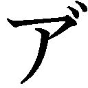ァ――――!!!!」
自身の最高の魔法を、全身全霊で――
【ステータス】
HP152/303 MP0/751
HP147/298 MP0/751
HP142/293 MP0/751――
目減りする数値。
いま僕は闇の底で、命を燃やしている。
だが、その命を厭う心配すら、もうない。なくなった。
もはや守ることだけが、全て。
僕の全てだ。
単純でわかりやすく、とても清々しい。
「あハッ、あはハハハハッ――!!」
僕は大切なものを守れる喜びを知り、とても久しぶりに心の底から笑った。
◆◆◆◆◆
――私の拳が命中すると確信したとき、カナミは安心した様子で笑った。
しかし、その安堵に塗れた瞳の色が一瞬で――別物に変わる。
黒曜石に似た黒い瞳に、紫色の発光が混じり、奇妙な黒紫色の瞳となったのだ。
その色の正体を私は知っている。
カナミのつけた『腕輪』から紫の魔力が這い出ているのが見える。それが後頭部から身体の中に入り込み、内から紫色に発光しているのだ。
その紫の魔力はカナミの安堵の笑みを狂気の笑みに変えて、叫ばせた。
「魔法ッ、《過密次元の真冬》ァアアアアアァ――――!!!!」
冷気と次元の高等魔法が構築される。
だが当然、それはすぐに霧散した。カナミの体調的に、こんな高度な魔法を維持できるはずがないのだ。
しかし、口と鼻から血を噴き出しながらも、カナミは本当に一瞬だけだが、魔法構築を成功させてしまった。
一瞬だけ構築された冬の魔法。
それによって、カナミは現状の空間情報を取得し、私の拳の速度の減速も成功させる。
そして、折れた左腕を突き出し、私の拳を受け止めた。
その腕に力はない。しかし、肉の壁を間に挟んだことで、顔面への衝撃は緩和される。
腕が複雑骨折する感触と共に、カナミは殴り飛ばされた。
私は歯嚙みしながら、それを見送る。
大ダメージは与えた。しかし、必殺のタイミングを凌がれてしまった。
カナミは地面の上を滑り転び、砂埃に塗れていく。
ゆらりと黒い影が、すぐに砂埃の中から立ち上がった。
砂埃が晴れ、その不気味な姿が白日に晒される。
左腕は捩れ折れ、ぶらりと下がっている。顔は蒼白で、生気が感じられない。ここ数日の不眠で、目の下には真っ黒な濃い隈ができている。全身に無数の擦り傷と打撲を負い、指先一つ動かすのも激痛が走ることだろう。身の魔力は完全に枯渇し、胃と腸の中には水しかないはず。あのボロボロの身体の中に、エネルギーに代わるものなんて一つもない。
『舞闘大会』の三日間、ずっと戦い続けた身体は人間の限界をとうに超えている。
痛みと吐き気を通り過ぎ、恐ろしき死の味が舌の奥からせりあがっているはずだ。
――もう戦えるはずがない。
なのに、カナミは立ち上がり、剣を手にこちらへ歩いてきていた。
「あハッ、あはハハハハッ――!!」
それも、笑いながら――
明らかにおかしい。
『擬神の目』が敵のステータスを把握する。試合前と比べ、『状態』の『認識阻害』が桁違いに上昇しているのを見て、冷や汗を流す。
「守ら、ないと......――」
カナミはひとしきり笑ったあと、ぶつぶつと呟きながら、砂埃の中を歩いてくる。
その足取りは頼りない。けれど、なぜか倒れる気がしない。
「ああ、僕が守るから、安心して......。あハハっ、ゼッ対に、ボクが守るから......――」
黒紫の目を輝かせ、カナミは薄く笑い、『腕輪』を撫でた。
死の淵だというのに、優しく穏やかな表情をしている。
もうカナミの意思はない。そう判断するに十分な狂気の笑顔だった。
「......これ、完全に意識失ってるね。なのに動くってことは、パリンクロンの魔法かな......？ ディア、カナミの精神汚染が深まるパターンっぽい！ できるだけ、神聖魔法で異常を抑えて！」
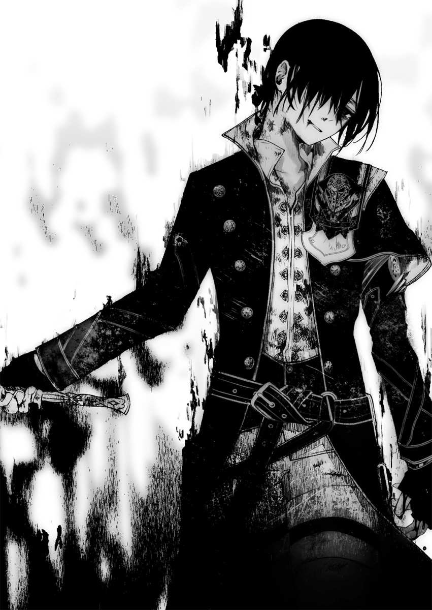
私は事前に決めていた別の計画に変更する。
「わかった、ラスティアラ！――《ストラスフィールド》！」
神聖な魔法結界が闘技場全体に張られる。
あらゆる闇を払い、精神を落ち着かせる光の魔法だ。
しかし、カナミには届いていない。
紫色の魔力が防御膜となって、光を防いでいる。
「やらセなイ......！」
その光の結界に反応して、カナミはこちらに向かって駆け出す。
最初よりも速い動きだ。
おそらくだが、『腕輪』が限界を超えて戦わせているのだろう。
息をつく間もなく、剣と剣が接触する。
妙な感触だった。接触しているのに、反動が少ない。カナミの剣に全く力がこもっていない。
体調不良で力が入っていないだけかと思ったが、すぐにそれが誤りだと気づく。
私の剣を通り抜けたかのように、柔らかな動きでカナミの剣は私の首に迫ってきていた。
その技を私は知っていた。おかげですんでのところで、それを避けることができる。
「い、いまのってアレイスの技!?」
つい最近、『フェンリル・アレイス』の力を使ったからこそわかる。
間違いなく、カナミは剣聖に比類する剣技を使った。
私の疑問に答えることなく、カナミは剣を振るい続ける。
それを私はギリギリのところで防ぎつつ、後退する。
「――《ファイアアロー・散花》！」
私が押されていると判断したディアが魔法を放つ。
その炎の雨によって、カナミは追撃を断念させられる。
私にもいくらかの炎の矢が降り注ぐ。急いで放ったため照準が適当だったのだろう。神聖魔法で炎を防ぎつつ、大きく距離を取る。
対照的に、カナミは魔法を一切使わず、身体能力だけで避けていく。
無数の炎に襲われ、そのいくつかを被弾しながら、それでもせわしくなく首を動かし、降り注ぐ攻撃を目で見て避けている。珍しい光景だった。
おそらく、いまのカナミは僅かな感知魔法さえも使っていない。体調的に、いつ消失するかわからない魔法は信用できないと判断したのだろう。
ぎょろぎょろと黒紫の眼球を動かして、視力だけに頼っている。
それは魔力が尽きている証拠だ。少しだけ私は安心する。
魔力のない魔法使いに大した脅威はない。
次元魔法を中心にしたカナミの戦術は凶悪だ。ただ、逆を言えば、それに頼り切っているとも言える。
次元魔法がなければ、カナミは少し腕の立つ剣士でしかない。
たとえ、その剣術が剣聖のものだとしても、そのくらいならばまだ私の許容範囲内だ。
私は意を決して、カナミに襲い掛かる。
「――鮮血魔法《フェンリル・アレイス》！ 神聖魔法《グロース》！」
魔力を消費して、近接戦闘能力に特化する。
そして、炎の雨を避けきったカナミに、休む間を与えずに攻撃をしかける。
それに対し、カナミは妙な動きを見せた。
いつの間にか、剣の構えが別物となっていた。
剣先を地面につけ、私を迎え撃とうとしている。
見覚えのある独特な構えだ。剣を下げ、相手の動きを待つのは――後ろにいるセラ・レイディアントの『剣術』だ。
私が間合いに入った瞬間、カナミは剣を斬り上げる。私は身体を駒のように回転させて、それを避ける。その技を受け慣れていたせいか、かなり避けやすかった。
カナミは避けられても、再度構え直し、斬り上げを繰り返そうとする。
まさしくセラちゃんの剣術だが、全く深みが足りていない。私は悠々とかわしつつ、とどめの一撃を繰り出そうとしたところで――カナミの左腕が動く。
青と白の美しい剣を握っていた右手とは逆の手に、二本目の無骨な剣を握っていた。その凶刃が、私の眼前に迫る。
咄嗟に私は剣を引き戻し、防御に当て、驚愕と共に跳ね退く。
カナミの左腕は完全に折れていたはずだ。なのに、剣を握って私を襲った。
――いまの虚の突き方は、ラグネちゃんの真似......？
危うく目をもっていかれるところだった。
距離を取り、カナミを観察し、あるはずのない二本目の剣の正体を知る。
左腕の一部が凍っていた。折れた肘に氷が纏わりつき、固定されている。握った手も同様だ。これならば、痛みで剣を落とすこともないだろう。
肘を曲げることはできないが、剣の機能を最低限は発揮できる。
カナミは驚く私に構わず、追撃してくる。
今度は凍った左腕は隠していない。二つの剣を自在に扱って戦っている。
――次は双剣......!?
ヘルヴィルシャインの技に近い。完成度は低いが、かつてのハイン・ヘルヴィルシャインを彷彿とさせる。
その変幻自在な剣術の数々に私は困惑する。ペースを握られているのは間違いない。
こちらにペースを呼び戻すため、さらなる魔法を私は重ねるしかなかった。身体に負担はかかるが、そうも言ってはいられない。
「――二重展開！ 鮮血魔法《ハイン・ヘルヴィルシャイン》！」
珍しい双剣に戸惑うなら、そのときだけその専門家から助言を乞えばいい。
私は双剣の全てをハインの知識で見切り、優位に戦闘を運ぶ。
その差は圧倒的だった。
カナミの拙い双剣術はすぐに綻びを生み、その右手から青白の剣が弾き飛ばされる。そして、左腕の凍った剣だけが残る。
私は好機と確信し、カナミの腕を摑みにいく。密着さえすれば、曲がらない凍った左腕は邪魔になるだけだ。
空いた左手でカナミの右腕を摑み、そのまま関節を極めにかかる。
しかし、その瞬間、妙な浮遊感のあと――逆に私の腕が摑まれていた。
「え――？」
柔らかでいて素早い体術だった。摑まれた瞬間、カナミがぐるりと宙返りしたのはわかった。けれど、どういった仕組みで私の摑みが解けて、逆に摑まれているのかわからない。
――この奇妙な体術は、さっきの......!? これはグレン・ウォーカー？ いや、スノウの技？ ああ、もうわけがわからない！
エルトラリュー学院の体術も混ざっているせいか、その技の出所がわからない。
いや、私の『血』が知らないということは......もしかしたら、連合国に存在しない異世界の体術かもしれない。
「――《グロース・エクステンデッド》！」
この距離と状態では何が起きるかわからない。私は強引に力で状況を覆しにいく。
限界を超えた力と速さで、カナミの腕を振り払い、腹を蹴り、すぐに後ろへ下がる。
数秒ほどの強化魔法だったが、負担が全身にのしかかる。
昨日のスノウとの戦いでも使ったため、その反動は凄まじい。できれば《グロース・エクステンデッド》は体調が万全でも切りたくない手札なのだ。
距離が離れ、またディアの魔法が降り注ぐ。カナミは足止めされ、私を追撃できない。
私たちは再度、お互いのスタート地点まで戻っていた。
多くの技の応酬が行われたが、結局は振り出しだ。
そのスタート地点でカナミは呟く。
「僕ガ、まモ、る。守ルよ――、あははっ――はハっ、あハハハはハはッ!!」
笑いながら、ふらつく。いまにも倒れそうだ。
限界を超えているのは間違いない。ろくに魔力を練ることすらできていない。
使えたとしても血反吐を吐くような苦しみの末に、初級魔法程度が発動するだけだろう。......なのに、勝てない。
前に言っていた例の『のうないまやく』ってやつのせいだろうか？ いや、それだけでは説明がつかない。いまのカナミは――その様子から、何も考えていない可能性がある。
ただ「守ること」だけしか考えていない。
それ以外の思考はゼロ。全てが反射的な判断だけ。
この世界で見て学んだ技を、次々と適当に使っているだけ。
小難しいことは考えず、ただただ適当に――
「な、何これ。もしかして、次元魔法に頼らず、余計なことを考えないカナミの方が強い......？」
私は冷や汗を流す。
普通ならば、思考能力が削がれると弱くなる。普通に考えれば当たり前だ。
ただ、この異常な少年は普通じゃないのだろう。
カナミは思考に余裕があると余計なことを考える。大量のＭＰがあれば無駄遣いする。何かと理由をつけて能力を出し惜しみする。結果、せっかくの動体視力と反射神経を宝の持ち腐れにする。格好つけることが多く、なぜか剣を使うことにこだわる。その優しい性分のせいで常に敵を思いやってしまう。完璧主義なのが災いし、些細なことでネガティブになる。などなど、たくさんたくさん――
その全ての悪癖が、いまカナミにはないのだ。
魔法が使えないからといって、マイナス修正で考えていては駄目のようだ。
私は厳しい表情で、後方のディアに指示を出す。
「......ディア、本気でいこう。手足を消し炭にするつもりで魔法を撃って」
「消し炭!? ラ、ラスティアラ......、本当に本気でいいのか？」
「あれは危険すぎる。力は短刀のように短い刃だけれど、間違いなく私たちを殺す力がある。その鋭さはスノウのときの比じゃない。いまカナミは体力も魔力も思考力も判断力も失ってるけど、それでも十分やばい......!!」
「......流石は『ジーク』だな。わかった、手足の一本二本は潰すつもりでいく」
「チャンスと思ったら、私ごとやって」
「......了解」
後方で作戦批判を示す狼の鳴き声が聞こえた気がしたが、無視する。
ここで私の安全にこだわっていては、勝てるものも勝てなくなる。
最悪、私が重傷を負っても、ディアさえ無事なら治る。
この戦いだけは絶対に勝たなければいけない。たとえ、私が犠牲になっても――！
「行くよ、カナミ！ ディア、セラちゃん!!」
全員に宣言し、駆け出す。
その先――いつの間にか、カナミは凍った手を器用に動かして、弓を構えていた。
素早く優雅に矢を番え、私に連射してくる。
その動きは、いつかのお祭りのときの私そのものだ。懐かしい。
しかし、その懐かしさは私の覚悟を深めさせる。
弓の狙いは正確だったが、いまさらその程度の飛び道具ではなんの効果もない。
駆けながら、身体を反って矢を避けていく。
矢が通り過ぎ、代わりに私の背中からディアの《フレイムアロー》が返っていく。
かなりの魔力がこもった魔法の矢だったが、その初動を読んでいたカナミはすでに避け終わっていた。《フレイムアロー》はカナミの後ろを通り過ぎ、結界に穴を空け、さらにその後ろの壁を少し溶かしたところで消える。
いい力加減だ。結界の強度を予測し、周囲への被害を最小限にしながらも、カナミを消し炭にできる《フレイムアロー》となっている。
伊達に『火の理を盗むもの』アルティの弟子をしていない。
《フレイムアロー》を避けたカナミは弓を捨て、何もない空間から剣を取り出す。
剣と剣が交差する。
この感触はアレイス家の剣術だ。
カナミの洗練された剣聖の技を、こちらも洗練された剣聖の技で防ぐ。同じ剣聖の剣術で、肉体スペックはこちらのほうが上――なのに、なぜか私は競り負ける。
カナミの剣術は、明らかに剣聖フェンリルを上回っている。
絶対に守護者ローウェンの仕業だ。あれは近代の剣聖を悠に上回っている。それを隣で見てきたカナミも同様のようだ。
化け物じみた剣閃が何度も皮一枚のところを通り過ぎる。
瞬く間に、全身の皮膚が切り傷にまみれていく。さっきは耳が削ぎ落ちるところだった。
気の遠くなるような恐ろしい数秒が過ぎたところで、ディアの援護が放たれる。
「――《ディヴァインアロー・シャインレイン》!!」
空から光の矢が降り注ぐ。援護といっても照準は無差別に近い。
カナミはそれを目で見て避けようとしていた。
ただ、光り輝く矢は炎の矢よりも見難そうだ。
カナミが防御に徹したのを見て、私は魔法を唱える。
この魔法で勝負を決するつもりだ。
魔法を構築しながら、私は心の中で自分に誓う。
――絶対にカナミだけは助ける！ 絶対にカナミだけは!!
でないと、私を助けたカナミが報われない。
こんな馬鹿な私を、カナミは助けてくれた。
けど、私を助けたせいでカナミはパリンクロンに捕まった。マリアちゃんもだ。
なら、私がここで命を賭けて彼を助けないと、彼がなんのために私を助けたのかわからない。カナミの記憶が戻ったとき、合わせる顔がなくなる。
だから、私は――!!
「――《グロース・エクステンデッド》ォオ!!」
限界を超えた強化魔法によって、命が削れていく。
身体が炎よりも熱くなり、筋肉の繊維が千切れていきながらも、人生最大の力を発揮できるようになる。
久しい感覚だ。
以前は『加護』によって恐怖を打ち消して、こうして命を危険に晒して戦っていた。
しかし、いまは覚悟と誓いによって命を危険に晒している。
それが嬉しい。
そう自分を変えてくれたカナミのためにも、自分のためにも、私は戦う――！
その全力の強化魔法を、カナミは冷ややかに見送る。また頭の悪い力押しだと思われているのだろう。
私は満面の笑みで、全力の拳を――地面に向かって振り抜く。
闘技場の人造の大地が砕ける。スノウとの試合で地面の固さは把握できていた。いまの私ならば、素手でこの船に穴を空けられる。
足場が崩壊し、多種多様の形をした岩の群れが重力に逆らって飛び上がった。
上からは光の矢が降り注ぎ、下からは岩石が空に向かって降っている。
流石のカナミでもその全てを把握はできないだろう――と、そう私は思っていた。
しかし、ここへ来て、さらにカナミの力は増す。
明らかに見えていないのに、カナミは目を瞑って、その全てをかわしていた。第六感のままに動きながら、掠りすらもしていない。
その動きを見て、この一瞬で全てを決着させると決意し直す。
おそらく、長引けば長引くほど、カナミの力は増す。そんな予感がする。
私は一瞬に全てを賭け――、駆ける――！
宙の岩を足場にして、カナミに襲い掛かる。
互いに空中、一瞬の戦いだ。
私は決死の覚悟で、カナミに斬りかかる。それをカナミは笑いながら迎撃する。
その迎撃で左腕を斬られ、脇腹を裂かれ、足を刺されようとも、私はカナミに剣を叩きつけ続ける。膂力の差を活かして、何度も何度も剣を振るう。
そして、とうとうカナミの右手の剣が弾き飛ばされる。私は笑みをこぼし、その返しの剣を振りぬこうとするが、急に体勢が崩れてしまう。
カナミが折れた左手で、周囲に広がっていた私の長い髪を摑んで引っ張っていた。あの氷結は任意で解除できるものだったらしい。手に接着していた剣はなかった。
私は妙な苛立ちを覚えた。その正体はよくわからない。だが、いま髪にこだわっている場合ではないと即断し、自分の剣で髪を切断する。
これでもう摑まれることはないだろう。
しかし、一瞬の油断も許されない攻防の中で、その行動は隙が多かった。
カナミの蹴りが私の右手首に当たり、剣を落としてしまう。
構わない。重要なのは殺傷能力ではない。
私は無手のまま、カナミに密着し、その両肩を摑む。
対してカナミは右手で私の首を摑んだ。
――そして、私とカナミは、宙から落ちていく。
まずカナミの握力で私の喉が潰れる。代わりに、カナミの身体を自由にする権利を私は得た。落下に合わせて、力の限りにカナミを地面へ向かって投げつける。
「ぐっ、ぅあ!!」
カナミは叩きつけられ、地面を割り、大の字になって呻いた。
その上に私は着地し、マウントポジションを取り、すぐさまカナミの顔面に拳を落とす。
抗う術なく、べちゃりと音をたてて、カナミの顔が変形した。
しかし、カナミは血塗れになりながらも、右手で私の『腕輪』を摑んでいた。一縷の勝機に賭けた行動だろう。『腕輪』さえ破壊すれば、試合は終わると思っているのだ。
だが、私にとって『腕輪』なんて関係ない。試合の勝負なんて関係ない。私の『腕輪』と引き換えにカナミの腕輪を破壊することができたなら、それは私の勝ちだ。
「ぁああァアあぁアアア――――!!!!」
カナミは咆哮する。そして、全ての力を右手にこめて、自らの筋肉が裂けるのもいとわずに私の『腕輪』を握り壊した。
同時に、私の最後の一撃も、カナミの左腕にある『腕輪』に振り下ろされる。
全てが壊れ、一切合財が決着する轟音が、闘技場に鳴り響く。
私の『腕輪』はカナミの驚異的な握力によって砕けた。
その破片が舞い、カナミは笑う。しかし、向こうの『腕輪』も同じだ。私の振り下ろした拳によって『腕輪』は左腕ごと潰れ、粉々になって砕けていた。
カナミはゆっくりと、折れた腕に――壊れた『腕輪』に目を向ける。
勝利の笑いがひきつり、絶望の表情に変わる。
「ぁ、あぁあ、ぁああああ......」
守ろうとしていたものを失った。そのとき、カナミは完全に心が折れた。
同時に、紫の魔力が消えていく。
私の『擬神の目』がカナミを束縛してた『呪い』の消失を感じ取った。
ようやく、いま、全ての災いの元を破壊した。
それを確認し、私は右手を空に突き上げる。
そして、歓喜のままに叫ぶ。
勝利宣言を。
『――どう!? 私の勝ちっ、パリンクロン――ッ!!!!』
喉は潰れ、それは声にならない咆哮と化していた。
それでも私は勝利を全力で謳った。
『舞闘大会』なんて舞台でしかない。準決勝なんてどうでもいい。
スノウとか守護者のことも、いまは頭の外だ。
たった一つの喜びだけが胸を占める。
やっと私は私の戦いに勝利した。
聖誕祭の夜から今日までの長く苦しい戦いに勝利したのだ。
聖誕祭で奪われた私の『主人公』を取り返してみせた。
その瞬間を、その達成を、その喜びを――全力で嚙み締める。
私の物語の序章が終わり、新たに一章が始まる瞬間を、確かに感じて笑ったのだ。
◆◆◆◆◆
............。
........................。
....................................。
......随分と長い間、僕は闇の底を歩き続けた気がする。
その世界はとても居心地が良かった。
ずっと、そこに居たかった。
そこならば、もう苦しむ必要はなかったから。誰もが『幸せ』だったから――
けれど、それももう終わりだ。
そんなことは許されない。
偽物に逃げないと誓った。道を間違えないと誓った。
次があれば、二度と失敗しないと誓った......！
ああ、いまやっと、全てを思い出した......！
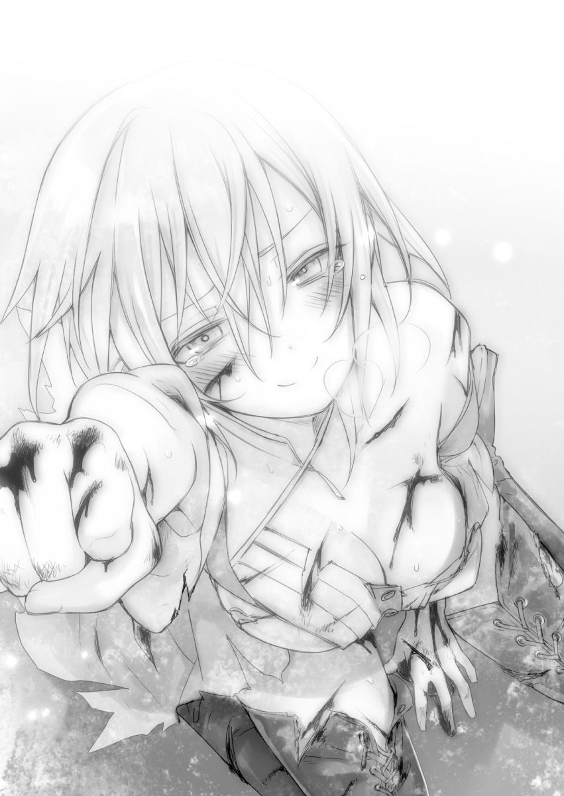
深い闇の世界に暖かな光が灯り、世界が『真実』に晒されていく。
「――す、凄まじい激闘でした......！ 血を血で洗う戦い......。壮大で美しい技の数々......。紛れもなく名勝負......。しかし、私の見る限り、相打ちのように見えましたが......戦いの結果は、いかに――!?」
鳴り響くような声が聞こえる。
僕を呼ぶ声。心配する声。期待する声。祝福する声。
その様々な声に導かれ、いま、僕はゆっくりと目を開ける。
そこには心配そうに僕の顔を覗き込む、美しい少女の顔があった。中世的な顔つきで、その短い金髪には僕があげた髪飾りが留められてある。
どうやら、僕を膝枕してくれているようだ。闇の中で感じた光は彼女のものだったのかもしれない。
その少女は隣にいる別の少女と話しながら、僕に回復魔法をかけ続けている。
「カナミ......！ いま俺が治すからな......!!」
「ああ、結局『腕輪』は破壊しちゃったか......。余裕なんてなかったから仕方がないか。どう、ディア？ なんとか治せそう......？」
「なんとかいけそうだと思う......。あとに残りそうな異常もない。ああ、よかった......。いや、まだ油断は駄目だ！ 隅々まで浄化してやる！ 俺の魔力で！」
「そ、そう。がんばってね......」
彼女たちの名前を、僕は口にする。
「――ディア、ラスティアラ？」
この少女たちの名前はディアブロ・シスとラスティアラ・フーズヤーズ。
僕の仲間たちだ。
ディアは僕の回復に大量の汗を流している。僕の身体の回復に加え、状態異常を回復させるために全魔力を使ってくれている。
ラスティアラの方は......見るに堪えないほどボロボロだ。
綺麗な衣装は切り刻まれ、透き通るような白い肌には無数の傷がついている。青痣と赤い血が痛々しくて堪らない。何より、あの綺麗な長い髪がざっくりと切られ、短くなっていることに心が痛む。
ラスティアラは手を喉にあてて、自らに回復魔法をかけていた。
その喉を潰したのも僕だ。
「おっ!? カナミ――じゃなくてジークかな？ 気がついた？」
ラスティアラの美声は見る影もなく掠れていた。
「ラ、ラスティアラ......、その声......」
「あ、これ？ 別に気にしなくていいよ。すぐに治るからね。それよりも、記憶はちゃんと戻ってる？」
指摘され、すぐに僕は記憶を掘り返す。
その作業は激痛を伴っていたが、構わずに記憶を検分していく。
初めて迷宮に迷い込んだときから、パリンクロンに敗北するまでの時間――その全てを取り戻していく。
ぶつぎりになっていた二人分の記憶が統合されるのは不思議な感覚だった。
『ジークフリート・ヴィジター』という人物と『アイカワ・カナミ』という人物が合わさる感覚。
だが、やっと僕は僕を取り戻した。戻したが――
「戻った......。ああ、やっと取り返した......けど!!」
「どう、感想は？」
――感想？
『ジークフリート・ヴィジター』の記憶は愚かで堪えがたいものだ。けれど、このラウラヴィアで過ごした『アイカワ・カナミ』の記憶はもっと愚かで堪えがたい。
その事実が僕を絶叫に誘う。
「あぁっ、ああぁあっ!! ああ、もうっ――!!」
二人の記憶を辿っていく最中、とうとう堪えきれなくなってしまった。
「ああ！ 僕は！ 僕はなんてことをっ!!」
このラウラヴィアでの記憶の始まり――まずパリンクロンを命の恩人と思い込み、マリアと出会うところの時点で、もう駄目だ。
頭をかきむしりながら、その愚かさを自分で糾弾する。
「マリアが僕の妹って！ なんで僕は疑わないんだっ、なんで気づかない!? 僕の妹への気持ちはその程度のものだったのか！ あぁっ、あああっ、なんて情けない！ 二人を間違えるなんて、二人に申し訳ない!!」
反省はまだまだ終わらない。
激流のごとく、『アイカワ・カナミ』として過ごしてきた記憶が溢れていき、同時に様々な感情も溢れて止まらない。
「あとギルドマスターってなんだ!? あんなに気をつけて、ずっと組織から遠ざかってたのに、関わるどころかその長になってるなんて！ お金を稼ぐだけなら、もっと別の方法があるだろ!? パリンクロンのやつに簡単に騙されて、僕は！ 僕はバカか！ バカなのか!?」
「ジ、ジークは馬鹿じゃないぞ！ 俺よりかはぜんぜん頭いい！」
見かねたディアがフォローを入れてくれる。しかし、いまはフォローを受ければ受けるほど、逆に情けなくなるだけだった。
その記憶を辿る旅はスノウとの邂逅に移る。ただ、どこを思い出しても顔から火が出そうなほど恥ずかしい。口元が震え、変な声が出てくる。
「ありがとう、ディア！ けど駄目だ！ 全然駄目だったんだ！ あれだけディアに手の内を見せるなって言っておきながら、得意げに次元魔法を使いまくってた！ それもあっちこっちでだ！ 可愛い女の子に褒められたかったのか？ 新しい仲間たちに認めてもらいたかったのか？ 自分の力が異常だってわかってるなら、もっと隠せよ!!」
僕の反省をセラさんだけは楽しそうに聞いていた。
いまはそうやって笑ってくれる方がありがたい。
「ラウラヴィアのギルドマスターという立場にかこつけて、やりたい放題して！ 国からの依頼で迷宮に入ったときなんて、エルミラードを差し置いて、我が物顔で力を見せつけて、僕は何がしたかったんだ!? エルミラードに凄いって言われたかったのか!? ラウラヴィアのみんなに褒めて欲しかったのか!? ああ、なんて浅ましい！」
「ジーク、少し落ち着こう......。いや、ほんとまじで落ち着こう......」
ラスティアラは焦った声を出す。
僕の終わらない叫びを前に、尋常でないと気づいたらしい。
しかし、止まらない。
「迷宮探索も杜撰過ぎる！ 杜撰も杜撰！ なに遠足気分で三十層行ってるんだ!? 人の話をもっと聞けよ！ 守護者は『無数の死者を生み出す狂気の化け物』って聞いたんだろ!? ならなんで一人で行くんだよっ、剣ならまた一から作ればいいのにさあ!!」
ディアが周囲の目を気にしながら、おろおろとしていた。
それでも止まらない。
いまこそ、溜まった感情全てを吐き出すときだと思った。
みんなに心を開き、悩みを打ち明けた方がいいと、過去の失敗が教えてくれる。
だから、僕は全力で叫び続ける。
「三十層の守護者なんか余裕だって!? 剣でもローウェンに勝つって!? 『舞闘大会』で勝つのは当然!? ラスティアラより弱いはずなんてないって!? ああ、恥ずかしい！ どんだけ自信過剰なんだよ、僕はああ――!!」
ここまでくると、誰もが絶句だった。
その叫びは司会のマイクに入り、闘技場全体にも聞こえている。
司会も、観客たちも、見に来ているであろうギルドの人たちも、ラウラヴィアで仲良くなった人たちも、仲間であるラスティアラたちも、誰も彼もが僕の狂乱の叫びを、口を開けて聞いていた。
「負けたことがないとか大噓だ！ 普通にパリンクロンに負けただろうが！ しかも完敗っ、捕縛の上に洗脳までされた！ ああ、失敗続きだ！ むしろ、成功なんてあったっけってレベルだよ！ ディアも、ラスティアラも、マリアも、アルティも、ハインさんも、誰も助けられなかった！ 誰一人、助けられなかったあああ――!!」
恥も外聞もなく、僕は叫ぶ。
恥はかきすぎたし、外聞もひどいことになってる。
だから、もう気にしても仕方がない。
「それでなんで、ローウェンやリーパーと仲良くなってんだよ！ あいつらはモンスターだぞ！ ティーダやアルティと同じ存在なんだぞ、あれ！ なに一緒に寝泊まりして、暢気に剣術を教えてもらってるんだ!? 仲良く大会登録までしてるし！」
最後にスノウとリーパー、そしてローウェンとの思い出を再確認していく。
それはつまり......あの素晴らしい日々を思い返すということだった。
とても幸福だった日々。
妹と共に、遠い異世界で『幸せ』になる夢の世界。
その『夢の世界』では、妹が笑っていて、信頼できる相方がいた。守護者やリーパーとは友達になっていて、国のギルドマスターとして仲間や国民には信頼されていた......。
だが『現実』は、妹とは離れ離れ、相方の夢を奪ってしまい、さらに仲間を助けられなかった。守護者やマリアとはわかり合えずに敵対してしまい、誰とも信頼関係なんて結べなかった......。
過去の失敗をなかったことにして、偽物の世界に逃げていた日々......。
それを目じりに溜まった涙と共に、振り切っていく。
「ああっ、スノウへの対応が適当すぎる！ なんであいつの悩みをわかってやろうとしない!? 他人に興味がないから舞踏会であんなことになるんだ！ ああなるまで気づきもしない！ なったらなったでろくな対応もしない！ そのあとの竜討伐なんて違和感ばかりだったろ！ スノウもっ、ローウェンもっ、リーパーもっ、みんなおかしかった！ 何もかもっ、気づくのが遅い！ 遅すぎなんだよ!!」
そして、その記憶の旅は、徐々に『今』へ近づいていく。
「『舞闘大会』の内容も酷い！ 受付さんにあれだけ注意されてたのに、油断し過ぎだ！ エルミラードとの試合なんて最悪だ！ なんで釣られて愛の告白をしてるんだ僕は！ それも衆人環境の中で！ 血迷ってるのか!? イライラしてたからって自爆してどうする!? エルミラードに当たってどうする!? 当たるならパリンクロンのやつだろ！ ああ、本当に僕はろくなことをしない!!」
僕は『アイカワ・カナミ』がやらかしてしまったことを思い出し、顔を真っ赤にして嘆く。その中でもエルミラードさんとの試合は特別だ。
「意志が弱いからそうなる！ この試合だって、もっと僕がしっかりしていれば簡単に終わってた！ こんなになってまで戦う必要なんてなかった！ ラスティアラの髪も喉も無事だったのに！ 全部、僕の心が弱いせいでっ!!」
僕はラスティアラたちの惨状に目を向け、顔を歪ませる。
ようやく、記憶の旅は『今』に至った。
自虐するのは楽だが、それよりも大切なことがある。
僕は声量を落としていき、全てを吐き出した心を落ち着かせ、ゆっくりと謝っていく。
「ああ、本当に僕は馬鹿だ......。けど、やっと辿りついた......。ごめん、ラスティアラ。あそこから連れ出しておきながら、最後までついてやってあげられなかった。ディアも僕のせいで腕を失った上に、何度も危険に晒してしまった。本当にごめん......」
僕は肩を落とし、顔を俯ける。
長い慟哭の果て、ようやく熱が治まってきた。
そんな僕をラスティアラは苦笑いしながら迎えてくれる。
「やっと落ち着いた......？」
「落ち着いてきた......。格好悪いところ見せたけど、もう大丈夫だ......」
冷静に自分を『注視』して、まずは『状態』を確認する。
【ステータス】
混乱7.48 精神汚染0.09
ほとんどの状態異常がディアの魔法によって解除されている。
ただ、『封印』が消えて『混乱』が残っていることからスキル『？？？』の危険は残っていると考えた方がよさそうだ。
先ほどの感情の爆発で発動しなかったのは死の危険がなかったためだろう。むしろ、精神衛生上、いまのは必要だったとスキル『？？？』に判断された可能性は高い。
しかし、『状態』欄はすっきりしたものの、細かな体調不良は残っているようだ。
瞼が重い。立ったまま眠ってしまいそうなほどだ。
ＭＰはゼロだがＨＰは十分に残っている。ただ、体力とＨＰは別物ということは確認済みだ。死ぬ危険は少ないが、疲労で動けなくなる危険は残っている。
僕は両手を何度も握り締め、どこまで戦えるかを測る。
場合によっては、いまから連戦もありえる。
冷静に自分の残る力を確かめる。できれば、これ以上の戦闘は回避したいが、そうも言ってられない。
ここで怠ければ、前と同じ結果になる予感がある。
記憶が戻ったいま、聖誕祭の日と同じ失敗はしない。
もう二度と、絶対に――!!
僕は現状を確認し、これからのことを必死に思考し続ける。限界近い脳みそを酷使する。
不眠だとか、体調不良だとか言ってられない。
正直、この程度なら温い。聖誕祭の日の最後の絶望と比べたら、まだまだ余裕だ。
苦しくて苦しくて堪らないが、死ぬほどじゃない。これより酷い状態を僕は知っている。
今日までの経験が、僕の心を強くしてくれているのがわかる。
僕はスキル『並列思考』の全てを駆使して、これからの行動予定を練り直す。
そして、深呼吸のあと、ゆっくりと仲間に話しかける。
「ラスティアラ、ディア。格好悪くて申し訳ないけど、ここからもっと格好悪く足搔くことになると思う......！ もう僕は取り繕いも逃げもしない。そうやって、失敗するのはもうたくさんだから......！」
「お帰り。......ジークが格好悪いのは知ってるから別に気にしなくていいよ？」
ラスティアラは本当に安心した様子で、僕の帰りを喜んだ。
続いて、隣のディアも顔を明るくする。
「ジーク！ やっと、ジークが帰ってきた!!」
横から抱きついて、目じりに涙を浮かべてはしゃぐ。
僕も涙を浮かべそうになる。
長い暗闇から抜け、この眩しい光を前にして、目が滲む。
けれど、感慨にふけっている場合ではない。
僕が考えている通りなら、一秒も無駄にできない。ディアの肩を摑み、少しだけ身体を離して、目を見つめて話す。
「待って、ディア。まず、お願いしたいことと謝りたいことがあるんだ。......確かに記憶を取り戻した僕は、以前の『ジークフリート・ヴィジター』と同一人物だけど、いままで通り『カナミ』って呼んで欲しい。実は『ジーク』の方が偽名で、『相川渦波』こそが本当の名前だったんだ。これからは、僕のことを『カナミ』と呼んでくれないか......？」
「え、え......？ わけがわからないよ？『ジーク』じゃない......？」
焦ってディアのことを考えていない説明になっていたようだ。
僕は話を嚙み砕いて、もう一度訴えかける。
「僕は『ジーク』でもあるし『カナミ』でもあるってことだよ。あの頃の僕は、何もかもが信じられなくて、余裕なんて一つもなかった。だから、『ジークフリート・ヴィジター』って名乗って、偽者に逃げ続けてたんだ。噓をついて、ディアの信頼を裏切っていたのはわかっている。それでも許して欲しい。もう二度と噓はつかないから――」
「――............」
ディアは呆然と僕の言葉を聞く。しかし、何も返さない。
やはり、約束やルールを大事にするディアにとって、噓の名前を使っていたことは受け入れられないことだったのかもしれない。けど、ここでしっかりと本当の渦波について話しておかないと、後々困ることになる。
なんとかディアに納得してもらおうと、僕は言葉を足そうとする。
しかし、その前にディアは、僕の予想していた反応と別の反応を示し、僕でなくラスティアラに詰め寄る。
「――な、なあ、ラスティアラ。なんかおかしくないか？」
「ん、何が？」
ディアは顔をしかめているが、ラスティアラは笑顔だ。
「ラスティアラ、言ってたじゃないか。『ジーク』の記憶が戻ったら、『カナミ』のときのことは忘れるって......。な、なんだか、どっちの記憶も完璧なように見えるんだが......」
そんなことはない。どちらの記憶も残っている。
何適当なこと言ってるんだ、ラスティアラ......。
純真なディアは見事ラスティアラに騙されていたのがわかる。
「あー、あれねっ。そんなことも言ったね。ごめん、ディア。あれ噓」
「え、えぇ！ 噓!? だ、騙したのか、ラスティアラ！ ラスティアラがそう言うから、俺は我慢してあの服を着てたんだぞ！ あれを全部！ ジークは覚えてるのか!?」
「うん。たぶん、ばっちし覚えてる」
ラスティアラはとてもいい笑顔で頷き、
「う、うぁあああああああああ――!!」
ディアは顔を真っ赤にして走り出す。
「あ、逃げちゃ駄目！ ここでバラけるのは絶対駄目！ まじでまずいよ!!」
「ま、ままま待て！ 僕も困る！ 動くな、ディア！ 頼む!!」
幸い、ディアの身体能力は低い。本気で焦った僕によって彼女は捕縛され、そのままラスティアラの手で意識が落とされた。
案の定、初っ端から計画通りにいかない。
僕とラスティアラが安心して一息ついていると、いつの間にかセラさんは『獣化』を解いて人の形態をとっていた。ラスティアラの着ていた大きな外套を身に纏っている。
「ディア様は気絶が安定ですね。これで安心です」
「火力が欲しくなったら起こそう。それまでは寝かしとこう。寝起きでも、カナミが壊してって言ったらなんでも壊すでしょ、この子」
ラスティアラに頼まれ、セラさんはディアを腕に抱える。
僕はディアに対する酷い評価を聞き、少し呆れる。
「それただの危ない子じゃないか......。というか、ちょっと見ない間にディアのキャラが変わってるような気がするんだけど......」
「いや、これがこの子の素だよ。ディアは変に格好つける子だからね。『ジーク』の前では特に見栄張ってたんでしょ」
ラスティアラは眠るディアを優しい目で見る。
それは、いつかのジークがディアを見ていた目とは全く違う。真にディアを理解している目だった。
「そっか......。僕は全然ディアのことを理解していなかったんだな......。いや、理解しようとしなかっただけか......」
何度も理解できる機会はあった。過去も性別も、強く追及すれば教えてくれたかもしれない。そのとき、本当のディアと出会えたかもしれない。
けれど、僕はそれを選択しなかった。
最初の頃の僕は、異世界の人間をゲームのＮＰＣのように見ていた。この世界を――妹のいない世界を信じたくなかったからだ。
けれど、いまは違う。信じなければ、前に進めないとわかっている。
ことが終われば、ディアと僕はもう一度自己紹介し合って、出会い直そう。
そう僕が決意したところで、しんみりとした空気が闘技場内に流れる。間が空いたことで、遠くで様子を見ていた司会が近づいてくる。
「え、えーと......、よくわからないのですが、『試合』はどうなったのでしょうか......？」
「すみません、ちょっと黙っててください」
「は、はい」
僕は冷たくあしらう。
この司会のやってきた所業に対する怒りは、記憶の戻ったいまでもちゃんと残っている。この恨みだけは絶対に忘れはしない。
ラスティアラも司会を置いて話し出す。もう『舞闘大会』などどうでもいいと思っているのだろう。
「それで、これからどうする予定なの？ すぐにでもパリンクロンを追いかけるの？」
「あー、それなんだけど......。まず試合を終わらせよう。ラスティアラ、とりあえず負けてくれないか？」
「......え、試合？ いや、パリンクロンは？」
本音を言えば、僕も『舞闘大会』の試合なんてどうでもいい。いますぐにでもパリンクロンを追いたい。
あいつが自由に生きているというだけで不安が募る。一秒でも早く決着をつけたい。
しかし、それこそあいつの思う壺だ。
ここからは慎重に動かないと、致命的な綻びが『舞闘大会』に生じるだろう。
その綻びは、きっと僕を連合国から出してくれなくなる。
スノウ、リーパー、ローウェン。この三人が僕の前に立ちはだかる。
確証はないが、パリンクロンの作った『牢獄』が甘いはずがない。
その『牢獄』から出るには、細心の注意を払って動く必要がある。
ただ、その脱出計画は――
「――それは言えない。すまない、ラスティアラ」
誰にも言ってはいけない。口にしてはいけない。
それどころか、深く考えてもいけない。
そのどちらでも、彼女に気づかれてしまう可能性がある。
彼女に気づかれたら、この計画は終わりだ。あの性格なら、スノウとマリアの二人すらも平気で犠牲にするだろう。その覚悟が彼女にはある。
時間が経てば経つほど、気づかれる可能性は増す。
迅速に慎重に、ことを進めないといけない。
「ふうむ......」
堂々と隠し事をされ、ラスティアラは不満そうだった。
僕の記憶が戻ったら、すぐにでも連合国から出るつもりだったのかもしれない。
しかし、冷静に自分の不満を抑え込み、ラスティアラは話す。
「私はすぐにでもパリンクロンを追いかけるべきだと思う。あの守護者を倒すのは、いまじゃなくてもいい。どう見てもローウェン・アレイスはお人好しの善人だから、放っておいても大事にならないはず。けどパリンクロンは逆――放っておけばおくほどろくなことにならないよ？」
「わかってる。パリンクロンは許せない。いますぐ追うべき敵だ。だからこそ、アルティのときと同じ間違いを繰り返したくないんだ。このままだとあの日と同じになる」
「何を言って......」
ラスティアラは僕の核心をはぐらかすような言葉に顔をしかめる。
矛盾した話をされ苛立ってきている。
しかし、僕は譲らない。
「――ラスティアラ、僕を信じてくれ。僕もラスティアラを信じてるから」
過去の僕のように信頼していないから隠しているわけじゃない。信頼しているから何も言わないのだ。
他人任せにするのでもなく、たった一人で戦い続けるのでもなく――信用できる仲間たちと協力することが一番の近道だと、僕は学んだ。それをいま、僕は実践する。
その僕の真剣な訴えを聞いて、ラスティアラはわざとらしく溜息をついた。
「......はぁ。仕方ないか。カナミがそこまで言うなら、私はそれに従おうかな。これからどうするつもりかよくわからないけど......とりあえず、ここは私が負けておこっか」
そして、様子を窺っていた司会に伝える。
「司会さーん。ラスティアラチームは降参ー。向こうも認めたから、こっちの負けにしといてねー」
しかし、司会はわけがわからないという様子だ。観客席の方も状況を理解しきれない人たちが、先ほどからずっとざわついている。
「えっと、『象徴落とし』の戦いはどうなったのでしょうか......？」
「ああ、それなら私の方が早く壊れたと思うよ。でも、ほぼ同時に壊れたのも確かだから、話し合って勝敗を決めてたんだよ。それで、私のチームが降参したって流れ。残念だけど、私たちの負けだね」
「え、ええ？ 降参しちゃうんですか？」
「そうだよ」
「しかし、まだ戦えそうに見えますよ......？ というかカナミ選手を治したのはラスティアラ様たちで......」
「当事者同士が言っているんだから認めてくれないかな。私のチームじゃ、カナミに勝てないって判断したの。だから、私たちは降参。何かおかしい？」
脅すかのような強い口調だ。ラスティアラに圧され、司会は頷く。
「......は、はい、わかりました。問題ありません。――『一ノ月連合国総合騎士団種舞踏会』北エリア西エリア準決勝戦はっ、アイカワ・カナミ選手の勝利です！」
司会のアナウンスがしっかりと会場全体に響き渡る。
これで僕が決勝に進出だ。まずはこれで一歩目。
観客席のざわつきは増し、不満の声が膨らんでいく。
相打ちかと思いきや、いつの間にか話し合いで勝負が決まっていたのだ。不完全燃焼も甚だしいだろう。しかし、申し訳ないがここは我慢して貰いたい。
この『舞闘大会準決勝』は、僕にとって前座にすぎない。
僕の本当の戦いはこれから始まるのに、ここで完全燃焼するわけにはいかないのだ。
試合終了のアナウンスが響き、観客たちがブーイングを鳴らす中、僕はラスティアラに近づいて小声で話しかける。
「これから言うことをよく聞いてくれ、ラスティアラ。無事、『舞闘大会』を乗り越えるためにやってほしいことが沢山ある」
ゆっくりと丁寧に――そして、肝心なところは伏せて伝える。
無茶なことを言っていると自分でもわかっている。
しかし、それをラスティアラは信頼した様子で、黙って頷きながら聞いてくれた。
――僕は安心する。
自分自身を取り戻したラスティアラは、僕を信頼してくれている。そのラスティアラに、僕は全ての信頼を預けられる。それが嬉しくてたまらない。
これが本当の仲間ってやつなのだろう......。
ただ、感慨にふけっている場合ではない。これから、僕は確実に計画を進めていかないといけない。
記憶を取り戻し、ずっと待たせていた仲間たちと合流した。
ならば、いまこそ残りの仲間たち――スノウ、ローウェン、リーパーを救うときのはずだ。
今度こそ、間違いはしない。この『舞闘大会』を、全員笑顔で終わらせてみせる。
その誓いを胸に、いま――僕の本当の戦いが始まる。
五巻です。
今回の表紙ではリーパーがメインとなって、ぎりぎりのところを攻めてますね。ちなみに作者はリーパーのデザインが一番好きです。理由は公言しませんが一番好きです。見ているだけで心が洗われます。
そして内容のほうですが、ようやく念願のシーンまで辿りつけました。いつものごとく、ページがギリギリだったので本当によかったです。
ただ、念願のシーンに辿りついたものの、この先に待つ主人公の二度目の清算ともいえる三十層の守護者戦は次巻になります。
このラウラヴィア国での物語は、一巻から三巻までのヴァルト・フーズヤーズ国での物語と似通っているところが多々あります。表裏一体と言ってもいいような部分があり、特にヒロインや守護者の扱いが顕著でしょうか。その違いを、成長した主人公がどう乗り越えていくのか......というのが見所だと私は思っています。六巻では三巻と違うところを、きっと主人公は見せてくれることでしょう。
このようにイラストや見所についてあとがきで語っていくのはいいのですが、実は『異世界迷宮の最深部を目指そう』には重大な問題が一つ残っています。
それは順調に物語が題名から少しずつそれていっていることです。
題名通り、迷宮でヒロインたちと戯れ続けたいのですが、この物語のボスモンスターたちが迷宮の外へほいほいと出てくるので、どうしても迷宮の描写のない巻が出てきます。言い訳のしようのないことなので、ここで深くお詫びしておきたいと思います。
本当に申し訳ございません。......あとがきの度に謝罪しているような気がします。
迷宮だけでなく、主人公の成長や葛藤も一杯書きたいと欲張った結果ですね。題名はよく考えて決めましょう。でないとこうなります。ほんと、次から気をつけます......。
しかし、これが私の最後の謝罪となるはずです。なにせ、次の六巻こそ、ずっとＷＥＢで書き続けた私にとって、最も書籍にしたかった部分です。自信を持って、送り出せる巻であると思っています。
ええ、六巻では謝罪のないあとがきを書いてみせます。必ず――！
最後に、この五巻までの道を切り拓いてくれた読者の皆様に感謝を。ここまで読んでくれた方々がいるからこそ、ここまでやってこれました。
もちろん、いつも手助けして頂いている編集さんたちやイラストレーターの鵜飼さんにも感謝を。
この五巻を手に握り締め、『異世界迷宮の最深部を目指そう』に関わってくれた皆様に感謝の祈りを捧げ、次に取り組みたいと思います。
それではまた。
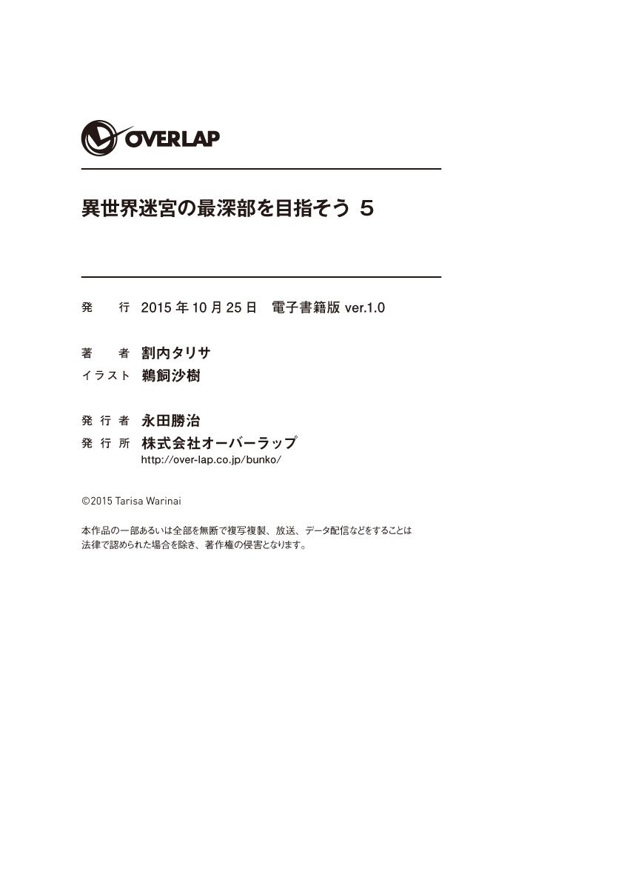